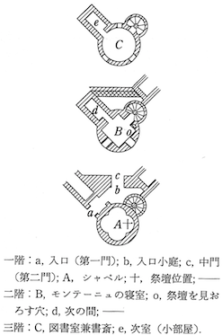

［＃ページの左右中央］
一五八八年の新版『随想録』の扉には、その標題の下に第三巻一冊と既刊二冊への増補六〇〇項が増加されたと印刷されているが、この書きおろしの第三巻は、結局、一五八二年版の余白に書き込まれた前記増補分の延長ないし溢流とも言うべきもので、そこに特に新しい提論はないようである。けれどもやはりそこには、進歩とか特徴とか言うべきものが確かに認められる。まったく著者モンテーニュは、今や紋章だの勲章だの、王室伺候だとか市長だとかいう肩書などを、いつの間にかきれいさっぱりと脱ぎ捨てて、フランスのジャンティヨムからソクラテス流の世界の市民になり変っている。一五八八年版の表紙には肩書きが取れてただモンターニュの領主と書かれている。そして彼はその書斎における読書執筆と彼のいわゆる夢想とをいよいよ自己の本領と自覚し、著作者エッセイストたることに徹している。従来はいささか消極的であった自己弁護も、今や全く積極的な自己表出となり、大胆に自己の根本思想を布衍し解明することに没頭している。その上さらに、自己を読者に知らせることから、読者をして読者自らを知らしめ、読者自らをして世界や宇宙に眼を注がしめることに、その重点を移してゆく。つまりモンテーニュの自己 は、この時、彼自らにとっても読者にとっても、己れ自らと世界とを知らせる、いわば顕微鏡とも望遠鏡ともなる光学機械、モラリスト・エッセイストという彼の本職にとって最も大切な道具となるのである。三の六「馬車について」の章なり三の九「すべて空なること」の章なりは、いずれも一の二十三、二十七、三十一、二の二十二章の延長であるとしても、何とそれは堂々として確信に満ちていることであろう。こういうところに第三巻時代のモンテーニュの面影が見られる。
［＃改ページ］
この章以下の十三章は、全部『随想録』の一五八八年版に新たに加えられた部分であって、従来は、モンテーニュが四カ年にわたる市長職をおわって再びふるさとの城館に起きふしするようになった一五八五年の暮あたりから一五八八年の始めに至る間に、ほぼ継続して、大体配列されている順に書かれたもの（ヴィレの説）と信じられていたが、最近の研究によると（一九五三―五四年 Revue d’Histoire Litt raire 誌所載 Roger Trinquet: Du nouveau dans la biographie de Montaigne 参照）、これら十三章は、一五八五年六月から翌八六年の七月に至る間と、一五八七年二、三月頃から翌八八年の二月に至る間との、二つの時期にわかれて執筆されたことになり、その中間に約六、七カ月の中止期がある。モンテーニュがペストに追われて城館をあとに、家族を引き連れて諸所を放浪したのは、従来一五八五年秋冬の頃と推定されていたが、このモンテーニュ一生の中の最も苦難の多かった時期は、実際には一五八六年九月から八七年三月頃のことであったと思われる。この時期のことについては後出第十二章の始めの解説にゆずる。また巻末年表参照。とにかくモンテーニュは、市長をやめてから一五八八年まで、この七カ月ばかりの時期をのぞけば、前後二十五カ月ばかりの間、比較的平穏に執筆の時間をもったわけであるが、一五八四年に王弟アンジュー公が死んで以来、思いもかけずプロテスタント側の最高指導者であるアンリ・ド・ナヴァールが王位継承者になったので、フランスの政界はいよいよ紛糾した。特に西南部のボルドー方面は内乱がますます激しくなったから、モンテーニュは退職したとはいえ全然政治問題に無関係ではありえず、国王アンリ三世と、神聖同盟派のアンリ・ド・ギュイズと、かねて関係の深いアンリ・ド・ナヴァールと、いわゆる三人のアンリの間を奔走して、その調停に誠意を傾けた。そういう経験がこの章および第三巻第十章において、モンテーニュに「個人は混乱した社会の唯中でどのようにその良心を守りとおすことができるか」という問題を論じさせたのである。すなわちこの章では、モンテーニュも一方ではマキアヴェリと同様に政治と道徳とは別ものであると考えながら、なおかつ誠意信実はいかなる乱世においてもその徳を発揮するものであるとし、政治においても道徳を無視してはならないと言っている。しかし何と言っても政治組織、政治生活の中には不徳の介在は避けがたいものであるから、モンテーニュ自らはせいぜい調停者として働くくらいにとどまり、あまり政治の世界に深入りしたがらない。政治はもっと大胆なふとっぱらの人間に委せ、自分はやはりあくまでも自分の良心を清潔に保ちたいと思う。
raire 誌所載 Roger Trinquet: Du nouveau dans la biographie de Montaigne 参照）、これら十三章は、一五八五年六月から翌八六年の七月に至る間と、一五八七年二、三月頃から翌八八年の二月に至る間との、二つの時期にわかれて執筆されたことになり、その中間に約六、七カ月の中止期がある。モンテーニュがペストに追われて城館をあとに、家族を引き連れて諸所を放浪したのは、従来一五八五年秋冬の頃と推定されていたが、このモンテーニュ一生の中の最も苦難の多かった時期は、実際には一五八六年九月から八七年三月頃のことであったと思われる。この時期のことについては後出第十二章の始めの解説にゆずる。また巻末年表参照。とにかくモンテーニュは、市長をやめてから一五八八年まで、この七カ月ばかりの時期をのぞけば、前後二十五カ月ばかりの間、比較的平穏に執筆の時間をもったわけであるが、一五八四年に王弟アンジュー公が死んで以来、思いもかけずプロテスタント側の最高指導者であるアンリ・ド・ナヴァールが王位継承者になったので、フランスの政界はいよいよ紛糾した。特に西南部のボルドー方面は内乱がますます激しくなったから、モンテーニュは退職したとはいえ全然政治問題に無関係ではありえず、国王アンリ三世と、神聖同盟派のアンリ・ド・ギュイズと、かねて関係の深いアンリ・ド・ナヴァールと、いわゆる三人のアンリの間を奔走して、その調停に誠意を傾けた。そういう経験がこの章および第三巻第十章において、モンテーニュに「個人は混乱した社会の唯中でどのようにその良心を守りとおすことができるか」という問題を論じさせたのである。すなわちこの章では、モンテーニュも一方ではマキアヴェリと同様に政治と道徳とは別ものであると考えながら、なおかつ誠意信実はいかなる乱世においてもその徳を発揮するものであるとし、政治においても道徳を無視してはならないと言っている。しかし何と言っても政治組織、政治生活の中には不徳の介在は避けがたいものであるから、モンテーニュ自らはせいぜい調停者として働くくらいにとどまり、あまり政治の世界に深入りしたがらない。政治はもっと大胆なふとっぱらの人間に委せ、自分はやはりあくまでも自分の良心を清潔に保ちたいと思う。
だがこの告白は必ずしも彼自らに厳守されない。彼もまた自分の良心なり節操なりをけがさない範囲においては、相当積極的に政治的活動をする。もちろん第三巻においてもモンテーニュの個人主義は弱まるどころか、益々自分の体験を語り、自分を描き、自分を大切にするように説いているが（三の十）、一般社会に関する問題、政治の問題にふれることが、前二巻に比して著しく多くなっている。これはモンテーニュが、『随想録』という文筆活動をも自分の政治活動の一部と意識すること――これが自分の政治に関与するべく与えられた、或いは残された、一方法であると意識すること――が、いよいよ強くなった証拠とも考えられる。モンテーニュは自分について語ることがますます詳しくなるが、同時に人類一般に働きかけようとの意志も、益々強く、明瞭になる。
標題 De l’utile et de l’honn te とは、「有用なことと公正なこと」損得と正邪のいずれを優先すべきかというような意味で、それは第二のパラグラフ（「誰にとっても」……以下）の中に、実例と共に明らかにされる。
te とは、「有用なことと公正なこと」損得と正邪のいずれを優先すべきかというような意味で、それは第二のパラグラフ（「誰にとっても」……以下）の中に、実例と共に明らかにされる。
raire 誌所載 Roger Trinquet: Du nouveau dans la biographie de Montaigne 参照）、これら十三章は、一五八五年六月から翌八六年の七月に至る間と、一五八七年二、三月頃から翌八八年の二月に至る間との、二つの時期にわかれて執筆されたことになり、その中間に約六、七カ月の中止期がある。モンテーニュがペストに追われて城館をあとに、家族を引き連れて諸所を放浪したのは、従来一五八五年秋冬の頃と推定されていたが、このモンテーニュ一生の中の最も苦難の多かった時期は、実際には一五八六年九月から八七年三月頃のことであったと思われる。この時期のことについては後出第十二章の始めの解説にゆずる。また巻末年表参照。とにかくモンテーニュは、市長をやめてから一五八八年まで、この七カ月ばかりの時期をのぞけば、前後二十五カ月ばかりの間、比較的平穏に執筆の時間をもったわけであるが、一五八四年に王弟アンジュー公が死んで以来、思いもかけずプロテスタント側の最高指導者であるアンリ・ド・ナヴァールが王位継承者になったので、フランスの政界はいよいよ紛糾した。特に西南部のボルドー方面は内乱がますます激しくなったから、モンテーニュは退職したとはいえ全然政治問題に無関係ではありえず、国王アンリ三世と、神聖同盟派のアンリ・ド・ギュイズと、かねて関係の深いアンリ・ド・ナヴァールと、いわゆる三人のアンリの間を奔走して、その調停に誠意を傾けた。そういう経験がこの章および第三巻第十章において、モンテーニュに「個人は混乱した社会の唯中でどのようにその良心を守りとおすことができるか」という問題を論じさせたのである。すなわちこの章では、モンテーニュも一方ではマキアヴェリと同様に政治と道徳とは別ものであると考えながら、なおかつ誠意信実はいかなる乱世においてもその徳を発揮するものであるとし、政治においても道徳を無視してはならないと言っている。しかし何と言っても政治組織、政治生活の中には不徳の介在は避けがたいものであるから、モンテーニュ自らはせいぜい調停者として働くくらいにとどまり、あまり政治の世界に深入りしたがらない。政治はもっと大胆なふとっぱらの人間に委せ、自分はやはりあくまでも自分の良心を清潔に保ちたいと思う。だがこの告白は必ずしも彼自らに厳守されない。彼もまた自分の良心なり節操なりをけがさない範囲においては、相当積極的に政治的活動をする。もちろん第三巻においてもモンテーニュの個人主義は弱まるどころか、益々自分の体験を語り、自分を描き、自分を大切にするように説いているが（三の十）、一般社会に関する問題、政治の問題にふれることが、前二巻に比して著しく多くなっている。これはモンテーニュが、『随想録』という文筆活動をも自分の政治活動の一部と意識すること――これが自分の政治に関与するべく与えられた、或いは残された、一方法であると意識すること――が、いよいよ強くなった証拠とも考えられる。モンテーニュは自分について語ることがますます詳しくなるが、同時に人類一般に働きかけようとの意志も、益々強く、明瞭になる。
標題 De l’utile et de l’honn
te とは、「有用なことと公正なこと」損得と正邪のいずれを優先すべきかというような意味で、それは第二のパラグラフ（「誰にとっても」……以下）の中に、実例と共に明らかにされる。（b）誰でもばかを言うことは免れない。困るのはそれを念入りにやられることである。
あわれこの人、一大努力を以て一大愚論を吐く。
（テレンティウス）
だがわたしはちがう。わたしのはいかにも愚論らしくうっかり唇をもれるのである。だからはなはだ始末がいい。少しでも困ればあっさり捨てる。つまりわたしは、愚論は愚論として買いもし売りもするのである。わたしが紙に向って語るのは、出あいがしらの人に向って語るのと同じことだ。それが嘘でないことは、次に読まれるとおりである。
誰にとっても、不信不実は憎むべきものであるに違いない。皇帝ティベリウスはあれほどの損をしてまで、それをしりぞけたではないか。ドイツから、「もしご異議さえなければ、アリミニウスを毒殺してさしあげよう」といってよこしたとき（これはローマ人のもった最大の強敵で、かつてウァルスの率いるローマ軍をひどい目にあわせたことがあり、ただこの人ひとりのために、ローマの支配はこの地方においてその発展を妨げられていたのである）、彼はこう答えた。「ローマの民は、敵に
我々の組織は、公私いずれの場合においても、つねに不完全に満ち満ちている。けれども自然のうちには、何一つとして無用なものはない。無用なことさえも無用ではない。この宇宙に忍びこんだもので、そこに適当な席を占めていないものは、ただの一つもないのである＊。我々の存在は、もろもろの病的特質で固められている。野心・嫉妬・そねみ・復讐・迷信・絶望なども、まったくそれが自然にかなっているかのような顔で我々のうちに宿っている。そうした有様は動物の中にもそっくり認められるくらいである。残酷というきわめて不自然な不徳までも授かりものなのだ。まったく同情の気持を十分にもっていながら、我々は他人の苦悩を見ると、心の底に、何とも言いようのない・甘いような苦いような・意地の悪い快感を覚えるのである。子供たちまでがそれを感ずるのである。
風すさび波たける海岸に立ちて、
ひとの舟の沖合にて難破するを見るは楽し。
ひとの舟の沖合にて難破するを見るは楽し。
（ルクレティウス）
＊「桂 は食 うべきが故に之を伐 り、漆 は用うべきが故に之を割 く。人は皆有用の用を知りて無用の用を知ること莫 し」（『荘子』「人間世篇」最終の説話）。
実にわたしは、裁判官たちが詐術を用いたり、恩恵や赦免をいつわり約したりして、罪人にその犯行を白状させようとするのを見て、すなわち彼らまでが詐欺や破廉恥をあえてするのを見て、しばしば憤りに堪えなかった。むしろそれとはちがった・わたし流儀の・手段を用いる方が、正義〔裁判〕のためにも、よくこの方法を用いたあのプラトンのためにも、よいであろう。あれは
＊ モンテーニュはどんな目的（正義・裁判）のためであろうと、誰（帝王や主君）のためであろうと、人が詐欺的手段を用いることをゆるさない。自ら裏切りや詐欺を働かないことはもちろんだが、自分が他人の詐欺や裏切りの機縁になったり嘘やまちがいの材料になったりするのさえ悲しいのである。だから彼は人から買いかぶられることさえきらう。
＊ 三人のアンリ、すなわち国王 Henri  , 神聖同盟派の頭目 Henri de Guise, 革新教徒の頭目 Henri de Navarre の間に立って、モンテーニュはしばしば調停をした。解説及び年表参照。
, 神聖同盟派の頭目 Henri de Guise, 革新教徒の頭目 Henri de Navarre の間に立って、モンテーニュはしばしば調停をした。解説及び年表参照。
, 神聖同盟派の頭目 Henri de Guise, 革新教徒の頭目 Henri de Navarre の間に立って、モンテーニュはしばしば調停をした。解説及び年表参照。＊ 一般的な公正な動機に対しても過度になったり熱狂的になったりせず、常に節制と中庸を失わないという意味である。彼も一方では、「人間は狂った状態においてでなければなんら偉大な業をなしとげることがない」と知っているのだが、しかし彼は飽くまで実際家であり平凡人である。まったく、文字どおりに「身命を賭し」たり「粉骨砕身」したりしなければならぬ事柄というものは、落ちついて考えて見ればそうざらにあるものではないのである。
＊ 聖ミシェル像は、いつも足の下に竜をふまえている。一老婆は、聖ミシェルに蝋燭を奉ってから、ふとこの竜に他日復讐されては大変だと思いつき、あわてて竜にもお蝋燭を奉献した、という話がある。いつどっちの党派が天下をとるかわからないから。
＊＊  Je suivray le bon parti jusques au feu, mais exclusivement si je puis.
Je suivray le bon parti jusques au feu, mais exclusivement si je puis. モンテーニュは自分の支持する党派に、あくまでついていく。火あぶり台までもついていく。ただし出来れば exclusivement（すなわち火まで、ただし火を含まず、その一歩手前まで）、で御免をこうむりたい、というのである。
モンテーニュは自分の支持する党派に、あくまでついていく。火あぶり台までもついていく。ただし出来れば exclusivement（すなわち火まで、ただし火を含まず、その一歩手前まで）、で御免をこうむりたい、というのである。
Je suivray le bon parti jusques au feu, mais exclusivement si je puis.モンテーニュは自分の支持する党派に、あくまでついていく。火あぶり台までもついていく。ただし出来れば exclusivement（すなわち火まで、ただし火を含まず、その一歩手前まで）、で御免をこうむりたい、というのである。そは中正の道を取ることにあらずして、いかなる道をも取らざることなり。そは形勢を観望して、運めでたきかたにつかんとするものなり＊（ティトゥス・リウィウス）。＊ ここでもモンテーニュの懐疑説が純粋のピュロン説でないことがわかる。彼がよく公私の生活を識別し、みずから愛国者として積極的な行動に出たこともしばしばあることは、彼の伝記が語るとおりである。
＊ ジャン・ド・モルヴィリエ。一五六八年宰相となり、カトー・カンブレジの条約やトレントの宗教会議に関与した人だが、世間ではもっぱら優柔不断で決断がないと取沙汰した。しかしモンテーニュの方は、むしろ行きすぎないようにと、願ったのである。温和と節制を以てしても、公人としての義務は果せると信ずるからである。
＊＊ これはモンテーニュ自らの政治上の主義を述べているものと考えられる。自分はアンリ三世のために働いているのでもアンリ・ド・ナヴァールのためにしているのでもない。正義のために、国家人民のために働いているのだという、自分の心事を述べているのであろう。「私の目的のためにその国を乱している王侯たち」とは、神聖同盟派の人々を指しているのであろう。
我々が互いに敵である人たちの間に立って協調的に・公平に・ふるまったとしても、いっこう差支えないのである。いつも均等な感情でのぞみえないまでも（まったく人の感情は時によって程度を異にするのである）、少なくとも中正な感情をもってお臨みなさい。一方の人たちにだけ片よってそのいいなり次第になってはいけないのだ。また彼らのほどほどの愛顧で満足しなければいけない。そこに魚をとろうとはせず、ただ濁流の中を泳ぐだけで満足なされよ。
もう一つの態度、すなわち全力をつくしてこっちにもあっちにも奉仕するというのは、良心を欠いているというよりはむしろ思慮を欠いていると言った方がよい。その一方のために、やはり君をちやほやしているもう一方を裏切ってごらん。前者も、この次にはおれの方が裏切られる番だと、さとらずにはいまい。彼は君を邪悪な人間だと思う。そのつもりで君のいうことを聞き、君を利用し、君の不信を自分のために利用する。まったく二心ある人間は、利用するつもりになればなかなか役に立つものだ。だが、こっちもなるたけ利用されないように用心しなければならない。
わたしはどっちの人にも、いつかまたもう一方に対して僅かに語調を変えるくらいで言いうることでなければ、いわないのである。どっちつかずの事柄、知れきった事柄、あるいは両方に役立つ事柄でなければ、伝えないのである。そこにはわざわざ彼らを欺くほどの利益はないのである。黙っていろと言って明かされた事柄は、そっと胸に秘めておく。けれども、内証のことはできるだけ伺わないことにしている。王侯がたの秘密なんて、これをどうしようもない人間にとっては、迷惑千万な預り物と言わねばならない。わたしはよくこんな取引をする。「あまり私に打ちあけたもうな。その代り私の申上げることは思い切ってご信用ください」と。それでもわたしは、いつも思いの外に多くのことを洩れ承ったのである。
（c）こっちが打ちあければ、むこうも胸を開いて語る。ちょうど酒や恋と同じである。
（b）フィリッピデスは、「わたしの財宝の何を譲ろうか」といったリュシマコスに、こういう賢明な返答をした。「何なりとも。ただし君の秘密だけは御免だよ」と。人は誰でも何か仕事をたのまれながらその奥底を隠されたり、その背後にある若干の意味を明かされないと、機嫌を悪くするようだ。だがわたしは、人がわたしにさせようとするそのこと以上に何もいってくれなくてもいい。かえって事情を知りすぎて、言おうとすることが言えなかったりしては困るのである。よし詐欺の道具に使われるにしても、せめてわたしの良心だけは清らかにしておきたい。わたしは、「
ところが王侯がたは、半分の人間は受け容れて下さらぬ。そして制限や制約のある奉仕をおきらいになる。これには全く閉口する。でもわたしは、正直に自分の奉仕の限界を彼らに告げる。まったく奴隷になるくらいなら、ただ理性だけに奴隷でありたい。いやそれにだって、奴隷にはなり切れそうにないけれど。（c）それに彼らもわるい。一個の自由な人間に向って、彼ら自らが育て上げたり買ったりした者に対するように、またその運命が特に明らかに彼らの運命に結びついている者に対するように、絶対の服従や奉仕を要求するのは間違っている。（b）法律はわたしから大きな困難を除いてくれた。法律はわたしのために、わたしのくみすべき党派を選び、わたしの仕えるべき一人の主人を見つけてくれた。他の権威他の拘束は、どれも皆法律の権威拘束の中に包括され局限されねばならないのだ。だからわたしの感情がわたしを別の方向〔宗教改革〕につれてゆくことがあっても、わたしはすぐさまその方の人と手を結ぶつもりはない。意志と欲望とはただ自分の法規に従えばよいのであるが、行動の方は国家が規定する法律に従わねばならないからである＊。
＊ この句もモンテーニュの宗教上政治上の態度をかなりによく説明してくれると思う。心にはいかなる信仰いかなる哲学をいだいていても、行動の上では国法に従うというのがこの人の態度であったと察せられる。
＊ 年齢制限免除により、若くしてコンセイエになったことを指す。
我らに最も似合うことは、最も我らのままにあることなり（キケロ）。（b）わたしは＊ これはマキアヴェリストに対する反論。「君たちは僕（モンテーニュ）を策略家だという。それはむしろ僕にとっては光栄千万だが、今すぐその断定には承服しかねる。もう一度よく考えてから物を言ってもらいたい。そうすれば、策略にかけては自分たちの方がうわてであることを、君たちは自ら認めないわけにゆくまい」というのである。
我らは真正の権利・完全なる正義・の確実な模範を知らず。我らはただ僅かにその影を模倣するのみなり（キケロ）。（b）それで賢者ダンダミスは、ソクラテス、ピュタゴラス、ディオゲネスの一生の物語を聞くと、彼らを「他のすべての点においては偉大な人物であるが、あまり法律に服従しすぎた」と判断した。つまり法律をあまり擁護しすぎると、かえって真の徳義がはなはだしく本来の力を失うからである。そして、たんに法律に許可せられてではなく、むしろそそのかされて、たくさんの悪業がなされるからである。（c）元老院の決議および人民投票によりて犯されたる罪あり（セネカ）。（b）わたしは一般の言葉遣いに従って有益な事柄と正しい事柄とを区別するが、そうすると、たんに有益であるだけでなく必要でさえある或る自然の行為までも、不正不潔と呼ばざるを得ないことになる。だが我々の裏切りの話を続けよう。トラキアの王位を望む者が二人＊、互いにその権利を主張して譲らなかった。ローマの皇帝ティベリウスは彼らが武器に訴えることを妨げた。ところがその一方は、会見によって友誼的和解をとげるように装って、相手を自分の家の御馳走によび、これを牢に入れ殺してしまった。正義に訴えて考えれば、ローマ人はこの非行の報復をなすべきであったろう。けれども普通の方法ではそれをなしとげることが困難であった。そこで彼らは、戦争も危険もなく合法的にはなしえないことを、裏切りによって行おうと企てた。彼らは誠実な仕方ではなしえないことを、有利な仕方でなしとげようとした。それにはポンポニウス・フラックスという者が適任と認められた。この男は、嘘の約束と保証をして相手を自分の網の中に引き入れ、約束した名誉と恩恵とを与えるどころか、その手足を縛ってこれをローマに送った。このように裏切者の裏をかいたことはまことに珍しい。まったく、裏切者はひどく疑いぶかいから、彼らが得意とする策略によって彼らの鼻をあかすことはむつかしいのである。その証拠には、我々もつい先頃、そのために
＊ トラキア王レメタルセスのあとを、その弟コチスとその息子レスクポリスとが争った。
＊＊ 一五八八年にカトリーヌ・ド・メディシスとアンリ・ド・ギュイズとの間に行われた見せかけの和解を指しているのではあるまいか。
＊ ガリー船を漕がせる刑罰・苦役。
＊ ファブリキウスがピュロスと戦ったとき、ピュロスの侍医はファブリキウスに向って、「ピュロスを殺して戦いを終えよ」と進言した。ファブリキウスはこの侍医を縛ってピュロスの許に送った。
アンティゴノスは銀楯隊の老兵どもを説きふせて、自らの敵であり彼らの総大将であるエウメネスを売らせた。けれども彼らからこれを受け取りこれを殺してしまうと、みずから神に代ってそのような憎むべき大罪を罰してやろうと思い、彼らを地方長官の手にわたし、どんな方法によってでもよいから彼らに酷刑を加えるよう厳命した。そのために、彼らの数はおびただしいものであったけれども、それ以来そのなかの誰一人、マケドニアの空を見たものはなかったといわれる。裏切りの命令がよく行われただけに、それだけ彼は、そのことを悪い罰すべきものと判断したのである。
（c）その主人プブリウス・スルピキウスの隠れ家をあかした奴隷は、ス
 ラの解放令が約束するところに従って自由の身になった。けれども国法の命ずるところに従って、せっかく自由の身となったのにそのままタルペイウスの岩の上から突き落された。これはまず報酬の入った財布を首にかけてやってから、その
ラの解放令が約束するところに従って自由の身になった。けれども国法の命ずるところに従って、せっかく自由の身となったのにそのままタルペイウスの岩の上から突き落された。これはまず報酬の入った財布を首にかけてやってから、その（b）やくざな者どもでさえ、何か不徳な行為から得をしてしまった後に、いわばその罪滅ぼし良心のつぐないとして、自分の身を少しも危うくすることなしに何かの善行と正義のしるしをそれに縫いあわせることができるならば、はなはだしあわせなのである。
（c）それに彼らは、そういう恐ろしい罪悪の実施者を、あたかも自分たちに向ってその非を責める人のように見るのである。だからこそこれらの者を殺して、そういう悪だくみの認知と証拠とを抹殺しようと努めるのである。
（b）ところで万々一、人が、そういう最後の自棄的な方策が世間には必要であることを否定しないで、君の裏切りに報いるところがあったとしても、その人だってしんからの不信な人でない限り、やはり君を呪われた憎むべき人間と思わずにはいない。そして君が裏切ったその人以上に、君を裏切者と考えるのである。まったく彼は君の
（c）アムラト一世は、太子が自分に対して企てた謀反と父殺しを手伝った家来どもの刑罰を、いやが上にも苛酷なものにしようと、彼らの最も近い肉親にその刑の執行を手伝わせた。その中の幾人かが、「他人の親殺しを手伝ったという無実の罪をきせられる方が、自ら親殺しをあえてして正義〔裁判〕に奉仕するよりはまだましだ」と考えたのは、はなはだ正しいと思う。だが我々の時代に或る要塞が攻囲をうけた際、馬鹿者どもがただ自分の命が助かりたさに、その僚友の首をしめることに賛成するのを見た時は、わたしは彼らを、首をしめられる者よりも一そう可哀そうな奴だと思った。いい伝えによると、むかしリトアニア人の帝王ヴィトルドは、「罪人は自分に与えられた死刑の布告を、自らおのれの手によって執行すべし」という法を立てたというが、罪とがのない第三者が殺人の役目を強いられるのはおかしなことであると考えたからだ。
（b）帝王は、国家の要請する緊急な事情のため、何か唐突かつ意外な出来事のために、その誓約をひるがえさなければならないときには、いいかえればその平常の義務にはずれなければならない時には、この必要を神の
ゆめここに宣誓違反の口実を求むることなかれ（キケロ））。（b）けれども、それはやむをえずなされたことではあろうが、それが少しも遺憾の念なくなされたのであれば、そうすることが彼に少しも心苦しく感ぜられなかったのであれば、やっぱりそれは彼の良心が腐っている証拠である」と。（c）もしここにきわめて良心的な帝王があって、「どんな治療に用いるにしても、そのような荒療治はふさわしくあるまい」と考えたとしても、わたしはこの王に対する尊敬を少しも減らしはしまい。そのために彼は身を滅ぼしても、それは許すべくまた正しいことであったといわねばなるまい。我々は万能ではないのだ。どっち道、我々は、しばしば我々の船の保護を、ただただ天の引きまわしに
＊ ここにこの一章の眼目、モンテーニュの政治論の究極を、見なければなるまい。彼は政治と道徳とを混同しない。彼は本来ポジティヴィストであるから、そのマキアヴェリスムに対する論難の仕方は、当時一般の道徳家とはちがっていたのであるが、しかし、結局はマキアヴェリスムを排撃している。すなわち、帝王は宜しくその権謀術数に勿体らしい理屈をつけることをやめ、もっぱら神意をたずね、自分の良心に訴えて、政治をすべきだ、というのがモンテーニュの結論である。ただ当時のヴァロワ王朝の政策は明らかにマキアヴェリスム支持であり、カトリーヌ・ド・メディシスは聖バルテルミの殺戮を司令し、アンリ三世みずからアンリ・ド・ギュイズを暗殺させるという時代であったから、モンテーニュの論調にはいつも相当の用心深さがうかがわれたのであるが、この項を書いたのは一五八八―九二年、すなわちアンリ三世死後のことであるから、ようやくここにはっきりした結論を述べるに至ったものと考えられる。マキアヴェリスム批判については前出、第二巻第十七章参照。
（c）ティモレオンは、暴君を殺したその手がまさに兄弟である自分の手であったことを思って涙＊を流したために、その勲功の非道を責められずにすんだ。実際、あのように兄弟の義務を犠牲にしてまでも公の利益を守らねばならなかったことが、彼の良心を刺激したのは当然である。元老院も彼の行いによって救われながら、なおすらすらとはこの功績を判定しかね、二派の全然相反する意見にわかれたのであった。ところがちょうどそのとき、スュラクサイ人が使をよこして、コリント人の援助を求め、自分たちの都を昔の隆昌にかえし、シチリアの地を圧制する多くの暴君を一掃してくれるような大将を一人貸してくれといって来たので、さっそく元老院はティモレオンを呼びよせ、彼がその任を立派に果すか否かによって、祖国の解放者たる名誉を与えるか兄の殺害者として処罰するかを決定する、とあらためて申しきかせた上、彼をそのスュラクサイに派遣した。しかしこの気まぐれな結論もまた、あの特異な行為の重大さと、それが前例となる場合の危険を考えれば、多少
＊ 第一巻第三十八章の最後のパラグラフ参照。
ラの努力の結果、元老院の布告および許可により、金を払って再びその自由を獲得した。ところが後に再びそのことが問題になると、元老院はかつての約束を無視してそれらの都市から従前どおり税をとることにきめ、しかもかつてそれらの都市の自由と引きかえに受けとった金は返さなかったのである。内乱はしばしば次のような忌わしい事件をひき起す。例えば我々の方が昔と考えがかわってくると、かつて我々の党派を信じた人たちを処罰する。同じお役人が、自分の変説の罪を、これを夢にも知らない者に負わせる。先生が、従順だと言ってその弟子を鞭うち、案内者が、自分についてくる盲人を叱りつける。何という恐ろしい正義の姿であろう！ 哲学の規則の中にも嘘のものもあればいい加減なものもある。私の利益を良心よりも重く見させるために哲学が我々に示す次のような事例は、いくら人々がそこにこじつけられた情状を酌量して見ても、十分な重味を持たないのである。泥棒が君をとらえ、幾ら幾らの金額を支払うという約束をさせた上、君を放したとする。「いくら正しい人間でも、一度彼らの手のうちから脱したら、正直に金を支払わないでもよい」というのは間違っている。とんでもないことだ。恐怖がわたしに一ぺんそう決心させた以上、恐怖がなくなってからもわたしは約束どおりにしなければならない。わたしにはその意志がないのに、唯恐怖がわたしの舌を強いただけであったにしても、あくまでわたしは約束を守らなければならない。わたしは恐怖のためにうっかり思わぬことを口ばしったのであっても、やはり約束したことは守るように心がけた。そういうことにしなければ、我々は第三者が我々の誓約について持つ正当な権利を、だんだんとくずしてゆくことになるであろう。かくては正義の人も暴力の前には屈することあるがごとし（キケロ）。ただ一つだけ例外がある。すなわち、約束したことそれ自体が＊ モンテーニュは第三巻第十二章に、ある森の中で敵に襲われ、身の代金を強要された経験を物語っている。その時の彼の態度は、ここに述べている彼の考えが口先だけでないことを証明している。
すでにこのように偉大な先生もあることだから、（c）敵に対してさえ決してしてはならない何事かがあり、（b）公共の利益といえども私の利益を無視して、すべての人にすべてを強要してはならないということを、あえて認めようではないか。（c）
私権の想出は公法の争いの中にもなお残りとどまればなり（ティトゥス・リウィウス）。
（b）いかなる人の権勢も、
友誼にもとることを正しとすることあたわず。
友誼にもとることを正しとすることあたわず。
（オウィディウス）
いや正しい人から見れば、（c）その王のため、（b）公共のため、また法律のためだからといって、どんなことでもすることが許されてはいないのである。（c）
祖国に対する義務は他のすべての義務を免除せず。むしろ祖国は、まず国民がその親達に対して義務をはたすべく命ぜざるべからず（キケロ）。（b）これこそこんにちの人にふさわしい教訓である。我々はあの鋼鉄の板で我々の心までも硬くするには及ばない。我々の肩さえ硬くできればそれでたくさんなのだ。我々のペンはインキの中につければ十分なので、血の中につけるには及ばないのだ。友愛や私の義務や約束や近親のわたしは、この人とはちがって、度をはずれたあのカエサルがすすめる狂暴な激励をきらう。
戦の続かん限り、
何ごとを見るも心を動かすべからず。
目の前に親達の姿を見るとも、
刀を揮 ってその尊き顔を斬れ。
何ごとを見るも心を動かすべからず。
目の前に親達の姿を見るとも、
刀を
（ルカヌス）
血に渇き不信に凝り固った、しんから邪悪な人たちから、こういうもっともらしい口実を取り上げよう。こういう途方もないはめをはずした正義は捨てて、もっと人間らしいお手本を真似よう。時勢と実例の力は恐ろしいものである。内乱の際のキンナに対する会戦において、ポンペイウスの一人の兵士は、はからずも敵方にあった兄弟を殺すと、恥ずかしさと悲しさのあまりその場で自殺した。ところがそれから数年の後、この同じ国民のもう一つの内乱の時、ある兵士は自分の兄弟を殺したと言って、その大将に恩賞を要求した。
ある一つの行為を、ただそれが有益であるからというだけで、正しく美しい行為だとするのは間違った論法である。有用なことにはみなが従わねばならぬ、（c）有益なことは誰に取っても正しいことである、（b）と結論するのも間違っている。
（c）すべてのことがすべての人に一様に適するものにあらず。
（プロペルティウス）
（b）人間関係の中で最も必要で有用なものは何かといえば結婚であろう。けれども聖人の勧告は、その反対の決心の方を正しいものとし、最も尊厳な職分の人々に結婚をさせない。そういえば我々は最もやくざな馬を種馬にする。
［＃改ページ］
この章は「四十年来、わたしはもうまったく、語るのにも書くのにも、それ〔ラテン語〕を用いたことがない」（九四二頁）と書いているところからおして（彼がギュイエンヌ学校を卒業したのは一五四六年であるから）、大体一五八六年頃に書かれたものと思われる。
この章のおもな興味は、彼のみずから描く理由が最も明瞭に説かれているところにあろう。一五八〇年の序文や第二巻第十八章「嘘について」などで見ると、「親戚朋友」のために彼特有の性癖などを書きとめるのが著者の目的であったらしいが、ここではむしろすべての読者の役に立つような、もっと一般性のある、自分の性格の分析指摘に努めているようである。すなわち彼は、各人はみなそれぞれに「人間の本性を完全に身にそなえている」との認識に立っているのだ。つまり、彼がその哲学の根拠としている自然は各個人のうちにその枝葉をひろげているので、われわれのうちにはわれわれの個性となる何か特異なものもある代りにまた普遍的なものもあって、おのおのの経験は相互に役にたてることができると考えるのである。それから、従来彼は人間の思想感情が常に動揺変化してやまないことを語っているが（一の一、二の一および三十七）、ここではそういう変化の底にも何かしら持続的恒久的なものがあることを発見しているようである。すなわち彼はもう明らかにセプティックではなくなっている。今ではヒューマニストとしてのはっきりした信念の上に立って、すこぶる大胆にその道徳観を述べている。その道徳観の根本には「女を見て色情を起すものは……」という福音書のモラルにも劣らない清洌厳正なものが感じとられるばかりでなく、われわれはここに、神の観念ないし模範とは全然きり離された純然たる人間的モラルのよりどころを教えられる。神だとか天皇だとか法律だとか世間の眼だとかいうようなものによらない道徳、理性主義者でも科学者でもいだき得る道徳、ひいては民主主義国民がその基本的人権と共に誇りをもっていだきうる、真のモラルのあり方を教えられる。モンテーニュの道徳が従来いささかルーズであるように伝えられているのは、おそらく彼が肉体生活の面を軽視しなかったためであろうが、これは現代人にとってはもはやまったく問題とならない。むしろかえって儒教やキリスト教の超人的ないし非人間的道徳観にさんざん悩まされた我々にとっては、魅力でもあり救いでもある。彼は本来徹底したヒューマニストであって、ときには人間の愚かさをも卑しさをも悲惨さをも十分に認めるが、それでもなお人間の尊さを見おとすことが決してなかった。それで彼は、パスカルがあのようなペシミストになったのに、依然としてオプティミストでありえたのである（それはモンテーニュが生れながらによき天性をめぐまれていたせいでもあるが）。前者がすべてを天に向って乞い求めながら終生不幸で苦悶を脱しなかったのに対し、モンテーニュがすべてを自分に求めるだけでかくも愉快に幸福に一生を終ったことを、我々はここに特筆せざるを得ない。要するに彼のモラルは、人間が人間のままで、すなわち神も聖寵もなしに、清く正しくかつ幸福に生きられることを教えたのであって、これこそ現代人の求める道徳ではあるまいか。神秘的キリスト教の道徳観のうちに教育された人は別として、今日ではモンテーニュの道徳こそ人間としてもちうる限りの最も清洌なものであることに異議をさしはさむ者はないであろう。
この章のおもな興味は、彼のみずから描く理由が最も明瞭に説かれているところにあろう。一五八〇年の序文や第二巻第十八章「嘘について」などで見ると、「親戚朋友」のために彼特有の性癖などを書きとめるのが著者の目的であったらしいが、ここではむしろすべての読者の役に立つような、もっと一般性のある、自分の性格の分析指摘に努めているようである。すなわち彼は、各人はみなそれぞれに「人間の本性を完全に身にそなえている」との認識に立っているのだ。つまり、彼がその哲学の根拠としている自然は各個人のうちにその枝葉をひろげているので、われわれのうちにはわれわれの個性となる何か特異なものもある代りにまた普遍的なものもあって、おのおのの経験は相互に役にたてることができると考えるのである。それから、従来彼は人間の思想感情が常に動揺変化してやまないことを語っているが（一の一、二の一および三十七）、ここではそういう変化の底にも何かしら持続的恒久的なものがあることを発見しているようである。すなわち彼はもう明らかにセプティックではなくなっている。今ではヒューマニストとしてのはっきりした信念の上に立って、すこぶる大胆にその道徳観を述べている。その道徳観の根本には「女を見て色情を起すものは……」という福音書のモラルにも劣らない清洌厳正なものが感じとられるばかりでなく、われわれはここに、神の観念ないし模範とは全然きり離された純然たる人間的モラルのよりどころを教えられる。神だとか天皇だとか法律だとか世間の眼だとかいうようなものによらない道徳、理性主義者でも科学者でもいだき得る道徳、ひいては民主主義国民がその基本的人権と共に誇りをもっていだきうる、真のモラルのあり方を教えられる。モンテーニュの道徳が従来いささかルーズであるように伝えられているのは、おそらく彼が肉体生活の面を軽視しなかったためであろうが、これは現代人にとってはもはやまったく問題とならない。むしろかえって儒教やキリスト教の超人的ないし非人間的道徳観にさんざん悩まされた我々にとっては、魅力でもあり救いでもある。彼は本来徹底したヒューマニストであって、ときには人間の愚かさをも卑しさをも悲惨さをも十分に認めるが、それでもなお人間の尊さを見おとすことが決してなかった。それで彼は、パスカルがあのようなペシミストになったのに、依然としてオプティミストでありえたのである（それはモンテーニュが生れながらによき天性をめぐまれていたせいでもあるが）。前者がすべてを天に向って乞い求めながら終生不幸で苦悶を脱しなかったのに対し、モンテーニュがすべてを自分に求めるだけでかくも愉快に幸福に一生を終ったことを、我々はここに特筆せざるを得ない。要するに彼のモラルは、人間が人間のままで、すなわち神も聖寵もなしに、清く正しくかつ幸福に生きられることを教えたのであって、これこそ現代人の求める道徳ではあるまいか。神秘的キリスト教の道徳観のうちに教育された人は別として、今日ではモンテーニュの道徳こそ人間としてもちうる限りの最も清洌なものであることに異議をさしはさむ者はないであろう。
（b）他の人たちは人間を造る。わたしはそれを描く。しかもきわめて出来のわるい一個人の似姿を表わす。それを新たに造り直すのであれば、わたしは本当にそれをまったく別のものにするであろう。だがもう追っつかない。さて、わたしの描線はいろいろに変ってはいるが、決してごまかしてはいない。世界は永遠の動揺にすぎない。万物はそこで絶えず動いているのだ。大地も、コーカサスの岩山も、エジプトのピラミッドも。しかも一般の動きと自分だけの動きとをもって動いているのだ。恒常不変と言っても幾らか緩慢な動きにすぎない。わたしはわたしの
treを描かない。推移passageを描く。一年ごとの推移でも人々のいう七年ごとの推移でもなく、毎日・毎瞬・の推移を描くのだ。わたしは叙述をその時機に適合させなければならない。わたしはやがて変るだろう。偶然に変るのみならず故意に変ることもあろう。わたしの叙述は、種々様々な変り易い偶然事と、定めない・いな時には相反する・空想との記録なのである。それはわたし自らが変るからであろうか。それとも物事を別の事情、別の考察の下にとらえるからだろうか。とにかくわたしは時と場合で随分矛盾したことをいうらしいが、デマデスがいったように真実は決してこれをまげないのである。もしわたしの霊魂ががっちりと立って動かないものならば、わたしは自分を試さないであろう。自分を決める＊＊であろう。だがわたしの霊魂は依然として修業と試練の中にある。＊ 自分自身。彼の「モワ」。モンテーニュは、自分を自分の絵の対象とし、自分をモデルとして描いている。
＊＊ いろいろに変えて描かず、はっきりと、決定的な姿・かたち・に描くであろう……の意。
＊ Chaque homme porte la forme enti re de l’humaine condition.直訳すれば「各人は人間性の完全な型を帯びている」。l’humaine condition とは「人の人としてあるさま」、「人たる限り誰もが持っている性質状態」の意味。万人共通の一般的人間性をいう。すなわち「人間は死すべきもの」であるとか、「動揺してやまぬもの」であるとかがそれである。forme entire とは完全無欠の典型（モデル）の意味に従来考えられているが、或る人はこれをアリストテレスの哲学の術語であって、すべての人間において同一である「本質」essence の意味だという。専門家の間では「質料」matire に対置される語として、「形相」と訳されている。いずれにしても、「人間を知るには聖人君子というような特別なモデルを見るに及ばない。平凡な熊公八公の生活の中からも道徳哲学は引出される。自分の平凡な生活を描いて見せるのもそのためだ」というのである。
re de l’humaine condition.直訳すれば「各人は人間性の完全な型を帯びている」。l’humaine condition とは「人の人としてあるさま」、「人たる限り誰もが持っている性質状態」の意味。万人共通の一般的人間性をいう。すなわち「人間は死すべきもの」であるとか、「動揺してやまぬもの」であるとかがそれである。forme entire とは完全無欠の典型（モデル）の意味に従来考えられているが、或る人はこれをアリストテレスの哲学の術語であって、すべての人間において同一である「本質」essence の意味だという。専門家の間では「質料」matire に対置される語として、「形相」と訳されている。いずれにしても、「人間を知るには聖人君子というような特別なモデルを見るに及ばない。平凡な熊公八公の生活の中からも道徳哲学は引出される。自分の平凡な生活を描いて見せるのもそのためだ」というのである。
Chaque homme porte la forme entire de l’humaine condition.直訳すれば「各人は人間性の完全な型を帯びている」。l’humaine condition とは「人の人としてあるさま」、「人たる限り誰もが持っている性質状態」の意味。万人共通の一般的人間性をいう。すなわち「人間は死すべきもの」であるとか、「動揺してやまぬもの」であるとかがそれである。forme entire とは完全無欠の典型（モデル）の意味に従来考えられているが、或る人はこれをアリストテレスの哲学の術語であって、すべての人間において同一である「本質」essence の意味だという。専門家の間では「質料」matire に対置される語として、「形相」と訳されている。いずれにしても、「人間を知るには聖人君子というような特別なモデルを見るに及ばない。平凡な熊公八公の生活の中からも道徳哲学は引出される。自分の平凡な生活を描いて見せるのもそのためだ」というのである。（b）けれども日常このように引込み思案なわたしが、自分を公表して人々に知らせようと望むのはおかしくはないであろうか。また、外見や形式があれほどに尊重推奨される世間に向って、生地のままの・単純な・しかもきわめて微力な・天性の結果をご披露するのは、果してもっともなことであろうか。学問も技芸もなしに書物を作ろうとするのは、いわば石なくして石垣を築くようなものではあるまいか。音楽家の幻想は芸術によって導かれる。わたしの妄想は偶然によって導かれる。だがわたしも次の理由でちゃんと規則にかなっている。すなわち、なんぴともいまだかつてその専門の主題を、わたしがここでわたしの主題についてしたほど徹底的には、論じたこともなかったし、知ってもいなかったから。つまりこの主題にかけてはわたしこそ天下第一の物知りであるから。（c）第二に、いまだかつてなんぴとも、自分の主題にわたしほど深く徹しはしなかったし、その各部分やその結末をわたしほど細心に批判しはしなかったから。そして（b）その著作において目ざした目的に、わたしほど的確に・十分に・到達しはしなかったから。わたしは自分の著作を完成するためには、ただそこに忠実さを適用しさえすれば足りるのだが、その忠実さは、ちゃんと、最も真率純粋に、ここにある。わたしは本当のことをいう。いい飽きるほどにではないが、いおうと思っただけは言っている。そして年をとるに従って、それを益々思い切っていう。まったく習慣も、わたしのような老人にはお
（c）平凡なことばかりいう男がめずらしい書物を書いたといえば、彼の器量と見えるものもどこからかの借り物であって、彼自らのものではないことを意味する。物知りもあらゆるものを知ってはいない。けれども、器量人は何事にかけても器量人である。知らないことにかけても器量人である。
（b）ここではわたしとわたしの書物とは、両方が同じ歩調でゆく。よそでは人が、著作を作者ときりはなしてほめたりくさしたりすることもできるが、ここではそうはゆかない。作者にふれることは著作にもふれるからである。作者を知らないで著作を判断する者は、わたしに損をさせる以上に御自身損をなさることであろう。著作だけでなく、作者までも知っていただけるならば、わたしは完全に満足するであろう。分別ある御仁ばかりでなく世間一般のかたがたも、その称賛の中に「彼にもう少し学問があったならそれを利用することもできたであろうに」とか、「もう少し記憶にめぐまれていたらよかったのに」とか申し添えて下さるなら、それこそ望外のしあわせである。
ここにわたしは、わたしがしばしば次のようにいうのを、すなわち、「わたしは後悔することが稀である」とか（c）「わたしの良心はみずからに満足している。それが天使の・もしくは馬の・良心であることにではなく、一人の人間の良心であることに」とか（b）言うのを、おゆるし願う。そしてそれに、相変らず次の繰返し句をつけ加えたい。それはお世辞の繰返し句ではなく、純真な・心からの卑下の・繰返し句で、すなわち「わたしは尋ねる者・
＊ この項の説明は九四四頁―九四五頁あたりに出て来る。キリスト教の悔い改めが形式的で意味なきを指摘するのがこの章の目的。
同様に、
徳行の報いを他人の賞賛の上に築き上げようとするのは、あまりにも不確実な基礎を選ぶことである。（c）特に当世のように人心腐敗して無知な時代にあっては、民衆の好評はむしろ有害である。何がほむべきものであるかをしらべることを、そもそも君は誰にゆだねるのか。死んでもわたしは、毎日世間の人たちが自画自賛しているあのような型の善人にはなりたくない。
昨日の不徳は今日の習わしとなれり（セネカ）。わたしの友人の誰彼は、ときに心を開いてわたしを叱責しようと企てた。それは彼らの発意によることもあれば、わたしの求めによることもあった。いわばそれは一種の奉仕であって、よくできた霊魂にとっては、たんにそれが有益であるからばかりでなく、またそれが甘美であることによっても、友愛がなすすべての奉仕を越えたものである。わたしはそれを、常に礼儀と感謝との両腕を大きくひろげて受け入れた。けれども、こんにち正直にいうならば、わたしは彼らの非難や賞賛の中に、しばしばたくさんの見当ちがいを見出した。むしろ彼らのいわゆる善行に従わず、彼らのいわゆる悪いことをした方が、よかったろうと思うくらいである。（b）特に我々のように自分だけにしか見られない隠れた生活を営む者は、模範を自分の内部に設け、これによって自分の行為を批判しなければならない。これによってときには自分を愛撫しときには自分を叱責しなければならない。わたしは自分を裁判するのに、自分の法律と自分の法廷とをもっている。そして、よそに訴えるよりもそこに訴える。勿論わたしは、他人によっても自分の行為を抑制するが、これを拡張するにはただ自分だけによる。君が卑怯残忍な男であるか忠誠敬虔な男であるかを知るのはただ君だけである。他人には君は見えない。彼らは不確かな推量によって察するだけである。彼らには君の技巧は見えても、君の本性は見えないのである。だから、彼らの宣告は気にしないで、君自らの宣告をきくほうがよい。（c）君みずからの裁判にこそ訴うべけれ（キケロ）。徳不徳に対するおのれの良心こそ尊し。それをおきて何物もなし（キケロ）。（b）だが、「後悔は罪悪のすぐ後からやって来る」とよくいわれるが、それは完全に
何故に若かりし日、今日の如くに思わざりし？
何故に今日わが頬は、昨日の紅顔にかえらざる？
何故に今日わが頬は、昨日の紅顔にかえらざる？
（ホラティウス）
独りでいるときまで秩序を失わない生活こそ稀代の得がたい生活である。人は誰でも狂言に加わり、舞台の上で紳士淑女を演ずることができる。だが、すべてが我々にゆるされすべてが隠れて見えない内部において、その胸の中において、規則にかなっていることこそ肝腎なのだ。これに近い段階とは、自分の家において、自分の日常の行為において、すなわち誰に気兼ねもいらない行為、何らの思惑も何らの技巧も交っていない行為において、規則ただしくあることである。だからビアスは、すぐれた家庭の状態を描いてこういった。「よい家庭の主人は、ただ独り家にいるときも他人の眼を意識せず、家の外にいて法律と世間の批評とを恐れるときと、まったく同様にあらねばならない」と。またユリウス・ドゥルススが、「三千エキュ下さればお邸がこれまでのようにお隣りからのぞかれないようにして差上げましょう」といった職人たちに向って、「六千エキュくれてやるから、皆が四方八方からのぞき込めるようにしてくれ」といったのは、誠に立派な言葉だと思う。人がアゲシラオスの日常について尊敬をもって語るところによれば、彼は旅に出るといつも寺院に泊って、人民および神々に、その私の行為を示したということだ。或るものは世間からはすばらしい人物と思われているが、妻や下僕は彼の中にこれといって別に変ったものも見なかった。家内の者どもから賞賛された人たちはきわめて少ない。
（c）なんぴとも、自分の家においてばかりでなく、自分の郷里においても、予言者でなかった。これは歴史が実証するところであるが、つまらない事柄にかけても同様である。実際次の卑近な実例の中にも、偉大な人たちの場合がそっくり見られるのである。わがガスコーニュの土地では、皆がわたしの著作が公にされたのを見ておかしがっている。わたしに関する世間の評判は、わたしの家から遠く離れれば離れるほど高まった。ギュイエンヌ州ではわたしの方から印刷屋に払うのだが、よそでは向うから金をくれる。こうした事実をたのんで、生きてこの世にいる間は隠れて暮し、死んでいなくなってから世に重んぜられようと望む人々も出て来るのだ。だがわたしは、死後の評判なんかほしくはない。わたしは世間から分前を得ようと思えばこそ、世間に打っても出るのだ。死んでしまったら、後は世間がどう言おうとかまいはしない。
（b）人々は公の儀式から帰ってくる人を、感嘆しながらその門口まで送ってくる。と、その人は官服とともにお役目をぬぐ。そこで彼は、さきに高く昇っただけそれだけ低く下に落ちる。その家の内はと見れば、何もかも乱脈で下卑ている。そこに規律＊がある場合も、こういう卑近な私の行為の中にそれを見出すのには、よほど鋭敏な特別の判断がいるのである。それに秩序というものは映えない目立たぬ徳である。爆破孔にとびこむとか、使節の大任を果すとか、人民を治めるとかいうことは、目ざましい行為である。小言をいったり笑ったり、売ったり買ったり、愛したり憎んだり、穏やかにまたふさわしく家族のものや自分みずからと語ったり、ふしだらもせずまた自分をいつわることもないというのは、それこそかえって稀有で困難な事柄だが、しかしいっこう見映えはしない。だから隠遁の生活は、何といっても、世間的な諸生活同様の・否それ以上の・辛い骨の折れる義務を背負っているのだ。（c）私人は、アリストテレスのいうように、官にある者ども以上に徳に対して困難で崇高な奉仕をしているのだ。（b）我々が異常な場合に備えるのは、良心のためではなくむしろ栄誉のためである。（c）だが栄誉にいたる一番の近道は、我々が栄誉のためにするところを良心のためにすることであろう。（b）だから、アレクサンドロスがその舞台の上で演じて見せる勇猛心は、どうもあのソクラテスがその低く隠れた行いにおいて示したそれに、はるかに及ばないように思う。わたしは、ソクラテスをアレクサンドロスの位置において見ることは容易にできるが、アレクサンドロスをソクラテスの位置において見ることは到底できない。前者に向って「何ができるか」と問うならば、「世界を従えること」と、答えるだろう。同じように後者に問うならば、「人間の生活をその持って生れた本性にふさわしくすること」と、この人は答えるであろう。この方がより一般的で重んずべき正しい学問である。霊魂の価は高く行くことにはなく、秩序正しく行くことにある。
＊ この規律 rglement という語は、前々のパラグラフの中に規則にかなっているrgl とあるのをうけている。そして一行目に秩序 ordre という語が出てくる。この ordre, rgle, rglement, rgler（規整する・ととのえる）等の語は、いずれもモンテーニュの理想を示した語で、彼は突発的な手柄、偉業をほめない。それよりも理性にかなった・いつも変動のない・整然たる生活をほめるのである。
glement という語は、前々のパラグラフの中に規則にかなっているrgl とあるのをうけている。そして一行目に秩序 ordre という語が出てくる。この ordre, rgle, rglement, rgler（規整する・ととのえる）等の語は、いずれもモンテーニュの理想を示した語で、彼は突発的な手柄、偉業をほめない。それよりも理性にかなった・いつも変動のない・整然たる生活をほめるのである。（b）不徳な人々も何か外からの衝動をうければしばしば善い行いをすることがあるように、有徳な人々もまた悪い行いをすることがある。だからかれらを、その落ちついた状態にあるときに、たまにはそういうこともあるとすればかれらの霊魂がその家に在る時に、判断しなければならない。少なくとも彼らの霊魂が、比較的うちくつろいで生れながらの態度に近くあるときに、判断しなければならない。生れつきの傾向は教育によって助成され強化されるけれども、変えられたり抑えられたりすることはあんまりない。今日ではいろいろの天性が自分に反対の躾をうけながらもそれを突抜けて、あるいは徳へあるいは不徳へと
されば野獣、その生れし森林を忘れて、
幽閉のうちに人に馴れ、その恐ろしき姿を失うも、
一滴の血、彼らの唇の上に落つることあれば、
その狂暴なる天性たちまちによみがえりて、
恐れおののく飼主をその爪牙 にかく。
幽閉のうちに人に馴れ、その恐ろしき姿を失うも、
一滴の血、彼らの唇の上に落つることあれば、
その狂暴なる天性たちまちによみがえりて、
恐れおののく飼主をその
（ルカヌス）
こういう先天的な性質は根絶されない。ただおおいかくされるだけである。ラテン語はわたしにとっていわば生れつきの言葉である。それはフランス語以上によくわかる。だが四十年来、わたしはもうまったく、語るのにも書くのにも、それを用いたことがない。ところがそれにもかかわらず、突然に極度の感動におちいったときには（わたしは今までに二、三回そういう目にあった。その一度は、父がまったく健やかでありながら突然気を失って、わたしの腕に倒れかかったときである）、わたしはいつも、腹の底から、まず第一にラテンの言葉を発したのである。（c）天性が長い間の習慣にもかかわらず、突然せきをきってほとばしり出たのである。（b）このようなことは他の人々にもしばしば見られる。
こんにち新しい考え方によって世の風潮を矯正しようと努めた人たちは、表面に現われた不徳は改革したが、本質的な不徳の方はそっくりそのままにしている。まさかそれを増長させる気ではあるまいが、どうやらそのおそれがないでもない。この気ままな外面的改革の方が労少なくして効果が多いから、人はとかくこれだけやってのけ、ほかの善行はしないですます。つまりそうやって、安価に、内部に深く巣食っている生れながらの幾多の不徳を満足させるのである。ほんの少し、我々がめいめい経験するところを見てごらん。誰でも、少しく己れ自らに耳をかたむけるならば、自分のうちに独自の性分、主導的な性分があって、教育や自分の本性に反するもろもろの情欲の嵐と抗争しているところを発見しないものはない。だがわたしは、ほとんどゆすぶられている感じはしない。あたかもどっしりと重い物のように、ほとんど常に自分の席に坐っている。わたしの許にいないまでも、常にそのごく近くにいる。わたしの
真に現代人に共通な悪弊として非難すべきことは、彼らの隠退生活さえもが腐敗と汚濁に満ち満ちていること、彼らの
ついこの間わたしは、身内の者の領地であるアルマニャックにいた折のことだが、皆の者が「ぬすっと」とよびなす百姓にあった。彼は次のようにその一生を物語った。すなわち、彼は乞食の子と生れ、地道な働きでパンを得るくらいではとても貧乏を免れることはできないと思ったので、とうとう泥棒になる決心をしたのだった。そして若い間じゅう、安全にこの職業を行ったが、それは強い体力のお蔭だった。まったく彼は、他人の田畠から作物を刈り取ることを専門としていたのだが、ずいぶん遠いところから、しかも一人の男がとても一晩のうちに背負ってゆけそうにないほどのものを、盗んで来たのである。それに、人に与える損害を均等に分散するよう心掛けていたから、その損害はひとりひとりにはさほどにひどくなかったのである。その男は今ではもういい年であるが、百姓あがりとしては相当な金持になっている。みんな泥棒稼業のお蔭であると自ら正直に白状している。そして言うには、「だから、こうしたかせぎのために神様の罰があたらないように、わたしは毎日、かつて自分が盗んだ者の相続者に恩恵をもって報いようと心がけている。もし自分一代でそれを全うしえない場合は（まったくそれは一ぺんにはできない仕事である）、その与えた損害の額に応じて（それはただ彼だけが知ることであるが）、自分の相続者に弁済させるつもりでいる」と。嘘かまことか知らないが、とにかくこの告白によって見れば、この男は窃盗を不正な行為と見、これを憎悪してはいるのだが、しかし貧乏ほどにはこれを憎んでいないのである。盗んだことについてはきわめて単純に後悔しているが、貧乏がそれによって埋め合され補償される限り、大して後悔はしないのである。これは誠に不思議な話で、我々を不徳に合体させ・我々の悟性までもこれに慣らす・あの習慣のせいとも言えないし、また我々の霊魂を急襲的に攪乱し盲目にするところの・我々を判断もろとも一挙に不徳の権力下に突きおとすところの・あの情念の突風ともちがうのである。
わたしはわたしの行うところを、いつも全身をあげて行う。全身ひと塊りとなって進む。わたしの理性にかくれて見えないような挙動はほとんどしない。一つとしてわたしのすべての部分の賛同によって導かれないものはない。そこには分裂もなければ内訌もないのである。だからわたしの判断は、わたしの一挙一動の受ける罪科あるいは賞賛をそっくり引きうける。そしてその一度引き受けた罪科は、それを何時までも受け続ける。まったくわたしの判断は、その誕生以来ほとんど一様で変らない。同じ傾向、同じ道程、同じ力を持ちつづけている。そして一般的意見にかけては、わたしは少年時代からいつも自分の居なければならない場所にとどまっている＊。
＊ これは第一巻の解説以来訳者のしばしば述べてきたことを支持する。モンテーニュは人間を波のように変りやすいものとはいっているが、彼自身そう無定見で始終動揺していたわけでは決してない。根本的な意見は前後を通じて自らここにいっているように変ってはいない。
（c）わたしはピュタゴラス派の、「人間は神々の像に近づいてその託宣をきくとき別の霊魂をとる」という説にはくみしない。ただしそれが、「人間の霊魂もそのときだけはよそゆきのもの・別のもの・とならざるをえない」という意味ならよい。人間の霊魂はもともとそのようなお勤めにふさわしい清浄潔白なものではないのだから。
（b）人々はあのストア派の教訓のまるで正反対を行っている。なるほどその教訓は自分の中に認めるところの不完全と不徳とを正せとは命じているが、それを悲しみくやむことはむしろ禁じているのだ。ところがこんにちの人々は、心の中にさもさも大きな遺憾と悔恨とをいだいているかのように見せかけているばかりで、改良改善の実はもちろんのこと、中止中絶をすら示しはしない。まったく病をおろさない限り、それは治癒ではないのである。悔悟の重みが天秤皿にかかるならば、一方罪の重みはしぜんと軽くなるであろう。およそ信心くらい真似しやすい特質はまたとあるまい。行状と生活とをそれにかなわせないですむものなら。信仰の本質は微妙幽玄であるが、その外観の方は容易で壮麗である。
わたしについていえば、全体として別人になりたいと願うことはあろう。わたしというもの全体をくさしきらうこともあろう。わたしの全体が改革されるよう、わたしの天性の弱さが許されるようにと、神に哀願することもあろう。けれどもそれを後悔と呼んではならないと思う。自分が天使でもカトーでもないことを不満に思うことは後悔とはいえまい。わたしの行為は、わたしの本質に従いわたしの天賦に相応している。それ以上のことはわたしにはできない。実際「後悔」という語は、我々の力の及ばない事柄には本当はあてはまらないのだ。さよう、むしろそれは「遺憾」というべきなのだ。わたしは自分のよりも遙かに高く遙かに整った数限りない天性を想像する。けれどもそうしたからとてわたしの性能がよくはならない。わたしの腕や心にしても、他人の強い心や腕を想いいだいたからといって、それだけ強くはならないではないか。もし我々の振舞いよりも高貴な振舞いを想像し願うことが、自分の振舞いに対する後悔をうむならば、我々は我々の最も罪のない行為をすら悔いなければならないだろう。なぜなら我々は、より優れた資性においてはそれらがさらに大きな完全さと品位とをもって果されるであろうと判断し、我々もまたあのようにしたいと願うであろうから。今老年に達して自分の若かった頃の行状をかえりみると、わたしは一般に、わたし相応の秩序に従って生きて来たと思う。あれがわたしのせい一杯のがんばりである。自慢ではないが、同様の場合にあえば、今でもわたしは同じように振舞うであろう。わたしは黒ぶちではなく、全身まっ黒なのである。わたしは浅薄な・いい加減な・礼式の・後悔を知らない。ほんとの後悔なら、わたしがそれを口にする前に、それは四方八方からわたしを突くはずである。神様が深くまた
仕事の上では、やり方がまずくてわたしは幾多の幸運を取り逃がした。だがわたしの考えの方は、決して見当はずれでなく、いつもその時の事情にかなっていた。その流儀といえば、いつも一番容易で安全な道を選ぶということである。いま昔とった決断をふり返ってみても、わたしはよくも自分の主義を守って、それぞれの問題の性質に応じて、賢明な進退をしたものだと思う。これから千年たったとて、同じような場合に出あえばやはり同じようにすることであろう。わたしは現在から見てそれがどうだというのではない。ただあのように決断したその時に、それがどうであったかと言っているのである。
（c）どんな決心も、それが効果をあげるかあげないかは、時の運である。情勢や事件は絶えず変動するからである。わたしも今までに幾度か重大な失敗をやったが、それはよい判断を欠いたからではなく、よい運を欠いたからである。我々のたずさわる物事には、秘密な・そして予知しがたい・部分がある。特に人間の天性の中には、黙った・あらわれない・ときにはその所有者にさえ知られない・ただ思いがけぬ機会に目を覚ましあらわれる・もろもろの性質がある。わたしの知恵にそれが洞察しえず予言できなかったからとて、わたしは少しもわたしの知恵を不満には思わない。わたしの知恵の働きがその限界をでず、結果がわたしを打ち負かしたのだ。（b）結果がわたしが退けた決心の方にくみしても、それはどうにも仕方がない。わたしは自分に食ってはかからない。わたしの運は責めても、わたしのしたことはとがめない。つまりそれは「後悔」とはいわれないのである。
フォキオンは、アテナイ人に或る意見を与えたが聞かれなかった。しかしことは彼の予想に反して隆昌に向ったので、ある人が彼に、「どうだフォキオン、ことがこうもうまくいったのを満足に思うかね」とたずねたところ、「いかにもこうなったのは満足だ。だがあのようにいったことを、わたしは少しも後悔していないよ」と答えた。わたしの友達がわたしに意見を乞うことがあれば、わたしは自由にはっきりとそれをいう。大概の人々がするように、「物事は運次第だ。わたしの考えに反する事態も生じよう。そうなると皆はわたしの意見を責めるにちがいない」などと心配はしない。そんなことは私の知ったことではない。まったくそれは責める方が間違っているのだ。ただわたしは、友人としてこの務めを拒んではならないと思えばこそ言うのである。
（c）わたしは自分の過失すなわち不運について、自分以外の者にも食ってかかる必要はない。まったく、わたしが他人の意見を用いることは、礼儀による場合を除けばごく稀なのである。専門的な知識や実際についての知識を必要とする場合は別であるが、ただ判断さえ用いればよい事柄に関しては、他人の理由はわたしを支持するには役立つけれども、わたしを翻意させることはほとんどない。わたしは他人の理由を、すべて有難く謹んで承る。けれどもわたしが覚えている限り、今日にいたるまで自分の理由だけしか信ずることがなかった。わたしに言わせれば、わたしの意志を引きまわすのは蠅とアトムだけである。わたしは自分の意見もたいして重んじないが、他人の意見も同じようにあまり重んじないのである。運命が公平にわたしに報いてくれる。わたしは人の意見もきかないが、自分の意見を人に押しつけることは更に少ない。わたしが意見を乞われることははなはだ少ないが、それが信じられることはなおさら少ない。公私何れの企てにしても、わたしの意見によって立て直されたり引込められたりしたものがあったとは思われない。運命によっていくらかわたしの意見に引きつけられた人々も、やがて間もなく全然別の考え方に引きずりまわされることが多かった。わたしは自分の休息の権利を自分の権勢の権利と同様に大事に考える者であるから、むしろそうである方がありがたい。人がわたしをほったらかしてくれるのは、わたしの流儀にかなっている。わたしの流儀とは、全然わたしのうちに隠居安住することである。他人の問題から解放され彼らの面倒を見てやらないですむのはまことに有難いことである。
（b）何事に限らず、すんでしまった以上は、それがどのようであったにせよ、わたしはほとんどくやまない。まったく、「それは始めからそうなるべきであったのだ」という考えが、わたしを苦悩から解放するのである。見たまえ。物事はみな宇宙の大きな流れにただよい、ストア派のいわゆる諸原因の連鎖の中に巻きこまれているではないか。君の思想は、願って見ても想って見ても、物事の一点をだに動かすことができないではないか。万物の秩序がひっくり返らない限り、過去や未来が、ひっくり返らない限り、どうにもならないことではないか。
それにわたしは、年齢のせいで時折いだくあの後悔を憎む。むかし「年とったおかげで肉欲から解き放たれた。有難いことだ」といった人があるが、わたしはそれとはちがった考えでいる。不能がどんな恵みを与えるにもせよ、とてもわたしは不能にむかって感謝する気にはなれない。（c）
神意（クインティリアヌス）。（b）我々の欲望は年をとると稀になる。深い飽満があとで我々を捉える。そうしたことの中には少しも良心の働きは見られない。それは悲観と衰弱とが、よわよわしいカタル性の徳を我々に刻みつけているだけのことである。我々はあまり完全に自然の変更に身をまかせて、我々の判断までも鈍らせてしまってはいけないのだ。昔わたしは、青春と快楽とのために逸楽の底にひそむ不徳の顔を見のがしはしなかったが、現在もまた、年齢のせいで嫌気を感ずるようにはなったけれども、それでも不徳の中にかくれた逸楽の顔を見のがすことはない。今はもうそこにはいないけれども、わたしはそれを、あたかもなおそこにあるかのように判断する。（c）強く・注意深く・ゆすぶって見ると、（b）わたしの理性は、わたしが最も奔放であった年頃に持っていたそれと同じなのである。ただそれが、おそらくわたしが年をとっただけ、それだけ衰え鈍っているだけである。（c）またそれは、今わたしの肉体的健康を害しないために、わたしがこの快楽にはまり込むことをさまたげるけれども、わたしの精神的健康のためには、今も昔どおりそれを禁じたりはしないであろう。（b）わたしの理性が隊列の外にあるところを見れば、わたしはそれが昔よりも勇壮であるとは思わない。ただわたしの感ずる誘惑があまりにも衰え弱っているので、今ではもう理性が強くそれに抵抗するまでもないのである。わたしはただ手を伸ばすだけで誘惑をうち払うことができるのである。だがもう一度この理性の前に、昔の淫欲を立ちむかわせて見たらどうだろう。理性にはもう、昔のようにこれに反抗するだけの力はないのではあるまいか。それは少しも昔とちがった独自の判断をしている様子も見えないかわりに、少しも新たな知恵を示してもいない。だから、回復期のように見えても、それは呪われた回復期＊なのである。＊ 病気の回復期には一種の清涼感がある。老人の理性も、ようやく色欲物欲を解脱してちょっと道徳的に善くなったように見えても、要するにそれは病後の清涼みたいなもので、決して若いときのそれより改善されてはいないというのである。それで、呪われた回復期、呪縛にかかって手も足も出ない回復期 convalescence malficie だというのであろう。
ficie だというのであろう。同様にわたしの知恵も、結局両方の時期を通じて同じ背丈であるのかも知れない。だがどうも昔の方がずっと多く手柄をたてたし、今よりもずっと優雅であったし、若々しく元気で自然のままであったと思う。ところが今はそうではない、この通り、かがまった不機嫌な苦労なものになってしまった。だから今さらわたしは、あの
（b）〔本当の改心は〕神様＊が我々を心の底から動かすのでなければならない。我々の良心が我々の理性の強化によって自分で自分を改善するのでなければならない。我々の欲望の衰弱によってであってはならない。快楽は老人のただれ
＊ 本章に説かれているモラルは、はなはだ古代的異教的であるので、モンテーニュはここにそれを幾分緩和しようとして「神様」をもってくる。そして、「真の後悔には神の参加がなくてはならない」という。だが彼のモラルの根底に依然として良心の自治があるのはもちろんである。ここではむしろ相手の武器、キリスト教徒固有の道具を、借りているのではないか。結局この「神」は、「良心」を刺激しふるいたたせる手段にすぎないように見える。或いは、日頃「神よ神よ」という連中の後悔に対する批判のようにもとれる。
＊＊ これには例外がある。モンテーニュその人がその一つである。
（b）いかなる変化を、老いは毎日、わたしのたくさんの知人の上に行いつつあることか！ それは強い病であって、自然に、知らない間に、我々に食い入る。それが我々にになわせる不完全さを避けるためには、少なくともその進行の度を弱めるためには、たくさんの勉強と大きな注意とが必要である。わたしはみずから、どんなに堀をほりめぐらしても、老いが一歩一歩とわたしに向って押しよせて来るのをどうしようもない。わたしはできるだけ支える。けれども、結局それがどこへわたしを押していくのかは、知る由もないのである。
＊ 最後は勿論死であるが、その直前までモンテーニュはいかなる心身の状態で生活をつづけるか、それを彼みずから記録しつづける。すなわちモンテーニュはその最後の瞬間まで自分を essayer してゆければそれでよいとするのである。この章の書き出しのパラグラフとここは立派な照応を示している。
モンテーニュは自分の経験から出発して会話・社交・友愛というような問題を検討した上、教養あり実力ある紳士との交わり、美しい淑女との交わり、また古今の良書との交わりについて述べる。すなわち我々は、ここにまず彼の理想とするオネトム honnte homme がどんなものであるか、またどのような女性を彼は理想としているかを知る。理想の紳士については、第三巻第十二章に描かれたソクラテスの姿と第一巻第二十六章に描かれたアルキビアデスの姿とを参照されれば、一そうよくわかるであろう。要するにそれは、第十七世紀のオネトムとはかなりその趣を異にしている。すなわちそれは、近隣の人々と狩猟や建築や訴訟などについて話し合うばかりでなく、更に出入りの大工や植木屋とも親しむほどの人でなければならないのである。その点、彼の理想ははなはだ平民的である。それらの諸例を彼はプラトンやエピクロスから得ているのだが、この理想は、彼が第三巻第十三章に自ら述べているところを信ずれば、彼が幼少の時代、洗礼をうけた年頃から、ずっと近隣の百姓たちと親しくしていたことの結果でもあろう。なお彼は、一生を通じて幾多の婦人たちと交遊があった。彼の大きな章の四つがいずれもマルグリット・ド・ヴァロワを始め身分の高い婦人たちに献呈されているのでもわかる。その女性観は、第三巻第五章における所論と併せよむことによって、いっそう完全に把握されよう。この章では詩が婦人の読物として最もふさわしいといい、婦人の能力をほめているのか見くびっているのかわからないようないい方をしているが、第三巻第五章になると彼は断然男女を同列においている。また会話交遊の規則に関しては後出第三巻第八章「話合いの作法について」を、良書に関しては第二巻第十章「書物について」を、オネトムの教育については第一巻第二十六章「子供の教育について」を併せよまれたい。なお当章には、生かじりの学識と身についた教養との区別など、学問教育に関する問題も論ぜられている。
te homme がどんなものであるか、またどのような女性を彼は理想としているかを知る。理想の紳士については、第三巻第十二章に描かれたソクラテスの姿と第一巻第二十六章に描かれたアルキビアデスの姿とを参照されれば、一そうよくわかるであろう。要するにそれは、第十七世紀のオネトムとはかなりその趣を異にしている。すなわちそれは、近隣の人々と狩猟や建築や訴訟などについて話し合うばかりでなく、更に出入りの大工や植木屋とも親しむほどの人でなければならないのである。その点、彼の理想ははなはだ平民的である。それらの諸例を彼はプラトンやエピクロスから得ているのだが、この理想は、彼が第三巻第十三章に自ら述べているところを信ずれば、彼が幼少の時代、洗礼をうけた年頃から、ずっと近隣の百姓たちと親しくしていたことの結果でもあろう。なお彼は、一生を通じて幾多の婦人たちと交遊があった。彼の大きな章の四つがいずれもマルグリット・ド・ヴァロワを始め身分の高い婦人たちに献呈されているのでもわかる。その女性観は、第三巻第五章における所論と併せよむことによって、いっそう完全に把握されよう。この章では詩が婦人の読物として最もふさわしいといい、婦人の能力をほめているのか見くびっているのかわからないようないい方をしているが、第三巻第五章になると彼は断然男女を同列においている。また会話交遊の規則に関しては後出第三巻第八章「話合いの作法について」を、良書に関しては第二巻第十章「書物について」を、オネトムの教育については第一巻第二十六章「子供の教育について」を併せよまれたい。なお当章には、生かじりの学識と身についた教養との区別など、学問教育に関する問題も論ぜられている。（b）あまりつよく自分の気分や気質に執着してはいけない。我々にとって一番肝心かなめの力は、いろいろな習慣に順応できるということである。唯一つの生き方にいやおうなしに拘束されているのは、「在る」のであって「生きる」のではない。最も立派な霊魂とは最も柔軟で変通自在な霊魂である。
（c）ここに大カトーの尊い証拠がある。
彼の心はいかなる業にも等しく適応し得るほど柔軟なりき。されば彼何を企つるも、人みな彼がもっぱらそのために生れ出でたるもののごとくに思いたり（ティトゥス・リウィウス）。（b）わたしの流儀にわたしを仕込むことはわたしの勝手であるにしても、それに執着して後日それから離れることができなくなってもよいと思うほどに、立派な流儀というものはありはしない。人生とは不同な・不規則な・いろいろな形をとるところの・運動である。絶えず自分につき従うこと、いやあまりに自分の傾向にへばりついて少しもこれからはなれることが出来ず・少しもこれを曲げることができない・ようなのは、決して自分の友であることではない。まして自分の主人であることではない。むしろ自分の奴隷であることである。わたしが今更こういうことをいうのは、わたしみずからが容易に自分の霊魂の執拗さから抜け出ることができないからである。つまりわたしの霊魂が、通例何に関係してもこれに没頭せずにはおられないから、また緊張して全部を挙げてでなければ何一つできないからである。わたしの霊魂はどんな些細な主題を与えられても、とかくそれを大きく引伸ばすから、結局全力を傾けて取っ掛らないではいられなくなるのである。であるから、わたしの霊魂が何もしないでいることは、わたしにとって苦しいこと、いやわたしの健康を害することなのである。大多数の精神は自分を元気づけ働かすために外的な材料を必要とするのだが、わたしの精神はむしろ自分を落ちつけ休ませるためにそれを必要とする。
勤労によりて閑居の不徳を避けざるべからず＊（セネカ）。まったく、わたしの精神が最も骨折るところの・その最も重しとするところの・研究は、独りで自分を研究することである。（c）読書は、彼〔わたしの精神〕にとっては、むしろ彼をそういう研究からそらす仕事の一つである。（b）彼〔わたしの精神〕に何か一つの思想が浮ぶと、彼は急に活気づき、縦横にその力を発揮し、ある時はその働きを力に向わせ、ある時はそれを整頓と優美とにむかわせ、（c）自分自身をととのえ、抑え、強くする。（b）彼〔わたしの精神〕は、みずから自分の性能を喚起するだけの力を持っている。自然は彼〔わたしの精神〕にもやはり彼の役に立つような彼の材料、創意や判断を示すに足るだけの彼の主題を、十分に与えたのである。＊ モンテーニュは何事にも集中没頭できない、不徹底な、非活動的な、冷淡な、怠け者であるかのような伝説の主人公となっているが、以上の数行は正しく彼を理解する上に読み落してはならないことである。
自分の思想と語りあうことほど、それが宿る霊魂次第で、頼りない業ともなれば力強い業ともなるものはない。最も偉大な霊魂は、それを自分の天職とする。
それらの霊魂にとりて生きることはすなわち考うることなり（キケロ）。自然もまた特別にこの業に目をかけた。これほど我々が長くたずさわることのできるもの、またこれほど容易にこれほど日常に我々が没頭しうるものはないではないか。それはアリストテレスによれば神々の営みであって、そこから神々の幸福も我々の幸福も生れ出るのである。特に、読書は、わたしがさまざまな問題によってわたしの推理を喚起することに、わたしの記憶力ではなしにわたしの判断を働かすことに、役立っている。
（b）だから力も何もこもらないただの会話は、ほとんどわたしの注意を引くことがない。
＊ 前註に言ったように、モンテーニュの周囲には幾多の伝説があって、彼の真正の姿を歪曲している。彼の伝記は、彼が辛抱強い学者であり著作家であると共に、誠実で熱心な行動人であったことを証明している。
わたしは稀な床しい友愛をえ、またそれを長もちさせることが、はなはだ上手＊である。なぜならわたしは、自分の趣味にかなう交友を大きな
＊ ラ・ボエシのみならず彼は幾多のよき友人にめぐまれていた。彼の隠棲は隠者の庵ではなく、教養ある紳士淑女のサロンでもあった。彼はルソーのような孤独なる散歩者ではなく、相当な社交人であり座談の面白い人であった。
＊ une  me
me  divers tages地下室もあれば三階四階もある人間、ときには地下室にもおりられるし、ときには屋上にも昇ることのできる人間、ということで、少し位があがるとすぐお高くとまって、下の者に威張りちらす人間の反対である。モンテーニュは大ブルジョアで、王臣ですらあったが、このように気分はなかなか平民的である。
divers tages地下室もあれば三階四階もある人間、ときには地下室にもおりられるし、ときには屋上にも昇ることのできる人間、ということで、少し位があがるとすぐお高くとまって、下の者に威張りちらす人間の反対である。モンテーニュは大ブルジョアで、王臣ですらあったが、このように気分はなかなか平民的である。
une me divers tages地下室もあれば三階四階もある人間、ときには地下室にもおりられるし、ときには屋上にも昇ることのできる人間、ということで、少し位があがるとすぐお高くとまって、下の者に威張りちらす人間の反対である。モンテーニュは大ブルジョアで、王臣ですらあったが、このように気分はなかなか平民的である。＊＊ 言いかえれば、「随所に主となる」ということであるが、これは後出第三巻第十二章（一二一一頁）にも、ホラティウスの句に託して述べられている。嵐いずこの岸辺にわれを吹き寄すとも、われはそこの客とならん。
嵐いずこの岸辺にわれを吹き寄すとも、われはそこの客とならん。（b）他の人々は精神を高くあげ高ぶらせようと骨を折る。わたしはそれを低く下げ平伏させようとする。そ＊れが悪くなるのは、ただひろがるときだけである。
汝はアイアコスの系図やイリアン城下の戦いを語れど、
キオス酒一樽の価いくばくにして、
誰が風呂を焚き、誰が、いつ、わがために宿をかし、
また、ペリグニの寒さを忘れしむるかを言わず。
キオス酒一樽の価いくばくにして、
誰が風呂を焚き、誰が、いつ、わがために宿をかし、
また、ペリグニの寒さを忘れしむるかを言わず。
（ホラティウス）
だから、ちょうどラケダイモン人が戦争にでると、その武勇が無鉄砲や狂暴になることを恐れ、節制と微妙な笛の調べとを用いてそれをやわらげなければならなかったように（これに反して、他のすべての国民は、かえって強く鋭い音や声を用いて兵士たちの勇気をいやがうえにもあおり立てたのであるが）、我々もまた、一般の流儀には反するけれども、やはり精神の使用に際しては、多くの場合翼よりは
小楊枝（原文イタリア語）ややこしい物言いをしたりするのは、はなはだ愚かなことであると思う。むしろ相手の人たちによって調子をさげなければならない。時には無知も装わなければならない。誇張と技巧とはしまっておきなさい。普通の場合は秩序さえ失わなければ足りるのである。それに、もし相手が欲するならば、地べたをもはいなさい。＊ Il n’est vicieux qu’en extension.精神は、それを引き下げても悪くはならない。変質しない。ただそれをあまりに拡大分散するときだけ、稀薄になり、無力になる。
Il n’est vicieux qu’en extension.精神は、それを引き下げても悪くはならない。変質しない。ただそれをあまりに拡大分散するときだけ、稀薄になり、無力になる。
かくの如くに彼女たちは、その恐れをもその怒りをも、
その憂いやをもその喜びをも、あらゆる心の秘密を言い現わす。
いな、その恋の告白さえも学者もどきなり。
その憂いやをもその喜びをも、あらゆる心の秘密を言い現わす。
いな、その恋の告白さえも学者もどきなり。
（ユウェナリス）
そして、行きあう誰を証人に立ててもすむべき事柄のために、ことごとしくもプラトンや聖トマスを引き合いにだす。彼女たちの霊魂の中まで達することができなかった学説は、ただ彼女たちの舌のさきに残った。よく生れついた婦人たちは、もしわたしの言葉を信じて下さるならば、ただ女性に特有な天与の資質を発揮なさるだけで満足なされるであろう。世の婦人たちは、借り物の美の下にその本来の美をおおいかくしている。借りた光で輝こうとして自分の輝きをおしかくすのは、まことに愚かなことである。彼女たちは技巧の下にうずもれている。（c）
全身紅・おしろい・にまみれたり（セネカ）。（b）これは彼女たちがみずからを知らないからである。世に女ほど美しいものはない。ところが彼女たちは、かえって技巧の方を尊重しお化粧ばかりする。一体彼女たちは何が不足なのか。愛され敬われて生きればよいはずである。そのためには、彼女たちは十分に持ち十分に知っている。ただ彼女たちのうちにある性能を、少し呼び覚ましあおりさえすれば足りるのである。わたしは彼女たちが、修辞学や法律学や論理学や、その他これに類する・彼女たちの必要に対しては何の役にもたたない・いろいろな薬味薬種をひねくっているのを見ると、ふとこんな疑いがおこる。「けっきょく男たちの方が、そういう種類のことで彼女たちを世には閉じこもって出ない・独りぽっちな・生れつきの人々がある。だがわたしの本性は、何もかもさらけ出すことにむいている。わたしは全く見かけっきりのあけすけな男で、生れながら社交向き友愛向きにできているのである。わたしは孤独を愛しそれを説きすすめるが、それはただわたしの思想と感情とを自分に向けるためである。わたしの歩みを局限するためではなくて、わたしの欲望と心配とを制限するためである。ひとのために心を労することをきらい、屈従と束縛とを死ぬほど憎むからである。（c）人間が多いのを避けるのではなくて雑用がふえるのを避けるのである。（b）場所が寂しいと、本当に、わたしの心はかえって外に向って伸び広がる。ただ一人でいると、とかく国家の問題や宇宙のことなどを考えてしまう。ルーヴル宮や群衆の中にいると、わたしは自分の殻の中に閉じこもる。群衆は外に出ようとするわたしを押し返す。実際、礼儀正しく畏れかしこんでいなければならない場所にいるときほど、狂おしく・遠慮なく・独りで自分を思うことはないのである。我々の狂愚はわたしを笑わせない。笑わすのは我々の小ざかしさである。性格上わたしは賑やかな宮廷がきらいではない。わたしは一生の一部をそこに送った。ただそれが間を置いてであり、わたしの気のむいたときだけならば、おえら方の間にまじって愉快に振舞うこともできるのである。けれども先にお話したあの柔弱な考え方が、いや応なしにわたしを孤独に結びつける。自分の家においてさえ、家人も大勢おり・客の出入りもはなはだ多い・この家の真中にいながら、わたしは孤独である。わたしはここでいろいろな人にあったけれど、わたしが心から語りたいと思う相手はまれである。それでわたしは、わたしのために、また人々のために、類のない自由を保有している。わたしの家には挨拶とか接待とか見送りとかいうような、我々の礼法が命ずる窮屈なことは一切ない（おお、これほど屈従的な厄介な作法がまたとあるかしらん！）。各人はここで思いのままに振舞う。あるいは独り自分の思いにふける。わたしの方でも黙っている。夢みている。自分のうちに立てこもっている。あえてお客様がたの邪魔をしないで。
わたしが親交を求める人々は、世間で「上品で有能な＊人」と呼ばれる人々である。これらの人々の面影は、わたしに他の人たちをきらわせる。だがよく考えて見ると、それは我々の間で最も稀な人々、我々がもっぱら自然に負うところの人々である。この交わりの目的は、ただ親密になり、往き来をし、語りあうことである。つまり霊魂の鍛練のためで、その他には何の果実も期待されないのだ。こうした同士の会話では、主題は何でもよいのである。そこに重味がなかろうと、深味がなかろうと、どうでもよいのである。優雅と適切さとがいつもそこにあるからだ。すべてがそこでは成熟した変らない判断の色を帯びているし、好意と率直と喜悦と友愛とをまじえているからだ。代承相続指定の問題や王政の問題に関してばかり、我々の精神はその美と力とを示すのではない。打ちとけた歓談においても示すのである。わたしはこういう仲間を、その沈黙微笑のうちにさえ感じとる。いや多分、評議の席においてよりも食卓において、かえってよく彼らを発見するのである。ヒッポマコスが「良い力士はただその道を歩いているところを見るだけでわかる」と言ったのは正しい。よし学問が我々の歓談の中に顔を出すことがあっても少しもさまたげない。それはいつものように尊大な傲慢ないとわしいものではなくなり、かえって介添えらしいつつましやかなものになるからだ。我々はそうやってただ時を過そうとするだけである。教訓が受けたいときは、我々はそれをそれがあるところに求めに行くだろう。だが今のところは学問よ、どうかそちらの方から我々のところまで降りて来て下さい。まったく学問は有用な・持ちたい・ものではあるが、それにしてもせっぱつまれば、そんなものはまったくなしですますことができるのではないか、そんなものはなくても目的を達することができるのではないか、とわたしは考えるのである。よく生れついた上に人々との交際の間で練磨された霊魂は、ひとりで十分愉快なものになれる。学芸とは、そのような霊魂が産み出すものを記録したものにほかならない。
＊ honnestes et habiles.ヴィレの註によれば、honneste＝distingu, de bon ton; habile＝capable. エチケットも心得ているがそれがただの形式でなく誠実味があり、学問の素養もあるが実際の仕事もできる人。これがモンテーニュの理想の男性である。学問はあるが、粗野で非社交的で、世間の役に立たないようなのよりは、お百姓の方が彼はすきなのである。第一巻第二十五章、二十六章、第三巻第八章等を参照されたい。なお拙著『モンテーニュを語る』の第三章に、ジャンティヨムとオネトムとの定義をしてあるから参照されたい。
honnestes et habiles.ヴィレの註によれば、honneste＝distingu, de bon ton; habile＝capable. エチケットも心得ているがそれがただの形式でなく誠実味があり、学問の素養もあるが実際の仕事もできる人。これがモンテーニュの理想の男性である。学問はあるが、粗野で非社交的で、世間の役に立たないようなのよりは、お百姓の方が彼はすきなのである。第一巻第二十五章、二十六章、第三巻第八章等を参照されたい。なお拙著『モンテーニュを語る』の第三章に、ジャンティヨムとオネトムとの定義をしてあるから参照されたい。我らもまたこの道に確かなる眼を持てばなり（キケロ）。（b）霊魂はここに前に述べた交わりにおけるほどの楽しみはうけないけれども、肉体的感覚がここには大いにあずかって、この交わりを、わたしの考えでは、前述のそれと等しいとまでは言えないがほぼそれに近いものにする。けれどもこれはいささか用心のいる交わりで、わたしのような肉体の力に引ずられがちな者は特に用心を要する。わたしは若いとき、これがためにひどい目にあった。そして、詩人たちが節制も判断もなくこれに誘われてゆく人々に起るといっているあの物狂おしさを、いやというほど経験した。実にこの鞭打ちこそ、その後わたしのために訓戒となったのである。
カフェレウスの暗礁を免れて帰れるギリシアの舟子たちは、
何時までもエウボイアの海にその帆をそむけたり。
何時までもエウボイアの海にその帆をそむけたり。
（オウィディウス）
そのすべての思いをこれ〔女性との交際〕がために傾けつくし、狂暴な・やみ難い・情熱をもってこれに走るのは、正気の沙汰ではない。けれどもまた、愛情もなく責任も感ぜず、狂言でもやっているくらいな気でこれに手を出し、ある年頃には誰もするというお定まりの一役を演ずるということは、すなわち、ただ口先だけでこれをするということは、実に、当人の安全には相違ないが卑怯千万な振舞である。それは、危険を恐れてその名誉をもその利益をもその快楽をも、捨ててかえりみない者のすることである。まったくそのような交際からは、立派な霊魂を動かしたりまた満たしたりするような果実がとうてい期待できないことは確かである。人は本当に
（b）だから最初の男の愛の誓いに、ころりと参らぬ女は一人もないのである。さて、こんにちの男たちが一般普通に行うこの種の裏切りから、すでに経験が我々に示しているとおりの結果が生じたのはむしろ当然である。すなわち婦人たちは、独り独りでも、相結束してでも、そろって我々を回避するようになった。あるいはまた、彼女たちの方でも我々が教えた実例にならって同じ狂言に参加し、熱情なく・親切なく・愛なく・この取引に応ずるようになった。（c）
熱愛せらるることなければ、熱愛することもまたなくなりぬ（タキトゥス）。つまりプラトンにおけるリュシアスが教えるところに従って、女たちは、「男たちが自分たちを愛することが少なければ、それだけ利益のために・ご都合のために・この身を委せてもよい」と考えたわけである。（b）それは狂言と同じことになる。見物人が、役者と同じだけ、またそれ以上に、それを面白がることになる。
わたしはクピドーのないウェヌスも、子孫のない母性も知らない。それは互いにその本質を貸し合い与え合う事柄である。だから以上のような詐欺は結局これを行う者にはねかえる。彼はここに苦労をしない代りまた一文の得もしない。ウェヌスを神とあがめた人々は、その主要な美を無形の精神的なものと見たのであるが、今の連中が求めるところのウェヌスは、人間的でないどころか動物的でさえもない。動物だってウェヌスをこれほど低い・これほど下界的な・ものにはしたがらないのだ！ 我々は想像と欲望とが、しばしば肉体よりも先にかれら動物を興奮させるのを見る。雌も雄も多数の中から愛情にもとづく選択をし、互いに永く相愛して変らないのを見る。老いのためにその肉体の力を失った者さえ、なお愛に身をふるわせ・いななき・
＊ 婦人との交わりを指す。モンテーニュはここに人間の恋愛のあるべきようを教えている。ここでも彼がドンファンではなかったことがわかる。後出第五章の解説参照。
（b）理性・知恵・および友愛の務めは、男子においての方がすぐれている。だから男子が公共の事務をつかさどるのである。
以上二つの〔紳士および淑女との〕交わりは偶然によって生じ、他人に依存するものである。一方は稀であるから退屈なこともあるし、もう一方は年をとると色あせてしまう。従って両方とも、わたしの一生の要求をみたすには足りなかった。第三の・書物との・交わりは、それよりずっと確実でまたずっと我々のものである。ほかのいろいろな長所はこれを前二者にゆずるけれども、これはその奉仕が常恒不変で得易いことをもってその持前とする。それは常にわたしが行くところにしたがい、いたるところでわたしに侍する。老齢においても孤独の中においてもわたしを慰める。
諺にいうとおり、その馬をうしろに従えてゆく者は、徒歩でゆくからといって自慢にはならない。ナポリおよびシチリアの王たりし我々のジャックも、たくましく若く健やかであるのに、灰色の羅紗の寝衣をき、同じ帽子をかぶり、下等な羽根枕をし、釣台の上にねて、国じゅうをかついでゆかせたが、そのすぐ後には
家にいると、かなりしばしば＊、わたしは書斎に引籠る。そこからは、書見をしながら家じゅうが手に取るように見える。わたしは入口のちょうど真上にいて、目の下に菜畠も鶏小屋も中庭も、またわが家の大部分の部屋の中までも見渡せる。そこでわたしは、あるときにはこの本を、またあるときには別の本を、というふうに、これという順序もなくあてもなく、あれこれと拾い読みをする。あるときは夢想し、あるときは歩きまわりながら、ここにあるような夢想を書きつけたり口授したりする。
＊ 原本には un peu plus souvent と書いてある。旅行中、戦争中は、前述のように本を携えていただけであまり読まないが、それにくらべて家にいるときは、かなりしばしば書斎の人となるというのである。
偉大なる運は偉大なる隷従なり（セネカ）。はばかりまでが彼らにとってはかくれ家ではないのだ＊＊。わたしはお坊さんたちが営む厳格な生活の内で（これは実際にわたしが彼らの教団のあるものにおいて見るところであるが）、しじゅう人々と一緒にいること、何をするにしても大勢の人の中でしなければならないことを、宗規として守るくらい、辛いことはあるまいと思った。だからある意味では、しじゅう一人でいることの方が、決して一人にはなり得ないことより、かえって堪えやすいことだと思う。＊ モンテーニュという姓は山という意味である。現代語 montagne は、当時 montaigne と綴られ、モンターニュと発音された。
＊＊ 第一巻第四十二章では、王様が二十人ばかりの者に見守られて便器にまたがる有様を嘲笑している。

（b）もし誰かが「ミューズの神々をただの暇つぶしやおもちゃにするのはこの女神たちの品位を落すものだ」という者があるなら、その人は、快楽や遊びやひまつぶしがいかに価値のあるものであるかを、わたしのようには知らないのである。わたしから見れば、ほかの目的こそすべてわらうべきものだといいたいくらいだ。わたしはただその日その日を送っている。そしてまことに申訳ないが、ただただわたしのためにだけ生きている。それ以上のことをわたしは目指していないのである。わたしは若いころ見せびらかしに学問をした。その後はいささか賢くなろうと学問した。今はただ気晴らしのためにだけする。決して何かを学ぼうとしてではない。わたしも昔は（c）ただ自分の必要をみたすためばかりでなく、更に進んで（b）壁の飾りにしようと、この種の道具＊を集めたがる虚栄と浪費の癖を持っていたが、もうそんなことはとうの昔にやめにした。
＊ cette sorte de meuble書籍を指している。書物を単なるアクセサリか骨董品のように買いあつめる集書家のあることを諷している。
cette sorte de meuble書籍を指している。書物を単なるアクセサリか骨董品のように買いあつめる集書家のあることを諷している。以上が、わたしが特に好きな三つのなぐさみである。世間への義理にからまれてやむをえずに行うなぐさみについては、何もいわずにおく。
［＃改ページ］
かつて一五七二年頃のモンテーニュは、不幸や苦痛に会ったら、まっこう正面から、堂々とそれに打ってかかれとすすめた（一の十四、十九、二十等）。またそれらにぶつかってから急にあわてないですむように、あらかじめそれに備えをしておけといった。すなわちそれらに日頃なれ親しむこと、または哲学することによって、それらは恐ろしくも何ともなくなるというのだった。いわばそれは「あらかじめ備える法」mthode de prparation である。ところが今モンテーニュは、ひたすらそれらを正視しまいとする。むしろ過去の喜びを回想したり将来の楽しみを空想したり、つまり他に眼と心とを転ずることによって、われわれは苦痛も不幸も感じないでいられるのだというのである。これは「敵をかわす法」であり、「気分転換に訴える法」mthode de diversion とも言えるものであって、第三巻第十章や十二章などにも更に繰返し説かれる。だがこれは結局エピクロス説の適用でもあるから、これを「エピクロス法」mthode picurienne とよび、かつてのあらかじめ備える法は「ストア法」mthode sto cienne とよぶこともできる。とにかくモンテーニュは、空の空なる人間にとって、これが最も、否、ただ一つの、ふさわしい方法だと考えるのである。
cienne とよぶこともできる。とにかくモンテーニュは、空の空なる人間にとって、これが最も、否、ただ一つの、ふさわしい方法だと考えるのである。
thode de prparation である。ところが今モンテーニュは、ひたすらそれらを正視しまいとする。むしろ過去の喜びを回想したり将来の楽しみを空想したり、つまり他に眼と心とを転ずることによって、われわれは苦痛も不幸も感じないでいられるのだというのである。これは「敵をかわす法」であり、「気分転換に訴える法」mthode de diversion とも言えるものであって、第三巻第十章や十二章などにも更に繰返し説かれる。だがこれは結局エピクロス説の適用でもあるから、これを「エピクロス法」mthode picurienne とよび、かつてのあらかじめ備える法は「ストア法」mthode stocienne とよぶこともできる。とにかくモンテーニュは、空の空なる人間にとって、これが最も、否、ただ一つの、ふさわしい方法だと考えるのである。（b）わたしはむかし、本当に悲しんでおられる或る御婦人をお慰めする役目をおおせつかったことがある。わざわざ「本当に」などといったのは、ご婦人方の悲嘆は、大部分作りごと・
女の胸の中には涙、なみなみと
あらかじめ常にためられありて、
流れ出 ずる機会を待てるがごとし。
あらかじめ常にためられありて、
流れ
（ユウェナリス）
こういう激情にまっこう正面から反対するのは、まずいやり口である。反対は女たちを刺激して、彼女たちをますます深く悲哀の中に引き入れるからである。言い負かそうとすれば、悲しみは負けまいとして、いよいよひどくなる。そういうことは我々の何でもないふだんの話の間でもよくあることだ。漫然と言いすてた事柄にしても、ふと人から反対されると、急にわたしはむきになって、それを固執してゆずらない。わたしが重要視する事柄であれば、なおさらのことである。それにこの方法に訴えると、療治が最初っから手荒になる。だが医者の病人に対する最初の応対は、やさしく快活でなければならない。いまだかつて、醜い気むずかしい顔つきの医者が効を奏したためしはないのである。だから、かえって最初は彼女たちの愁嘆を助長し、多少はこれに対して同感と許容とを示さなければならない。君はまずこういう馴合いによって、療治をさらに押し進められるだけの信用をかちえておいてから、そっと感付かれないように、彼女たちの治癒に適当した・より堅固な・論説にうつるがよい。
ところがわたしは、ひたすらわたしに目を注いでいる周囲の人々を驚かしてやろうとばかり思ったから、いきなりその傷口に膏薬を塗ろうとした。だがやって見てわたしは、早速、「これはまずい手を打った。これでは人を納得させることはできっこない」と、気がついた。わたしの説得は、あまりに鋭くまたあまりにそっけなかった。あまりにも唐突だった。あるいはあまりにがむしゃらだった。そこでわたしは、しばらくの間彼女の悲痛を押し殺すことに骨折った末、やがて強力な幾多の理由を並べてそれを
（c）たしかわたしは既にほかのところ〔二の二十三〕で、群集に適用されたある種の気分転換法に触れたことがあったと思う。軍人がこれを利用したことは、例えばペリクレスがペロポンネソスの戦いにおいて、またほかの人々がいろいろな場合において、敵の軍勢を自分たちの国からよそにそらそうとしてこれを用いたことは、歴史にその例がたくさんある。
（b）ヒンベルクール殿がおのれをはじめ部下の人々をリエージュ市において救った計略は、誠に巧みなものであった。彼はこの城を囲んだブルゴーニュ公の命をうけ、市民がさきに同意した講和条件の実行を監視すべく城内に入ったのであったが、市民はこれに対抗するため夜中に会合し、さきの日の同意に反対して、大勢の者は今その手中にある敵の商議者の許に押し寄せようと決心した。ヒンベルクール殿は、それらの人々の第一の波が彼の宿舎に押し寄せてくるという噂をきくと、さっそく二人の市民に（市民の幾人かは彼の許にいあわせたので）、彼がとっさの間に思いついたずっと温和な新しい条件を持たせて、会議の場所に派遣した。この二人は最初のあらしをおさえた。いきり立った暴徒は市庁にとって返し、二人の報告をきき、これを討議したのである。だが討議は短かった。第二のあらしが第一のに劣らぬ勢いで巻きおこった。そこで彼はさっそくまた四人の同様な調停者を派遣し、こんどこそ市民がまったく満足しそうな一そう有利な提言をなさしめた。そのために人民は、またもや評議場に逆もどりした。要するにこのようにちびりちびりと時刻を引延ばしながら、市民の狂暴をわきにそらし、これを無駄な評議の中に分裂させ、ついにはこれを鎮静して、どうやら暁に達したのであるが、このようにあけがたまでもちこたえることこそ、彼の主な目的であったのである。
次の物語もまた同じ部類に入る。アタランタというすぐれて美しくきわめて身軽な少女は、大勢の求婚者の追求を免れるために彼らに向って、「競走をしてあたしに追いつく者があったらききましょう。だが負けたら必ず命をすてるんですよ」と宣言した。そういう賞品のためならば死ぬこともあえていとわないといって、あたらこの残酷な賭事のために命を失う者が決して少なくなかった。ヒッポメネスも皆にならっていよいよその運を試みることになったので、この恋愛の熱情を守り給うという女神に願をかけ助けを乞うた。女神はこの願いをきき入れ、彼に三つの金のりんごを与え、その用い方を教えた。いよいよ競走場が開かれた。ヒッポメネスは愛人がその後ろに追い迫るのを感ずるや、いかにも過失によるかのように、そのりんごを一つ落した。娘はりんごの美しさに気を取られて、案のじょう道をそれてこれを拾った。
少女はいと驚きて輝ける果実を見、
その走りをとどめて、足下にまろべる金塊を拾えり。
その走りをとどめて、足下にまろべる金塊を拾えり。
（オウィディウス）
そんなふうにいよいよ追い越されそうになると、彼は更に第二第三のりんごを落したので、少女はその都度路をそれ心を他に転じたから、ついに競走の勝利は彼に帰した。
医者はカタルを取り除くことができないと、それをわき道にそらせ、かつ、それをさほどに危険でない部位に誘致する。これは霊魂の病に対してもまた適用される、最も普通な療法であると思う。（c）
人は時々霊魂を他の趣味、他の関心、他の心配、他の仕事へとふりむくる必要あり。時には霊魂にその場所をかえしむる必要あり。あたかも治癒の道なき病人を転地せしむるがごとし（キケロ）。（b）霊魂の病気は直接に倒すことがむつかしい。霊魂にはその突撃を支えることも打ちかえすこともできない。ただ受け流しそらすよりほかに仕方がない。もう一方の教訓にいたっては、あまりに高くあまりに困難である。純粋に一つことに専心し、それを熟考し判断するということは、第一級の人たちにして始めてできることである。平気な顔をして死に接近し、これとなれ親しみ、これとたわむれるのは、ただ独りソクラテスだけにできることである。彼は決して問題の外部に慰めを求めない。死もまた彼から見れば自然の・どうでもよい・出来事なのである。彼はこれをまともに見すえ、他に眼をそらさずにこれを待った。ヘゲシアスの弟子たちは彼の立派な講演に感激し、食を絶って自ら死んだが、（c）そしてその数は、王プトレマイオスがそういう殺人的講義をつづけることを彼に禁じたくらい多かったのだが、（b）それらの人々も、決して死それ自体を考察してはいない。判断してはいない。彼らがその思想をこらしたのは、死そのものについてではなく、ある別の存在〔来世〕を追求し目指したのである。燃えるような信心に満ちて
（c）スブリウス・フラウィウスは、ネロの命令で命をとられることになったが、しかも仲間の大将ニゲルの手によって処刑されることになったが、いよいよ刑場に引かれて行ったとき、ニゲルが彼のために掘らせておいた墓穴の無恰好なのを見ると、居合せた兵士どもをふり返って、「これさえが軍紀にかなっておらぬわ」といった。そして「頭をしっかりと上げい」とはげましたニゲルに向って、「お前こそしっかりと打ちおろせ」といった。彼の言葉はあたった。まったくニゲルの腕はぶるぶるふるえて幾度もやりなおさなければならなかった。このフラウィウスこそは、確かにその思いを、直接かつ真っすぐに、主題の上に注いでいたと思う。
（b）剣をふるって混戦の中に死ぬ者は、そのとき死を思索してはいない。それを感じても考えてもいない。乱闘のただ中に、彼はただ無我夢中である。これはわたしの知っているある武士の話だが、あるとき決闘の場でつまずき倒れ、敵から九つか十も突き刺されたなと思うと、並みいる人々が口々に、「臨終の祈りをせよ」と彼に向って叫んだそうな。その人は後にわたしにこう話した。「なるほどそうした声は耳にきこえたが、少しも自分の心を動かさなかった。ただ夢中で押し返し、復讐してやろうということばかり考えていた」と。彼はこの決闘でとうとう相手を殺してしまった。
（c）Ｌ・シラヌスに彼の死刑を知らせに行った者は、結局彼に貢献したことになった。というのは、「もとより死ぬ覚悟は十分できているが、ただ悪人どもの手にはかからぬぞ」と返答したので、その使の者はいきなり手下の兵士ともろ共に、飛びかかって彼に縄をうとうとしたところ、シラヌスは身に寸鉄もおびていないのに、げんこと足とで頑強に抵抗したので、やっさもっさと互いにもみ合ううちに、とうとう彼を死なせてしまったからである。おかげでシラヌスは、長いこと自分のために準備されている死を待たねばならないその苦しさを、とっさの憤激の中に吹っとばすことができたのである。
（b）我々は常に別のことを考えている。よりよい生の希望が我々をとどめ我々を支えている。我々の子供たちがえらくなるだろうとか、我々の名前が将来栄光に輝こうとか、やがてこの世の
もしも正しき神々ましますならば、
なんじ、ディドーの名をよびつつ波間に滅びん。
われ冥府にありてその便りをきかん。
なんじ、ディドーの名をよびつつ波間に滅びん。
われ冥府にありてその便りをきかん。
（ウェルギリウス）
（c）クセノフォンは
（b）エピクロスでさえ、その晩年には、自分の著作が永遠に残って世の人の役に立つだろうことを思い自ら慰めた。（c）
いかに困難なる事も、栄光これに伴う時は堪え忍ばる（キケロ）。だから同じ傷・同じ苦労が、クセノフォンのいうとおり、大将と一兵卒とにとって同じ重さではないのである。エパメイノンダスは依然として勝利が自分の側にあるときいて、いよいよ歓喜してその死をうけた。これこそ最も大いなる悲痛をも慰め和らぐるものなれ（キケロ）。（b）その他これに類するいろいろな事情が、我々をいつわり慰め、我々の気を物その物の考察から転じそらすのである。（c）哲学の論証さえがそうである。しじゅう問題の横つらをかすめて核心にはふれずにゆく。わずかにその
（b）復讐は甘美な感情である。それは我々の心に深くうえつけられた自然の感情である。わたしにはまったくその経験がないけれども、それがよくわかる。つい先頃ある若殿に復讐を思いとどまらせようとしたときも、わたしは「右の頬を打たれたら左の頬をこれにお向けなさいませ。それが慈悲の務めでございます」などとはいわなかった。また詩がこの情念のせいにしているところの悲惨な出来事を語りきかせようともしなかった。ただその情念はそのままそっとしておいて、ひたすら彼に反対の想念の美しさを味わわせようと骨折った。すなわち、寛恕と慈悲とをもってすればどれほどの名誉と衆望と同情とを収めることができるかを語り、彼を名誉心へとむけかえたのであった。正にこのようにこそなすべきである＊。
＊ これは一五八七年十月二十日、アンリ・ド・ナヴァールがクートラの戦に勝った翌日、モンテーニュ邸を訪れた時の話であろうと推定される。ナヴァール王はこの時、アンリ・ド・ギュイズおよびアンリ三世に対して憤懣やる方なき思いであったろうが、それきり軍を進めなかった。これこそモンテーニュの寛容慈悲の政策の現われであって、この時から二年後にナヴァール王がアンリ四世となって後、モンテーニュが王に奉った書簡の中にもそれはよみとられる。白水社版『モンテーニュ全集』第四巻「書簡」37参照。
おん身最も激しき欲望に駆り立てらるる時は、
（ペルシウス）
何にてもあれ、目前の物に向ってそれを注げ。
（ルクレティウス）
しかもそれはなるたけ早いがよい。一度その欲望にとっつかまってからでは、それをするのになかなか骨が折れるから。
新しき傷をもて古き傷を消さざるべからず。
新しき気まぐれの恋もて古き恋を忘れざるべからず。
新しき気まぐれの恋もて古き恋を忘れざるべからず。
（ルクレティウス）
わたしは昔、持前の性分のために、強烈な悲哀＊に見舞われたことがある。しかもそれは強烈である以上に正当な悲哀であった。もしもわたしがただ自分の力に頼っただけであったなら、おそらくはそこにおしつぶされてしまったであろう。わたしはそれを忘れるために猛烈な気分転換を必要としたので、わざと、故意に、また若さも手伝って、恋をあさった。恋はわたしを慰めた。友を失った悲しみからわたしを救った。ほかの場合でも常に同じことである。何か堪えがたい思いが自分をとらえる場合、わたしはそれを抑えるよりは変える方が近道だと思う。わたしは反対の思いを持って来ることができないまでも、ちがった思いでそれに代える。変化はいつも気持を軽くし・溶かし・散らすものだ。苦しい思いを打ち倒すことができなければ、わたしはそれから逃げる。そして逃げながら、道をかえ跡をくらます。場所と仕事と伴侶とを変えながら、ほかの業・他の思い・の群れにまぎれこみ、そこにわたしの足跡を絶ち、隠れおおせる。
＊ ラ・ボエシ La Bo tie と死別した時の経験。第一巻第二章註および第一巻第二十八章、白水社版『モンテーニュ全集』第四巻「書簡」２等参照。
tie と死別した時の経験。第一巻第二章註および第一巻第二十八章、白水社版『モンテーニュ全集』第四巻「書簡」２等参照。
tie と死別した時の経験。第一巻第二章註および第一巻第二十八章、白水社版『モンテーニュ全集』第四巻「書簡」２等参照。世間の評判の向きをかえるために、アルキビアデスはその美しい犬の耳と尾とを切って町に放した。つまり、これを庶民のおしゃべりの種に提供して、ほかの行為に触れさせまいとしたのである。わたしはまた、世間の取沙汰や邪推をそらし、口やかましい人たちをはぐらかすために、女たちが嘘の愛情によって本当の愛情をおおいかくすのを見たことがある。しかし何とかいうご婦人は、真似事をしているうちに本気になってしまい、とうとう本当の・始めの・愛情を捨てて、にせの愛情に走るにいたった。わたしはそれを見て、女のそういう狂言を許してこれで安心とすましている男たちこそ、けっきょく馬鹿を見るのだと知った。この替え玉にされた色男は、おおびらな歓待とやさしい言葉とをほしいままにするのだから、けっきょくは君に取ってかわり、かえって君の方をにせ者にしおおせぬとしたら、それはよくよくの愚図であると言わねばならない。（c）これこそ他人にはかせる靴を裁ち縫いすること、御苦労様な話である。
（b）つまらないことが我々の気をまぎらしそらせる。つまらないことが我々の心を捉えているのだから。我々はほとんど物をまるごと、それ一つだけを見ない。我々の心をうつのは些細な事情とうわべの形とである。肝腎の物のぬけがらである。
そはあたかも、夏、蝉 が残す脱けがらのごときものよ。
（ルクレティウス）
プルタルコスでさえその死んだ娘を、その幼いころのおませのゆえに
これらの刺激によりて悲しみはおのずから高まる。
（ルカヌス）
これらこそ我々の悲哀の基礎なのである。
＊ カエサルの葬式の時、アントニウスがカエサルが遭難した時の血染めの服を群集に示したために、民衆が興奮して反徒の家々を襲ったこと。
（b）同じように、物語の中の愁嘆もまた我々の心をかき乱すのである。ウェルギリウスやカトゥルスに物語られたディドーやアリアドネの哀別離苦は、彼らの実在を信じない者までも感動させる。（c）あれを読んで少しも感動しないのは頑固な人の場合であって、ポレモンなどは奇跡だといわれている。だがこの人は、狂犬に噛まれてそのふくらはぎをもってゆかれた時だって、顔の色一つかえなかったそうな。（b）実際いかなる知恵者も、架空の物語がこれほどまでに強く深い悲哀を感じさせるその真の原因を、理性の判断だけで理解するには至っていない。それが、みずからそこに居あわせて、眼がこれを見・耳がこれをきく・時の、その悲哀にもいやまさるほどであるのはなぜであろう。この目と耳の方は、ただ架空の出来事だけでは動かされないというのに。
もろもろの学芸さえが我々の生れつきの愚かさを利用するのは、果してもっともなことであろうか。修辞学の教えるところによれば、演説家はその弁論というお芝居において、われとわが音声やにせの感動に興奮しなければならない。その模擬する感情にだまされなければならない。その演ずる手品によって本当の心の底からの悲哀をまずもって自分の心につぎこみ、更にそれを彼以上に事件に関係の浅い審査員の胸にまでかよわせなければならない。ちょうどお葬式に悲哀を添えるために雇われる人々のように、彼らはその涙を、その悲嘆をさえ、切り売りし、量り売りする。まったく、彼らはただ形だけ感動のていを装うのであるが、しかし、その態度をその場にふさわしく慣らしていく内に、往々にしてしんそこから感激し、本当の哀愁を覚えるということもあるのである。
わたしは彼の多くの友人たちに交って、ムシュ・ド・グラモンの遺体を、彼が殺されたラ・フェールのお城からソワソンへとお送りしたことがある。道中至るところゆきあう人民たちは、ただ我々の葬送の儀容を見ただけで涙を禁じえないようであった。まったく故人の名前すら、そこでは知られていなかったのである。
（c）クインティリアヌスのいうところによると、彼は役者たちがあまりに愁嘆の役に熱中した結果、家に帰ってまで泣くのをやめなかったのを見たそうだ。また彼自身もあるとき、他人にある感動を起させようとしてあまり一所懸命になったために、自分までが涙を誘われたのみならず、真に悲痛にうちひしがれた者のように顔色までまっさおになったということである。
（b）我々の山ぞいのある地方では、妻たちは僧マルタン＊のように一人で二役をやる。まったく彼女たちは、一方で死んだ夫がやさしく親切であったことを回想して哀悼の情を深くするかと思うと、また一方では夫の欠点の数々をかき集めて公表する。まるでそうやっていささか自ら慰め、憐憫から軽蔑へと気を転じようとするかのようだ。（c）彼女たちは我々よりはるかに気がきいている。我々はちょっとした知り人が死んでも、さっそくこれに嘘の賛辞を捧げようと努める。その人が眼の前からいなくなると、たちまちに彼を、かつて眼の前で見た頃に思ったのとはまったく別の人に仕立てあげようと努める。これではまるで、哀悼とは未知の事実を伝えることであるかのようである。あるいは、涙は我々の悟性を洗ってこれを明らかにするためにあるかのようである。わたしは今から、わたしがそれに価するからというのではなく、もはや死んだやつだからというので、他人様がお与え下さるであろうところの有難い証言は、あらかじめお断わり申しておく。
＊ この僧は、伝えるところによると、ミサの際に問答両方を一人でやったという。
＊ 前出一の一、二の十二、二の三十七等参照。「おお人間とは何という卑しい・またあさましい・ものであろう！ その人間性より上にあがらない限りは！」（二の十二末尾）。人間はこのようにむなしいもの。このむなしさを憎めるものこそ真の人間、至人と言うべきか。
だがしかし、我々の霊魂が肉体の悲惨に勝ち・その無力にうち勝ち・それがあらゆる危害変化をこうむることに勝った・言葉をききたまえ。真に霊魂はこう高唱する権利がある。
おお、不幸にもプロメテウスに作られたる最初の土くれよ。
いかに軽率に、それは作りなされたるよ！
彼は、これを作るに当りて、形体は考えたれど心のことは考えざりき。
むしろ心をこそ先に作るべかりしなり＊。
いかに軽率に、それは作りなされたるよ！
彼は、これを作るに当りて、形体は考えたれど心のことは考えざりき。
むしろ心をこそ先に作るべかりしなり＊。
（プロペルティウス）
＊ 神話によれば、プロメテウスは、まず土塊をもって人間を作り、それから天の火をもってこれに生命を賦与した。
モンテーニュはこの章の中で、まず自分の老境について語り、もうこの年になれば万事あけすけに語ってもよかろうといって、ウェルギリウスの恋愛詩の批評から、転じて性愛、結婚、恋愛というようなかなり機微な問題にふれる。かつてその初期のエッセーにおいては（例えば第一巻第十四章などを後年の加筆のない最初の状態において読むとよくわかるが）、彼もあるスコラスティックな順序を追ったこともあったのだが、ここでは実に自由自在な漫談漫筆の至芸を見せている。一体『随想録』は第一巻第一章から順々に読まなくても十分に味わえる書物であるが、今述べたような彼の散歩気分がかもし出す独特な魅力に至っては、やはり、少なくとも全一章を通読する者にでなければ与えられないであろう。この章は「馬車について」（三の六）の章とともに随筆文学の傑作である。
しかしこの章は世に伝えられるような好色文学では決してない。モンテーニュは従来エピキュリアンで恋愛においてすこぶる放縦であったかのように伝説されているが、この章の底を流れている道徳的なものは、そのような俗説を是正してあまりがあろう。彼はレアリストであってロンサール流の女性礼賛者ではなかったから、従来あまり女性に愛せられてはいないようであるが、およそ彼くらい女性の生理と心理とをこもごも理解して、よく彼女たちの立場を擁護したものは古今を通じて稀であろう。また彼くらい恋愛において敬虔かつ清純であったものも少ないであろう。この酸いも甘いも噛みわけた老人の性愛論は、トルストイのそれのような窮屈なものではなく、はるかに近代的で自由なものであるけれども、それでいて少しも淑女に眉をひそめさせるところがない。ある種の不幸な女性には感涙をさえ催させるであろう。要するにこの章は、愉快でまた厳粛な恋愛論であり、性教育論であり、同時にまた男女同権論でもある。
しかしこの章は世に伝えられるような好色文学では決してない。モンテーニュは従来エピキュリアンで恋愛においてすこぶる放縦であったかのように伝説されているが、この章の底を流れている道徳的なものは、そのような俗説を是正してあまりがあろう。彼はレアリストであってロンサール流の女性礼賛者ではなかったから、従来あまり女性に愛せられてはいないようであるが、およそ彼くらい女性の生理と心理とをこもごも理解して、よく彼女たちの立場を擁護したものは古今を通じて稀であろう。また彼くらい恋愛において敬虔かつ清純であったものも少ないであろう。この酸いも甘いも噛みわけた老人の性愛論は、トルストイのそれのような窮屈なものではなく、はるかに近代的で自由なものであるけれども、それでいて少しも淑女に眉をひそめさせるところがない。ある種の不幸な女性には感涙をさえ催させるであろう。要するにこの章は、愉快でまた厳粛な恋愛論であり、性教育論であり、同時にまた男女同権論でもある。
（b）有益な思索は充実して来れば来るほど、それだけ邪魔な高価なものになる。不徳・死・貧乏・病気は厳粛な主題で、我々にとって重荷となる。どうしても我々は、苦痛を支えこれを克服する術を教えこまれた・いやよく生きよく信ずるための掟を教えこまれた・霊魂を持たなければならないし、しばしば霊魂をそういう貴い研究の中で目覚まし練磨しなければならないけれども、そういうことは、尋常普通な霊魂のためには、休みをおいて、節制をもって、行われなければならない。普通の霊魂はあまり不断に緊張していると気が変になってしまう。
わたしは若い頃、自分に義務を守らせるために、自分を戒めたり励ましたりする必要があった。歓喜と健康とは、人のいうとおり、そういう真面目で賢明な思索とはあまりうまが合わないのである。だがわたしは、今やまったく別の状態にある。老年の諸状態は、いやというほどわたしに忠告している。わたしを分別くさくし、わたしに説教している。わたしは快活の過度から、それよりもさらに忌むべき厳格の過度におちた。だからわたしは、今ではわざと自分を少し放縦の方に赴かせる。そして時々、霊魂をふざけた・若々しい・思いにむけ、そこで遊ばせる。わたしはこの頃、あまりに落ちつきすぎ、重厚になりすぎ、老熟しすぎている。年齢が毎日、冷静と節度とをわたしに向って教える。この肉体が不規則を避けまた恐れている。今こそ肉体の方が、精神を矯正に向って導く番になった。それが代って教導する番になった。しかもより荒々しく厳しく。肉体は寝ても覚めても、ただの一時間も、死と忍耐と悔悛とをわたしに説ききかさずにはいない。わたしは今、かつて快楽をこばんだように、節制をこばんでいる。節制はわたしをあまりにも後ろの方に、いや無感覚にまで、引きもどす。ところでわたしは、どのようになりと自分の主人でありたい。知恵もまたその過度を持つ。そして狂愚に劣らず節制を必要とする。だから苦痛がわたしに許すあいまあいまには、わたしが慎重のあまり、ひからびて沈みきってしまわないよう、
わが心が常にその苦にのみかまけてあらざるよう、
（オウィディウス）
わたしはごくそっと、自分の眼を、自分の前の・風だった雲ゆきのあやしい・空から転じそらす。有難いことにわたしは恐怖なくそれを眺めているが、もちろん努力と研究とを要しないわけではない。それでわたしは、今は昔となった若い頃の回想に耽る。
わが心はその失いしものを欲望し、
ひたすらそのかき立つる過去の想像にひたる。
ひたすらそのかき立つる過去の想像にひたる。
（ペトロニウス）
少年にはその前を見させよ。老人にはうしろを見させよ。これこそヤヌスの二重の顔が意味するところではなかったか。年齢よ、わたしを引張ってゆきたいなら引張ってゆけ。ただし後ろに。わたしの眼に、このすんでしまった良い季節を認めることができる限り、ときどきわたしは眼をそこにふりむける。よしそれをわたしの血脈の中に永くとめおくことができないにしても、せめてそのイメージだけでも記憶の中からなくしてしまいたくない。
過去の生活を楽しみ得ることは、
二度生きることにほかならず。
二度生きることにほかならず。
（マルティアリス）
（c）プラトンは老人たちに向って、若者どもの競技・舞踊・遊戯の場にのぞんで、もはや自分のうちにはない肉体のしなやかさと美しさとを他人の中に楽しむように、またそういう花のような時代の恩寵をその記憶の中に思いおこすように、命じている。そしてかれら老人たちが、これらの娯楽において最も自分たちを・しかもその最も多人数を・よろこばせた若者に、勝利の誉れを与えるように望んでいる＊。
＊ モンテーニュは自らこのプラトンの勧告を実行した。「旅日記」の記述がそれを証明している。彼はデラ・ヴィラの温泉に滞在中、舞踏会を主催し、自ら若い踊り手に賞品を与えたりしている。
我らは自然より遠ざかりて、何事にかけても良き案内者ならざる民衆にならうなり（セネカ）。（b）わたしの哲学は行動の中にある。自然な・現在の・実践の中にある。思想の中にはほとんどない。わたしは、はしばみの実や
国家の安寧こそ第一、民衆の喝采はその後！
（エンニウス）
快楽はほとんど野心のない特質である。それは評判の価値を自分に加えないでも、自分独りで相当豊富であると考えているし、かえって片蔭にあることを好む。ぶどう酒やソースの味をかれこれいうような若者があったら、鞭うちをくらわすべきであろう。このぶどう酒やソースの味ほど、わたしに解らなかった・またわたしの重んじなかった・ものはないのである。ところが今ではそれがわかる。こうなったことをわたしは大いに恥ずかしく思うが、さて今さらどうしよう？ わたしをそこに押しやっている動機を思うと、いよいよ恥ずかしさと悲しさを覚えるばかりである。
夢想したり無駄口をたたいたりするのはわれわれ老人のすることで、評判や高い位を目ざして一所懸命になるのは若い人々のことである。彼らはこれから世間に出て信用を得るのであるが、我々はもう帰り道なのだ。（c）
彼らには太刀あり、馬あり、槍あり、棍棒あり、庭球あり、水泳あり、競走あり。われら老人には、かくも数ある競技のうち、ただ（キケロ）。（b）法律までが我々に隠居を命ずる。わたしは、自分の年齢に追いつめられて至りついたこの哀れな状態を慰めるためには、ちょうど子供に対するようにそれにおもちゃでもあてがうよりほかに仕方がない。つまり我々はもう一ぺん子供に帰るのである。いや知恵も痴呆も、この老年の悲惨の中に、かわるがわるわたしを助け支えるのは、なかなか骨のおれることだろう。
汝の知恵に少しばかりの狂気を交えよ。
（ホラティウス）
わたしは同様に最も小さな刺激をも避ける。いや、昔はわたしに引掻き傷も与えなかったほどの刺激が、今ではわたしを突きとおすのだ。ようやくわたしの習慣は、とかく病気のことに気をとられがちになった。（c）
かよわき肉体には最も軽き刺激も堪えがたきものなり（キケロ）。
（b）病める霊魂はいかなる苦しみにも堪え得ず。
（オウィディウス）
わたしはいつも苦しみ痛みに対して感じやすくデリケートであった。今ではますます敏感になり、どこもかしこも感じやすくなっている。
きわめてかすかなる力も、
すでにひび入れる器を砕くに十分なり。
すでにひび入れる器を砕くに十分なり。
（オウィディウス）
なるほどわたしの判断は、自然がわたしに受けよと命じている不快不幸に、わたしが反抗したり憤慨したりすることを妨げはするけれども、それを感覚することまでも妨げはしない。わたしは世界を隅から隅へと、楽しく快活な平穏のまる一年を尋ねて歩きたいものだ。わたしは生きそして楽しむより外に、何の目的もないのだから。どんよりした無感覚な平穏ならわたしにもかなりあるけれど、それはわたしを麻酔させる。そんなのでは有難くない。もしも田園にまたは町なかに、フランスにまたは外国に、家におちついている人であろうと旅行ずきの人であろうと、その人にわたしの性格が気に入り、その人の気持もまたわたしに嬉しいような、そういう誰かが、あるいはそういう何かよいお仲間が、あるならば、ただ手のひらを鳴らしてくれればよい。わたしは肉も骨もあるエッセー〔すなわち『随想録』の著者其人〕を彼らに進上に行くであろう。
老いから立ち直ろうというのは精神の特権であるから、わたしはできるだけ精神に向ってそのように努めよと勧める。できるならばあの枯木の上の宿り木のように、なお芽をふき花を咲かせよと勧める。だがわたしは、精神は裏切者ではないかと恐れる。精神は肉体ときわめて仲よしであるから、肉体が難渋しているのを見ると、いつもわたしをふりすてて肉体の赴くがままにつき従う。だからわたしは、精神だけに
（c）我々の先生たちが我々の精神の異常な向上飛躍の原因を求めるにあたって、それを神がかりや、愛や戦争の苛烈や、詩や酒に帰するばかりで、少しもそこに健康のもち分を認めないのは間違っている。むかしは青春の力と平静な心とが、湧き立つばかりの・力のあふれた・充実した・悠然たる・健康を、時折わたしに提供したものだ。この快活という火は精神の中に、我々の生れつきの能力をこえたあざやかな明るい閃光を点じ、最も熱狂した・とはいえないまでも最も溌剌たる・元気をみちびき入れる。ましてやそれとはあべこべの状態が、わたしの精神を圧迫固定してあべこべの結果を生ぜしめても、それは少しも不思議ではないのである。
（b）精神はいかなる仕事にも身を入れず、肉体と共に衰う。
（プセウド・ガルス）
しかもなおわたしの精神は、「おれはこの肉体とのなれ合いに、通例一般の人々において見られるほどには縛られていないのだから、有難く思え」という。果してそのとおりかどうかわたしは知らないが、少なくとも我々の休戦の間は、苦痛や
老人よ、できうる限り、その額の皺 をのばせ。
（ホラティウス）
戯れによりて悲哀を和らぐるはよきことなり（シドニウス・アポリナリス）。わたしは快活でおだやかな知恵を愛し、激しい厳粛な生活を避ける。いかめしそうな顔付はどれもあてにはならないから。
（c）暗き顔せる悲しげなる不遜よ。
（ブカナン）
（b）この悲しげなる人々もまたその淫楽をもてり。
（マルティアリス）
（c）わたしは心からプラトンを信ずる。彼は「心持が穏やかであるか気むずかしいかは、霊魂の善さ悪さを推定させる上に大きな根拠となる」といった。ソクラテスはいつも変らぬ顔をしていたが、それは晴ればれしたにこやかな面もちで、人に笑顔を見せたことのなかった老人クラッススのような変らぬ顔ではなかったのである。
（b）徳はたのしい快活な特質である。
（c）わたしはよく承知している。眉をひそめてわたしの書き物を放縦だというであろう人々のうち、彼ら自身の思想の放縦さに一層眉をひそめないでいられるであろう者の、すこぶる少ないことを。わたしは彼らの心にはかなっているのだけれども、彼らの目にはさわりとなるのだ。
プラトンの書物の方だけを非難し、彼がパイドロスやディオンやステラやアルケアナッサなどと関係があったらしいことなどは黙って問題にしないというのは、なるほど筋がとおっている。
考えて恥ずかしからぬ事柄は、これを言うこともまた恥ずるにおよばず（出所不詳）。（b）わたしは愉快な生活の上を素通りして、不幸につかまえられ養われている・あの気むずかしく陰気な・精神を憎む。それはまるで拭い磨かれた物体にはとまることができないので、凸凹の・ざらざらした・場所にとまって休む蠅みたいだ。いや悪い血ばかり吸うひるみたいだ。
それにわたしは、自分があえてすることはすべてこれをあえていうよう自分に命じ、公表しえない思想その物を嫌っている。わたしの行為行状の最も悪いものも、これをあえていわないことの醜く卑怯であることにくらべたら、そう醜いとは思われない。誰でも告白するときには慎ましやかだが、人はその行為においてこそそうあらねばならないのだ。
何が故になんぴとも、その不徳を白状せざるや。いまだその不徳の奴隷なればなり。夢を語るには覚むるを要す（セネカ）。肉体の病気は時と共にだんだん明瞭になる。風邪だ・くじいたのだ・といっているうちに、やがて痛風だとわかる。霊魂の病気は高じるに従って不明になる。最もひどい病人が最もそれを感じない。だから我々は、しばしば容赦のない手先で、それらを明るい所に出して調べて見なければならない。それらを我々の胸の底から引きずり出して、ひろげて見なければならない。善行におけると同様に、悪行においても、告白はただそれだけでしばしば帳消しとなる。果して過失の中に、我々の告白の義務を免除するほどの醜悪があるであろうか。（b）わたしは何食わぬ顔をしていることがとても苦しい。だから他人から秘密を明かされることを避ける。知っていることを知らないとは、とてもいいきれないからである。わたしはそれを黙っていることはできるけれども、それを否定することになると、努力と不快なしにはできないのである。本当に秘密を守るためには、そのように生れついていなければならない。義理だけでは足りない。君侯に奉仕するには秘密が守れるだけでは足りない。その上さらに嘘つきでなければならない。ミレトスのタレスに向って、姦通をしたことを正式に否定すべきや否やを問うた者が、もしもわたしに向って聞いたのであったら、わたしはこれに、決して否定すべきではないと答えたであろう。まったく、虚偽は姦淫よりももっと悪いことだと、わたしは思うのである。ところがタレスは全く別様に勧告した。つまり小さい罪をもって大きい罪をつぐなうために、断然否定せよとすすめたのである。けれどもこの勧告は、二つの不徳の一つを選択させることにはならないで、むしろ一つの不徳にさらにもう一つの不徳を加えることになった。
ここでついでに言っておくが、良心ある人にとっては、不徳の罪滅しに何かの難事を課せられることは幾分か気やすめになるのであるが、二つの不徳の
＊ これはカトリック教のミサに列することを拒んだプロテスタントの一婦人の話であるが、モンテーニュは宗教上のまじめな問題についてもよくこのような冗談をいった。しかしこれは、自らカトリックとしてプロテスタントにいやがらせをいったのではなく、むしろ何れの派の宗規をも超越した冗談と考えるべきであろう。
（b）こっそりと
万事を名誉と栄光とのためにする者よ。仮面をして世間に出、そのありのままの自分を人々の認識から隠して、一体どんな得をしていると思っているのか。せむしに向って「まあいい姿だこと」とほめてごらん。彼はこれを侮蔑だと思うに違いない。もし君が臆病であるなら、しかも人が君を勇ましい人よとたたえるならば、それは果して君のことであろうか。否、君を別の人と取り違えているのだ。むしろそれよりは、自分はお供の小者の一人にすぎないのに、人々の敬礼をうけて主人公になった気になり、得々然としている男の方がまだいくらか可愛いと思う。マケドニアの王アルケラオスは、ある路地を通りかかると誰かに水を浴びせられた。お供の者どもはその
＊ モンテーニュはいわゆる純潔な人とはいえない。彼はそれを知っている。だが彼は世間でいう純潔というものの真相を知っており、特に独自の道徳観をもっているから、世間から背徳者といわれても平気なのである。
あんなに自然で必要で正当な生殖行為が、人間にとって一体どうだというのか。何だって恥ずかしがらずに、それについて語ることをあえてしないのか。なぜそれを厳粛な談話から除外するのか。我々は大胆にも「殺す、盗む、裏切る」と口にする癖に、なぜあのことだけは歯の間でなければいわないのか。それを言葉の中に吐き出しさえしなければ、それだけその考えをおし広げてもよいというのか。
（c）まったく最も稀に用いられる言葉、最も稀に書かれ最も口にされることの少ない言葉が、最もよく最も広く識られているのは、おかしなことである。どんな年齢どんな性格の人でも、パンと同様にこれを知らないものはない。この二つは、表明されることなく、音もなく形もなく、人々の心に刻まれている。またそれは黙秘の保護の下に置かれている行為であって、そこからそれを引離すことは、よしそれを告発し裁判するためでも罪悪であると考えるのも、面白いことである。我々は
（b）次の句は古代の学者たちが教えるところだが、わたしはこの古代の学者の方が近代の学者より好きなのである（（c）その徳はより偉大に・その不徳はより小さく・思われるから）。
（b）あまりにウェヌスを避けこれと戦う者は、
あまりにこれを追うものと等しく敗る。
あまりにこれを追うものと等しく敗る。
（アミヨ仏訳、プルタルコス）
女神よ。おん身独りこの世をつかさどる。
おん身なくては、何物も日の光りを見ず。
何物も、楽しからず、やさしからず。
おん身なくては、何物も日の光りを見ず。
何物も、楽しからず、やさしからず。
（ルクレティウス）
誰が一体パラスやミューズの神たちをウェヌスと仲たがいさせ、彼女たちをクピドーに対して冷淡にすることができたのかしらないが、わたしは、これくらいお互いに気の合った・またこれくらい持ちつもたれつする・神々を知らないのである。もしミューズたちより恋慕の思いを取り上げるならば、彼女たちの持つ最も美しい話題と彼女たちの著作の最も気高い内容とを、彼女たちから奪うことになるであろう。またクピドーに詩と交際しこれに奉仕することを禁ずるならば、その最良の武器を鈍らせることになるであろう。そうやって人は、情交と愛情との男神と、人情と公正とを守る女神たちとに、忘恩の不徳をしょわせている。
わたしはこの男神の侍従職を免ぜられてからまだあまり久しくないから、彼の威勢のほどをなお十分に記憶している。
われはなおわが過去の炎の跡を認む。
（ウェルギリウス）
今もなお身うちに幾らか情熱の余炎が残っている。
ねがわくはこの余熱、わが生涯の冬に至るまで、
われをば見すてざらんことを。
われをば見すてざらんことを。
（セクンドゥス・通称ジャン・スゴン）
わたしは全くひからびて、けだるくはなったけれど、まだ幾らかこの過去の熱情のほとぼりを感じる。
かくアエゲウムの海は、
北の風南の風吹きおさまるも、
決して直ちに静まることなく、
その後久しく波立ち吠ゆ。
北の風南の風吹きおさまるも、
決して直ちに静まることなく、
その後久しく波立ち吠ゆ。
（トルクアト・タッソー）
けれどもわたしがそこに覚った限りでは、この神の威勢は、詩に描写せられているときの方が、その実際よりも一そう旺盛である。
詩句には指ありてくすぐる。
詩に描かれたクピドーの姿は、クピドーそのものより何かしら一そうエロチックな風情を帯びている。す裸で・生身の・息せわしいウェヌスもまた、次のウェルギリウスに描かれたウェヌスほどに美しくはない。（ユウェナリス）
かく彼女は言いぬ。しかも彼なおためらいければ、
女神は雪のごとき腕 をのべて彼をかきいだき、
その甘き抱擁をもて彼をあおりたり。
忽ちに彼は、常の炎を感じたり。
彼がよく味わい知れる熱き思い骨髄にとおり、
うちふるう骨の末の末までも徹りたり。
さながら雷鳴りて稲妻雲間に走るが如く。
………………………かく言いて、
彼はウェヌスに彼女が待てる抱擁を与え、
新妻の胸に伏して快き眠りを得たり。
女神は雪のごとき
その甘き抱擁をもて彼をあおりたり。
忽ちに彼は、常の炎を感じたり。
彼がよく味わい知れる熱き思い骨髄にとおり、
うちふるう骨の末の末までも徹りたり。
さながら雷鳴りて稲妻雲間に走るが如く。
………………………かく言いて、
彼はウェヌスに彼女が待てる抱擁を与え、
新妻の胸に伏して快き眠りを得たり。
（ウェルギリウス）
わたしがここで考えさせられたのは、彼の描いているウェヌスが妻たるウェヌスとしては少し興奮しすぎているということである。この慎ましい交わりにおいては、欲望はそんなに狂暴なものではない。それはずっと弱く鈍いものだ。恋愛は、人が恋愛以外のものによって結ばれることを嫌う。そして、例えば結婚のような別の名目のもとに結ばれる性交には、ごくいい加減にあずかるにすぎない。そこでは当然親族関係や財産などが、淑やかさや美しさと同様あるいはそれ以上に、重んぜられるのである。何といっても人は自分のために結婚するのではない。子孫のこと家族のことを、同等に・あるいはより多く・考えて結婚するのだ。結婚生活の幸不幸は、我々自身を超えて、はるかに遠く子々孫々にまで影響するのだ。だからわたしは、結婚を自分の手によらずむしろ第三者の手によって、自分の分別によらず他人の分別によって、とりきめるあの仕方を好ましく思う。そのようにして成った結婚は、徹頭徹尾恋愛結婚とは別のものである！ それに、この尊く聖なる結合に、放縦な恋愛の旺盛さ狂暴さを用いようとするのは、すでに他の章＊でいったと思うが、一種の近親相姦にことならない。人はアリストテレスがいうように、つつしんでまじめにその妻に接しなければならない。あまりに好色的に彼女をくすぐって、快楽が彼女を理性の
彼女飢え渇きてウェヌスの賜 を捉え、
これを胎内深くうけ入れるために。
これを胎内深くうけ入れるために。
（ウェルギリウス）
わたしは美と愛欲とによって営まれる結婚ほど、たちまちにして破綻を来たす結婚を見たことがない。結婚にはもっと堅固で変ることのない根底がなければならない。そして慎重にそこに臨まなければならない。あの沸きたつ歓喜はそこに何らの価値ももたない。
＊ 第一巻第三十章「節制について」の章の始め。
＊ 第一巻第四十六章「名前について」参照。
（b）よい結婚は、もしそれがあるとすれば、恋愛を伴い・その諸性質を帯びる・ことを拒み、友愛の諸性質を模倣しようと努める。それは生命の甘美な結合で、そこには変らぬ愛と・信頼と・数限りない有用で堅固な相互の奉仕および義務と・がみちみちている。どんな婦人でも、
神によってその選べる男に合わされて
（カトゥルス）
一度この味をなめた者は、その良人の情婦愛人に代ることを欲しないであろう。夫の愛情の中に妻として宿る方が、彼女の地位ははるかに尊くまた安全で堅固なのである。男がよそで浮気をする時に、彼に向ってきいて見るがよい。「恥が来るならどっちに来る方がいいか。妻にか。愛人にか。どっちの不運が最も悲しいか。どっちにより多くの誉れを願うか」と。健全な結婚においては、この質問は何らのためらいをもひき起さないのである。よい結婚が滅多に見られないことは、それがいかに貴重で重大なものであるかの証拠である。うまくそれに成功するならば、我々の社会にこれほど結構なものはないのである。我々はこれなしにすますことはできないのに、だんだんとその品格をさげてゆく。そこでちょうど鳥籠の前で見られるようなことが起る。つまり籠の外の鳥どもは中に入ろうとばたばたやるし、中にいるやつらはどうにかして外に出ようとばたばたやるのである。（c）ソクラテスは妻をめとる方がよいか全くこれを持たない方がよいかと問われて、「どっちにしても人は後悔するだろう」と答えた。（b）それは
人間は人間にとって或いは神であるか狼であるかという言葉がきわめてよくあてはまる関係である。それを築き上げるにはたくさんの特質の出会いが必要である。こんにちではかえって単純な下層の人々の間によい結婚が見出される。彼らの間では享楽や好奇心や退屈などが、それを乱すこと比較的に少ないからである。例えばわたしのようにどんな拘束をもきらう放縦な性格は、結婚にはあまり適していない。
この鎖を首にまとわで生きんことこそ、
われには更にうれしからん。
われには更にうれしからん。
（プセウド・ガルス）
わたしの本心に従うなら、わたしはたとい望まれても、知恵そのものとさえ結婚することは避けるであろう。だが何といっても始まらない。世間一般の慣習が我々を引きずってゆく。わたしの行為の大部分は先例にならってなされるので、自らの選択によってではない。とにかくわたしは、自発的に結婚をしたのではなく、みんなにそこへ引張ってゆかれたのである。外部的動機によってそこに連れてゆかれたのである。まったく、単に都合の悪い事柄ばかりではない、どんなに醜悪な・邪悪な・また避けたい・事柄だって、何かの事態事情によっては、どうやら我慢のなるものとならないとも限らないのである。それほど人間の態度というものはあやふやなものなのだ。いや実際、当時のわたしは、それを経験し終った今日より、ずっと気がなく・ずっといやいや・そこに運ばれたのである。だが、人はわたしを放縦だと思っているけれど、本当にわたしは、自ら約束したり希望したりした以上に夫婦間の義務を厳守した。
主人に対するように夫に仕えよ。
裏切者に対するように彼に用心せよ。
裏切者に対するように彼に用心せよ。
（フランスの格言）
というあの有難い規則も、「夫に対するには、敵意と不信とをこめた・堅苦しい・敬意をもってせよ」という挑戦の叫びみたいなものであって、やはりむつかしい・不当な・規則といわなければならない。わたしはあまりにも意気地なしだから、そんなあぶない真似はできない。正直のところ、わたしはまだ、正不正を混同し・自分の欲望に適しないすべての秩序規則を嘲笑する・ほどの巧妙精密の極致には、到達していないのである。迷信がきらいだからといって、わたしはすぐに無宗教の中に投じはしない。常にその義務を果さないまでも、少なくとも常にその義務を愛しかつ認めなければならない。（c）結婚をしながら結婚の義務を守らないのは裏切りである。（b）更に先へ進もう。
ウェルギリウスはきわめて仲のよい結婚の姿を描いているけれども、そこには十分の貞節がない。彼は、「恋愛の偉力に降参しながら、しかも結婚に対していくらかの義務を保留することも、できなくはない」と言おうとしたのか。「結婚を全く破棄することなくそれを傷つけてもよい」と言おうとしたのか。（c）主人の金をごまかす下男も、必ずしも主人を憎んではいない。（b）美貌・好機・宿命（まったく宿命もまたこれにあずかるのだ）・が
我らの衣服の隠せるかの器官にも宿命あり。
汝いかに雄々しき一物を持てりとも、
天の星汝に幸いせずんば甲斐なからん。
汝いかに雄々しき一物を持てりとも、
天の星汝に幸いせずんば甲斐なからん。
（ユウェナリス）
女をあるよその男に結びつけても、それは恐らくそう完全にではあるまいから、あとにもいくらかの関係がのこり、なおその女が夫ともつながっていることもありうる。結婚と恋愛とは一つになれない・別々の・二つの道である。また女がある人物に降参し、しかもこれと結婚することを欲しないこともある。それは男の身分のためばかりではない。その人柄のためにもそういうことがあるのだ。
（b）わたしは近頃、ある高貴なかたのご家庭で、恥ずべきこと
それらは目的を異にするが、ウェルギリウスも言うとおり、どうやら、提携しうるものではある。結婚の方は有用・公正・名誉・変らぬ愛・をその分け前としてもつ。その快楽は淡々たるものであるがより普遍的である。恋愛はただ一つの快楽の上にたつ。しかもその快楽は、本当に、より挑発的で強烈である。そして困難によってあおられる。そこには刺激が必要である。矢と炎との刺激がなくなれば、それはもう恋愛ではない。婦人たちが惜しみなく与えることは結婚においては過剰となり、愛情と欲望のほこ先を鈍らせる。（c）この不都合を避けるためには、リュクルゴスとプラトンがその法律の中に、わざわざどんな規定を設けているかを見られるがよい。
（b）婦人たちは、世に行われている生活上の規則を拒んだって、少しも悪くはない。それは男どもが彼女たちに相談なしに作り上げたものであるから。彼女たちと我々との間には自然に陰謀や喧嘩がある。我々と彼女たちとの最も親密な抱擁すら、なお雨風にみちみちている。しかるに、ウェルギリウスの説によると、我々は婦人たちを不当に取扱っている。我々は、恋愛行為においては、女の方が男よりもはるかに能力があり熱烈であることを知っているくせに。始めは男であり後には女になって、
よく両性の快楽を知っていた
（オウィディウス）
あの古代の神官が、ちゃんとそう証言しているのも知っているくせに。それにまた彼女たちみずからの口からも、この道の達者として有名なローマのある皇帝〔プロクルス〕およびある皇后〔メッサリナ〕が、それぞれの時代にこれに関して与えた証拠も聞いているのだ（彼は一晩のうちに、そのとりことなったサルマティアの処女十人の
彼女は疲れて退きしが、なおも肉欲に燃えつつ、
いまだ男に飽きしにはあらざりき。
いまだ男に飽きしにはあらざりき。
（ユウェナリス）
またカタロニアにはこんな裁判があったことも知っている。ある婦人が夫のあまりに執拗なのに困って、訴え出た。――わたしの考えでは、そのことが厭だったのではないと思う（まったくわたしは、信仰以外のことでは奇跡を信じないのである）。むしろそういう口実の下に、夫婦関係の根本をなすまさにこの行為においてこそ、夫の妻に対する横暴を制限し牽制し、そうして夫の気むずかしさ意地悪さが妻をしいたげる以上に、ウェヌスのやさしさや恵みまでも踏みにじるということを示そうとしたのだと思う。――この訴えに対して夫は、それはまことに畜生のような変態的な男であったが、「自分は精進日でさえ十回以下では我慢ができないのだ」と答えた。そこにアラゴンの女王のあの有名な宣告が下った。つまり、この優しい女王は、慎重審議の末、正当な結婚において守られるべき節制の模範・規則・を永遠に確立するものとして、その正当な必然的な限界を一日六回と規定したのである。彼女のことばによると、「こうして女性の要求欲望を大いに抑制して、実行し易い・従って永遠不変の・規則をたてた」のだそうな。これに対して医者たちは騒ぎたてる。「女性の欲望は、果してそういう程度まで認めてよいものだろうか。なぜなら彼女たちの理性、彼女たちの知恵、彼女たちの徳は、すべてそれとの関係の下にきめられるのだから」と。彼らは我々の欲望に関する判断がまちまちであること、（c）法律万能派の頭目ソロンが、この夫婦の交わりを決して失敗させないために、月にただ三回としたこと（b）などを、考えているのであろう。とまれこれだけのことを信じまた講釈しながら、われわれ男どもは、節制を婦人たちだけが負うべき務めとして強要する。しかも極刑をふりかざして！
実にこれ程やみがたい欲情はないのに、我々は彼女たちだけがそれに抵抗することを望んでいる。「それは普通の不徳とはちがう。それは不信心・親殺し・よりもさらに憎みきらうべき不徳だ」という。そのくせ、われわれ男たちがこれにおちいるのは、責めも咎めもしない。われわれ男性でさえ、これを克服しようと試みたことのあるものは、いろいろな方法道具を用いても、肉体を苦しめ弱め冷やすことがどんなに困難であるか、いやどんなに不可能であるかを、十分に告白している。それなのに我々は、婦人たちが健やかで
貞節を守れ。然らずんば法廷にゆかん。
わらわは汝の男根に千金を払いたり。バッススよ。
そはもはや汝のものならず。売りたるからは。
わらわは汝の男根に千金を払いたり。バッススよ。
そはもはや汝のものならず。売りたるからは。
（マルティアリス）
（c）哲学者ポレモンがその妻によって法廷に引き出されたのは当然である。なぜなら彼は、ならない畠にいって、なる畠に
我々は彼女たちを、子供時代から恋愛のいとなみにそなえて育て上げる。その立居振舞、その装い、その習いごと、その言葉づかい等、すべての教育はこの恋愛が目あてである。御付きの女教師は、彼女たちに絶えず恋愛をいとうようにおしえながら、恋愛の姿ばかり刻みつけている。わたしの娘は（子供といえばこの娘一人であるが）、今ちょうど法律が最もませた者に結婚を許す年頃になっている。彼女はおそい・ひ弱な・おとなしい・たちである上に、母親の仕込みによっても箱入りに育って来たから、まだやっと子供時代のあどけなさがぬけたばかりである。彼女はわたしの前でフランス語の本を読んでいた。ふとぶな fouteau という語が出て来た。誰でも知っている木＊の名前である。彼女の教育にあたっている婦人は、少々つっけんどんに彼女をさえぎった。そしてこの良くないくだりを飛ばして読ませた。わたしは彼女のなすがままにまかせ、女たちの掟を乱さなかった。まったくわたしは、女の教育には少しも口ばしを入れないことにしているのである。女の世界には不思議な習慣がある。それは女たちに任せておかねばならぬ。けれどもわたしの考えに間違いがないなら、わたしの娘は六カ月の間二十人の下男と遊ばせておいたって、この罪深い言葉の意味や使い方や、またその発音がひきおこすすべての結果を、その頭の中に刻みつけはしなかっただろう。かえってこの生まじめな老婦人の叱責と禁止の方がつよい印象をあたえたことと思う。
＊ fouteau「ぶな」という樹の名が、当時の俗語では女性生殖器を意味したのだそうである。
ませたる娘たちは
イオニアの踊りを学ぶことを喜び
そのために四肢を疲らす。
彼女はそのいとけなき頃より
みだらなる恋を夢みる。
イオニアの踊りを学ぶことを喜び
そのために四肢を疲らす。
彼女はそのいとけなき頃より
みだらなる恋を夢みる。
（ホラティウス）
婦人たちに少しお行儀を忘れさせ、自由勝手なおしゃべりをさせてごらん。我々はこの知識に関する限り、彼女たちにくらべたらまるで子供である。彼女たちが我々男性の追求や我々の
ウェヌスみずから彼女たちに教えしもの。
（ウェルギリウス）
自然・青春・健康・等のよい教師たちが、絶えず彼女たちの心の中に吹き入れる知識なのだ。彼女たちはこれを学ぶまでもなく、彼女たちみずからこれを生むのである。
白き鳩もその他いかなる淫らなる鳥も、
その情欲に身を委ぬる女たちほど、
たえず口ばしを合わせて喜ぶものはなかりき。
その情欲に身を委ぬる女たちほど、
たえず口ばしを合わせて喜ぶものはなかりき。
（カトゥルス）
もしも彼女たちの欲望のこうした生れつきの激しさを、彼女たちに恐怖や婦徳を吹きこんで何とか牽制しなかったなら、それこそ我々はあか恥をかかされたろう。世間の動きは、すべてこの男女の結合に帰着する。それは至る所にひそんでいるものであり、万物の目指す中心である。今もなお、古代ローマの賢者たちが恋愛のために作った法規や、またソクラテスが遊女に教えた教訓などを見ることができる。
よく絹の蒲団の枕辺に見出さるるあの小冊子が、
時にストア学者の著わせるものなることあり。
時にストア学者の著わせるものなることあり。
（ホラティウス）
ゼノンはそのもろもろの規則の中に、
＊ （c）の加筆をさかのぼり九行前につづく。すなわち前出ゼノンの規則を指す。
淫欲は節欲に必要なり。あたかも火災の火によりて消さるるがごとし（出所不詳）。（b）世界の大部分において、我々の体のこの部分は神とあがめられていた。同じ地方において、ある者はその部分の皮をむいてその一片を、他の者はその精液を、奉献した。また別の地方では、若い男たちは公衆の面前でその部分に穴をあけ、その肉と皮の間を幾カ所もさいてそこに
エジプトの貴婦人たちは神バッコスの祭に列するとき、各自の力に応じて大きく重くまたすこぶる精巧に形造られたその模型を一つ、首にぶら下げた。それに彼女たちのあがめる神の像は、その部分が五体の他の部分に比して特に大きく作られていた。
ここの近在では、既婚の婦人たちは頭巾でもって額のところにその模形を作り、これから受ける快楽を光栄とする。その代り後家になると、それを後にまわして髪の中におし隠す。
ローマでは最も賢明な既婚の婦人たちが、神プリアポスに花環を献ずる名誉を与えられていた。そして神像の最も浄からざる部分の上に、人は結婚にのぞむ処女たちをすわらせた。それに、こんにちでも多少これに似た信心が残っているのを、わたしは少なからず見たように思う。我々の父たちのズボンの（今でもそれはわがスイス傭兵がはいているが）、あの笑うべき形はいったい何を意味したものか。我々がこんにち我々の半ズボンの下に、我々の一物をありありと、いな、しばしばもっとわるいことには、実物以上に大きく、誇示するのはいったい何のためか。
（c）この種の服はより良い・より正直な・時代に、人々を欺かないために、各人が公然とかつ勇敢にその実力のほどを示すために、作られたものであるとわたしは信じたい。もっとも単純な民族は今でもなお、ある程度その部分をありのままに示す服をもっている。当時の人は、職人の力量をそれによって知ったのである。こんにち腕や足の大きさを見てこれをはかるのと同じことだ。
（b）わたしが若かった頃、人の眼を汚さないためだと言って、その大きな都市の中にあるたくさんの美しい古代の彫像を去勢したあの謹直な御仁＊は、（c）古代の同様に謹直な男の意見に従ったのであるが、
公衆の目前に裸像を並べたつるは乱倫の因 なり。
（エンニウス）
（b）いっそ「純潔の女神＊＊」の祭においては男の形をしたものすべてがご禁制であったように、馬をも
何となれば、地上に生けるもの
人々も、野獣も、また家畜も、
水に住む魚も、空とぶもろもろの鳥も、
皆、ことごとく、恋に狂えばなり。
人々も、野獣も、また家畜も、
水に住む魚も、空とぶもろもろの鳥も、
皆、ことごとく、恋に狂えばなり。
（ウェルギリウス）
＊ カルヴァンだとも法王パウロ三世或いは四世だとも言われる。
＊＊ ローマ婦人が、bona dea とよびなす純潔の神。ミショーによれば Crs.
rs.（b）さてさきの立法家＊は、早くから彼女たちに急所をありのままに知らせる方が、これを彼女たちの熱した奔放な想像にまかせるより、おそらくはるかに清潔で効果もあるであろうことを、悟るべきであった。本当のものの代りに彼女たちは、欲望と期待とによって三倍も大きなものを想像する。（c）わたしの知っているある男は、自分のその部分を、彼女たちのもっとも真剣な使用にあてるにはまだ早すぎるときに露出して、失敗した。
＊ 前出「謹直な御仁」、立像を去勢させた男を指す。
（b）とにかく皆して女たちを誘惑する。あらゆる手段をもっていどむ。我々は絶えず彼女たちの想像をあおり立て刺激する。そうしておいて、ほら
いや婦人たちも退屈と快楽のまん中でこんなにつらいお留守番をさせられる位なら、むしろ裁判官になってうんと私腹をこやしたいであろう。戦争に行って功名手柄もたてたいであろう。だが彼女たちは、商人も法律家も兵士も、皆その本職をわすれて色ごとにいそしまないものはないことを、また荷担人足や靴屋が労働と飢えとにへとへとに疲れていながらも、なおこの業にいそしまないものはないことを、知らないのかしら。
アカエメネスの財宝をも、
ゆたかなフリュギアの王ミュグドンの
あらゆる富をも、また、
富めるアラビアの家々をも、
汝はリキニアの髪一筋と取換えるにあらずや。
然るに彼女は、今、汝のかぐわしき唇を前に、
怒りをよそおいて、その、
汝以上に欲する接吻を、避けんとはすなり。
ゆたかなフリュギアの王ミュグドンの
あらゆる富をも、また、
富めるアラビアの家々をも、
汝はリキニアの髪一筋と取換えるにあらずや。
然るに彼女は、今、汝のかぐわしき唇を前に、
怒りをよそおいて、その、
汝以上に欲する接吻を、避けんとはすなり。
（ホラティウス）
（c）何という不公平な諸々の不徳の評価であろう！ 男も女も、淫猥よりももっと有害で不自然な幾多の醜行をすることができるのだが、我々はそれらもろもろの不徳を、自然によってではなく我々の利害によって、作り上げたり評価したりするので、このように不公平な結果になるのである。我々の苛酷な法規は、女たちがこの不徳にふけることを、この不徳の本質以上に悪い不徳なものとみなし、それをその原因よりもさらに悪い結果におもむかせる。（b）果してカエサルやアレクサンドロスの働きは、我々流儀の
悪魔の偉力は腰にありと、聖ヒエロニムスは言った。（b）実に我々は、人間の義務の中で最も困難な骨の折れるものを婦人たちにゆずった。そしてその光栄を彼女たちに
（c）まったく、あの婦人たちに対して、「男たちが君たちを
（b）貞淑の限界は決してそんなに窮屈なものではない。それはずっとゆるやかなもので、いくらかはいわば罪にならずにゆるめることができるものなのである。その境目のところには、どっちともつかぬ・中立で自由な・区域がいくらもある。そこを狩りたてて、力ずくでその隅・その突きあたり・まで突込んだからって、自慢にはならない。ただ運がよかったというだけの話である。勝利の価値は困難の度によってはかられる。君の奉仕と真価とがいったいどんな印象を彼女の心にあたえたかを知りたければ、それを彼女の性格によって
男の恨みと無分別とは、不満のあまり何を言いふらすかわからないけれども、やはりいつかは徳と真実とが勝利をとりもどす。わたしは長い間その評判を不当に害されていた婦人たちが、ただただ彼女たちの忍耐によって、別に何らの努力も策略も用いずに、ついに人々のあまねき賞賛の中に立ち直ったのを見たことがある。皆が後悔して、かつてうっかり信じたことを取消すからである。娘時代にはいささか怪しまれたにかかわらず、いま彼女たちは貞淑の誉れ高い婦人たちの第一列を占めている。ある人がプラトンに向って、「皆があなたの悪口をいっていますよ」と言った。すると彼は答えた。「いわせておきなさい。わたしは彼らがやがてその言葉をひるがえさねばならぬように生きるだろう」と。神を恐れる心とあれほど稀な光栄がえられるということが、彼女たちにその身を守らせるのにちがいないのだが、当世紀の腐敗もまた彼女たちにそれを余儀なくさせている。もしもわたしが女だったら、自分の評判をああいう危険な人たちの手に委ねるくらいなら、むしろ思いきってどんなことでもしてやろうと、思うにちがいない。わたしの若い頃は、恋を得たことを語る喜びは（この喜びはその甘さにおいて恋そのものの喜びにいささかも劣るまい）、ただ忠実な無二の友をもつ人々にだけしか許されていなかった。それなのにこんにちでは、どの会合会食の席でも、もっぱら婦人たちから人しれず内緒で可愛がられたという自慢ばなしでもちきりである。実際、あのしおらしい心根を、恩知らずの・無節制な・そして飽くまで浮気な・男たちの猥談のたねにさせて平気でいるのは、あまりにも卑劣下品なことといわなければならない。
我々がもろもろの不徳に対してあんなにも飽くなき不当な憤りを注ぐのは、人間の霊魂をおかすもっとも空虚でもっとも狂暴な病、すなわち嫉妬のためである。
何故に他人の炬火 より火を借りることをとがめ給うや。
炬火の火はそのために少しも衰うることあらざるに。
炬火の火はそのために少しも衰うることあらざるに。
（オウィディウス）
この嫉妬とその姉妹であるそねみとは、何れも人間の迷いの中で最も愚劣なものであるように見える。後者については、わたしはほとんど語ることができない。この感情は人が最も強烈に描くところであるけれども、一ぺんもわたしの許に来て下さったためしがない。前者の方は、わたしもそれを知っている。少なくとも面識くらいはある。動物だって嫉妬はする。牧人クラスティスがある牝山羊に恋慕したところ、その牡はクラスティスの睡っている間に、嫉妬のあまり彼の頭に自分の頭をうちつけて、これを粉砕した。我々は或る野蛮な国民を真似して、この狂熱の度をたかめた。最も教育のある国民も、それにおかされた。これは当然なことであるが、決してそのために逆上して度を失うには至らなかった。
いかなる間夫 も、本夫の剣にさされて、
ステュクスの水をその血もて染めしことなかりき。
ステュクスの水をその血もて染めしことなかりき。
（セクンドゥス・通称ジャン・スゴン）
ルクルス、カエサル、ポンペイウス、アントニウスその他たくさんの勇士はその妻を寝取られたが、これを知っても騒ぎをおこさなかった。その時代には唯一人、レピドゥスという馬鹿者が嫉妬に悩んで死んだだけである。
運あしく汝見あらわさるるならば、
人、汝の足を取りて扉の外に引きずり出さん。
而して汝は、ぼらの餌食、赤蕪 のこやしにあてられん。
人、汝の足を取りて扉の外に引きずり出さん。
而して汝は、ぼらの餌食、
（カトゥルス）
いや我々の詩人が描いたところによると、ウルカヌスはその友の一人が自分の妻〔ウェヌス〕と一緒に寝ているところを見つけたとき、ただ二人に恥をかかせるだけで満足した。
さればあまりおごそかならざる神々の一人〔ウルカヌス〕は言いき。
「われも時にはかかる恥ずかしき目にもあわまほし」と。
「われも時にはかかる恥ずかしき目にもあわまほし」と。
（オウィディウス）
そして、その妻からやさしい愛撫を受ける時は、やはり夢中になることをやめなかった。むしろそんなことのために妻から自分の愛情を疑われるのがいやだったからだ。
何故にかくも遠くに、理由を求め給うや。
女神よ、われにかけたる信頼は今はそもいずこにあるや。
女神よ、われにかけたる信頼は今はそもいずこにあるや。
（ウェルギリウス）
それどころか妻の方でも、自分がうんだ私生児のために彼に向って願った。
母なれば息子アエネアスのために武器を賜えと願えり。
（ウェルギリウス）
それは気前よく与えられた。そしてウルカヌスはアエネアスについて気高くも語っている。
勇士のためには武器を作らざるべからず。
（ウェルギリウス）
まったく人間も顔負けするほどの人情ではないか。こんな極端な親切は、やはり神々にまかせておく方がいい。
さればよ、人と神とをくらぶるは正しからず。
（カトゥルス）
子供の
神々の女王たるユノーさえも、しばしば
夫の遠ざかりに心さわがすことありき。
夫の遠ざかりに心さわがすことありき。
（カトゥルス）
嫉妬は、これらの弱い・無抵抗な・可哀そうな・霊魂を把握するとき、いかに無残にそれを引きずりまわしこづきまわすことか、誠に目もあてられない。それは愛情のような顔をして女心に忍び込むのであるが、一たび彼女たちの霊魂をとらえてしまうと、かつては親愛の基礎であったものが一つ一つ激しい怨恨の基礎と代わる。（c）それは精神の病気の中で、一番つまらぬ原因のために起り、一番つける薬のない病気である。（b）夫の徳・健康・手腕・声価は、みな彼女たちの怨恨や狂暴の口火となる。
恋の恨みほど執念深きものはあらじ。
（プロペルティウス）
この熱病は、彼女たちが別にもっている善美なるものを、すべて醜悪にし腐らせる。いや嫉妬深い女においては、彼女がいかに純潔で世帯上手であっても、その言うことなすことことごとく、何かとげとげした不愉快なものを感じさせずにはいない。それは一種の狂乱であって、彼女たちをその目指すところとはまったく反対の極端に押しやる。ローマのオクタウィウスという者について面白い話がある。彼はポンティア・ポストゥミアとともに寝てから、その楽しさが忘れられず、いよいよその愛情を
人は知る。女の一念のいかに恐ろしきかを。
（ウェルギリウス）
いや、これは親愛の仮面の下にかくれていなければならないだけ、それだけ深く内攻する狂気である。
ところで貞潔の義務ははなはだ広い範囲に及ぶ。我々が婦人たちに抑制してほしいと思うのはその意志であろうか。だが意志はすこぶる柔軟で活発なものである。またすこぶる迅速なものであるから、なかなか抑えられるものではない。どうだろう、夢想が時に彼女たちを深みに誘いこんで、彼女たちにそれを打消すことができなくなったとしたら？ 淫欲からその身をまもることは彼女たちにはできない。おそらく貞潔その物にもできまい、貞潔だって女性なのだから＊。もし彼女たちの意志だけが我々の問題であるとするならば、一体我々はどんなことになる？ 我々は眼も舌も返上し、ただからだ一つで飛んでいって、相手えらばず迎えてくれるどんな女の腕の中にでも抱かれようと、ひしめきあうことになるのではあるまいか。
＊ フランス語では貞潔 chastet は女性名詞である。
は女性名詞である。（b）おお、機会さえとらえることができたら、もうしめたもの！ もし恋愛における第一箇条はと問われるならば、「時機を捉えること」とわたしは答えるであろう。第二箇条も然り。第三箇条またしかり。それは万能の鍵である。わたしはしばしば運が悪かったが、時には自分にやるだけの勇気がなかったからでもある。この意気地なさを
だから、彼女たちが（c）そんなに切な・（b）そんなに自然な・欲望をおさえようと努めるのは、ばかげている。いや、彼女たちがあんなに処女らしい・あんなに冷やかな・意志を持っているかのように誇るのを聞くと、わたしはわらってやる。それではあまりに尻込みしすぎる。もしそれが歯の抜けた老いぼれ婆さんだとか、あるいは若くても乾からびた肺病娘ででもあるならば、全然信用はできないまでも、少なくともそういうだけの理由はある。けれどもなおピンピン動いて・息をしている・女たちは、そんなことをいったら損である。軽率な弁解はかえって正体を暴露するからだ。例えばわたしの近所に住む一貴族は、かねて不能の疑いをかけられていたが、
一物はつねになえ垂れて、
ついぞ下着の真中を持ち上げしことなかりき。
ついぞ下着の真中を持ち上げしことなかりき。
（カトゥルス）
結婚三、四日目に、その評判を打消そうと大胆千万にも、昨日の晩は二十ぺんもやったとふれ歩いた。それが基で、後に彼は全然無知であることを認めさせられ、結局その結婚も解消させられることになった。それと同じことで、女たちも冷たさを誇ったところで何にもならない。まったく抵抗の努力がないところには、我慢もなければ徳もないのである。「そうよ、その通りよ。でも容易には降参はしませんわ」とこそ申さるべきである。聖者たちでさえそう申されている。もちろんこれは、本心から自分の冷たさと無感覚とを誇りとし・真面目な顔でそれが信じられることを欲する・婦人たちについての話である。まったく、それがわざとらしい顔でなされ、目つきがその言葉を裏切っている場合、また反対の意味にとられる彼女たち専門の隠語を用いて言われる場合は、それはそれでけっこう。でもわたしは天真爛漫を大いに礼賛する者だから、このことだけはどうしてもだめである。もしその率直が全く無邪気で子供らしいものでないならば、やはり良家の子女としてふさわしくない。恋愛にも不似合である。それはたちまちに厚かましくなる。彼女たちの変装仮面はただ愚か者を欺くにすぎない。嘘もここでは名誉の地位を占める。それは我々を裏門から真理へと導くまわり路である。もし我々に彼女たちの心を拘束することができないとすれば、我々は彼女たちの何を拘束しようとするか。行いをか？ だが行いの中にはまったく外から
しばしば女は人なきところにてそのなさんとすることをなす。
（マルティアリス）
じっさい、我々が最も恐れない行為こそ、おそらく最も恐るべき行為であろう。彼女たちの声なき罪こそ、最悪の罪である。
かえって無邪気なる売春婦の方がゆるさる。
（マルティアリス）
（c）不潔なことをしなくても、それどころか彼女たちがまったく知らない間に、彼女たちに純潔を失わせる行為もある。
時に産婆は少女の処女性をさぐらんとて、あるいは悪意により、あるいはその（聖アウグスティヌス）。ある娘は、自ら処女なりや否やをさぐって処女を破り、ある娘はとんだりはねたりしているうちにこれを失った。（b）我々はとうてい彼女たちにさせたくない行為を、一々はっきりと規定するわけにはゆくまい。どうしても我々の掟を概括的な不確かな言葉で表現するにとどめねばならない。我々が彼女たちの純潔について抱いている考えがすでにわらうべきものなのである。まったく、わたしの知っているもっとも極端な例の中に、まずファウヌスの妻ファトゥアがあるが、彼女は結婚して後はどんな男性にもその顔を見せなかった。それからヒエロンの妻であるが、これは夫の口の臭さを感じなかった。というのは、すべての男がそういうものだと考えていたからだ。我々を満足させるには、彼女たちが無感覚な女・姿をかくす女・にならなければならないとみえる。
さて、この義務を判断する要点は主として意志にあることを告白しよう。中にはこの種の災難にあいながら、妻を叱りも
（c）だがそれほどの輝きのない平凡な実例ならば、ただただその夫の役にたとうとして、しかも彼らの明らかな命令や周旋によって、人に身をまかせる女など、毎日のように見られるではないか。いやむかしも、アルゴスのファウリウスは、自分の野心をとげるために妻をフィリッポス王に捧げた。まったく同じことを、あのガルバは礼儀上、行ったのである。というのはマエケナスをその酒宴に招いたとき、妻がそのお客と目くばせし合うのを見てとると、わざと床の中にもぐり込み、熟睡したふりをして、二人のなれ合いを助けた。しかもそれをかなり上機嫌で白状した。まったく、ちょうどその時一人の下僕が図々しくもテーブルの上のご馳走に手をかけるのを見ると、彼はこれに向って叫んだのである。「わからないか。馬鹿者め！ わたしはただマエケナスのために眠っているんだぞ！」と。
（b）ある女は身持ちこそ放縦であるが、かえって取りすました外観のもとに進退する女よりも、ずっと清らかな意志をもっている。もの心もつかない頃に童貞の誓いを立てたことをくやんでいる女もあるかと思えば、同じく西東もわきまえぬ頃から邪淫に身をささげたのを心から悔いているものもある。父母の不徳がその原因であることもあるし、貧困のせいであることもあるが、ことに貧乏こそ無慈悲な勧誘者である。東インドにおいては貞潔が殊のほか重視されているけれども、それでもなお習慣は、既婚婦人が自分に一頭の象を贈る者に身をまかせることを許している。しかもそのことが、自分はそれほどに高い価値に認められたのだという若干のほこりをもって行われる。
（c）哲学者のパイドンは、良い家柄に生れたが、その国エリスを奪われてからは、その若い美しさの続く間、金を払ってほしがる者のためにこれを売り、糊口のたよりとした。またソロンは人のいうところによると、法律によって女が生活の必要のためにその純潔を売ることを許した、ギリシア最初の人であった。けれどもヘロドトスによれば、この習慣は彼以前にも、たくさんの国々において許されていたのである。
（b）それにまた、嫉妬からあんなに心を苦しめて、一体何の得るところがあるのか。まったく、いくらこの感情がもっとも千万なものであるにもせよ、それが我々のためになるかどうかを考えることも、必要なのである。自分の工夫で彼女たちを拘束し得ると考える者が、一体どこにいるか。
女の部屋に鍵をかけ、人をしてこれを監視せしめよ。
されど、そも誰がその番人をば監視するにや。
女はさかし。まず番人より始めん。
されど、そも誰がその番人をば監視するにや。
女はさかし。まず番人より始めん。
（ユウェナリス）
こんにちのようなこざかしい時代に、そもいかなる便宜が彼女たちに欠けていようぞ？
好奇心は何事にかけても有害であるが、このような場合には有毒である。医薬の用いようのない・いじればいじるほど悪化し昂進するばかりの・病気を、せんさくするなんて愚かなことだ。その恥はもっぱら嫉妬のために増大して、いよいよ明るみに出るばかりである。その復讐は我々をいやさないで、ただ子供たちを傷つけるばかりである。こんな曖昧なことの証拠さがしをしていた日には、君はひからびて死んでしまうだろう。今日その目的を達しえた連中は、いかにみじめな有様でそこにたどりついたか。告げ手が薬と介抱とを同時にそこに差出さないならば、それは有害な知らせである。それは隠しだて以上に、短刀で一突き食らわすに値する。その対策にうき身をやつす者は、これを知らずにいる者と同じく人から馬鹿にされる。女房を寝とられた印は拭いようのないもの、一度つけられたらそのしみは永久にぬけない。処罰は罪そのもの以上に、そのしみをはっきりさせる。我々の個人的な不幸をわざわざ物蔭と疑いの下から引きずり出して、これを悲劇の舞台の上で
「それでも世間は噂をします」。大丈夫！ わたしはたくさんの紳士が、紳士らしく、少しも醜態でなく、コキュ＊であるのを知っている。そういう紳士は、そのために同情こそされるが、決して尊敬を失うことはない。ねがわくはあなたの徳があなたの不幸を窒息させ、正しい人々がそういう機会を呪い、あなたを傷つける者がそう考えるだけで、おののきふるえるようになりますように！ それに、もっとも卑しい者からもっとも偉大な人にいたるまで、誰がこの種の噂のたねにならないであろうか。
百軍を叱咤せる大将も、
汝よりすべての点においてすぐれたるその人も
汝よりすべての点においてすぐれたるその人も
（ルクレティウス）
あれほど多くの紳士たちがあなたの目の前で、ああしておなじ蔭口を叩かれているのを見たら、君もまた君のいない場所では容赦されないのだと思い知るがよい。「でも御婦人がたまでが一緒になっておわらいになるのはね」と言われるのか。実際当今は、平和な・仲のいい・夫婦ほど、婦人たちのあざけりの的となるのである。（c）君たちはそれぞれ誰かをコキュにする。ところが自然は補償と循環においてまったく一視同仁なのだ＊＊。（b）この種の不幸もたび重なると、それほど辛いものではなくなるらしく、やがて当りまえのことになってしまう。
＊ cocu 細君の不義を知らずにいるお人よしの亭主をさす。モンテーニュその人もまた、この種のオネトムの一人であったのではないかと思われるふしがある。さわぎ立てずにコキュたることに堪えたオネトムだったのではないかと思われる感想が、エッセーのあちこちに見られるように思う（二の八、三の五、三の九など）。
＊＊ 因果はめぐりめぐって、友人の不幸をふれて歩いた男も、やがてみずからコキュになる。
つれなき運命はこれらの嘆きに敢えて耳をかさず。
（カトゥルス）
まったくいかなる友に君はこの悲しみを打ち明ける気になれるか。彼はそれをわらわないまでも、決してそれをきいて一緒に嘆き悲しんではくれないのである。
（c）結婚の
（b）婦人たちに嫉妬がきらいになるように、いま述べたような勧告を与えても、それは結局時間つぶしになろう。彼女たちの本質は邪推と自惚れと好奇心の中にひたりきっているのだから、正当な方法で彼女たちを矯正できると期待してはならない。彼女たちもしばしばこの病〔嫉妬〕をおろして一種の健康にたちかえることがあるが、それはかつての病気その物よりも一そう恐ろしいことである。まったく、おまじないの中には苦悩をおろすのにそれを別の人に移さなければならないとするものがあるが、それと同じことで、彼女たちが嫉妬しなくなったと思って安心していると、そっくりそれを夫にうつしてしまっていることが多い＊。けれども正直にいって、女たちからうける害の中で、彼女らの嫉妬くらい堪え難いものはないと思う。それは女たちの諸性質の中でもっとも危険なものである。彼女たちの体の中では、頭が一番危険な部分だからである。ピッタコスはいった。「人にはそれぞれの不満がある。自分のは妻の悪い頭である。これさえなければ自分はすべての点で幸福だと思う」と。これはきわめて重い不幸であって、そのために彼のような正しく賢明で勇猛な人物さえ、その生活状態が全く別様になるのを感じたのである。ましてや我々みたいな小人ばらは、どうしてよいやら途方にくれるばかりである。
＊ 妻のヒステリーが治まって、やれやれと思っていると、妻の方は勝手に浮気をしている。一種の健康状態と見えたのは、妻の浮気であって、こんどは夫の方が、同じ嫉妬の病をうつされるという順序である。
（b）よい結婚は盲目の妻と聾唖の夫との間に結ばれるといった男は、よくその辺の事情を心得ていたのだと思う。
また我々が彼女たちに課する非常に苛酷な束縛が、我々の目的に反する二つの結果を招来しないように注意しようではないか。すなわちそれが、追いかける方をますます興奮させたり、婦人たちをますます降参しやすくさせたりすることにならないようにしようではないか。まったく第一の点について言うと、我々が
彼は常に道ならぬことをなす機会をもとむ。
（オウィディウス）
それから第二の点に関しては、もし我々が婦人たちの天性を尊重して、コキュになることをさほどに恐れないならば、かえってコキュになることが少なくてすむのではないか。まったく禁止はかえって彼女たちを刺激し誘惑するのである。
われら欲すれば、彼女らは拒む。われら拒めば、彼女らはもとむ。
（テレンティウス）
彼女たちは許されたる道を取るを恥とす。
（ルカヌス）
我々はメッサリナの場合において、この上もないよい説明を見出すことであろう。彼女は始め、よくあるとおり、かくれて不義をした。けれども夫が鈍感でことがあまりにも易々と行われるので、それまでのやり口が急にいやになった。彼女はおおびらで恋に耽った。いい寄る男たちの名も隠さなければ、人の見ている前で彼らといちゃつき、彼らを鍾愛した。彼女は夫が少しは感じてくれればよいと思っていたのである。ところが
彼は全く憤怒の赴くがままに委せたり。
（ウェルギリウス）
彼は妻を殺した。彼女と関係のあった大勢の男を殺した。その責任のない男、彼女がいやがるのを無理に
ウェルギリウスがウェヌスとウルカヌスについて言ったのと同じことを、ルクレティウスは、ウェヌスとマルスとの人目を忍ぶ享楽について一そうふさわしく言った。
戦いをつかさどる勇猛なる神マルスは汝恋いしさに、
その誇りもすててしばしば汝が胸による。
吐く息も熱く激しく、汝が胸にのしかかりつつ、
彼は、汝の美わしき姿にあかず眺め入る。
正にこの時ぞ、女神よ、汝、美わしき肉体を彼にからめ、
汝のやさしき思いを彼に語り知らするは。
その誇りもすててしばしば汝が胸による。
吐く息も熱く激しく、汝が胸にのしかかりつつ、
彼は、汝の美わしき姿にあかず眺め入る。
正にこの時ぞ、女神よ、汝、美わしき肉体を彼にからめ、
汝のやさしき思いを彼に語り知らするは。
（ルクレティウス）
この
胸による・胸にのしかかりつつ・吐く息も熱く激しく・雪のごとき腕をのべて彼をかきいだき・熱き思い骨髄にとおり・汝の美わしき姿にあかず眺め入る・などの句や、あの可憐な新妻の胸に伏してを産んだ気高い美わしき肉体を彼にからめの句＊などを彼らの文章は男らしき布地にして、彼らはここに花形を散りばめず（セネカ）。（b）それは生気のない・ただ無難だというだけの・雄弁ではない。張り切った・充実した・雄弁であって、広く気に入られない代りに、最も力ある精神を満足させ感服させる。それほどに生々とした・またそれほどに深い・これらの立派な表現を見る時、わたしは「よくも言ったな」といわないで、「よくも考えたな」というのである。言葉を高尚雄大にするものは溌剌たる思想である。（c）雄弁を成すものは心なり（クインティリアヌス）。（b）今の連中は言葉を呼んで判断といい、美辞麗句をば充実した思想という。前掲の描写は、決して手法の熟練によって成ったものではなく、対象を霊魂の中に最も生々と刻みつけたがゆえに成ったものである。ガルスは単純に物語る。単純に思うからである。ホラティウスは皮相な表現では決して満足しない。それは彼を裏切るおそれがあるから。彼は物事をより明瞭に・より深く・見る。彼の精神は自己を表現するために、言葉と比喩との倉庫の中を探りまくり捜しまくるのである。その思想が普通以上だから、言葉も比喩も普通以上にいるのである。プルタルコスは、物事によってラテン語を学んだ＊＊といった。ここでも同じことである。意義が言葉を照らし出し押し出すのである。それはもはや声ではなくて肉であり骨である。（c）それは言う以上の意味を含んでいる。（b）愚かな者も、多少はそれに似た事柄を感ずる。まったくイタリアにいた時、わたしも平凡な会話の中では言いたいだけのことを言ったのであるが、それがむつかしい話であったら、その普通な用法以上には曲げることも＊ 九八五―九八六頁にあるウェルギリウスの詩句を参照。
＊＊ プルタルコスの『デモステネス伝』に、「自分はかなり年たけてから始めてラテンの書物を手にした。だから、すこぶるおかしなことだが、実際言葉によっては物事を学ばなかった。むしろ物事に関する自分の知識が言葉の意味を見出させた」とある。
＊＊＊ モンテーニュは旅行記のイタリア滞在の部分をイタリア語で書いている。それくらいイタリア語をものにしていながら、彼は正直に次のようにいう。「まじめな問題に関して何か自分の意見らしいものを述べようとする場合には、少しばかりの外国語の力ではどうにもならないから、そういうことはあえてしないのだ」と。またモンテーニュがプルタルコスをギリシア語でよまず、アミヨの仏訳でよんだというのも、同じ考え方からであろう。前出第二巻第四章四四三頁註＊参照。
わたしは我々の国語の中に十分な材料を見出すけれども、いささか形態が欠けていると思う。まったく、我々は狩猟や戦争の言葉を借りてどんなことでも言えないことはない。それは気前よく貸してもらえる地所である。それに言葉の形態は、草と同じく、移植することによって善くなり丈夫になるのである。わたしはわが国語を十分に豊富だと思うけれども、十分に（c）柔軟（b）強力であるとは思わない。それはいつも強力な構想の前に倒れる。もし君たちが緊張して進むならば、往々にしてそれが君たちの下に疲労し挫折することを、そして、それで用が足りなくなるとラテン語が援兵に現われ出ることを、またある人々においてはギリシア語までが出て来ることを、君たちは感じることであろう。今しがたわたしがえり出した〔ウェルギリウスやルクレティウスの〕語のあるものについては、我々が本当にその力を認めることはちょっとむつかしい。それは度々の引用のために、その美しさをいささか低下し俗化したからである。ちょうど我々の日常語の中にも優れた言い回しや比喩がよく出てくるけれども、その美しさが年をとったために衰え、その色香があまりに常用されることによって
もろもろの学問は物事をあまりに細かに、あまりに人為的で・自然普通の方式とはちがいすぎる・方式で、取扱う。わたしの小姓＊は恋をしている。恋を知っている。彼にレオネ・エブレオやフィッチーノを読んできかせてごらん。そこには彼のことが、彼の思いと行いとが、語られているのだが、彼にはてんでちんぷんかんである。わたしだってわたしの日常の行動の大部分をアリストテレスの中に見わけることはできない。それらは学校用の特別の着物をきせられているからだ。もちろんそれはそれでよいのかもしれん！ だがしかし、もしもわたしが先生なら、彼らが自然を学芸化するだけ、わたしは学芸の方をば自然化するであろう。ベンボ＊＊とエクイコラにはふれずにおこう。
＊ mon pageとはひどく貴族的にきこえる。十七世紀のバルザックはこのモンテーニュの口ぶりがひどく癪にさわったらしい。だが本当に、モンテーニュは「お小姓」などにかしずかれていたのだろうか。彼は第二巻第五章の始めに、イタリア生れの貴族の少年を召使っていたのか、あずかっていたのか、とにかくその少年の急死を悼 んでいる。おそらく小姓というのはこの少年のことを指しているのであろう。他に呼びようがなかったのであろう。レオネ・エブレオ Leone Hebro はポルトガル生れのユダヤ教法師で『恋愛問答』の著者、フィッチーノ Ficino は、恋愛の論ぜられているプラトンの『饗宴』の註釈を著わし、別にその仏訳があった。
mon pageとはひどく貴族的にきこえる。十七世紀のバルザックはこのモンテーニュの口ぶりがひどく癪にさわったらしい。だが本当に、モンテーニュは「お小姓」などにかしずかれていたのだろうか。彼は第二巻第五章の始めに、イタリア生れの貴族の少年を召使っていたのか、あずかっていたのか、とにかくその少年の急死をo はポルトガル生れのユダヤ教法師で『恋愛問答』の著者、フィッチーノ Ficino は、恋愛の論ぜられているプラトンの『饗宴』の註釈を著わし、別にその仏訳があった。＊＊ Pietro Bembo（1470-1547）その著 Gli Asolani は J.Martin の仏訳によって広くよまれた。― Equicola（1460-1539）その Della Naturad’ Amore もまた一五二五年以来フランスで有名であり、一五八四年には仏訳が出た。
（c）いやわたしは、自分にいささか光を添えるために、むしろ楽人アンティノニデスの思いつきをまねるであろう。彼は演奏をしなければならないときには、自分の前か後に誰かほかの下手くそな歌手が出るように、あんばいさせたということである。
（b）けれどもわたしも、プルタルコスとなるとそうやすやすと手離すことができない。彼はきわめて広くまた充実しているので、あらゆる場合に、つまり我々がいかに突拍子もない主題を取上げても、必ず我々の仕事に参画し、気前よくふんだんに、その富と美とを提供してくれるからだ。わたしは彼がその度々の訪問者のために、あんなに略奪されているのを見ると悲しくなる。（c）わたしだって、ちょっと彼を訪れると、そのつど、必ず、その
（b）このわたしの企て〔このエッセーを書くこと〕のためには、この草深い自分の家で書くこともまた、もっけの幸いである。ここには誰一人わたしを助ける者も咎める者もいない。ここで日頃わたしが交わるのは、その口にする「主の祈り」のラテン語さえ理解しない人たちである。フランス語＊と来ては一そうわからない人たちである。よそでならばわたしはもっと良く書いたであろうが、それだけ著作はわたしらしくなくなったであろう。実際わたしの本の主要な目的、その究極は、正確にわたしらしくあることなのだ。もちろんわたしも、偶発的な誤りは正すであろう。夢中で走り書きをするとき、わたしはさかんにその種の誤りを犯すから。けれどもわたしのうちに常に変らずにある不完全の方は、これを取除いては裏切りとなろう。人がわたしに、否わたしがわたし自身に、「お前の比喩は気がきかないね」「そらガスコーニュ
＊ モンターニュあたりでは、フランス語よりもガスコーニュの方言が一般に通用する言葉であった。
＊ 一五八八年版以前には、puent un peu l’tranger「外国人のにおいがする」とある。書入本には l’tranger と改められている。いずれにしても自分のものらしくない、かりもの・つけ焼刃・のような気がしていささか気はずかしい、というのである。だがモンテーニュはそれを消し去ろうともしない。それは今の自分でなくても、あのときの自分なのだという意味で、そのままのこしておく。「自分はうつり変り passage をえがくのだ」（三の二）と言ったのはそれなのである。
tranger「外国人のにおいがする」とある。書入本には l’tranger と改められている。いずれにしても自分のものらしくない、かりもの・つけ焼刃・のような気がしていささか気はずかしい、というのである。だがモンテーニュはそれを消し去ろうともしない。それは今の自分でなくても、あのときの自分なのだという意味で、そのままのこしておく。「自分はうつり変り passage をえがくのだ」（三の二）と言ったのはそれなのである。＊＊ jurer という語は色々な意味にとられるが（例えば罵ること、悪口をいうことも意味するが）、とにかくここに、モンテーニュの一生のうちの意味深い行動の一つとなっている、あの一五六二年パリ高等法院におけるカトリック教信奉宣誓に対する、一つの鍵を見出すべきではないかと思う。巻末所載の年表参照。
Par Dieuである。これこそすべての誓約の中で最も正統のものである。聞くところによると、ソクラテスは犬によって、Per canem、ゼノンはこんにちなおイタリア人の用いるところの叫び「カッパリ（ケーパーのつぼみ）によって」Per capparim、ピュタゴラスは水と空気によって、誓ったという。（b）わたしは知らずしらずこういう表面的な印象をすこぶる受けやすい性だから、三日続けて「陛下」とか「殿下」とかいうと、八日たってもそれが「閣下」・「
＊ 今自分が論じている恋愛や結婚などの問題にしても、世間流行の好色文学のまねをしているのではない。自分はふと思いついた問題から始めるが（例えばセクスの話にしても）、いずれも人間の問題につながっている、というのである。
そこでいよいよ書物とお別れをし、もっと具体的に通俗的に語るならば、恋とは結局（c）欲しいと思う人を（b）享楽しようとする渇きにほかならない。（c）またウェヌスとは自分の器をからにする快楽にほかならない。いずれもただ不節制ないし無遠慮によって不徳となるにすぎないのだと思う。ソクラテスにとっては恋は美を仲だちとする生殖の欲望である。（b）いやまったく、この快楽の笑うべきくすぐりを、ゼノンやクラティッポスをさえとらえた無分別無鉄砲なばかばかしい興奮を、あの慎みのない狂暴を、最も甘美な恋の極致におけるあの狂暴と残忍で真赤になったあの顔つきを、それからまた、あのような狂おしい行為の中におけるあの謹厳なようでまたうっとりしたような素振りを、（c）いやそこに、我々の享楽と不浄とがまぜこぜになっていることや、（b）至上の歓楽は苦痛と同様にしびれと呻きとを含んでいることなどを、幾度となく考察すると、わたしは（c）プラトンの言うとおり、（b）「人間は神々のおもちゃである」というのは真理だと思う。
いかに残酷なるたわむれなるよ！
（クラウディアヌス）
そして自然が我々の行為のうちのもっとも乱れたものを、もっとも我々に一般的なものとなし、以て我々の間の愚者と賢者とを、いや我々と動物とを、同列においたのは、人間に対する一種の
笑い戯れつつ真理を言うことが何故にあしきや？
（ホラティウス）
（c）遊戯をしながらまじめな意見を述べてはならないという者は、ある人がいったように、聖人の像が前かけをしていないとこれを礼拝するのをおそれる者と同じである。
（b）我々はなるほど動物のように食ったり飲んだりするが、それらの行為は我々の霊魂の働きを妨げるものではない。それらの行為の中でも我々は依然として動物に対する優越を保っている。ところが今申した行為は、他のすべての思想をおのれに屈従させ、その圧制的な権力によってプラトンの中にある神学をも哲学をも、そっくり愚劣なものにしてしまう。しかも彼〔プラトン〕はそれを嘆かない。ほかのことでは君たちはいつも多少の端正さをたもつことができる。ほかのことはすべて礼儀の規則にはまる。だがこのことだけは、不徳な笑うべきものとしてよりほかには考えることができない。ためしに諸君、賢い慎みのあるやりかたを一つ発明してごらん。アレクサンドロスはいった。「自分はもっぱらこのことと睡眠とによって、自分が死すべきものであることを知る。睡眠は我々の霊魂の働きをおさえつけ押し殺す。性交は同様にそれらを吸いとり散らばらす」と。実にそれは、我々の先天的腐敗の印であるばかりでなく、また我々の空虚と不完全との証拠である。
一方自然は、この欲望にそのもっとも高貴な・有用な・愉快な・働きを結びつけて、我々をそこにいざなうかと思うと、他方これを非礼な不潔なものとして、我々にこれを咎めたり避けさせたり、あるいはこれを恥じたり我慢したりさせている。
（c）我々が我々を産み出すこの働きを動物的と呼ぶのは、はなはだ乱暴ではあるまいか。
（b）もろもろの民族は宗教の上で幾多の類似を持っている。例えば犠牲・献燈・焼香・断食・供物・それから特にあの行為を罪悪視すること・において。もろもろの教説がこの点においては皆一致している。あれほど広く行われる包皮割除の習慣を挙げるまでもあるまい。（c）これこそあれの処罰である。（b）我々が人間みたいな愚かなものを作り出すことを咎めるのは、あるいは当然なことであるかもしれない。その行為を恥ずかしい業と呼び、これに
（c）アテナイ人はこの二つの行為を平等に嫌悪するので、デロスの島を清めてアポロンの前に無罪の
（b）我らは我ら自らを恥じらう
我らは我ら自らを恥じらう（テレンティウス）
（c）我々は我々の存在を不徳と見ている。
（b）物を食べるとき、その身をかくす民族がある。わたしの知っている或るご婦人は、もっとも身分の高いお方の一人であるが、やはり「
（c）トルコ帝国においては、他人に優れようがために、決してその食事するところを人に見せない人々がたくさん見られる。彼らは週に一ぺんしか食事をしない。自分の顔や手に切り傷をつける。決して誰とも話をしない。こういう狂的な人々はみな、自分の自然をおさえつけることがこれを尊ぶことだと考え、自分を無視しつつ自分を重視したと考え、自分を毀損して自分を改善したと考えているのだ。
（b）何という奇怪な動物であろう。自ら自分を嫌悪するとは！ （c）その快楽をいやがるとは！ 不幸に執着して離れないとは！
（b）中には自分の生活を隠し、
その楽しき家をすてて異境をさすらい
（ウェルギリウス）
それを他人の眼からかくす者がある。健康と元気を自分を害する敵のように避ける者がある。ただたくさんの宗派ばかりではなくたくさんの民族が、自分の誕生を呪い自分の死を祝福している。（c）また太陽をいとい、暗やみを慕う民族もある。
（b）我々はただ自分を虐待することだけが上手である。これが我々の精神力の真の獲物なのだ。（c）我々の精神は、狂い出すと、こんなにも危険な道具になる！
（b）哀れむべきものよ、おのれの快楽を罪悪視するとは！
（プセウド・ガルス）
ああ哀れな人間よ。お前はいやおうなしに沢山の不幸を持っている。自ら工夫してそれらを更にふやすまでもあるまい。お前は生れながらにかなり悲惨である。人為によって悲惨にならなくてもよかろう。お前は実在的本質的な醜さを十分に持っている。その上想像によってそれをでっち上げるまでもあるまい。お前は（c）お前の安楽が不快に転じなければ、あまりにも安楽がすぎると思うのか。（b）自然から命ぜられた必然的なつとめはすべて果したというのか。新たな義務をお前みずから設けなければ、自然はお前のところで不足であり手持無沙汰だろうとでも思うのか。お前は自然の普遍的な疑うべからざる法則にもとることは少しも恐れず、部分的な気まぐれな人間の法律にかじりつく。いやそれらが特殊な不確実なそして最も議論のあるものであればあるだけ、お前はますます一所懸命になる。（c）お前が発明した人為的規則、お前の教区の規則に、お前はしめ縛られているが、神の掟・世界の掟・の方は、少しも知らずにすましている。（b）少しこういう見方の実例をさがしてごらん。お前の生活にはそれが充満している。
先にあげた二人の詩人〔ウェルギリウスおよびルクレティウス〕の詩句は、淫らな事柄をあのとおりつつましく控え目に取扱って、かえってそれを一そうはっきりと照らし出しているように思われる。婦人たちはレースをもってその乳をおおい、僧侶もそれでいろいろの聖なるものを包みかくす。画家はその作品に影をかき添えて、それだけこれに明るさを加える。また太陽や風のあたりは、はねかえって来るときの方が直接来るときよりもひどいといわれる。エジプト人は「お前は外套の下に何を隠し持っているのか」と問われて、賢明にもこう答えた。「何だかお前にわからないように外套の下にかくしてあるのだ」と。だがほかに、見せたいためにかえって隠すものがある。前の二人より開けっ放しの次の詩人のいうところを聞きたまえ。
われ全裸なる彼女をわが体におしあてたり。
（オウィディウス）
この人はわたしを去勢するように思われる。マルティアリスには思うさまウェヌスのスカートをまくらせてやりなさい。とても彼には彼女を
＊ モンテーニュが前に引用したウェルギリウスおよびルクレティウスの詩句を指す。すなわち、性交という行為も、またその描写も、以上二詩人に見られるように控え目につつましくあれという意。
我らの情欲満足せらるるや
我らはかつての誓いを反古 にす。
我らはかつての誓いを
（カトゥルス）
（c）そこでギリシアの若者トラソニデスは、自分の愛の心を愛するあまり、愛人の心を得てからのちも彼女を享楽することを拒み、彼がそれまで誇りとして噛みしめ味わって来たその不安にみちた熱情を、享楽によって鈍らせ・飽かせ・弱らせ・まいとした。
（b）高価であるということはその食物をおいしくする。考えて見たまえ、わが国に特有な挨拶の形式は、接吻の機会をたやすく与えるために、どんなに接吻のうれしさをなくしたかを。ソクラテスも、「接吻は我々の心を奪うほどきわめて力ある危険なものだ」といったくらいなのに。いくら不愉快なやつでも三人の僧を従えた男には、どうしても唇を許さなければならないなんて、実に不愉快な・いや婦人にとっては失礼千万な・習慣である。
犬のごとき鼻さきに青き鼻汁を凍らせ、
針のごとくこわき髯ある男に口づけせんよりは、
むしろわれ、ももたび彼の尻をこそなめん！
針のごとくこわき髯ある男に口づけせんよりは、
むしろわれ、ももたび彼の尻をこそなめん！
（マルティアリス）
いや我々の方だって、何の得もしはしない。まったく世間の割合からいうと、三人の美人に接吻するのには五十人の醜女に接吻しなければならないことになる。わたしのような老人にとっては、まずい接吻はことの外胃にもたれ、甘い接吻までもまずくしてしまう。
イタリアでは人々が、売り物の女たちに対してさえ、恋人に対するようにおずおずと振舞う。そしてこう言いわけをしている。「享楽には幾つもの段階がある。我々は彼女たちに奉仕しながら、最も完全な享楽を得ようとするのだ。彼女たちはただ肉体だけを売るので、その意志はお金で買えるものではない。それはあまりにも自由で余りにも彼女のものである」と。つまり自分たちの得ようとするのはその意志であるというわけなので、いかにももっともなことである。まったく奉仕し獲得すべきは意志なのである。わたしは、わたしのものが感情のない肉塊にすぎないと思うと、ぞっとする。そのような狂暴さは、あのプラクシテレスの造った美しいウェヌスの像に恋慕し・行ってこれを汚したという・若者〔エンデュミオン〕のそれに近いと思う。あるいはまた、みずから香をたきこめ、
（c）月がその愛人エンデュミオンを他の方法では楽しむことができないとて、これを数カ月の間眠らせて、夢の中でなければ興奮しないこの男の児との楽しみを心ゆくまで享楽したというのは、いかにも月らしい幻奇的な心持だとは言えないだろうか。
（b）わたしもイタリア人と同じように考える。人が一個の肉体をその賛意がなくその欲望もないのに愛するのは、霊魂も感情もない肉体を愛するのと変りはないと。すべての享楽が一様ではない。弱々しく力のない享楽もある。好意以外のいろいろな原因が婦人たちのこの許しを我々にえさせることもあるのだ。こんなのは愛情の証拠として不十分である。裏切りはそういう場合にも生じうるのだ。女たちはときにただ半分だけしかゆるさないのである。
彼女は犠牲を捧ぐるときのごとく厳かなり。
さながら彼女はそこに在らざる如く、または
ただの石の如くにあらんのみ。
さながら彼女はそこに在らざる如く、または
ただの石の如くにあらんのみ。
（マルティアリス）
わたしは、その
彼女はただ汝にのみ身をまかすにや、
彼女は汝と会う日を白き石もて印しつつ待ちてあるにや、
彼女は汝と会う日を白き石もて印しつつ待ちてあるにや、
（カトゥルス）
を知らなければならない。どうだろう。もしかすると、彼女は君のパンをもっと快い想像のソースで食べているのではあるまいか。
汝を彼女はその腕のうちに抱けども
その太息 は彼女の愛する別人のためなり。
その
（ティブルス）
それどころではない。我々はこの頃、ある男がこの行為を恐ろしい復讐の手段とし、これによって一人の貞淑な婦人を毒殺したのを見たではないか。
イタリアをよく知っている人たちは、わたしがこの問題に関してあえてほかの国に例を求めなくても、少しも不思議には思われないであろう。まったくこの国民は、この道にかけては世界のほかのあらゆる地方の師匠と呼ばれてもよいのである。彼らのもとには一般的に我国よりも美人が多く醜女は少ない。けれどもたぐい稀なすぐれた美人ということになると、我々はほぼ同列だと考える。機知についてもわたしは同様に判断する。中位の機知は彼らの方がより多く持っている。勿論かの国ではがさつ者は比較にならぬほど稀である。だが特別の・最も高位にある・霊魂となると、我々は少しも彼らに負けない。もしこの比較をさらにおし進めなければならないなら、わたしは武勇について、かえってそれが彼らの間によりも我々の間の方に、一般的かつ自然的に存在するということができるように思う。けれどもそれは、時々彼らの手中においてきわめて充溢した・強力な・ものとなり、我々がそれについてもつ最も大胆な実例をも
淫欲はさながらつながれし野獣のごとく、やがて重き鉄鎖を切って奔騰せずんばやまず（ティトゥス・リウィウス）。（b）もうすこし彼女たちの手綱をゆるめてやらなければならない。
われかつて見たることあり。一頭の駻馬 が、
轡 を噛みきりて稲妻のごとく飛び出したるを。
（オウィディウス）
相手を求める欲望は、いくらか自由にしてやれば弱くなる。
我々はほとんど同じ目にあっている。彼らは窮屈の極端にあり我々は自由の極端にある。我々の子供たちが由緒ある家庭に入れられて、ちょうど貴族の学校に入れられたようにそこで小姓として養育されるのは、むしろ我国における一つのよい習慣である。いやこういう申出を貴族に対して拒絶することは、非礼であり侮辱であろう。わたしは貴婦人たちがその待女たちに対していっそう厳格な規則を与えようとして（まったく家毎にそれぞれちがった家風があるものだ）、それだけよい結果がえられはしなかったことを知っている。そこには節制がいる。彼女たちの行いの大部分は彼女たち自らの分別に委せなければならない。まったくどんなにしたって、彼女たちをすべての点で拘束することのできる規律はないのである。むしろ、自由な教育を何物をも失わずにすませた少女の方が、窮屈で厳格な学校を無事に終えた少女よりも、ずっと信用ができるということは確かである。
我々の父たちはその娘たちの態度を、はずかしげな・おずおずした・ものに仕込んだ（でも感情と欲望とに変りはなかったのである）。ところが我々は、彼女たちを物におじないように仕込んでいる。とんでもないことだ。それはサルマティアの婦人たちに対してこそ行うべきことだ。（c）彼女らは戦争に出て自ら手を下して男を一人殺してからでなくては、男と寝ることがゆるされなかったからである。（b）わたしはもうただ耳で話をきかせてもらうだけの権利しか持たない老人だから、ただ彼女たちの相談相手にしてもらえればそれだけで十分だ。これこそ我々老人の特権である。そこでわたしは、（c）我々に対すると同様に、（b）彼女たちに対しても禁欲をすすめる。けれども当世がそれをあまりに敵視するならば、せめて節制節欲をすすめる。（c）まったくアリスティッポスが、彼が娼家に入って来るのを見て顔を赤らめた若者たちに向っていったように、「不徳はそこに入ったきりになることで、そこに入っていくことではない」のである。（b）その良心を不徳から守ろうと思わない女もその名だけは守りなさい。心中はそれに値しないにしても表面だけは崩しなさるな。
彼女たちがその好意を振りまくのに漸進的で緩慢であるのはよいことだと思う。（c）プラトンはすべての種類の愛において、言いよられた者が容易迅速に降参するのは宜しくないと指摘している。（b）あんなに軽々しく、どさっと、だらしなく落城するのは、食いしん坊のしるしであって、この食いしん坊は、彼女たちがあらゆる技巧を用いて隠さなければならないことである。与えるに当って秩序と節制とをもってするならば、彼女たちはよりよく我々の欲望をだまし、自らのそれを隠すことができる。彼女たちは常に我々の前を逃げるがよい。捕えてもらいたい女たちだってそうだ。そうすればスキュティア人のように、逃げてかえって我々を負かすであろう。実に自然が彼女たちに与えている掟に従えば、欲望するということは彼女たちの特性ではない。彼女たちの役目は受けること従うこと承知することである。だからこそ自然は彼女たちに不断の能力を与え、我々には稀な・不確実な・能力しか与えなかったのである。彼女たちは常にそのときを持っていて、いつでも我々の時に応ずることができるようになっている。（c）
受身に生れつきたれば（セネカ）。（b）いや、自然は我々の欲望が外にあらわれ出ることを欲すると共に、彼女たちの欲望はこれを内部に隠れさせたのである。そして彼女たちには、（c）見せびらかすには適しない（b）単なる受身のものを与えたのである。（c）次のような行いは奔放な女武者にまかせなければならない。アレクサンドロスがヒュルカニアを通りかかると、女性軍の女王タレストリスは、逞しい馬に
（b）我々はほとんど何事にかけても、彼女たちの行為の不正な審判者である。ちょうど彼女たちが我々男性の行為についてそうであるように。わたしは真実を告白する。それがわたしに役立つときは勿論、それがわたしを害するときも。あれほどしばしば変心し・あれほど多く男をかえているらしい・あの女神ウェヌスにおいて見られるように、彼女たちをあんなにしばしば変心させ、どんな相手に対してもその愛情を固めさせないのは、まことにいまわしい錯乱の結果といわねばならない。だが恋が強烈でないのは恋の自然に反しており、恋が変りなくつづくのは強烈であるべき恋の自然に反している、ということもまた真実なのだ。いや、このことに驚き叫び、女性におけるこの病気を不自然で信じられないものとして、あれこれとその原因をたずねる人々よ。なぜ君たち男性は見ないのか。いかにしばしば自分たちだって同じ病にかかることを！ しかもそれを驚きも怪しみもしないではないか！ そこに限度が見られたらかえっておかしなものであろう。それは単に肉体的な熱情ではない。
その夫の感覚を呼び覚ますために、
あらゆる手段を用いつくせば、
彼女は断然その楽しみなき床をすつ。
あらゆる手段を用いつくせば、
彼女は断然その楽しみなき床をすつ。
（マルティアリス）
意志がその義務を果すだけでは足りない。衰弱と不能とは当然結婚を破壊する。
処女の帯を解くに一層長じたる強き夫を、
よそにさがし求めざるを得ざるべし。
よそにさがし求めざるを得ざるべし。
（カトゥルス）
あたりまえのことではないか。自分の能力に応じて、彼女とて、もっと放縦な・もっと旺盛な・愛の交わりを求めないではいられないのだ。
もしもその甘き営みが遂げられざらんには。
（ウェルギリウス）
けれども我々が好かれなければならない場所に、あとによい評判を残さなければならない場所に、我々の不完全と無力とを運んでゆくのもあまりに図々しくはあるまいか。今ではほんのちょっぴりで足りるのであるから、
ただひとたびにて萎 えおとろう。
（ホラティウス）
ただそれだけのために、わたしは自分が敬い畏れねばならぬ人にいやがられたくはない。
ああ、この五十を越えたる男をおそれ給うな！
（ホラティウス）
自然はこの年齢をみじめなものにしおおせたら、それで満足すべきである。それを更に笑うべきものにしなくてもよいのである。わたしはそういう老いぼれが、一週に三べん自分を興奮させる一寸ばかりの哀れな精力のために、まるで腹の中に正当な一日量をたっぷりと持っているかのように、同じような激しさで挑みかかり虚勢をはるのを見るのはいやだ。それこそ本当の
紅き色にそめたるインドの象牙のごとく、
薔薇に混りてその強き色をうつす白百合のごとく、
薔薇に混りてその強き色をうつす白百合のごとく、
（ウェルギリウス）
顔を赤らめるどこかの少年に、ゆずってしまいなさい。そのあくる朝、前夜の自分の卑怯と図々しさとを知りぬいた、その軽蔑あふれる明眸を、少しの恥じらいもなく平気で見かえすことのできる人は、
言葉なくその眼は咎めたり。
（オウィディウス）
こと多くせわしかった一夜の旺盛な営みのために、彼女たちの眼を重たそうに曇らせた満足と得意とを、ついぞ感じたことがなかった人である。ある女がわたしにあきたそぶりを見せたときも、わたしは決して直ぐには彼女の浮気を咎めなかった。まず、むしろ自然に向って食ってかかるべきではないかと疑って見た。そうだ。自然こそ、わたしを不公平にも非礼にもあしらったのだ。
わが器十分に長く太からざりしとせば
彼女たちがものうげにそれを眺めたるも
故なきにあらず。
彼女たちがものうげにそれを眺めたるも
故なきにあらず。
（プリアペア）
そしてわたしにきわめて大きな損害を与えたのであった。
（c）わたしの体の各部分は、いずれも等しくわたしをわたしらしくしている。だがこの部分ほど、特にわたしを男らしくしているものはないのである。
わたしは読者に対して、全体的にわたしの肖像を示さなければならない。
わたしが学んだ知恵は、そっくり真理の内に・自由の内に・本質の内に・ある。あの人為的・因習的・地方的・なつまらない規則などは、その真の義務の中に数え入れようともしない。本当の知恵は、全く自然な・変らない・普遍的な・もので、礼儀作法などはその娘ではあるが私生児なのだ＊。
＊ このパラグラフの意味はこうであろう。「わたしが学びえたところ、悟りえたところでは、知恵というものは口先だけ、文字だけのものではない。それは真実の中に、自由気儘な言行（心の欲するところに従って矩を越えないというような振舞）の中に、形式ではなしに物そのものの中に、ある。世間で重んずるこまごました下らない規則、時代と地方によってちがうような規則などは、知恵の義務の数には入らない。まして礼儀作法などは、知恵の娘としても私生児くらいなものだ」。モンテーニュはここに、「自分のいうことは既成の道徳とはちがうかも知れないが、自分の言うものこそ真の道徳なのだ」と言おうとしているように見える。性道徳に関しても、世間は、形式、外見にこだわるだけで、その蔭に大きな不道徳をあえてしていると言うのである。
ただひとりにてかくも多様なる習性・思想・意志にかなわんとするは（キケロ）むつかしいことだけれど）、わたしはなおこういうであろう。「わたしが数世紀にわたって認められている権威者をしていわしめている事について、唯わたしばかりを責めてはいけない。またわたしが韻文で書かないからといって、わが国の坊さんたち＊さえ、しかもその最も高位にある人たちでさえ、現にしていながら許されていることを、わたしにだけ拒むのも不当である」と。ここに二つの例を挙げる。
もしも汝の裂け目がただ一筋の線にあらざるならば、死もいとわじ。
（テオドール・ド・ベーズ）
特に或る友の器、彼女を足 らわして愛撫されぬ。
（サン・ジュレ）
他にもまだまだたくさんあるではないか。
＊ ここに引用される詩人のうち、テオドール・ド・ベーズはカルヴァンの後をついで新教の頭目となったし、サン・ジュレの方はフランソワ一世およびアンリ二世の宮廷牧師であった。こういう人たちすら、韻文ではずいぶんわいせつなことを書いているのだから、モンテーニュの散文だけが淫らだと責められる義理はないというのである。
先へ進もう。同様に、（b）一体どうして君たちは、自分を犠牲にして君たちにやさしくする女たちから、その至上権を取り上げるようなことができるのか。
夜深くひそかに彼女が、
君にそこばくの恵みを与えんとする時、
君にそこばくの恵みを与えんとする時、
（カトゥルス）
どうして君たちは、すぐにわが儘と・冷酷と・亭主面をした権威と・をもってこれにのぞむのか。それは自由な契約なのだ。君たちは、自分が自由にふるまいたいのなら、なぜ女たちにも自由をゆるしてやらないのか。（c）好意ずくの事柄に指図などあるべきではない。
（b）これは世間の慣例に反している。だがわたしが若い時分、この取引を、その性質がゆるす限りほかの契約と同じように正直に、またいくらか公正な形で、履行したことは本当である。またわたしが、女たちに自分が実際感じているだけしか愛情を示さなかったこと、そしてその減退も旺盛も、その発生も興奮もまた
（c）わたしはできるかぎり
（b）いまだかつてどんな男も、このわたしほど単刀直入にジェニタルな接触をしはしなかった。こういう愛し方こそかえって規則にかなっているのだが、いかにそれはこんにちの人々にわらわれていることか。そしていかに効果のないものか。わたしはそれを誰よりもよく知っている。だが、わたしは今さらそれを悔みはしないであろう。わたしはもうそこになんの損もしない。
神殿の壁にかけたる絵馬こそ、
わが濡れたる衣服を海神に献げし証拠なれ。
わが濡れたる衣服を海神に献げし証拠なれ。
（ホラティウス）
今こそあけすけにこれについて語るときである。だがわたしはおそらく、人に向っては「友よ、君は夢をみている。恋愛はこんにち誠実や正直とはほとんど交渉がないのだ」
もし君それを規則に従わせんとするならば、
そは狂愚と理性とをめあわせんとするに等しからん。
そは狂愚と理性とをめあわせんとするに等しからん。
（テレンティウス）
というであろうけれども、もしも逆にわたしがまたやり直すとすれば、やはりきっと同じ道を同じようにゆくことであろう。それがいくら自分にとって実り少なくあろうとも。（c）無能と愚かさとは、ほむべからざる行いにおいては、ほめられてよい。（b）わたしはこの点では、人々の考え方から遠ざかれば遠ざかるほど、いよいよ自分の考えに近づくのである。
それにわたしは、この取引に全身を引きずり込まれはしなかった。わたしはこれを楽しんだが、そこに自分を忘れはしなかった。わたしは自然から与えられた僅かな分別と判断とを、女たちのためとわたしのために完全に保存した。少しは感動もしたが、決して夢中にはならなかった。良心もまた、それに引きこまれて放埓奔放にまでは及ぶことはあったが、忘恩・裏切り・奸悪・残忍・にまでは決してゆかなかった。わたしはこの不徳の快味を、値をえらばずに買いはしなかった。ただそれに適当した値を払うに止まった。（c）
いかなる不徳もただそれのみに終ることなし（セネカ）。（b）わたしはある若者が哲学者パナイティオスに向って、恋をすることは賢者にふさわしいかときいた。「賢者にはふれないでおこう」と彼は答えた。「だが賢者でないお前やわたしは、そういう興奮した激しい気持には陥らないようにしよう。それは我々を他人の奴隷とし、我々をわれわれ自身に軽蔑すべきものにする」と。彼のいうところは真理である。それ自体そのように迅速なものを、その来襲を防ぐだけの力のない霊魂に委ねてはならないのである。「知恵と恋愛とは並びたたない」というアゲシラオスの語を、事実によって打ち倒すだけの力をもった霊魂は、めったにないのである。それはほんとうに、無作法な・恥ずかしい・不正な・暇つぶしであるが、以上に述べたような風にこれを行えば健康によいもので、ぼんやりした精神と肉体とを軽快にするに足りると思う。いやわたしが医者であったなら、わたしのような性分の者に向っては、他のいろいろな処方と同様に、それを喜んで勧めることであろう。その人を呼びさまし、年を取ってもなお元気を保つように、そして老いに捉われることがおそくなるように。我々がなお老いの近郊にあるにすぎない間は、なお脈がうっており、
老いもなお訪れそめしばかりにして
運命の女神ラケシスの手になお糸に余りあり、
脚も確かにして未だ杖の必要もなき、
（ユウェナリス）
間は、我々は今いうような・何か・噛むような・興奮によって、刺激されくすぐられる必要がある。見たまえ、それがどれほどの若さと力と快活とを賢者アナクレオンにかえしたかを。またソクラテスは今のわたし以上に年とっていたが、ある愛する者についてこう言っている。「彼女の肩にわたしの肩をもたせかけ、わたしの頭を彼女のそれに近よせて、もろともに一巻の書に見入るとき、わたしは、正直にいうが、急にわが肩に何か動物に噛まれるような刺激を覚えた。そしてそのむずがゆさはその後五日以上もつづき、わが心の中に不断のむずがゆさが流れ入った」と。ただの接触感が、偶然の・しかも肩だけの・接触感が、年齢のために冷却し涸渇した霊魂を、しかもその謹厳なことにおいてすべての人間の中で第一位にある霊魂を、こんなにもかき乱したのだ！ （c）何？ どうしてそれがうそなものか！ ソクラテスは人間であったのだ。いや彼は、あえて人間以外の者であろうとか・そう見えようとか・欲しなかった人なのである。
（b）哲学は、そこに適度がある限り、決して自然的快楽を敵としはしない。（c）ただその節制を説くだけで、その回避をすすめてはいない。（b）哲学が極力抵抗するのは、自然以外から来る筋の悪い快楽に対してである。哲学は、肉体のもろもろの欲望が、精神によって増加されてはならないという。そしてじょうずに我々に告げる。（c）「飽満によって我々の飢えを喚起しようと思うな。腹にいれるだけにして、これに詰めこもうとはするな。我々をがつがつさせるすべての享楽を、（b）我々を
＊ アルマンゴーは、この点ではモンテーニュに賛成していない。彼は本職の医者としての立場から、モンテーニュのこの説を老人のために危険だとしている。
（c）同じような場合に、すなわち肉体的快楽において、霊魂をそれに対して冷淡にさせたり、霊魂をまるで何か拘束的屈従的な必然や義務にでも従わせるかのように冷却へとひきずってゆかなければならないと言ったりするのは、不当ではあるまいか。むしろ霊魂の方でこそ肉体的快楽を抱き温め、霊魂の方からこそ進んでそこに乗り込んでゆかなければならないのである。支配の役目は霊魂にあるのだから。同様に霊魂に特有な快楽においても、やはりわたしの考えでは霊魂の方が先に立って、その本性がゆるす限り肉体に対してその感覚を鼓吹し注入すべきである。そして、それらの快楽が肉体にとっても甘美有益であるようにと苦心すべきである。肉体が精神を損傷してまでその欲望に従ってはならないというのは、なるほどよく言われるとおり至極もっともであるが、精神もまた肉体を損傷してまでその欲望をとげてはならないというのも、同様にもっともではあるまいか。
（b）わたしはこのほかに、わたしを生々させる情欲を全然もたない。
その器たくましく立ちてさながら丘の上なる若樹のごとき、
（ホラティウス）
若者たちの間にあるのを恥ずかしく思う。何を好んで我々はそういう溌剌たる人々の中に、自分の悲惨をさらそうとするのか。
いかでか、これらの若き人々、
我らの消えかかれる炬火を見て、
失笑せずにいらるべきか。
我らの消えかかれる炬火を見て、
失笑せずにいらるべきか。
（ホラティウス）
彼らには力もあれば理由もある。彼らに席を譲ろう。我々は唯指をくわえて見ているより仕方がない。
（c）それに、あの生れたばかりの美の芽ばえは、こんなにこわばった手にはいじくられないし、純然たる物質的手段だけでは得られない。まったく、あの古代の哲学者がその追いまわした少女から色よい返事がえられなかったのを嘲られて、これに答えた通りである。「きみ、ああいう新鮮なチーズは釣針にはかからんよ」。
（b）何しろそれは交流と交感とを必要とする交わりである。我々がうけるほかの快楽は、性質を異にする報酬によって得ることができるけれども、この快楽ばかりは同種の貨幣によってでなければ
「君と同じ状態にある女たちに言い寄りなさい。お互いに同じ運命ならことはたやすかろう」と、人はわたしにいうであろうが、おお何とそれはばからしく味気ない馴れ合いであろう！
われは死せる獅子の髯 を抜くことを欲せず。
（マルティアリス）
（c）クセノフォンはメノンに対する抗議非難として、彼がその恋において盛りをすぎた者を相手としたことを挙げた。わたしはむしろ、二人の美しい若者同士の正しく
神々よ、願わくはわれに
汝が在りのままの姿を見させよ。
われをして汝の白髪に口づけせしめ、
わが腕に汝の痩せたる肉体を抱かしめよ。
汝が在りのままの姿を見させよ。
われをして汝の白髪に口づけせしめ、
わが腕に汝の痩せたる肉体を抱かしめよ。
（オウィディウス）
と歌ったあの哀れなあさましい詩人にゆだねる。
（c）それから最もひどい醜悪の中に、わたしは人為的な不自然な美を数える。ケオスの若者エモネスは、美しい身のかざりによって自然が彼に与えなかった美をかち得られると考え、哲人アルケシラオスの前にまかり出て、「賢者も恋人になれるでしょうか」ときいた。「なれるとも。ただお前のように、ごてごてと飾りたてた美しさに恋することはないがね」と哲人は答えた。正直にそうとみとめている場合、その醜さと老いとは、わたしの考えでは、塗りたて飾りたてたそれらほどに老いぼれても醜くも見えないのである。
（b）こんなことをいってもいいかしら？ 誰かさんに喉をしめられるかも知れないけれど。わたしは、恋愛がいかにもふさわしく・自然に・その時を得ている・と見えるのは、ただ少年時代をやっとすぎたばかりの年頃においてだけだと思うのだが。
波なす髪、いまだ定まらぬ顔だちにて、
若者、多くの乙女たちの群れに交わりいるときは、
最も眼の確かなる者すら、
彼を男の子なりとは見分けざるべし。
若者、多くの乙女たちの群れに交わりいるときは、
最も眼の確かなる者すら、
彼を男の子なりとは見分けざるべし。
（ホラティウス）
（c）それは美しさについても同じである。
まったく、ホメロスはそれらの時期を、あごに
（b）壮年期においてさえ恋はすでに季節はずれだと思う。
老年期だけがそうなのではない。
何となれば、クピドーは
皮のはげたる樹の枝にはその翼を休めざるが故に。
皮のはげたる樹の枝にはその翼を休めざるが故に。
（ホラティウス）
＊ アリストゲイトン、ハルモディオスの両人は、髯が生え始めた頃暴君の手を脱した。そのように人は、この年頃ともなれば恋の束縛をときうるだろうという諷刺らしい。モンテーニュみずからは、ゲーテのような老いらくの恋はしなかったらしい。グルネ嬢との関係は、せいぜい前出一〇三三―一〇三四頁に出てくるソクラテスの場合と同じ程度のものであったのではあるまいか。
美しいという肩書をやさしいというそれに代えるべきである」ときめられた。（b）クピドーが我々の一生を支配する期間を短くすればするほど、それだけ我々は価値を増す。彼の姿をごらん。子供で髯がない。彼の塾に入ると人はいかにすべての秩序に逆行するか、知らないものはない。そこでの研究や演習やお作法は無能へ通ずる。そこでは青二才が先生なのだ。（c）
恋愛は秩序を知らず（聖ヒエロニムス）。（b）まったく彼の動作は、それからわたしはしばしば耳にするが、婦人たちはこの交わりを全然精神的に叙述し、そこに感覚のことを考慮するのを軽蔑しておられるようだ。まことにごもっとも千万であるが、わたしをしていわしめるなら、われわれ男性は、しばしば彼女らの精神の弱さを、彼女らの肉体の美しさのために大目に見てやったのに、彼女らの方では、我々の精神がいくら美しくても（しかもそれがどんなに知恵のある完全なものであろうとも）、我々のちょっとでも衰弱した肉体には、ついぞやさしくしてくれたためしがない。どうして婦人たちは誰一人として、あの肉体と精神との高尚な（c）ソクラテス的（b）交換を羨む気にならないのであろうか。（c）なぜその
何となれば、いざ戦争とならば、
あたかも炎々たる藁火のように、
その恋はたちまちにして消え失せるが故に。
あたかも炎々たる藁火のように、
その恋はたちまちにして消え失せるが故に。
（ウェルギリウス）
頭の中だけで消えてしまうような不徳は最悪の不徳ではない。
ふとおしゃべりの波に乗って、ときには猛烈で毒を含んだその波に乗って、わたしの口を洩れて出たこのすばらしい恋愛講義の終りに、
恋人よりひそかにうけしりんご一つ、
ふと乙女の潔きふところよりまろび出でぬ。
あわれや少女、これを広き裳の下に隠し居たるに、
母近よれりと見て、おどろき立ちしとたんに、
あたかも彼女の足もとにころがりいでしなり。
彼女の頬をさっと染めたる紅の色こそ、
遂にその罪をあらわしたれ。
ふと乙女の潔きふところよりまろび出でぬ。
あわれや少女、これを広き裳の下に隠し居たるに、
母近よれりと見て、おどろき立ちしとたんに、
あたかも彼女の足もとにころがりいでしなり。
彼女の頬をさっと染めたる紅の色こそ、
遂にその罪をあらわしたれ。
（カトゥルス）
わたしはあえてこう結論する。「男も女も同じ自然の鋳型で作られたのだ。教育と習慣とを別にすれば、その差異は大きなものではない＊」と。
＊ モンテーニュはここで男女の平等を信じている。両者の差別をつけたのは教育と習慣で、この二つは従来必ずしも正しかったとは考えていないのである。モンテーニュの精神的娘といわれたグルネ嬢が女権拡張論者であったことと思いくらべると、ここにもモンテーニュの思想の一つの鍵があるように思われる。
（b）一方の性を非難するのは、もう一つの性を弁護するよりもはるかに容易である。これこそ「火かき＊が十能をわらう」という諺の意味である。
＊ 火かきとはストーヴの火をつついてこれをかきおこす鉄の棒。自分が黒くすすけているのに、自分の黒いことは棚にあげて、十能を黒いと笑う。日本の諺にもし類似を求めるならば、「目くそ鼻くそをわらう」に当るだろう。
この章は最もまとまりのないエッセーで、互いに連絡のない三つの主題がただ並べられてできている。第一の主題は章の標題となった馬車の話で、ヴィレによれば Crinitus: De Honesta disciplina から、第二の主題は円形競技場の話で Justus Lipsius: De Amphitheatro から、第三のは新世界発見の話で Lopez de Gomara: Histoire gnrale des Indes から、それぞれ借りられている。ここではモンテーニュの構成は自由自在を通りこして、いささか奔放でしまりがない。だがただ一つ共通の問題が全章をつらぬいている。すなわち統治者のおごりないし乱費という問題がそれであるが、モンテーニュは三つの部分を通じて特にその点を強調することなく、むしろそれぞれの場合にそれぞれ特有な瞑想に没頭して、巧みに当時の王朝に対して、はなはださしさわりのあるその根本問題（例えば民主主義思想）をカムフラージュしている。まったくこの「馬車について」の標題も決してこの章の内容を示してはいない。むしろその出発点となった最も重要でない部分を示しているにすぎない。
この章の中心は、アンリ三世の乱費とその寵臣の贅沢とに対する諷諫、スペイン政府の未開の人民に対するあくなき非道と搾取に対する弾劾、更に進んでは法王を頭にいただくキリスト教国民の風儀が異教徒のそれにまさるとも劣らないほど残忍酷薄であることに対する、ヒューマニストとしての深い憤りにある。だがそれら深刻な問題を、なんと壮麗にして眼もあやなる様々な変化のうちにかくしていることか。くしゃみだとか嘔吐だとか船よいだとか、田舎道を行く埃 まみれの駅馬車だとかいうような卑近な事柄から始めたかと思うと、突如として裸身の乙女がひく壮麗な車に乗って行った古代の帝王の豪華な姿を点出するといった風に、この一篇は一頁毎に読者の意表に出て、しかも我々を完全に魅了する。Edouard Ruel がこの章をベートーヴェンのシンフォニーに比べたのも、この楽聖の曲名が最も簡単であって（例えばハ短調シンフォニーとか、合唱を伴うシンフォニーとかいう風に簡単であって）しかも豊麗な内容を蔵していることにくらべたので、まことにむべなりといわなければならない（cf. Ruel: Du sentiment artistique dans la morale de Montaigne: Fragments et notes）。モンテーニュがモラリストである以上に芸術家であり詩人であることを、この章は最もよくわれわれに感じとらせる。この章もまた前章と共に、随筆文学の傑作である。また Etiemble: Sens et structure dans un essai de Montaigne（C. A. I. E. F., n° 14）も、この章によってモンテーニュの叙述の特質を解明している点で必読の文字である。
nrale des Indes から、それぞれ借りられている。ここではモンテーニュの構成は自由自在を通りこして、いささか奔放でしまりがない。だがただ一つ共通の問題が全章をつらぬいている。すなわち統治者のおごりないし乱費という問題がそれであるが、モンテーニュは三つの部分を通じて特にその点を強調することなく、むしろそれぞれの場合にそれぞれ特有な瞑想に没頭して、巧みに当時の王朝に対して、はなはださしさわりのあるその根本問題（例えば民主主義思想）をカムフラージュしている。まったくこの「馬車について」の標題も決してこの章の内容を示してはいない。むしろその出発点となった最も重要でない部分を示しているにすぎない。この章の中心は、アンリ三世の乱費とその寵臣の贅沢とに対する諷諫、スペイン政府の未開の人民に対するあくなき非道と搾取に対する弾劾、更に進んでは法王を頭にいただくキリスト教国民の風儀が異教徒のそれにまさるとも劣らないほど残忍酷薄であることに対する、ヒューマニストとしての深い憤りにある。だがそれら深刻な問題を、なんと壮麗にして眼もあやなる様々な変化のうちにかくしていることか。くしゃみだとか嘔吐だとか船よいだとか、田舎道を行く
（b）これはきわめて容易に証明のできることであるが、偉大な著作家たちも物事の原因を述べるにあたっては、これこそ本当の原因だと思うそれらばかりでなく、実は本気で信じてはいないそれらまでも、そこに多少の創見と美とがありさえすれば、もろともに使用することをはばかってはいない。それにしても彼らは、巧妙に述べている限り、やはり相当な程度に真実を伝え、また役にも立っているのである。我々にはどれが主たる原因かを確かにすることができないから、我々はたくさんの原因をならべて見て、もしやそれらの間に主要な原因が交っていはしないかと捜して見るのである。
原因をただ一つ挙ぐるのみにては足りず。
数多く挙げよ。その中に正しきもの一つあるらん。
数多く挙げよ。その中に正しきもの一つあるらん。
（ルクレティウス）
そもそも我々がくしゃみをする人たちに向って、「神おん身を祝福せんことを！」と言うのはどういうわけかとおっしゃるのか。我々は三いろのおならをする。下の方から出るのはあまりにも尾籠である。口から出るのは幾分食べ過ぎの叱責を含んでいる。第三のがくしゃみである。ところがこれは頭から出るのだし、何の叱責も含まないから、我々はこれをあのように丁重にお迎えするのだと思う。そいつはこじつけだと笑ってはいけない。それは（嘘か誠か知らないが）、アリストテレスが言ったことだそうな。
わたしはプルタルコスの中に（この人はわたしが知っている著作家の中で、最もよく、芸術を自然に・判断を知識に・まぜ合わせた人であるが）、航海者に起る吐き気の原因を説明して、これは恐怖から来るのだといい、恐怖がこういう結果を生ぜしめた幾つかの実例を挙げ示しているのを、読んだことがあったように思う。わたしはきわめて吐きやすいたちであるが、この原因がわたしの場合には当てはまらないことを知っている。それは理屈の上で知っているのではなく、有難くない経験によって知っているのである。わざわざ人から聞いたこと、すなわちそれは動物にも起るとか、特に危険などということを全く知らない豚にも起るとかいうことを、挙げるまでもない。またわたしの友人がこれは自分の経験だといってわたしに実証したこと、すなわち、彼がすこぶる吐きやすい性であるにもかかわらず、二、三度大あらしにあって大いに恐怖を感じたときはかえって吐き気を催さなかったこと、（c）例えば
あまりにも病篤くして危険を思う暇だになかりし（セネカ）古人のようであったことなど（b）を、挙げるまでもない。わたしは水の上でも、またほかのどんなところでも、こわいなどと思ったことがないのである（その癖わたしは、当然こわがってもよいような目にかなり度々出あっているのだ。だって死こそは当然恐れてもよいものではないか）。少なくとも取り乱したり目をまわしたりするほどにこわいと思ったことはないのである。恐怖はときどき判断の不足から来る。勇気の不足から来るだけではない。わたしは危険に出あうたびに、常に眼を見開いて見た。自由な健全な眼をもって見た。それに、危惧を感ずるのにも勇気がいる。かつてわたしの勇気は、わたしが他の人々にくらべて秩序整然たる退却をするのに役立った。すなわちそこには（c）危惧がなかったのではないが（b）驚愕と自失とがなかったのである。もちろんおびえてはいたのだが、決してあわてたり取り乱したりはしなかったのだ。偉大な人々ともなればそれ以上である。落ちつき払った退却をして見せるだけではなく、勇ましい退却をやる。アルキビアデスが物語っているその戦友ソクラテスの退却の話をしよう。「わたしは（と彼はいう）、わが軍が敗北した後、ソクラテスとラケスとが敗走者の最後の者の中に交っているのを見出し、彼を心静かに・安全に・観察した。まったくわたしはよい馬に乗っており、彼の方は徒歩であったからで、我々はそういう風にして戦いを共にしたのである。わたしはまず、彼がラケスにくらべていかに知恵と果断とを示しているかに気がついた。次に彼の歩き振りが、その日常と少しもかわらず勇ましいのを見た。そのしっかりとして落ちついた眼つきは、彼の周囲に起った事柄を観察判断しているらしく、あるいは味方をあるいは敵をかわるがわる眺めながら、一方はこれを励まし、またもう一方に向っては、『おれの命を奪おうとする者にはこの命と血を高く売りつけるぞ』と言うかのように見えた。そうやって二人は命を全うした。まったく人は、こういう人々には打ってかからないもので、いつもおびえる者どもを追うのである」。これは偉大な大将アルキビアデスの証言であって、我々も日ごろ経験するところであるが、「何とかして危険を免れようという度外れの渇望ほど、我々を危険のうちに投げ入れるものはない」という事実を我々に教えている。（c）
人は恐るること少なければ危険に逢うこともまた少なし（ティトゥス・リウィウス）。（b）わが国の人々が「あの人は死を想っている。予見している」というべき時に、「死を恐れている」というのは間違いである。予見ということは、吉凶いずれに対しても等しく結構な事柄である。危険を考察し判断することは、ある意味でこれに驚愕することの反対なのである。わたしはこの恐怖の感情ばかりでなく、他のいかなる激しい感情に対しても、十分に抵抗するだけの力を持ってはいないような気がする。一たびこれに打ち倒されたら、わたしはとうてい無事に起き上ることができないであろう。人がもしわたしの霊魂を倒しおおすならば、これを元どおりに立たせることはとてもできまい。わたしの霊魂は、あまりに強くまた深く、自分を撫でまわしたり突ついたりするから、いつになってもその傷口はふさがり固まることがないであろう。だが有難いことに、いまだかつてどんな病気もわたしの霊魂を狂わせたことがない。攻撃にあうごとに、わたしはせい一杯に武装してそれに対抗する。だから一度引き倒されたら最後、もう施すすべはないのである。わたしは決して二段の構えをしないのである。どこで奔流がわが
（b）神様は衣裳を重ねれば重ねるほど寒さの感じ＊を与え、情念に対して抵抗の構えをすればするほど情念を与える。自然は一方においてはわたしを暴露し、他方においてはわたしをおおった。わたしから力という武器を奪った代りに、不感動性だとか落ちついた・あるいは鈍い・感受性だとかいう武器をくれた。
＊ 「神様は寒さに応じて衣服を与える」というのが普通の諺である。モンテーニュはそれを裏がえしたのである。
（c）もしもわたしにこれに関する十分な知識と記憶とがあるならば、ここに戦車の使用に関して歴史が我々に示すところの限りなき変化を物語るのに、あえて時間を惜しまないであろう。それは国民により時代によっていろいろであったが、何れもきわめて有効で戦争には不可欠のものであるとわたしは考える。こんにち我々がその使用を全く忘れてしまったのはむしろ不思議なくらいである。ただわたしは、つい先頃我々の父たちの時代に、ハンガリア人がトルコ人に対してそれをきわめて有効に使用したということだけをいっておこう。それは一台ごとに、
（b）マルクス・アントニウスこそは、音楽を奏する一人の乙女とともに
（c）イソクラテスがその王に与えた次の勧告は理由のないものとは思われない。すなわち、「家具調度においては豪奢であってもよい。それは子々孫々に伝わる永久のものだから。けれどもじきに使用からも記憶からも消えてなくなるような贅沢は、すべてこれを避けるがよい」と。
（b）わたしは、若い頃、何も他にひけらかす物もなかったから好んでおしゃれをした。そしてそれがよく似合った。だがきれいな着物が泣きたいような人たちもある。我々は我々の諸王がその身のまわりや賜物に関して、すこぶる御質素でいらせられた驚くべき物語をきいているが、それらは皆、その権力においても武力においてもまたご運においても偉大な王様であらせられた。デモステネスは、競技や祭典を壮麗にするために公金を用いるというその都市の法規に極力反対した。むしろ彼はその都市の偉大さが、よく艤装された船舶やよく装備された軍隊の量の中に示されることを望んだのである。
（c）またテオフラストスが「富」を論じたその著書の中にこれとは反対の意見を述べ、「あの種の出費こそほんとうに巨大な富の果実である」と主張した時、人々がこれを咎めたのは当然である。アリストテレスはこういった。「そんなものはただ最も下層の人民をよろこばす娯楽であって、飽きてしまえばそれっきり忘れられてしまう。そして判断の正しいまじめな人物は、そんなものを尊重できない」と。実際お金を使うのならば、港湾や要塞や城郭や、寺院・病院・学校等の壮麗な建築や、道路の改修などにあてられてこそ、いっそう王者にふさわしいのみならず、いっそう有益で正当で、また永遠であるように思われる。この点において法王グレゴリオ十三世は、こんにちにその尊き名をとどめている。我らの女王カトリーヌも、もし資力が彼女の道楽をとげさせるに十分なら、永くその生れつき気前よく豪奢であったしるしをとどめるであろう。運命が我々の偉大な都パリにおけるポン・ヌフ〔新橋〕の壮麗な建造を中止させ、生きている内にその開通を見ることができるかも知れないという希望をわたしから奪ってしまったのは、何とも残念至極である。
（b）それに臣民の方では、こういう成功を眼のあたり見ると、さながら自分みずからの富を見せられたような、また自分たちのお金で御馳走をうけているような気分になる。まったく、人民はいつも王者について、ちょうど我々が下男について思うように、こんな風に思うのである。すなわち、「王たちは我々が欲しいと思うものを豊かに我々に与えるように心を砕くべきであるが、決してそこに自分の分け前を主張してはならない」と。だからこそ皇帝ガルバは、晩餐をとりながら一楽人の奏楽を楽しんだ後、その金箱を持って来させ、一握りの金を彼の手にわたしてこういったのである。「これは人民の金ではないぞ。わしの金だぞ」と。とにかく、人民のいい分の正しいことがきわめてしばしばある。実際彼らは、その腹を満たさなければならないものでもって、たんにその眼を楽しませてもらっているにすぎないことが、すこぶる多いのである。恵与さえも王の手の中では真の光輝をあらわさない。むしろ私人の方が恵与をする権利があるのだ。まったく正確に考えると、王という者は何一つ真に自分のものを持たないのである。自分自身すら他人のおかげで生きているのである。
（c）法令は治める者のためにしかれるのでは決してなく、治められる者のためにしかれるのである。長官が任ぜられるのも、決してその人のためではなくて下々の者のためなのである。医者は病人のためにあるので彼みずからのためにあるのではない。すべての官職は、すべての技術と同様に、自分の外にその目的を持つ。
いかなる技芸も自己をその目的とせず（キケロ）。（b）だから若い帝王の教育にたずさわる人たちが、その弟子たちに対して恩恵を惜しまぬ徳を養ったといって誇り、彼らに「何物もおしんではいけない。恩恵ほど後日役に立つものはない」などと教えているのは（これこそ当今最も重んぜられている教えではあるが）、主君の利益よりも自分たちの利益を考えているのでなければ、その相手の誰であるかを理解していないのである。自分のふところを少しもいためないで欲するだけの恵与をなし得る人間に、恩恵の徳を養うことはあまりにもやさしいことである。（c）それに、恩恵の価値は
よき実りを得んとする者は、その手をもって（プルタルコス）（c）（種子は帝徳はもっぱら正義の中に存すると思う。そして正義のすべての部分のうち、恩恵にともなう正義こそ最もよく王の人柄をあらわす。まったくその他の正義はすべて他人の仲介によって行う＊くせに、この正義だけはいつもみずから行うことにしているからである。無節制な恵与は民心を
昨日あまりに多く与えたれば今日はもはやそれ程に与えるを得ず。常に喜びて行いたきことを、永きにわたって行いうるようになしおかざりしは、いかに愚かなることなるぞや（キケロ）。（b）しかもそれが功績を尊重せずになされるならば、ただそれを受ける者に恥をかかせるばかりで感謝の念はいだかせない。暴君たちは自分が不正に抜擢重用した者どもの手によって、やがて人民の恨みの血祭りにされた。こういう破廉恥な連中は、その不当に得た財宝の所有を、さきにそれを自分に与えた人を侮辱し憎悪するように見せかけることによって確保することができると考えるからである。またそうやって、一般の判断意見に加わることも出来るからである。＊ 例えば、裁判や刑罰などは高等法院に行わせ、王自身は大赦の権だけを保留している。こういう王者の狡猾にモンテーニュはすでに気がついている。ラ・ボエシの「奴隷根性」の所論と一脈相通ずるものがある点に注意すべきであろう。
＊ 君主は、人が選択して奉戴するものではない。我々はその人の国に生れたという偶然によって、彼と君臣のつながりを持つのである。この関係は父と子を結ぶ関係と同じに考えられる。従ってそこには同様の「自然の義務」が生ずるのである。第一巻第二十八章二四八頁参照。
（b）ローマの皇帝たちは次のように言ってその公の競技や演芸などの贅沢について弁解した。すなわち「自分たちの権威はある意味において（少なくとも外観上は）、ローマ国民の意志に基づくのであるが、この国民は常にこの種の催しや豪奢によって懐柔されて来たのだ」と。けれども、こういう習慣を作ったのは、むしろ私人たちの方であった。彼らはもっぱら身銭を切って壮麗な催しをし、その同胞市民をよろこばしたのである。だから統治者たちの方がそれを真似るようになってからは、すっかりその趣がかわってしまった。
（c）
金銭をその正当なる所有者より取り上げてこれを外国人に与うるは、決してこれを恵与と考うべからず（キケロ）。フィリッポスはその子が贈り物によってマケドニア人の心をおさめようと試みたとき、手紙を送って次のようにこれを叱責した。「何ということだ。お前はお前の臣民たちから、彼らの財産の管理人と思われたいのか。彼らの王と思われたくはないのか。臣下の心を得ようと思うならば、徳を施すことによってこれを得よ。お金を施すことによってしてはならない」と。（b）けれども闘技場の真中に、枝を張った緑の色濃いたくさんの大木を美しい対照に移し植えて、こんもりと茂った大森林をかたどり、最初の日にはそこに千の駝鳥と千の鹿と千の牝鹿とを放して人民が狩りたてるのにまかせ、次の日には人民の面前で百の大獅子・百の豹・三百の熊・をうち殺し、三日目には皇帝プロブスがしたように三百組の剣闘士をしてたおれるまで戦わせたのは、まことに壮観であった。これらの円形競技場が、その外面は大理石で張りめぐらされ、さまざまの浮彫や立像で飾られており、内部もまたさまざまの稀な飾りつけに照りはえているのを見るのも、また壮観であった。
見よ、これなる劇場のまわりは宝石をもて飾られたり。
見よ、これなる大扉は燦然として金色に輝けり。
見よ、これなる大扉は燦然として金色に輝けり。
（カルプルニウス）
それにその広々とした空間にのぞむ各面には、その最低部から最高部にいたる間、六十ないし八十の・やはり大理石で作られ・その上をクッションで掩われた・階段がしつらえられ、
恥をしるならば去れ、と彼はいいき。
法によりて定められたる百エクェストルを払わざるならば、
騎士のために定められたるこの席を去れかし。
法によりて定められたる百エクェストルを払わざるならば、
騎士のために定められたるこの席を去れかし。
（ユウェナリス）
そこには十万の人がゆっくりと並ぶことができた。競技が行われる底部の土間は、まず第一に、巧みにその口をあけて、さながら洞窟のように、そこから観覧に供せられる動物を吐き出す。つづいて第二には、いつしか深い海と変ってたくさんの海獣を送り出す。それに軍鑑も浮んで海戦の有様を示す。第三には、そこが再び平坦になり乾燥して剣闘士仕合の場となる。そして第四には、朱と
幾度か我らは見き。土間の一部が沈下して、
そこに開ける谷間より猛獣躍り出で、又、
サフランの樹皮をつけたる黄金の樹々の現わるるを。
ただに円形劇場に森の獣を見しのみならず、
熊の格闘の間に、おっとせいや、
海馬の恐ろしき一群の現われ出 ずるをも見たり。
そこに開ける谷間より猛獣躍り出で、又、
サフランの樹皮をつけたる黄金の樹々の現わるるを。
ただに円形劇場に森の獣を見しのみならず、
熊の格闘の間に、おっとせいや、
海馬の恐ろしき一群の現われ
（カルプルニウス）
あるときはまた、人はここに、様々の果樹や緑したたる樹々に掩われた高い山を
燃ゆる太陽は円形劇場をやくとはいえ、
ヘルモゲネス現わるるや、人、幕をあけたり。
ヘルモゲネス現わるるや、人、幕をあけたり。
（マリティアリス）
あの放たれた獣の狂暴をよけるために見物人の前に張りめぐらされた網もまた金の糸で編まれていた。
網もまたその編まれし金もて輝けり。
（カルプルニウス）
もしこのような豪奢の中にも何か許すべきものがあるとすれば、それは創意と珍しさとが感嘆させるものであって、その浪費ではないのである。
こうしたつまらない催し事の中にも我々は、いかにこれらの世紀が我々の才知とはちがった才知に豊かであったかを発見する。だがこの種の豊作も自然の他の諸産物のそれと同じことである。あの時代が自然の最盛期であったといってはいけない。我々は決して前にばかりは行かない。むしろさまよう。いや、あちらこちらとめぐりにめぐる。我々はもと来た
アガメムノン以前にあまたの英雄ありき。
されど我らは彼らに涙をそそがず。
深き闇、それらを我らにかくせばなり。
されど我らは彼らに涙をそそがず。
深き闇、それらを我らにかくせばなり。
（ホラティウス）
トロヤの戦、トロヤの壊滅の前にも、
あまたの詩人ありて、他の数々の勲功を歌いき。
あまたの詩人ありて、他の数々の勲功を歌いき。
（ルクレティウス）
（c）それからソロンの物語、彼がエジプトの僧侶たちから彼らの国の歴史が古いことや、諸外国の歴史を研究し記録する方法を学んだという物語も、この際しりぞけることのできない証拠であると思う。
もしも我らに、我らの精神があちこちとさ迷いて、到底その眼をとむべきよりどころもなき（キケロ）。（b）よし過去について我々に伝えられている事柄のすべてが真実であり、またそれが我々の誰かに知られているにしても、知られずにいる事柄にそれらを比較したら無も同然であろう。そして、我々がそこに存在する間、我々と同じく流転してやまないこの世界の姿については、最も
我らの時代には昔の力なく、
地にもまた昔の豊かさなし。
地にもまた昔の豊かさなし。
（ルクレティウス）
次に挙げる詩人が、彼の時代の人々がもろもろの芸術において新鮮な創意に満ち満ち、精力あふれるばかりであることから、「世界は今生れたばかりで若々しい」と結論したのもまちがっている。
按ずるに、世界は生れていまだ久しからず。
凡 ては今生れしばかりなり。
されば現にある芸術は目下進歩の途上にあり。
特に航海術は日一日と進歩しつつあり。
されば現にある芸術は目下進歩の途上にあり。
特に航海術は日一日と進歩しつつあり。
（ルクレティウス）
我々の世界は近頃もう一つの世界を発見した（誰にこれが世界の一番末の弟であると断言できよう。デモンたちも
なぜアレクサンドロスの時代に、ギリシア・ローマの時代に、こういう高貴な征服がなされなかったのだろう！ どうして、野蛮なところはこれを静かに洗練し・自然が産み出したよい種子はこれをどこまでも守り育てた・であろう手の下に、ただ土地の開墾と都市の美化の上に必要に応じてこちらの芸術を加味するだけでなく、その土地固有の徳の上に更にギリシア・ローマの徳をも加えたであろう手の下に、こういう帝国と民族との一大変動が成就されなかったのだろう！ もしかの地で示された我々の最初の行動模範が、これらの人民を徳の賛美と模倣とに導いたならば、そして彼らと我々との間に兄弟のような親愛と理解とを作り立てたならば、それはわが地球全体に対してどんなに大きな向上発展となったことであろう！ このようにうぶな・このように知識に飢えた・そして大部分はああいう立派な将来を約束する・人々を世界のために善用することは、どんなに容易なことであったろう！ ところが我々は、彼らの無知と無経験とを利用して、まんまと彼らを裏切りと奢りと貪欲とに、あらゆる非道と残忍とに、我々の生活をお手本にして導いてしまった。誰がかつて、通商交易のためにあれほどの高価を支払ったか。ただ真珠と
かの地の鉱山を求めて岸に沿って航海しながら、あるスペイン人たちは、ある肥えた・景色のよい・住む人もきわめて多い・一地方に上陸した。そしてその人民に対してお定まりの布告をした。「我々はカスティリヤの王の命をうけて遠い旅をしてきた平和の民である。我々の王は人の住むところを通じて最も偉大な帝王であって、地上に神を代表しているところの法王から全インドの支配権を与えられたのである。もしお前たちが彼に貢を納めることを承知するなら、きわめてねんごろに待遇されるであろう」と。そして彼らに糧食を要求し、また薬を作るからといって黄金を要求した。そのうえ唯一の神の信仰と我々の宗教が真理であることを教え、多少の威嚇を加味しながら、この信仰を受け入れるように勧告した。ところが彼らの答は次のようであった。「平和の民と仰せられるが、どうもそういう顔つきには見えない。お前さんたちの王様もそのような要求をなされるからには、貧乏で窮迫しておられるに違いない。彼に我々の国土を与えた法王とやらは、おそらく喧嘩ずきな男に違いない。自分の物でもないものを第三者に与えるなんて、
＊ 一五六二年モンテーニュはルアンにおいて人食人にあい、その一人と会話した。第一巻第三十一章解説および同章の終りのパラグラフ参照。要するにこの人食人の返答は、モンテーニュの痛烈な社会時評政治批判である。例えば法王がスペイン王に、インド掠奪の公許を与えたということも事実だし、この後につづくいろいろ奇怪な事柄も、当時のヨーロッパ人がそれぞれ実行したことなのである。だがそれ以上に困ったことは、このモンテーニュの社会時評が、今日の政治、宗教、裁判にも、決してあてはまらなくはないということである。
もう一人の方すなわちメキシコ王は、長いあいだ攻囲された自分の城を守り、そこで強情我慢のなしうる限りを示した。それは未だかつていかなる君主も人民も示したことがないほどのものであった。だが不幸にも彼は、王として遇せられるという条件で、その敵スペイン人の手に生け捕られた（だから彼は獄中にあっても、王たる名にふさわしからぬ何事をも示さなかった）。人々はこの戦勝の後にここかしこをくまなく捜索したが、予期したほどの黄金を見出さなかったので、そのありかを明らかにすべくその手の中にある捕虜の上に思いつく限りの苛酷な拷問を加えた。けれども何の得るところもなく、かえって捕虜の勇気の方が彼らの責苦よりも強いので、とうとう彼らは自暴自棄になり、みずからかわした約束に背き、あらゆる人権を
またあるときは、彼らスペイン人は同じ火で一ぺんに四百六十人を生きながら焼いた。うち四百人は庶民、六十人は地方の重だった大名たちであったが、何れもただ戦争の
けっきょくこの利得が倹約で慎重な帝王＊の手中においてもなかなか先代諸王の期待にそうまでにいたらず、また人が始めてあの新領土に接近したときに見た豊富な財宝に釣合わなかったのはなぜかというと（まったく随分たくさんのものをとったのだけれども、その期待したところにくらべると、けっきょく何ほどでもなかったのである）、それはかの地では貨幣の使用がまったく知られていないから、つまり彼らの黄金はお飾り物以外には用いられず、例えば強力な王様たちが子々孫々に伝える御道具などになって全部一カ所に集まっていたから、なのである。なるほど彼ら王様たちは始終鉱山から金を掘り出しはしたが、それはただ自分の宮殿や寺院を飾るいろいろな器物や人像を作るためであって、我々の間で金が一般人に使用され取引されているのとはちがうのである。我々は金を様々な形の小片に鋳なおして分散する。我々の王様たちが、その数世紀をかけて見出しえた金のすべてをそうやって山と積み、それをしまいこんで動かさない場合を想像して見たらよいだろう。
＊ フェリーペ二世。この人は Philippe, le Prudent（El Prudente）と呼びなされた。
＊ ゴマラの『インド通史』Lopez de Gomara: Histoire gnrale des Indes.
nrale des Indes.馬車の話にもどろう。それの代りに、いやその他すべての乗物の代りに、彼らは人の肩にかつがれて運ばれた。前に話したペルー最後の王様は、その捕えられた日、やはり金の
［＃改ページ］
この章は第三巻の中ではめずらしくささやかな小品であるが、それはかえって、単純素朴なつつましい生活を礼賛するこの章の主旨にふさわしい。けれども上層階級の無能や朝臣の奴隷根性を憎む心、しっとりとしたつつましい私人の徳の賛美などは、モンテーニュの性格の最も根本的な特質であって、著者のそうした超俗的な・独立自主の・風貌はここに遺憾なく読みとられる。
（b）どうせ我々には及びもつかないのだから、腹いせにその悪口を言ってやろう。だがどんなことについても、その欠点を見つけ出すということは、それ全体をそしることではない。どんな物にも欠点はある。どんなに美わしく願わしい物の中にもあるのである。一般に身分の高い人は、さがりたくなれば何時でもさがれるという・またどうやら上下いずれの境遇をもえらべるという・争われない特典を持っている。まったく、人はてっぺんから一ぺんに落ちはしないし、それに少しばかりおりたってどん底まではなかなかとどかぬ御身分だって少なくはないのである。どうも我々は、高い身分をあまりに
わたしはわたしの心を忍耐のためにとぎ、欲望のためにはこれを鈍らす。わたしだって人なみに願いごとはもっている。自分の願いには、やはり人なみに我儘勝手をゆるす。だがしかし、わたしはついぞ帝国や、王位や、あの人に号令するほどの高位顕官を願ったことはない。わたしはそういう方向には眼をむけない。わたしはあまりにも自分を愛している。向上出世を思うことはあっても、それはつつましく、である。勇気においても・知恵においても健康においても美においてもまた富においても、いかにもわたしらしく控え目におずおずと増加成長を思うにすぎない。かえって、あのような評判やあのように強大な権威などは、わたしの想像を圧しつぶしてしまう。だから誰かさん＊とは正反対で、おそらくわたしは、パリにおける第一の人たるよりはむしろペリグウにおける第二第三の人である方をよろこぶであろう。正直のところ、少なくとも、パリにおける第一の職にいるよりはかえって三番目ぐらいが望ましい。わたしは門番という下等なでくの坊と押問答することも望まない代り、群衆が土下座してわたしのお通り道を開けるようにとも思わない。わたしは自分の生れによっても好みによっても、中位の身分にならされている。（c）だから見られるとおり、わたしは毎日の生活においても何かの企てにおいても、生れながらに神様からきめられた運命の階段を、一段だって昇ろうなどとは、ついぞ願わなかったのである。自然の規定は、どれも同様に正しく守りやすい。
＊ ユリウス・カエサルを指す。彼は、ローマにおける第二の人であるより、田舎町ででも第一人者でありたいといった（プルタルコス『カエサル伝』）。
（c）けれども、わたしの心は十分に大きくない代りに、それだけあけっぴろげである。そしてわたしに、大胆にその弱さを公表せよと命じている。もし誰かがわたしに向って、一方に美丈夫で・物知りで・健康で・明哲で・もろもろの安楽を豊かにたのしみ・静かなまったく彼だけの生活を営み・その霊魂は死や迷信や悲痛やそのほか人間の免れがたいいろいろな拘束に対して備えられており・最後には戦争において武器を手にしたまま祖国のまもりのために死んだ・という、あのルキウス・トリウス・バルブスという一人の武士の生涯を示し、また他方に、誰も知らない者のないほどに高名なマルクス・レグルスの生涯とその驚嘆すべき最期とを置いて、両方を比較せよといわれるならば、すなわち名もなく位もない一生と、人の
＊ キケロはもちろん後者レグルスをたたえたのであるが、後段に述べるところによっても、モンテーニュの生涯そのものによっても、かれモンテーニュの理想は、むしろ前者トリウス・バルブスにあったことは勿論である。
（b）わたしは支配が（与えるにしても受けるにしても）、嫌いである。（c）オタネスはペルシアの王位を継承する権利のあった七人の内の一人であったが、わたしもまた喜んでしそうな決心をした。すなわち、選挙によってあるいは抽選によって王位にのぼりうるその権利を、あえてその競争者たちにゆずり、その代りに、彼およびその一族が古法の支配を除くすべての支配のそとに生きることを、古法にもとらない限りのすべての自由を享受することを、こい願った。つまり支配することも支配されることも共にいやだったのである。
（b）世の中で最もつらいむつかしい職業は、わたしの考えではふさわしく王たることである。わたしは彼らの過失に対して一般よりも寛大である。彼らの職責の恐ろしく重いことを考えるからで、それは実に驚くに足りる。あのように際限のない権力を持っていて節度を守るということはむつかしいことだ。だがしかし、天性のあまり優秀でない人々にとっては、ああいう高い位に置かれることは徳行に対するふしぎな励ましとなる。一度そこに坐ればどんな善をしても記録され語り伝えられないことはないからである。どんなに小さな善行を行ってもたくさんの人々の上に影響するからである。またその才能は説教家のそれと同様にもっぱら人民の上に施されるのであるが、これは欺きやすく・満たしやすい・不確かな審判者だからである。じっさい我々が正直な判断を下しうる事柄というものは、はなはだ少ない。大なり小なり何か特殊な利害関係をもたない事柄というものはないからである。上位と下位、支配と服従との間には、自然にそねみといさかいとが生じ、両者は永遠に相争わざるをえないのである。わたしはそれぞれが主張する権利のどっちも信じない。決定はこれを理性にゆだねよう。理性こそ、我々がよくこれを使いこなすならば、曲げられない冷静な判断をする。わたしはつい一月ばかり前に、この問題について議論しあっているスコットランド人の二著を通読した。民主主義者は王をば車ひきにも劣るものとした。尊王主義者は彼をその至上の大権において神より幾
さて高位の不便窮屈ということは、ふとした動機＊がもとでわたしがここに取り上げることになったのだが、それはこういうことなのである。およそ人間同士の交際においては、我々が、あるいは肉体あるいは精神の働きの上で、お互いに名誉や功績を張り合ってする力試しぐらい面白いものはあるまいのに、至尊の高位にあるお方は、本当にはそれにあずかることができないということである。わたしはあまりに尊敬が過ぎるとかえって王侯を侮蔑し傷つける結果になると思ったことが、ほんとうに度々あったように思う。まったくわたしも少年のころに、
＊ 「ふとした動機」というのは何であったか。アルマンゴーの推定によれば、一五八五年アンリ・ド・ナヴァールがクートラで勝利をえた前後、彼がグラモン未亡人との間の恋愛に、ややもすれば国事を忘れがちであったことに対する、人々の憂慮を指すものであろうということである。その根拠には一五八五年一月十八日マティニョン元帥宛のモンテーニュの書簡があげられる。白水社版『モンテーニュ全集』第四巻所載「書簡」21およびその解説参照。
人は王侯にあらゆる名誉の優越をゆずるとともに、それだけ彼らの欠点や不徳を助長し許容する。人はそれらを賞賛するばかりでなく模倣する。アレクサンドロスのお供たちは、みな主人を真似して首をかしげていた。ディオニュシオスにへつらう連中は彼の目の前で互いにぶつかり合い、足下にあるものを蹴飛ばしたりうち倒したりした。「我々もわが君と同じく眼が悪うございまして……」といわんばかりに。脱腸もまたときに主君の愛顧を得るに役立った。わたしはわざと聾をよそおう人たちを見たことがあるが、プルタルコスは朝臣どもが、わが君はお妃を憎ませられるからと、自分の愛する妻を離別するのを見たそうである。それどころではない。淫蕩もまた重んぜられた。すべての乱行、例えば背信も悪口も残忍も、また異端も、いや迷信も無信仰も惰弱も、もっと悪いことまで（それがあるとすれば）、重んぜられた。そういう真似は、ミトリダテスのおべっか使いどもが、主君は名医の誉れを望んでおられるからと、自分たちの体を彼が切ったり焼いたりするのに委せたのよりも、一そう危険である。まったくある人たちに至っては、より貴い・より微妙な・部分すなわち自分の霊魂までも、主君の
だが最初の問題によってこの章を結ぶとしよう。皇帝ハドリアヌスが哲学者ファウォリヌスと、ある語の解釈について議論したとき、ファウォリヌスはさっさと勝利を皇帝にゆずった。彼の友だちが彼に向ってこれを咎めたところ、彼は答えた。「冗談いっちゃあいけない。皇帝は僕よりも学者でないと言うのかね。皇帝は三十軍団に長たるお方なんだぜ」と。アウグストゥスがアシニウス・ポリオをそしる詩をものした。「わたしは黙っていよう」とポリオはいった。「追放の権力がある人とはり合うのは賢明でない」。二人とももっともである。まったくディオニュシオスは詩においてフィロクセノスに並び得ず、文章においてプラトンと並び得ないので、一方は石を負う刑に処し、もう一方はアエギナ島に奴隷に売った。
［＃改ページ］
この章はいわゆるオネトム honnte homme（前出三の三、九五七頁註参照）が社交上守らなければならない規則、特に避けなければならない箇条々々についてもっぱら述べている。このように全章を一つの主題で貫いているのは、モンテーニュのエッセーとしてはめずらしい方である。
だがこの章は標題 l’art de confrer が示すように、単なる社交会話の技術 l’art de converser を説いているだけではなく、議論・論証の術 l’art d’argumenter, de raisonner をも説いているのである。confrer という語にはこういう二つの意味が含まれている。モンテーニュはここにいよいよ随筆家としての芸術性を発揮し、その座談はまことに流暢平易であるが、その根底にはやはり著者のがっちりした理性主義が横たわっていて、いわゆるインチキな衒学者をこき下すこと実に痛快をきわめながら、真の学問の在り方を説き、真理に到達する誤りなき方法の発見に努めている。「わたしの理性は折れ曲るように仕込まれていない。そうしつけられているのはこの膝だけである」というのは、決して単なるオネトムの言葉ではない。真理のためにはどんな権威の前にも屈しないという烈々たる学者としての気魄がそこに感じられる。パスカルはモンテーニュから常にいろいろなことを教えられながら、あまり『随想録』の著者をよく言っていないが、この章にはさすがに感心させられたものと見え、その幾何学の精神に関する小論文の中でincomparable auteur de l’art de confrer（比類なき議論術の著者）といって彼をほめている。
ところでわれわれは民主主義国民となってから、自分を披瀝したり主張したりする機会が急に多くなったが、それらの場合に処する礼儀作法も討論の方法もまったく知らないように見える。この点においてわれわれはまだまったく野人であって、まだまだ文明人の域にほど遠い感がある。われわれはいわゆる社交生活においてのみならず、家庭会議においても学校の自治会においても国会においても、またいうところの「団交」においても、ひとしく次に述べられているくらいの会話ないし議論の仕方は守らなければなるまい。そういう意味で、この章は特にわれわれにとって貴重な頁であると思う。
te homme（前出三の三、九五七頁註参照）が社交上守らなければならない規則、特に避けなければならない箇条々々についてもっぱら述べている。このように全章を一つの主題で貫いているのは、モンテーニュのエッセーとしてはめずらしい方である。だがこの章は標題 l’art de conf
rer が示すように、単なる社交会話の技術 l’art de converser を説いているだけではなく、議論・論証の術 l’art d’argumenter, de raisonner をも説いているのである。confrer という語にはこういう二つの意味が含まれている。モンテーニュはここにいよいよ随筆家としての芸術性を発揮し、その座談はまことに流暢平易であるが、その根底にはやはり著者のがっちりした理性主義が横たわっていて、いわゆるインチキな衒学者をこき下すこと実に痛快をきわめながら、真の学問の在り方を説き、真理に到達する誤りなき方法の発見に努めている。「わたしの理性は折れ曲るように仕込まれていない。そうしつけられているのはこの膝だけである」というのは、決して単なるオネトムの言葉ではない。真理のためにはどんな権威の前にも屈しないという烈々たる学者としての気魄がそこに感じられる。パスカルはモンテーニュから常にいろいろなことを教えられながら、あまり『随想録』の著者をよく言っていないが、この章にはさすがに感心させられたものと見え、その幾何学の精神に関する小論文の中でincomparable auteur de l’art de confrer（比類なき議論術の著者）といって彼をほめている。ところでわれわれは民主主義国民となってから、自分を披瀝したり主張したりする機会が急に多くなったが、それらの場合に処する礼儀作法も討論の方法もまったく知らないように見える。この点においてわれわれはまだまったく野人であって、まだまだ文明人の域にほど遠い感がある。われわれはいわゆる社交生活においてのみならず、家庭会議においても学校の自治会においても国会においても、またいうところの「団交」においても、ひとしく次に述べられているくらいの会話ないし議論の仕方は守らなければなるまい。そういう意味で、この章は特にわれわれにとって貴重な頁であると思う。
（b）ある人たちを他の人たちへの見せしめのために処罰するというのが、我々の裁判のしきたりである。
（c）彼らをただ
（b）人を絞首刑にしたってその人は直らない。その人によって他の人々を直すのである。わたしも同様にする。わたしの誤りはもはや身にしみついた・なおしようのない・ものになっている。けれどもわたしは、オネトムたちが模範を示して世を益するのと同じように、わたしを避くべき例として示すことによって、おそらく人を益するであろう。
見よ、アルピウスの子がいかに窮乏し、
またバルスがいかに貧乏したるかを。
そは、我らに遺産を粗末にすなとの
こよなき手本なり。
またバルスがいかに貧乏したるかを。
そは、我らに遺産を粗末にすなとの
こよなき手本なり。
（ホラティウス）
わたしの欠点を人々の前に公表し告発すれば、誰かがその恐るべきことを学ぶであろう。わたしがわたしのうちに最も高く評価している諸特質は、わたしを推賞しないでわたしを告発すればこそ、いよいよもって尊ばれるのである。だからわたしは、とかく自分の告発に立ちもどり、そこに足をとめる。だが詮ずるところ、自分について語る者はいつも損をする。自責は常に信じられ、自賛は決して信じられない＊。
＊ この句の意味はおそらくこうであろう。「モンテーニュが自分のうちに最も尊重している特質といえば、記憶のよさでも、学識の広さでも、弁舌の巧みさでもなく、理性の明徹、判断の正当さであろう。そうした特質は、自画自賛をせず、むしろ自分を告発し、自分を責める。それでこそいよいよその人の判断理性は立派なものなのだ。そう思って益々モンテーニュは、断然理性を自己批判のために用いる。だが世間的評判をえるには、これでは損である。世間では、自画自賛が案外軽率に信じられ、謙遜な正しい自己批判は、その人をただ欠点だらけの人と思いこますだけである」。事実モンテーニュは、みずから語り、しかも謙遜に語ったために、非常に損をしている。モンテーニュに関するあまり芳しくない伝説の半分はここから生れている。
（b）我々の精神を鍛練する最も有効で最も自然な方法は、わたしの信ずるところでは
我々の精神が、強力な統制ある精神と交わることによって強められる代りに、下等で弱々しい精神と絶えず交際することによってどれほど損害をこうむるかは、口では言えない。これほど蔓延しやすい伝染はないのである。わたしは度々の経験によって、その一尺がどれほどに値するかを知っている。わたしは抗議したり議論したりすることが好きであるけれども、それは少数の人々を相手に、ただ自分だけのためにするのである。まったくえらい人々の見世物になり、競ってその機知とおしゃべりの陳列をするなどは、節操ある人間には甚だふさわしくない仕事＊であると思う。
＊ アンリ三世の弟アランソン公は、よく朝廷付の学者たちを集め、哲学道徳に関する討論をさせ、その口角泡をとばすのを見るのがすきであったと言われる。モンテーニュはしばしば中央およびナヴァール王の宮廷などに出入して、そういう朝臣的学者ないし御用学者の議論のあさましさをつぶさに見聞きしていたのであろう。
わたしはすこぶる自由に気がねなく議論や討論に加わる。なぜなら、わたしのうちには、意見というやつが入りこんで深い根をおろすに適した地盤がまったくないからである。どんな問題もわたしを驚かさず、どんな信仰もわたしを傷つけない。いくらそれがわたしの信仰に反していても平気である。どんなつまらない・またどんなに度外れた・思想も、人間の精神が産んだものとしてふさわしいと思われないものはないのである。我々の判断に判決の権利を与えないわれわれ懐疑論者は、平然として相反する諸説をうち眺める。そして、それらに判断は貸さないけれども耳の方は気軽にかしてやる。天秤皿の一方が全然からっぽのときは、わたしはそこにどこかの婆さんのたわいのない夢なりと載せて、もう一方の皿をふわふわさせて見る。いやわたしは、自分が奇数の方を受けいれても、金曜日より木曜日の方を選んでも、食卓で十三人目にすわるより十二人目または十四人目になる方を好んでも、旅に出て兎がわたしの途を横ぎるのを見るより同じ方向に走り去るのを見て喜んでも、靴をはくときに右より左を先に出しても、悪くはないと思うのである。すべて我々の周囲で信じられるそういう種類の愚かな夢も、少なくとも一応聞くだけの値打はある。わたしにとってそれらはただ無よりもましだというにすぎないが、とにかく無よりはましなのである。それに素人のその場限りの意見にしても、
だからあべこべの判断も、わたしを傷つけもしなければ怒らせもしない。ただわたしを目覚ましわたしを鍛えるだけである。我々はとかく人の訂正をいやがるが、それはむしろ進んで迎えるべきであろう。とくにそれがおしつけがましい教訓の形でなしに、討論とか話合いとかの形で来るときには、そうすべきだと思う。人は反対に出あうごとに、はたしてそれが正当かどうかを見ないで、正しかろうが間違っていようが、どうやってそれを切抜けようかとばかりあせる。我々はそれにむかって腕をひろげないで爪をつき出す。わたしは友達から「馬鹿野郎！ 寝ぼけるない！」と、乱暴に突っかかられても我慢するであろう。わたしは紳士たちの間で、皆が勇敢に所信を述べ、言葉と思想とが並び行くことをこのむ。我々は上品丁寧な言葉の響きに欺かれないように我々の耳を鍛えなければならない。わたしは強くて男らしい親交をこのむ。恋愛が血の出るまで咬み引掻くことを誇りとするように、わたしは厳しく力強い関係を誇りとする友愛がすきである。
（c）討論というものは、喧嘩じみていないならば、ただお上品で巧妙であるだけならば、衝突を恐れてその歩みが窮屈ならば、十分に力強く雄々しいものとはいい難い。
まことに反駁なきところ討論なし（キケロ）。（b）人がわたしに逆らうとき、わたしの注意は覚めるが、わたしの怒りは燃えない。わたしは、わたしに逆らいわたしを教える者の方に進み出る。真理をまもることこそ、敵味方に共通した立場でなければならない。敵はいったい何と答えるであろうか。怒りの感情がすでに彼の判断をくらましている。興奮が理性に先んじてそれを押えている。いっそのこと、我々の勝ち負けに金を賭け、負けた方にはお金を出させることにしたらよいであろう。そうすれば我々は自分の負けを意識するし、下男はわたしに向っていうことができよう。「旦那さんは無学で頑固だったから、去年は百エキュを二十ぺんもとられなすった」と。
わたしは、真理をどんな手の中に見出しても歓迎し愛撫する。喜んでそれに降伏する。それが近づいてくるのを認めれば、遙か彼方からそれにむかってわたしの折られた剣を捧げる。（c）そして、人があまりに
要するにわたしは、堂々と真正面からやってくる攻撃ならば、どんなにそれが微弱なものでも、ごもっともと受け入れる。けれども無茶苦茶な攻撃には、とうてい我慢ができない。内容などはどうでもよい。どの意見もわたしにとっては一様なのだ。どっちが勝とうと大したちがいはないのである。討論の進め方が秩序をもってなされるならば、日がな一日、心静かにわたしは反論するであろう。（c）わたしが求めているのは力や巧みではなくて、むしろこの秩序なのだ。秩序は毎日羊飼いや店やの小僧の喧嘩の中には見られるのに、ついぞ我々の間には見られない。彼らも脱線はするが、それは悪口雑言においてである。しかもそれは我々だってやることである。それに彼らの喧嘩と癇癪とは、彼らをその題目からそらさない。彼らの論旨は依然としてその道をゆく。彼らは争って口を開く。互いに待たない。だが、少なくともお互いにわかり合っている。わたしから見れば、適切に答えるものこそ常によい返答者なのである。（b）けれども論争がこんがらかってくると、わたしは内容をはなれ、むっとして慎みをわすれ、つい形式に
（c）ばかを相手にまじめに議論することはできない。ああいう向う見ずの先生にかかっては、わたしの判断ばかりかわたしの良心までも腐ってしまう。
我々の論争もまた、他の言葉の上の罪と同様に禁止処罰されてしかるべきであろう。それらは常に怒りによって指導されているのだ。どんな不徳を呼びさまし積み重ねずにいよう！ 我々の喧嘩は始めは論拠理由が相手であるが、やがては人が相手である。我々が論争を学ぶのは、ただ反駁したいがためである。そして各々が反対したり反対されたりしているから、けっきょく論争の結果は真理を失いほろぼすことになってしまう。それでプラトンはその共和国において、この演習を無能な・素質の悪い・人たちに禁じている。
（b）君は歩く力もなければ歩きようも知らない者を道連れに、真実を求めに旅立ってどうするつもりか。ときにしばらく主題を離れてこれを論ずる方法を見出そうとするのは、決して主題に不忠実なことではないのだ。方法といっても、それは人為的なスコラ学的方法のことではない。すこやかな悟性から来る自然な方法のことである。とにかく最後はどうなると思う？ 一人は東にゆき一人は西に赴く。いずれも本筋を見失い、それをたくさんの脇道に追いこむ。一時間のあらしがおさまるとき、彼らはもう何を求めているのかをわすれている。一人はしも手に、一人はかみ手に、また一人はよこ手にある。ある者は一つの言葉一つの比較に拘泥している。ある者はもう敵の論拠を覚えていない。それほど、自分の理屈にはまりこんでいる。ただただ自分の説にばかり従おうとし、少しも君の説には従おうとしない。ある者は自分の腰の弱さを知り、何もかも恐れ何もかも斥け、始めから主題をごちゃごちゃにしている。（c）あるいはいよいよ討論が高潮して来ると、急にすねて黙り込んでしまう。それは威張って軽蔑を装っているのか、それともばかに謙遜らしいふりをして喧嘩を避けているのか、そもそもどっちであろう。（b）ある者はただ打ちおろしさえすれば得意で、自分がどんなに隙だらけでも平気である。ある者は自分の言葉を重んじ、それらをまるで論拠と同じに考えている。またある者は、ただそこに自分の声量だけをたのみにしている。自分自身に反する結論をするものがあるかと思うと、役にもたたぬ前置きや枝葉末節によって人の耳を聾するものがある。（c）そうかと思うと
さて、誰がいったい、我々の学問の用い方を見て、学問不信におちいらずにいられようか。誰がいったいそんなものから、（c）
何ものをも癒すことなき文字（セネカ）から、（b）人生のためになるような何か堅実な効果がひき出されるものかどうかと、疑わずにいられようか。誰が論理学の中に悟性を養い得たか。その美しい約束のものはいったいどこにあるのか。（c）よりよく生きんためにもあらず、よりよく推理せんためにもあらず（キケロ）。（b）果してわたしも知識を、これを持っている人々と同様に愛し尊ぶ。それは正しく用いられるなら、人間の最も高貴で強力な後天的能力である。だが、それをもって自分の根本的能力の土台とする人々、自分の悟性を自分の記憶に結びつけて考えようとする人々、（c）
他人の蔭に隠れんとする人々（セネカ）、（b）書物によらなければ何一つできない人々（この種の人々は数限りなくあるが）、そういう人々における知識を、わたしは忌憚なくいえば、かえって暗愚より少し余計に憎む。わが国においては、特にこんにちにおいては、学説はかなり財布を＊ 狂笏すなわち marotte とは、狂言の中の王様が持って出る小道具で、王者の象徴たる笏をもじったもの。一本の棒の先に種々な色どりの鈴のついた頭巾をかぶった人の首がついている。辞書を見ると画がある。すなわち学問知識は、或る人においては偉大な力を発揮するが、或る人に持たれるとその人を狂気にするというのである。
（c）実際わたしは、毎日いろいろな人の本を読んで暮しているが、彼らの学識には注意しない。そこに求めているのは彼らのやり方であって主題ではない。同様にわたしは、有名な学者との交際を求めるが、それは彼に物を教えてもらうためではなく、ただその人を知りたいからである。
（b）誰でも本当のことをいうことはできる。けれども整然と賢く巧みにいうことは、ごく僅かな人々にしかできない。だからわたしは、無知からくる誤りには少しも腹が立たない。腹が立つのは、わけの分らぬ言い草である。わたしは相手の者どもの言い分の無理無法なのに腹が立って、自分に有利な取引をいくつもぶちこわした。わたしはわたしの使っている者どもの過失には、年に一ぺんもおこりはしない。だが彼らの申し立てがあまりに愚劣頑固であり、その申し訳があまりにも頓馬でばかばかしいから、つい毎日のように怒鳴るのである。彼らは人のいうことも、その理由も理解せず、始終同じ返答をする。まったく癇癪がおきる。わたしだって妙な理屈をこねられさえしなければ、何も痛痒は感じない。だからわたしは、召使どもの不徳とは容易に和解するくせに、彼らの図々しさ・頑固さ・愚劣さ・とは決して折合わない。怠けたければ怠けるがよい。いざとなればやってのけるだけの力さえあるならば。君は彼らが進んでしてくれればと望んでいるが、切株からはろくなものは期待できないし取れもしないのである。
ところでどうだろう、もしかするとわたしもまた、物事をそれらがあるのとは別様に見てはいないか。どうもこれは有りそうなことだ。だからわたしは自分の癇癪を咎める。まず第一に、癇癪というものはそれをおこす理由がある者においてもそうでない者においても、等しく不徳であると考える。まったく、それはいつも、自分と違う流儀を容れることのできない暴君流の気むずかしさなのである。それにまた正直のところ、世間の人のばかに一々憤慨して癇癪を起すことくらい、大きなばか・不断のばか・もなければ、それほどとんでもないばかもあるまいと考える。まったくそれは、もっぱら我々を我々みずからに食ってかからせるのである。それであの古代の哲学者ヘラクレイトスは、己れみずからを眺めている間じゅう涙のかわく暇がなかった。（c）七賢の一人であるミュソンはティモン的・デモクリトス的・性格の人であったが、何をいったい独りで笑っているのかときかれると、「この独りでおかしがっているそのことがおかしいのだ」と答えた。
（b）いかに多くのばかを、わたしは毎日言ったり答えたりしていることか。自分でさえそう思う。ましてひと様の目には、おそらくそれがいっそうたびたびに見えることであろう。（c）わたしは笑いをかみ殺すが、ひと様はどう遊ばされることやら。要するに、生きている人々の間で生きなければならないのだ。自分たちに関係のないどうなろうとよいようなことを気にしていてはいけないのだ。少なくともそれに心を乱されてはいけないのだ。（b）だがしかし、何だって我々は、肉体的に不具畸形である人に行きあっても大して驚かないのに、精神的に狂った人に出あうと癇癪を起さずにいられないのか。この間違った怒りは、相手の欠陥のせいではなくてそうと判断する者のせいなのである。常に次のプラトンの語を口ずさもう。（c）「わたしが誰かを不健康だと思うのは、わたしみずからが不健康だからではないか」。（b）「わたしみずからが間違っているのではないか。わたしの警告はわたしの上にはねかえって来ることはないか」と。いかにも賢い・神々しい・言葉である。これこそ人間に最も普遍的で共通した誤りを鞭うっている。（c）我々が互いに浴びせ合う非難ばかりではない。議論の内容に関して我々があげる理由にしても論拠にしても、通例みな我々みずからにも向ければむけられる。そして我々は自分の武器に突きさされる。これについて古代は、重大な実例をかなりたくさんわたしに残した。（b）誰がいったことか知らないが、こんなうまい警句がある。
人はそれぞれおのれの糞 を匂いよしと言う。
（エラスムス俚諺集）
（c）我々には後ろのものは見ることができない。日に百ぺんも、我々は隣人のことで我々みずからをわらっている。かえって自分のうちに一そう明瞭に存在する欠点を、他人の中に憎んでいる。そして厚かましくも、おろかしくも、それらにあきれ返っている。わたしはついきのうも、悟性ある高貴な生れの一人物が、もう一人の貴族が半分以上は嘘である自分の血統や縁組について、自慢たらたら同席の人々をうんざりさせている醜態を、いかにも痛快に嘲笑していられるのを見ることができた（自分の身分が疑わしく確かでない者ほど、とかくこのような愚かしい話に落ちるのである）。だがそのわらったご当人も、もしも自分を省みたならば、妻の家柄をふりまわしひけらかす自分が、同じように無分別であり鼻つまみであることに、お気がつかれたことであろう。おお、そういえば、妻が夫の威光を笠に着るのも、何とまた鼻もちならぬ思いあがりであろう！ 若しその夫たちがラテン語のわかる人たちであるなら、こういっておやり。
いざ、彼女一人にて狂い足りずば、
皆して彼女の狂気をあおりたてん。
皆して彼女の狂気をあおりたてん。
（テレンティウス）
わたしは、「みずから清くないものは人を咎めてはならない」というのではない。だって、それでは咎め得るものは一人もなくなるだろう。「同種の罪を持つ者は」とさえもいうのではない。ただ我々の判断が、問題の人を咎めながらも、なお内部的裁判によって我々自らをも仮借することがないように、というだけなのである。自分の中の一つの不徳も除き得ない者が、それにもかかわらず他人におけるそれをとり除こうと努めるのは、よしその方が自分におけるものほど悪性でも頑固でもなくたって、とにかくそれは慈悲の行為である。せっかくこちらの過失を警告してくれたものに向って、「それはお前にもあるではないか」などと答えるのは、当を得たものとは思われない。それはなぜか。それにしてもその警告は真実であり有益であるからだ。我々がよい鼻を持っているなら、我々の汚物は、我々のものであればあるだけ、臭くなければならない。だからソクラテスは次のように主張する。「自分・息子・および他人が、それぞれ何か乱暴と不正の罪をおかしていると知ったら、まず第一に自分が進んで裁判所の判決を仰ぎ、自分の罪を清めるために刑吏の手を借りたいと嘆願すべく、その次に息子のため、最後には他人のためにも、同じようになすべきである」と。この教訓はいささか高きにすぎるとしても、少なくとも自分だけでも、率先して自分の良心の処罰を乞うべきである。
（b）感覚は我々固有の・最初の・裁判者であるが、それは物事をただ外部の出来事によってだけ判定する。だから我々の社会生活のすべての部分に、あのように始終・またあまねく・表面的な儀礼やお体裁がまじっているのは、少しもあやしむに足りない。むしろ諸制度の中の最良最有効な部分はそこにあるのだとさえ言えるくらいだ。我々の相手はいつも人間であるが、その性状はすこぶる物質的である。だから近年、我々のためにきわめて静観的な・非物質的な・宗教生活をおし立てようとした人たち〔プロテスタント〕も、「そういう宗教は、それ自体によってよりも、一党一派の標識・名目・道具・として我々の間にがんばるのでなければ、けっきょくわれわれの手のうちから溶けて流れ出てしまうだろう」と考える人々が出て来たからって、驚くことはない。討論においてもそうである。話す人の重々しさ、その衣服や身分は、しばしば空虚な言葉に信用を加える。あんなに皆から服従され恐れられている人物が、腹の底になんら人民とちがった能力を持っていないなどとは、あんなにたくさんの官職を与えられいかにもえらそうに尊大に振舞っている人物が、それを遠くの方から拝んでいる・誰一人使い手のない・ただの人間より一向有能でないなどとは、とうてい信じられないのである。ただ言葉だけではない、そのしかめ面までが、これらの人々においては
わたしはどんな種類の暴力もきらいである。言葉の上のそれも行いの上のそれも。いつもわたしは、感覚を通じて我々の判断を欺くあのつまらない事情に抵抗する。そして、あの特別にえらい御身分の方がたを物蔭からのぞいて見ては、彼らもまた大概はあたり前の人間にすぎないことを知った。
げに常識はかかる高位の人々にはいと稀なり。
（ユウェナリス）
おそらく人は、彼らが企てれば企てるほど、出しゃばれば出しゃばるほど、それだけ彼らを尊重もせず認めもしなくなるであろう。彼らはそのしょっている荷にふさわしくないからである。荷物よりもそれを荷なう者の方に、より多くの力量がなければならない。その力を出しきらなかった者は、まだそれ以上に力があるのではないか、最後まで力を出したのかどうかを、君の推量にのこすが、その重荷の下にへたばった者は、その力の程度、その肩の弱さを暴露する。だから人は学者たちの間に、愚劣な人々をあんなにもたくさん発見するのだ。その方をより多く発見するのだ。彼らもまたあんな重荷さえしょわなかったら、りっぱに、よい百姓・よい商人・よい職人・になれただろうのに。彼らの持って生れた力はちょうどその位に相応していたのである。学問というものはえらく重たいものなのだ。彼らはその下におしつぶされてしまう。こういう高貴な強力なものを並べたり配ったりするほど、それを使って自分の役に立てるほど、彼らの才能には力もなければ巧みさもないのである。学問は強力な天性の中においてのみ力を発揮する。ところがそういう天性ははなはだ稀ときている。（c）「弱い天性は哲学を
宛も、そは、人の真似する猿のごとし。
子供、たわむれに、これに錦繍 をまとわしむるに、
彼は、その尻と背とを掩うことを知らず。
そは、僅かに一月の間、人の玩弄する所となるにすぎず。
子供、たわむれに、これに
彼は、その尻と背とを掩うことを知らず。
そは、僅かに一月の間、人の玩弄する所となるにすぎず。
（クラウディアヌス）
同様に、我々を指揮し統治する人々、世界をその手の中に握っている人々は、ただ普通の悟性を持ち・我々にできることができる・というだけでは十分でない。彼らは我々よりずっと上にいるのでなければ、我々よりずっと下にいるのである。彼らはより多く約束するのだから、それだけ多く義務があるのである。沈黙は彼らにとって尊厳荘重の態度であるばかりでなく、しばしば有利慎重な態度である。まったくメガビュゾスは、アペレスをその仕事場に訪れたとき、長いこと一言もいわなかったが、やがて彼の作品について批評を始めると、アペレスから次のような手きびしい抗議を食った。「あなたが黙っていた間は、首飾りや豪華な服装のために、何やらえらそうに見うけられたが、今あなたが語るのを聞くと、うちの弟子どもだってあなたを軽蔑せずにはいられませぬわい」と。あのものものしい服飾やあの偉大な身分が、彼が平民と同様に無知であることを、絵について見当ちがいの批評をすることを、アペレスは許さなかったのである。彼は何もいわずに、あの見かけ倒しのえらさをまもっていればよかったのである。こんにち、いかに多くのばかものどものために、冷やかな・むっつりした・顔つきが、まるで知恵や能力みたいに役立っていることか！
高位顕職はいつも必ず、実力によってよりも運命によって与えられる。だがそれについて王様がたに食ってかかるのは、多くの場合まちがっている。何の才覚もない彼らがあれだけの選抜をしたのはむしろ感嘆すべきことである。
（c）帝王第一の徳は臣民を知るの明にあり。
（マルティアリス）
（b）まったく自然は彼らに、あんなに多ぜいの人々を見渡して、その中からもっとも優秀なものを識別し・我々の腹の底までも見ぬく・だけの眼力を、与えはしなかったのである。だがそこまで目がとどかなければ、我々の意志や我々の最良の価値など知るよしもないわけである。きっと彼らは我々を、推量と手さぐりとで・血統や財産や学説や人民の声などをたよりに・選択するのに違いないが、そんなものはきわめて薄弱な根拠でしかない。誰かがわれわれを公正に判断し・人々を理性によって選抜し・得る方法を発見するならば、その人はただそれだけで、完全な一国家を造るであろう。
「でも王様はこれこれの大事を見ごとになしとげられたではないか」とおっしゃるのか。なるほどそうも言えることは言えるが、ただそれだけでは足りないのだ。まったく、「結果で意図を判断してはいけない」という格言もまた正しいのである。（c）カルタゴ人はその大将たちの誤った意見を、それが後に好運な結果によって埋め合わされた場合でも処罰した。またローマの民は、非常に役にたった大勝利に対してさえ、それが大将の指揮よろしきを得た結果ではないとの理由で、しばしば凱旋式を挙げることを拒んだ。（b）これは世間の有様を見ていてよく気がつくことだが、いつも運命は、何事にかけてもできないことがないことを示すために、おまけに我々の
運命は独りその道をゆく。
（ウェルギリウス）
結果はしばしば、はなはだまずい指導をも正当化する。我々の関与などはほとんど仕きたりにすぎず、普通一般には習慣や先例の方が理性よりも尊重されるのである。事件のすばらしさに驚いて、わたしはかつて、これを遂行した人々に向ってその動機と目的とを尋ねたことがあるが、わたしはすこぶる平凡な意見しかきかされなかった。それに最も平凡な使いふるされた意見は、おそらく見かけはわるいが実行するには最も確実で便利なのである。
＊ ceux-ci「あの連中」というのは、前出「我々の間の最も平凡な人たち」をうけて、当時の無能な顕官たちを指すのであろう。「逆の意味で」というのは、それらの顕官たちの計画すなわち政治が、セイラムネスの場合とは逆に、無茶苦茶であるにもかかわらず、運命のおかげでどうにかぼろを出さずにいることをいうのであろう。プルタルコスによるとセイラムネスは「運命および王様の縄ばり」と答えている。モンテーニュはわざとそこまでいわないが、これはアミヨ訳のプルタルコス『英雄伝』のアミヨの序文の中には引用されているから、読者の方では言われないでも十分わかったのであろう。
残るところはこれを神々に委す。
（ホラティウス）
＊ crdit.「信用ずくで」というのは「権威によって」「権威を無条件に信用して」の意味で、「判断理性に訴えて」の反対を意味する。「一団として」というのも、王や議員を各個に批判しては欠点だらけであるから、「会議」全体をいかにも権威あるものとして見なければならぬ、というのである。
crdit.「信用ずくで」というのは「権威によって」「権威を無条件に信用して」の意味で、「判断理性に訴えて」の反対を意味する。「一団として」というのも、王や議員を各個に批判しては欠点だらけであるから、「会議」全体をいかにも権威あるものとして見なければならぬ、というのである。＊＊ 自分がことにのぞんでいかに進退し処理すべきかを考えるときは、まず大体の構想を描き、最初に出来た案をまず簡単に検討する。あとは運を天にまかせる。
それだけではない。我々の知恵と思案でさえ、やはり大部分は偶然の指導に従うのだといわなければならない。わたしの意志と理性とは、時には一つの風で、時にはもう一つの風で、吹き流される。そしてその運動は、しばしばわたし無しにその向きをかえるのである。わたしの理性は、その日その日の・その時折の・衝動をもっている。
霊魂の状態は絶えず変化す。
そが様々なる情欲に駆りたてらるることは、
あたかも風に吹かるる浮雲のごとし。
そが様々なる情欲に駆りたてらるることは、
あたかも風に吹かるる浮雲のごとし。
（ウェルギリウス）
見たまえ。都市において最も権勢のある者は誰か。最もその仕事に成功している者は誰か。それは通例最も無能な者どもである。女や子供や馬鹿が、最も能力のある君主たちと肩をならべて大国を支配することもあった。（c）そしてトゥキュディデスのいうとおり、利巧者より間抜けの方がうまくやってのけるのである。（b）ところが我々は、彼らの好運の結果を彼らの知恵に帰する。
（c）人の成り上るは、ただただ運命のおかげなり。
しかるに人々は、その知恵をほめたたう。
しかるに人々は、その知恵をほめたたう。
（プラトゥス）
（b）そこでわたしは断言する。どう考えて見ても、結果は我々の価値や能力の証拠とするには足りないものだと。
ところでわたしは、「それは高位にへのぼった者を見さえすればわかる」と、うっかり口をすべらすところだった。だって、三日前には彼をつまらない男と思っていたのに、いつの間にか我々の心の中には偉大な者・才能ある者・の姿が忍び込んでいるではないか。そして、彼の供まわりや評判が増加しただけ彼の実力も増加したかのように思い込んでいるではないか。我々は彼を判断するのにその価値によらず、ちょうど算え札＊のようにその席次によって判断する。運勢一転して、再び彼が群衆の間に落ちてそれと一緒になると、急に皆は驚いて、一体どんな原因が彼をああいう高いところにひっぱり上げたのであったかといぶかる。「これがあの人か」と人はいう。「あの地位にいたときにもこれだけの能しかなかったのか。どうして王侯がたはこんなくだらない奴らにご満足なされたのか。我々はほんとうにおえらいお方にお仕えしていたものだわい」と。これこそわたしが、いまの時代にしばしば眼にする光景である。そうだ。人が舞台の上で扮して見せるえらい人の仮装さえ、ある程度までは我々を動かし我々を欺くのだ。わたしが王様がたにおいて感心するのは、彼らを拝む者が大勢であることだ。我々は彼らの前に頭をさげ腰を折らなければならない。ただし判断だけは彼らの意のままにはならぬ。わたしの理性は折れ曲るように仕込まれて＊＊いない。そうしつけられているのはこの膝だけである。
＊ 当時は計算の場合にこの算え札を用いた。それは、アバック abaque〔砂盤〕という数字や幾何の図形などをかくために砂をまいた板の上におかれ、そのおかれる場所によっていろいろな価値を与えられた。
＊＊ 若いころからモンテーニュは、朝廷に出入りして身分の高い人々と交際ができるように、礼儀作法を仕込まれた。彼はみずから、「しようと思えばその師匠だってできるくらいだ」と言っている。だから彼は王侯貴族の前に出れば、膝をまげおじぎをするだけの礼儀は心得ている。だが、理性はそのように教育されていない。それは物事をいつも正しく判断して誤らないように仕込まれている。だから王侯の前に出ても、理性だけは決してまげないのである。
アンティステネスは、ある日アテナイ人にすすめて、驢馬をも馬と同様に、田地の耕作に用いるよう布令したらよかろうといった。すると、ある人が答えて、「この動物はそういう勤めのために生れてはいない」というと、「でも同じことだよ」と彼はおし返していった。「ただお前たちがそう命令すればいいのだ。だってお前たちが戦争の指揮を委ねているあの最も無知無能の者どもですら、ただその用にあてさえすればたちまち立派な大将になってしまうではないか」と。
これによく似ているのは、方々の国民の習慣である。彼らは自分たちの間から選び出した王様を聖者の列に加え、これを尊敬するだけでは満足せずこれをおがむ。メキシコの人民は、王の祝聖式が終ると、もうそれっきり、彼の顔をまともに見ることさえしなくなる。いやそれどころではない。まるで彼を王位につけたことによって彼を神となしえたかのように考え、彼に自分たちの宗教法律自由を支持すること・勇敢正義慈悲の人たること・を誓わせるばかりでなく、さらに太陽にその常の輝きの中を歩ませ・雲に適当な時に雨を降らさせ・川に常にその河床を流れさせ・地にはその人民に必要なすべてを産み出させ・るということまで誓わせるのである。
わたしはこういう一般のやり方には反対で、才能が高貴な運に伴われたり民衆の尊敬に取巻かれたりしているのを見ると、かえってそれをうたがう。我々は買いかぶってはいけない。絶対の権力によって、その都合のよいときだけ語り、その欲する問題だけを選び、勝手にその言葉をとぎらせたり変えたりすること、あるいは畏敬恐懼にふるえている人々の前でかぶりをふること一つ、微笑一つ、あるいは沈黙一つで、他人の抗議をまぬかれたりすることなどが、およそどんなにやさしいことであるかを、勘定に入れなければならない。
ある凄い御身分のお方は、そのテーブルのそばで何気なく語られるあるささいな問題に、ふとその御意見をさしはさまれ、平気でこんなふうに仰せられた。「これこれこのとおりに言わないであろう者は、おそらく嘘つきか物知らずでなければならない」と。仕方がない。その哲学的論鋒をどこまでも押し通すがよい。短刀を手にして＊。
＊ ここに「哲学的」というのは反語であろう。むしろ「理屈の立たない独断的独善的なおまえの意見を、押し通すなら押しとおすがよい」というのである。「剣をふりかざし権威をかさに着ていい張るならば、どんな反駁もかないっこない。自分も黙って承認する」というのである。いわば「長いものには巻かれろ」という捨て台詞 で、モンテーニュも、こういう手合にあっては、匙 をなげるより仕方がなかったのである。「凄い御身分のお方」homme de monstrueuse fortune というのは、王の血縁をでもいうのか、或いは成上りの寵臣をでもいうのであろうか。
（c）もう少し彼らの意見を細かくはっきりと説明させて見たまえ。なぜかね、どうしてかねと。わたしが日ごろお目にかかる、ああいう大まかな判断はまるきり意味がない。それは群をなし隊をなす大衆に向って挨拶をする人たちである。一人一人を本当に知っている人たちは、個々別々にその名を呼んで挨拶をするものだが、そうすることが、彼らにとっては剣呑なことなのである。だからわたしは、毎日というよりそれ以上にしばしば見たのである。根底のあやしい人々が、何かの書物を読みその美しい章節を指摘して自分の才をてらおうとすると、かえって見当ちがいな賞賛をし、そのために著者の優秀さを我々に教えないで、ただ自分たちみずからの無知を暴露するだけにおわることを。ウェルギリウスの一頁全部をきき終って、「すばらしいなあ！」と感嘆するのは安全である。ずるい連中はそうやって逃げる。けれども、その作品を一行一行批評しようと企てることや、また目のきいた特別の判断で、優れた作家はどういうところでその持前以上の力を発揮するかを、一語一語、一句一句、また創意の一つ一つを
ただに各人の言葉を吟味するにとどまらず、その意見をも、またその意見の根拠をも、検査せざるべからず（キケロ）。わたしは毎日、愚かな人たちが愚かでない言葉を吐くのを聞く。（b）彼ら＊もまたなかなかうまいことをいう。だが、果してどこまで彼らにそれがわかっているのかを知ろう。どこから彼らがそれを借りてきたのかを見よう。我々は彼らがそういう立派な言葉、そういう立派な論拠を用いるのを手伝ってやっているが、それらは彼らのものになりきっていない。ただ借りて持っているにすぎない。彼らがふとしたはずみに、そしてこっそりと、それを言い出すと、さっそく我々の方でそれに信用と価値とをつけてやる。君は彼らに手を貸してやる。だがそれが何になる？ 彼らは少しも君に感謝しないばかりか、そのためにますますばかになる。彼らを助けてやらずに独り歩きをさせてごらん。彼らは今の材料を、まるで＊ 前出一〇八一頁の「借り物の格言をふりまわす人たち」を指す。
＊ ここにモンテーニュが第一巻に長文の教育論をかいた理由があり、また『随想録』全体が一般成人読者のための精神改造の書として書かれていることがわかる。
知恵は君にみずから満足しみずから信ずることを禁じ、君を常に不満と危惧を抱いたまま去らせるのに、一方頑固と無謀とが、その主人たちに愉快と確信とを満喫させるというのは不幸なことである。いつも戦闘から光栄と歓喜とに満ちて帰還し、人々に軽侮の眼をなげかけるのは、最も無能な者にきまっている。しかも、あの傲慢不遜な言葉と嬉しそうな顔付とは、最もしばしば居あわせた人々の目に彼らをえらそうに見せる。見物衆の方は通例力なく無能であって、真の優越を正しく批判し識別することができないのだ。（c）自説を固執しこれに熱中するのは、ばかの最も確かな証拠である。およそ確信があり・物に動ぜず・横柄であり・瞑想的で・荘重で・謹厳であること、驢馬にまさるものがまたとあろうか。
（b）我々はこの討論会話と題する章の中に、あの友達同士が互いにふざけ・はしゃぎ・ながら、ひやかしたり・からかったり・するおりに、快活と親密とがおのずから彼らの間に招じ入れる辛辣な応酬の類までも、含めてはいけないだろうか。これこそ、生れつき陽気なわたしにかなりふさわしい業である。それは前に述べた話合いほど緊張した・まじめな・ものではないが、やはりそれ相応に鋭敏と技巧を要するものであって、（c）リュクルゴスも考えたように、決して無益なものでもないのである。（b）わたしはその際、機知よりも自由を用い、創意よりも幸運をめぐまれるが、我慢においてこそわたしは完全である。まったくわたしは、ただ苛酷であるのみならず非礼でもあるしっぺい返しを、顔色もかえずに耐え忍ぶのである。そして、人の攻撃をこうむって即座に
このほかにフランス式の非礼野蛮な腕くらべもあるが、わたしはこれが大きらいである。わたしは柔らかい感じやすい皮膚を持っているのだ。わたしはわたしの一生のうちに、国王の血をうけた親王様＊がお二人までも、これがもとで地下の人となられたのを見たのである。（c）遊戯をしているうちに喧嘩になるなどは下の下である。
＊ アルマンゴーの註によると、一五四九年に遊戯競技中に死んだ Duc d’Enghien と、同様にして一五五九年に死んだ Henri  とをさすらしい。
とをさすらしい。
とをさすらしい。
そは今し鉄床 の上より取上げしばかりの未成品。
（オウィディウス）
わたしはそれにただの一時間もかけはしなかった。それっきり打ちすててあったものだ＊」。「なるほど」とわたしは答えよう。「ではそれらのものについては問いますまい。だがその代り、別にあなたの全貌を示すもの、あなたがそれによって評価されたいと望まれるものを、何か一つ見せて下さい」と。そして問おう。「あなたの作品のうち、何を最も立派だとお思いか。この部分か、それともあの部分か、文章か、内容か、創意か、判断か、それとも学識か」と。まったく毎日のように、わたしは人が自分の作品をも、他人のそれと同様に判断し
＊ モリエールの『ミザントロープ』の有名な sonnet の場は、明らかにこのモンテーニュの一節から生れたものと考えられる。
わたしは数年前フィリップ・ド・コミーヌを読んだが、それはきわめてすぐれた著作家である。わたしはそこに「主人があとで正しくお前に報い得ないほどの過度の奉仕を彼にしないようにせよ」とあるのを読んで、なるほどと感心した。だが、その警句はほむべきであったが、彼の方はほめるにあたらなかった。つい先頃わたしは、タキトゥスの中に、
恵与を与えらるることは、それに報い得る限りにおいてうれし。しからざる場合、そはかえっていとわしきものとなる（タキトゥス）とあるのにぶつかったからである。（c）それからセネカは力強くこういっている。報いえざることを恥とする者は、報いざるべからざる人をもつことを欲せず（セネカ）。クイントゥス・キケロの方はもっと卑屈な見方をしている。とうてい報いえじと思う者は、ついに人の友たるをえざるべし（Ｑ・キケロ）。（b）主題の性質によっては、人はその主題にかけて著者の博覧強記を知ることはできる。けれども、その人のうちにあるもっともその人らしい・もっとも立派な・特質、すなわち彼の霊魂の力とその美しさとを判断するためには、まず彼のものとそうでないものとを識別しなければならない。そして彼のものでない部分においては、そこにどのくらい彼の選択・按排・修飾が加えられているかを考慮しなければならない。もし、よくあることだが、彼が内容を人に借りた上に、その形態を改悪していたとすればどうしたらよかろうか。われわれ書物に縁の薄い者は、はたと当惑する。つまり、ある新しい詩人のなかで何か美しい創意に出あっても、ある説教者のなかに何かしっかりした根拠を見出しても、うっかり彼らをほめることはできない。まずもって誰か物識りをつかまえて、真にその部分が彼らみずからのものであるか、それとも人からの借り物であるかを、教えてもらわなければならないのだ。それまでは、用心してわたしは何も言わない。
わたしはこのほど、タキトゥスの歴史を一気に通読した（これはわたしにはめずらしいことである。二十年来わたしは一時間とつづけて書見に没頭したことがない）。それは、その人みずからの力量により・またその人の大勢の兄弟の間に常に変りなく見られる才能と仁慈とのために・ひろくフランス国民の尊敬をうけている一人の殿様＊から勧められてのことであった。わたしはタキト ゥスほど公の事件の記録の中に、あんなに個人個人の性格や傾向に関する考察を交えている著者があることを知らない。（c）だがわたしは、彼とはむしろ反対＊＊に考えている。すなわち、「彼はあらゆる点においてきわめて異常極端な当時の帝王たちの生涯を・わけても彼らの残忍性がその臣下の間に生ぜしめた幾多の特異な行為を・特に記録させられたのであるから、普通に合戦や世間の動乱などについて書かされる場合よりは、ずっと考究し叙述するのに手ごたえも興味もある問題を持ったわけだ」と。だから、彼があの美しい死〔ソクラテスやセネカの死〕をかけ足で述べ、その種の話が数多くなりまた詳細にわたることを恐れ
＊ ギュルソン伯ルイ・ド・フォワ、或いはその兄弟の誰かであろうと考えられる。
＊＊ タキトゥスは残忍な事実を語っていることについて言訳しているのであるが、モンテーニュはかえって彼が異常なる心理を描写していることを喜んでいる。そして暴君の犠牲となったセネカやソクラテスのような人々が死にのぞんだときの有様などを「もっと詳しく論じてくれてもよかった。少しも遠慮するには及ばなかった」といっているのである。
ラと同列に見てただ彼らほどには露骨でなかったと言ったことを、いささか残念に思う。ポンペイウスが国政をとろうとした意図の中には、野心も、また復讐心も、なくはなかったといわれる。彼の友人たちさえも、勝利が彼を理性の埓外に走らせはしまいかと心配したくらいだ。だが彼は決して、マリウスやスラほどの狂暴にははしらなかった。彼の一生には、それほどはっきりした残忍非道をもって我々を脅威した事実は、一つもなかったのである。それに、疑わしい事柄を明白な事柄と同等に論じてはならない。だからわたしは、この点ではタキトゥスを信じないのである。彼の叙述が素朴で正直であることは、それが必ずしも彼の判断の結論とぴったり一致していないというまさにそのことによっても、おそらく証明することができるであろう。彼は自分の思う方向に従って判断した。しばしば自分が示している材料を越えたが、その材料の方は、ほんの少しもまげようとはしなかった。彼は法の命ずるところに従ってその時代の宗教を承認したことや、真の宗教を知らなかったことなどを、弁解する必要は少しもない。それは彼の不運であって、彼の咎ではないのである。わたしは主として彼の判断を考察したが、そのすべてを理解したわけではない。例えば年をとり病気になったティベリウスは、次のような言葉を元老院に書き送った。「諸君よ。わたしは君たちに何を書くべきか。どのように書くべきか。あるいは何を書かずにおくべきか。よろずの神々から、今日わたしが受けているそれよりももっと悪い死を科せられてもよいから、それを知りたい！」と。なぜタキトゥスはこの語をもって、断然ティベリウスの良心を苦しめる後悔に帰するのか、わたしにはわからない。少なくともじかにその手紙を読んだとき、わたしは決してそのようには解釈しなかった。また彼が「自分はローマにおいてこれこれの尊い職権を行った」といわねばならなかったときに、「これは威張っていうのではないが……」などと弁解がましいことをいったのは、いささか卑怯なようにわたしには思われた。こういうことは彼のような人物においては卑怯である。まったく、自分について素直に語ることをあえてしないということは、いささか勇気が不足している証拠だと思う。気高い不屈な判断を持ち、物を健全確実に判断する人は、自分自身のことをも他の物事と同様に思う存分に引用する。自分についても第三者についてと同様に率直に語る。あの礼儀という俗人の規則は、真理と自由のためにはこれを踏み越えなければならない。（c）わたしはあえて自分について語るだけでなく、あえて自分についてだけ語る。ほかのことについて書いているときは、わたしはさまよっているのだ。自分の主題からそれているのだ。わたしはむやみに自分を愛するものでもないし、それほど自分に執着するものでもないから、自分を、隣人や樹木を見るように、離れて識別したり考察したりすることができる。自分がどの程度まで値するかを見なかったり、自分の目に見える以上のことをいったりするのは、同じく間違いである。我々は我々よりも神の方をより多く愛さなければならないのに、しかも神を知ることがはなはだ少ないのに、神について好き放題に語っている。
（b）もしタキトゥスの書物が彼の性質について何事かを物語っているとすれば、彼はたしかに真っすぐな勇気ある大人物であったと察せられる。ちっぽけな徳になずむ人ではなくて、哲学的な寛大な徳を抱ける人であったと察せられる。彼がその証言において大胆であったことは、次の例でも見ることができよう。彼は重い
真に余は、これにつきて自ら信ぜざることをも記載せり。何となれば、余はみずから疑わしと思うことは断定することをえず、また伝統が余に教えたることを抹殺すること能わざればなり（クイントゥス・クルティウス）。（c）またもう一人の史家は、こういった。これらの事柄は断定するにも否定するにも及ばず。……ただ伝統を守れば可なり（ティトゥス・リウィウス）。じっさい奇跡の信仰がようやく薄らぎかけた時代に筆をとりながら、かれタキトゥスはこういったのである。「あれほど多くの正直な人々が古代に対するあんなに大きな尊敬をもって信じて来た事柄は、一つとして自分の年代記中に記載し支持することを忘れたくない」と。（b）いかにもそのとおりである。よろしく歴史家は、歴史を受けとったとおりに伝えるべきであって、判断によって取捨してはならない。わたしはわたしの取り扱う材料の王様である。それは誰から借りたものでもないが、それにしてもわたしは、それについて全然自分を信じていない。だからわたしは、しばしば自分の機知をひねり出しても見るが、それにも全然自信はない。（c）いくらか気のきいた文句も吐いては見るが、自分ながら首をひねる。（b）だが、それが勝手に流布するままにまかせてある。（c）世間にはそのようなことで名誉をえている人もあるらしい。何もわたしが独りで断定するにもおよぶまい。わたしは立ったり寝たり、前を向いたり後ろをむいたり、右に向いたり左にむいたり、わがあらゆる自然の態度の中にわたしを示す。（b）人々は、その力量においては一様であっても、趣味傾向においては必ずしも一様ではない。記憶が大ざっばに、またかなり不確実に、わたしに想い起させるタキトゥスの像は、およそ以上のとおりである。大ざっぱな判断はすべてたるんだ不完全なものである。
［＃改ページ］
この章は最も興味のあるエッセーの一つで内容はすこぶる豊富であるが、それだけに横道にそれることが多く、矛盾に充満している点でもまた異色を呈している。標題の示すとおり人間の本来空であることがそのおもな主題であろうから、その一つの現われとして彼の放浪癖が物語られているのはよいが、その間に種々様々な余談が挿入されるので、読者はいささか五里霧中の感をいだかされる。
モンテーニュは昔（例えば第一巻第十四章や第二十章において）、理性や意志の力を信じその上に立ってストア的な道徳を説いたのであったが、今この章においてはそれと正反対に、人間性の空虚が強調せられ、その上に自然に従順なれという彼の哲学がうちたてられている。この自然哲学こそ、この第三巻時代にモンテーニュが到り得た心境であったから、このようにこの章が第三巻の中央に置かれているのであろう。
旅行も人間性の空虚の一つの現われとしてモンテーニュの内省の資となったのであろう。彼はここにいろいろと旅の経験を語っている。彼の「旅日記」（白水社版『モンテーニュ全集』第四巻所載）をあわせ読むと、この章におけるモンテーニュの姿は、いよいよ鮮やかに浮びあがる。
余談の中で最もわれわれの注意をひくのは、当時のフランスの悲惨な姿である。それを見てわれわれは、モンテーニュの政治上の保守主義の由来とその深さとを、はかり知ることができよう。それは始め乱世に処するためのただの用心慎重にすぎなかった。始めはただ用心の上から革新的な行動に出ないというまでのことであって、その思想にはなおかなりの自由奔放を許していた（一の二十三、その他）。だがその後ピュロン説を深く検討してゆくうちに、彼の保守主義ははからずも思想的基礎を得た（二の十二）ばかりでなく、この第三巻においてはさらに彼の経験の支柱を得ている。すなわち、あれほど理想家で革新的なものを持っていたモンテーニュがけっきょく保守主義者であった理由の一つは、実に当時の殺伐で陰惨な社会状態そのものであったことを思わなければなるまい。
右の他にも、自著『随想録』のことや、死に関する考察や、いろいろな余談が出て来るが、こういういわば散歩調の語りぶりは、「空の空なるかな」を主題とするこのエッセーに、かえってますます趣を加えているとも考えられる。
モンテーニュは昔（例えば第一巻第十四章や第二十章において）、理性や意志の力を信じその上に立ってストア的な道徳を説いたのであったが、今この章においてはそれと正反対に、人間性の空虚が強調せられ、その上に自然に従順なれという彼の哲学がうちたてられている。この自然哲学こそ、この第三巻時代にモンテーニュが到り得た心境であったから、このようにこの章が第三巻の中央に置かれているのであろう。
旅行も人間性の空虚の一つの現われとしてモンテーニュの内省の資となったのであろう。彼はここにいろいろと旅の経験を語っている。彼の「旅日記」（白水社版『モンテーニュ全集』第四巻所載）をあわせ読むと、この章におけるモンテーニュの姿は、いよいよ鮮やかに浮びあがる。
余談の中で最もわれわれの注意をひくのは、当時のフランスの悲惨な姿である。それを見てわれわれは、モンテーニュの政治上の保守主義の由来とその深さとを、はかり知ることができよう。それは始め乱世に処するためのただの用心慎重にすぎなかった。始めはただ用心の上から革新的な行動に出ないというまでのことであって、その思想にはなおかなりの自由奔放を許していた（一の二十三、その他）。だがその後ピュロン説を深く検討してゆくうちに、彼の保守主義ははからずも思想的基礎を得た（二の十二）ばかりでなく、この第三巻においてはさらに彼の経験の支柱を得ている。すなわち、あれほど理想家で革新的なものを持っていたモンテーニュがけっきょく保守主義者であった理由の一つは、実に当時の殺伐で陰惨な社会状態そのものであったことを思わなければなるまい。
右の他にも、自著『随想録』のことや、死に関する考察や、いろいろな余談が出て来るが、こういういわば散歩調の語りぶりは、「空の空なるかな」を主題とするこのエッセーに、かえってますます趣を加えているとも考えられる。
（b）何もかもが空であるということについて、こんなにも空なることどもを書きつらねるくらい、明らかに空なることはおそらくないであろう。このことについては、むしろ神様があのように神々しくお示し下さったこと＊の方を、悟性ある人々は、注意深く、また絶えず、瞑想すべきであろう。
＊ 「空の空、空の空なるかな、すべて空なり」（旧約「伝道の書」一の二）。
「むなしいことのむなしさ、むなしいことのむなしさ、すべてはむなしい」（バルバロ、デル・コル訳、一九六四年）。
わたしはただそのおなか〔腹〕加減によってその生活を知らせている一人の貴族にあったことがあるが、彼の家へゆくと、七、八日間の便器がずらりと一列に並べてあった。それが彼の研究であり、それが彼の主題であった。他の問題は皆、彼にとって鼻持ちがならないものであった。わたしがここに並べるのは、それにくらべたら幾らか奇麗だが、やはり一人の老人の精神の排泄物であって、あるときは固く・あるときは軟らかく・そしていつも不消化である。だが、一体わたしは何時になったら、どんな問題にぶつかっても常に動揺変化してやむことのないわたしの思想を述べ終るであろうか。だってディオメデスなんか、ただ一つの文法上の問題で六千巻を一ぱいにしたではないか。おしゃべりを始めたら一体どんなものが産み出されることか。ただ舌をもぞもぞさせたり、すべらせたりするだけでも、万巻の書物のあのように恐ろしい重荷となって、人々をその下に圧しつぶしたではないか。ただ言葉だけのために、あんなにも多くの言葉が費やされたのだ。おおピュタゴラスよ、なぜ、こういう言葉のあらしをはらいのけてはくれなかったのか＊。
＊ ピュタゴラスはそのおしゃべりな弟子に、二年ないし五年の沈黙を課した、という故事がある。
まして無能で世を益することのない作者に対しては、怠け者や浮浪人に対してと同じように、何か法律の規制があってしかるべきであろう。人はわたしを始め幾多の
＊ 十六世紀のフランスは宗教的政治的パンフレットのたくさん現われた時代、いわば怪文書続出の時代であった。
＊ ボルドーの高等法院長であったラジュバトンのことだという説と宰相ミシェル・ド・ロピタルだろうという説とある。
わが国家の衰微がわたしの年齢の衰微とたまたま時を同じくしたのはもっけの幸いである。わたしはわたしの若き幸福がそれによって乱されるよりは、むしろわたしの老年の不幸がそれによって増加される方を喜んで我慢する。わたしが不幸にのぞんでもらす言葉は憤りの言葉である。わたしの意気は銷沈しないでふるい立つ。またほかの人たちとはあべこべで、わたしは不運のうちにあるときより、好運のうちにあるときの方がずっと信心深い（これはクセノフォン＊の教えにかなっているがその理由はちがう）。そして、求めるためよりもむしろ感謝するために、天にやさしい目をむける。わたしは健康がわたしにほほ笑む時は益々それを増進しようと努めるが、一朝それから遠ざかれば、それを取りもどそうとさほどにあせらない。繁栄がわたしには訓育とも教育ともなる。ちょうど不運や
＊ クセノフォンの理由は、「ふだんから神々と親しんでいれば、まさかのときにも驚かないですむ。人間同士の交際助け合いと同じことで、ただ困ったときだけの神だのみは虫がよすぎる」というのである。ところがモンテーニュは、ここに述べているとおりで、幸福を神に謝することはあるが、不幸に際して神にすがろうという気は、毛頭もたないのである。
天つ日の光我らを喜ばすは、そが
時々刻々にその光を変うるが故なり。
時々刻々にその光を変うるが故なり。
（ペトロニウス）
わたしもまたその仲間である。これとはまったくあべこべに、自分自身に満足し・自分のもっているものを他の何物よりも重んじ・自分の見る形よりも美しいいかなる形をも認めない・人たちは、我々より賢明だとはいえないが、たしかに我々よりは幸福である。わたしは彼らの知恵を少しも
このめずらしいまだ見ぬ物事にあこがれる心こそ、確かにわたしに旅行の望みをいだかせる一助となっているのだが、他のいろいろな事情もまた相当にそれにあずかっている。わたしは好んで家事の支配から遠ざかる。たとえ納屋の中ででも采配をふるうということは、そして家のものどもに服従されるということは、とにかく愉快なものにはちがいないが、それはあまりにも一様で退屈な快さである。それに、そこには必然的に幾多のいやな思いがまじっている。あるときは小作人たちの貧窮や逼迫が、あるときはお隣り同士の喧嘩が、あるときは彼らが君に向ってする横領が、君を苦しめる。
或いはあられふりてぶどうの園を荒し、
或いは麦畠おん身の予想を裏切る。
果樹も、或いは長雨の、或いは日でりの、
或いは寒さの激しかりし害をこうむれり。
或いは麦畠おん身の予想を裏切る。
果樹も、或いは長雨の、或いは日でりの、
或いは寒さの激しかりし害をこうむれり。
（ホラティウス）
それに神様は君の家の管理人が十分に満足するような季節を、半年にやっと一ぺんくらいしか恵まないし、しかもそれがぶどう畠によければ、牧場に害を与えはしないかと心配になる。
或いは燃ゆるが如き太陽にやかれ、
或いは長雨や霜にいためられ、
或いはまた台風に吹き荒さる。
或いは長雨や霜にいためられ、
或いはまた台風に吹き荒さる。
（ルクレティウス）
それにあの昔の人の新調の形のよい靴＊も、君の足を傷つける。いや、君の家庭に見られるあの整頓した外観を維持するには、どんなに骨が折れ、またどんなに苦労がいるか、それはよその人にはわからないのである。たぶん君は、それに非常な高価を支払っているのである。
＊ 或るローマ人が妻を離別した。人がこれをなじって、「君は一体何が不足なのか。彼女は清くないか、美しくないか、児を産まないか」と。その人は足を突き出し、その靴を示していった。「これは美しい。よい形だ。しかし、この靴がわたしの足のどこを傷つけるかは、はいたものでなければわからないよ」。――これはモンテーニュ夫妻の間をもらしているのか、一般に世間に見られる夫婦の関係をいっているのか、にわかに断定はできないが、モンテーニュの最初の伝記作者ポール・ボンヌフォンが描いているようには、モンテーニュ夫妻の仲は美しいものでなかったようである。彼の「妻を慰める手紙」なども、かえって一つのカムフラージュであったかも知れない。白水社版『モンテーニュ全集』第四巻「書簡」解説参照。
「最悪の場合には急いで浪費を打切って、追いつく貧乏からのがれることにせよ」。これがわたしの覚悟である。そうやってわたしは、いよいよ貧乏に追っつめられる前に、生活改善をやるのである。それにわたしは自分の心の中に、自分の持っているものよりも少ないものでなんとかやりくりする幾つかの段階を設けた。つまりそれで満足する癖をつけたのである。（c）
富は収入の額によらず、各人の暮し方によりこれを計れ（キケロ）。（b）わたしの真の欲求は、わたしの所有のすべてを吸いあげてしまうわけではないから、運命もわたしには歯のたてようがなく、わたしに深手を負わすことができない。わたしは家の事にすこぶる無知で冷淡であるが、それでもわたしの存在は大いに家のために役立っている。わたしもこれにたずさわるが、それはいやいやである。それにわたしの家では、わたしこそ独り、蝋燭を一方の端から後生大事に燃やしているのに、他の一端は少しも倹約されていない＊のである。
＊ 「蝋燭を両端から燃やす」という成語がある。浪費するという意味である。モンテーニュはそれをこのように言いかえたのである。自分独り倹約をしても、一方誰かが浪費をするというのである。じっさい彼は、案外金銭勘定に几帳面だった。「旅日記」の記述はいたるところでそれを証している。前出第一巻第十四章の終りの方を併せ読まれたい。
わたしのこの世におけるおもな望みは、この世を安楽に・
＊ 「自分の子どもたちがわたしに似ているなら、わたしが彼らにのこすところは、彼らにとって十分であろう。もし似ていないならば、いくら残しても足りないであろう。この上骨を折って彼らの浪費を助長したくない」とフォキオンはいったのである。
（c）わたしは哲学者ではない。不幸はその重さ相当にわたしをおしつぶす。その質によってばかりでなく、その形によってわたしにのしかかる。むしろ形による場合の方が多いのだ。わたしは不幸を感受することが普通の人よりも深い。ただ彼らよりよく我慢するだけのことである。とにかくそれは、わたしを傷つけなくても、やはり気にはなるのである。（b）生命はひよわで乱されやすいものである。一ぺん悲哀の方に顔をむけたら最期（（c）
なんぴとも、一度ゆずれば、とうてい己れに逆らいきれざるなり）（セネカ）、（b）その原因はいくら馬鹿げたものであっても、わたしはおのずと悲しい気持でいらいらしてくる。その気持はみずからその材料をあとからあとからと寄せ集め積み上げつつ、自分独りでだんだんと増長し昂進してゆく。
一しずく一しずく落つる水、石をうがつ。
（ルクレティウス）
こういう毎日のぽたりぽたりは、わたしをむしばむ。（c）毎日の不愉快は決してささいなものではない。それは絶え間がなく、またつぐなわれない。殊にそれが四六時ちゅう一緒にいる家族の者共から生ずるときはそうである。
（b）家業を遠くの方から大まかに眺めていると、わたしはそれについてあまり正確な記憶をもたないせいかも知れないが、どうやらそれは現在自分の胸算用以上に繁昌しているように思う。どうもこの収益は普通以上のようである。このような繁昌はあてにはならない。だがみずからその真唯中にあって、そのあらゆる細部の進行を眼の前に見ていたらどうだろう。
わが心は千々の思いの中に引きさかれて、
（ウェルギリウス）
何もかもが物足りなく、また心配になる。全然家事をうち捨てることはわたしにとってきわめてやさしいが、心を労せずにこれにたずさわるということはすこぶるむつかしい。眼の前の物事ことごとくが身を労するというような境地にあることは、いかにもみじめである。実際わたしは、ひとの家の快楽の方をより楽しんでうけているようである。その方をより純粋に味わっているようである。（c）ディオゲネスがどんな酒が最も好きかときかれて「よその家の酒」と答えたのは、いかにもわが意を得ている。
（b）父はその生れたモンターニュに建築をするのが好きであった。こうした家事の管理にかけては、万事わたしは彼の模範と掟とに従いたい。そしてわが後継者たちにも、できるだけそれらを守らせたい。父のためにそれ以上のこともできるならば、勿論わたしはそれをしたい。父の意志がなおわたしによって実行され・発揮される・ことを光栄に思う。ほんとうにわたしは、できるかぎり、父と同じように生きねばならない。父はあんなにもやさしかった！ 父の意見にそむいてはばちがあたる！
わたしがわざわざ古い城壁の一部を完成し、たてつけのわるい建物の一部を修理させたのも、実にわたしの満足のためではなくて、むしろ父の遺志に少しでも添おうとしたからである。（c）じっさい、彼が彼の家のなかでちょっと手をつけたままのこしていった立派な計画をうけついで完成しなかった自分の怠慢を、わたしはひそかに責めている。殊に、どうやらわたしがこの家の最後の所有主・これに手を加え得る最後の人・なのではないかと考えると、ますます残念である。（b）まったくわたし一人の傾向からいえば、人がはなはだ面白いものだとする建築の楽しみも、狩猟も、庭作りも、その他いろいろな隠遁生活の快楽も、みなわたしの没頭できないものばかりである。いずれもわたしが敬して遠ざけるもの、その点わたしをわずらわす他のもろもろの思想と同じことである。わたしは強力で博学な思想を持とうとはあえて思わない。むしろ楽な・生活に適応した・それを持ちたいと願っている。（c）思想は役にたつ愉快なものでありさえすれば、それで十分真実で健全だと思う。
（b）人々はわたしが家政にたずさわる能力がないというと、みんな口々に、「それは家政を軽蔑しているからだ。君が耕作の道具や季節や順序や、どうやって自分の酒が作られるか、どうやって人は
いかなればより有用なる業にたずさわらざる？
など籐 なり藺 なりを用いて籠を編まざる？
など
（ウェルギリウス）
（c）我々は我々の思想を、一般問題や物事の原因や我々に関係なしに立派に動いている宇宙の運動だとかをもって煩わしている。そして我々の問題やミシェルの方は、ほったらかしている。この方が一般人間よりずっと我々各自に密接な関係があるのに。（b）さてわたしは、大抵いつでも自分の家にじっとしている。何処でよりもここで余生をたのしみたいからだ。
願わくはここにわが晩年を送らんことを！
海陸の旅や、また幾度もの遠征に、われ疲れたれば、
こここそわが最後の泊りとならんことを！
海陸の旅や、また幾度もの遠征に、われ疲れたれば、
こここそわが最後の泊りとならんことを！
（ホラティウス）
はたしてわたしはこの望みをとげ得るであろうか。わたしはほかにも何かと相続したが、むしろ何にもまして、父が晩年その家事管理の上に注いだあの熱烈な愛をこそ、譲られたかったと思う。彼はその欲望を身分相応にとどめ、自分が持っているものだけで満足することができて、はなはだ幸福であった。政治評論家たちは、わたしのしていることを低俗なつまらないことだと、いくらでもくさすがよろしい。いつかわたしだって、父のように家事の管理に興味が持てるようにならないとも限らないのだ。わたしも、最も貴ぶべき職業は公に奉仕し大勢の人に役立つことであるという意見に賛成する。（c）
我らが天才や徳行をはじめいろいろな優れたる特質の果実を最も（キケロ）。（b）だがわたしは、御免をこうむる、半分は良心から（まったくああいう職業がいかに重大なものであるかを思うと、わたしはまた、自分にはこれにあたるだけの力がないことを覚るのである。（c）プラトンにしても、国政管理のどの点にかけても名人であったが、やはりみずからはこれを行わなかった）。（b）半分はぐうたらから。わたしはあまりあくせくせずにこの世が楽しめれば満足なのだ。どうやら我慢のできる生活、自分にも他人にも厄介でない生活ができさえすれば、それで満足なのだ。もしも本当にそういう人さえあったら、およそわたしくらい何もかも第三者の世話や差配に委せきって、のほほんとしているものはないだろう。わたしの現在の願いの一つは、わたしの老年を何不自由なく安楽に過さしてくれそうな婿を一人見つけ出すことであろう。わたしはその人の手に、わたしの財産を運用する全権を委せたい。その人に、わたしのすることの全部を代行してもらい、わたしの儲けるだけのものを代って儲けてもらいたい。その人が本当に感謝し、情愛の籠った誠意をもってやってくれるものならば。だが、どうしよう？ 我々は血をわけた子供の忠実ささえ絶えて見られない世の中に生きているのだ。
旅行中わたしの財布をあずかる者は、それを純粋に所有し、わたしから何の検査もうけない。それにごまかそうと思えば、ちゃんと勘定をあわせてわたしの目をごまかすであろう。だが悪魔でないかぎり、わたしからそういう絶対の信頼をかけられれば、かえって正直にやらざるをえなくなる。（c）
多くの人々は、欺かれんことを恐れて欺瞞の道を教え、自ら疑いてひとに詐欺を教えたり（セネカ）。（b）わたしが下僕たちに対して安心しているのは、大抵の場合彼らについて何も知らないからである。わたしは不徳を眼のあたり見てからでなければ邪推しない。どっちかといえば若い者を信用するが、それは若い者の方がさほどに悪い実例にそこなわれていないと思うからである。わたしは二カ月の終りに「四百エキュ使いました」といわれる方が、毎晩「三エキュ、五エキュ、七エキュ」とうるさく聞かされるよりはよっぽどよい。だがわたしは、この種の盗みによって大して盗まれもしなかった。本当にわたしは自分の無知を助長する。わたしはわざと、自分のお金に対する知識を幾らか曖昧にしておく。ある程度までは、その金高が不確かであることを、満足にさえ思う。あなたも下僕どもの不忠実ないし無分別を、少しは大目に見てやらなければいけない。全体として我々が自分の用をたすだけのものが残るならば、こういう運命の恵与のお余りともいうべきものは、少しは彼らの思うようにもさせてやろうではないか。（c）それはいわば落穂みたいなものである。要するに、わたしは下僕どもの忠実を買いかぶるわけではないが、彼らの悪事は大目に見るのである。（b）おお、自分のお金を調査し、それを計ったり数えたりいじくりまわしたりしてよろこぶことは、何という下卑たまた馬鹿げた仕事であろう。そこから吝嗇は忍びよるのである。わたしは財産を管理するようになってからすでに十八年になるが、今でも証書類に目を通したり・わが家の主要な仕事を監督したり・する気になれないのである。いずれも、どうしてもわたしが知っていなければならぬこと、わたしが処理しなければならないことであったのだが。それは決して、うつろい易いこの世の事柄に対する哲学的侮蔑ではない。わたしはそんな清らかな趣味を持ってはいないし、それらの事柄をも少なくともそれらが値するだけには重んじている。むしろそれは、本当に、いいわけも通らぬ子供じみた怠慢なのである。（c）契約書を読んだり・ほこりまみれの書類を引繰り返したり・するくらいなら、わたしは何でもして見せる。それは自分の用事の奴隷になるようなものだ。いや下手をすると、他人の用事の奴隷にさえなりかねない。世間には給金をもらってそういう奴隷になる者がたくさんいるのだから不思議である。わたしにとっては心配苦労ほど高価なものはないのである。わたしはひたすら、
（b）確かにわたしは、むしろ人の財産にたよって暮す方に適していたのであるが、悲しいかなそれは義務と屈従とに甘んじない限り望めない。だがしかし、よく考えて見ると、はたしてわたしのような気質・わたしのような身分・にとって、家事や下僕や出入の職人などのために苦労する方が、わたしよりも高い生れで・相当おうようにわたしを引回して下さりそうな・御主人をひとり持つことより、下賤でなく・うるさくなく・辛くないであろうか。（c）
奴隷状態とは自己を制する力なき・意気地なき・弱き・根性のことなり（キケロ）。クラテスはもっと身をおとした。すなわち下賤と家にいなければ、わたしはすべてこのような心づかいを免れることができる。そのときは塔全体が崩れおちようとも、今目の前に瓦が一枚落ちたほどにも感じないだろう。わたしの心は離れていればきわめて容易に超然としているが、その場にいる限りぶどう作りの心のように苦労する。（c）手綱のかけ方が曲っているとか・
いかにせん、感覚を！ この諸々の感覚を！
（出所不詳）
わたしは家にいれば、すべての行き違いの責任者である。大抵の主人たちは（もちろん自分のような中流階級の主人たちのことであるが）、何もかも残りなく番頭に委せてしまうわけにはゆかない。もしそういう人があれば、それはよほど幸福なので、いずれもみな、相当たくさんの用事をかかえている。こうした事情から、わたしは（c）出し抜けにやって来る客人の接待において、いつもいささか無愛想である（まったく、もしかするとわたしは、わたしの愛想によってではなくむしろわたしの家の御馳走によって、たまにはどなた様かをお引きとめしたことがあったかもしれない）。そのためにわたしみずからも、（b）家に友人たちの訪問や会合を迎えて感ずべき快味を、しばしばとり逃がした。貴族のその家におけるもっとも見っともない態度といえば、命じておいたあれこれに一々気を配り、一人の下僕に耳うちするかと思えばまたもう一人の下僕に目配せをすることである。万事は気づかれないように、ふだんの生活そのままに、なされなければならない。だから、客人たちに彼らのために用意した事柄について語るのは、申訳のためにもせよ、また自慢のためにもせよ、いや味だと思う。わたしは整頓と清潔を好む。豊富と同じくらいに、
皿や盃など我が姿を映さんことを
（ホラティウス）
このむ。だからわたしの家では、もっぱら必要なだけを目ざし、飾りたてることはあまりしない。よその家へ行ったら、下僕が喧嘩をしてもお皿が引っくりかえっても、ただにこにこしていればよい。ご主人が料理頭と明日の献立について打合せをしている間は、ただ眠っていればよろしい。
（c）以上に述べたところはわたし一個の考えであって、一般的にはわたしも、秩序整然とした・平和な・繁昌した・家庭を営むことが、ある種の性質にとってどんなにうれしいことであるかを、無視しようというのではない。また、わたしみずからの誤りや不愉快を、この家事そのことのせいにしようとも思わないし、「各人にとって最も幸福な仕事は、他人に害を及ぼすことなく自分自身の仕事を行うことである」といったあのプラトンに反対しようとも思わないのである。
（b）旅をしているときは、わたしはただわたしのことと、わたしのお金の使い道だけを、考えればよい。それはただ一つの指図で始末される。お金を溜めるのにはずいぶん多くの特質がいるが、わたしにはてんで見当もつかない。だが使うことにかけては、わたしもいささか心得ている。だから人が眼をまるくするような使い方をする。それこそ本当のお金の使い方というものだ。けれどもそこにあまりに野心的な期待をかけるので、わたしの出しっぷりはそのときどきによって一様でなく不同である。いやそれどころかあるときは極度の浪費となり、あるときは極度の倹約となる。もしそれが大いに人の眼を見はらせ・役に立つ・ようならば無分別に出すし、もしそれが一向にぱっとせず・わたしに向ってほほ笑まない・ようならば、やはり無分別に財布の口をしめる。
学術であれ自然であれ、どちらにしても、我々は他人との関係において生きているのだというふうに我々に思いこますならば、それは我々を益するよりもかえって害することの方が多い。我々は我々自身の利益は犠牲にしても、一般の意見にかなうような体裁をつくる。我々は我々の本質が我々自体においてまた現実においてどんなふうであるかはあえてかえりみず、かえってそれが公衆の認識においていかがであろうかと心配する。心の幸福や知恵も、ただそれが我々にだけ享受されるのでは、つまり他人の眼にもとまらずその賞賛をこうむらないのでは、なんの効果もないように思う。ある人のふところからは金が勢いよく湧き出ているが、それは地下にくぐって少しも人の目につかない。そうかと思うとある人は、金を薄っぺらな
わたしをあの漫遊につれ出すもう一つの原因は、わたしがわが国の現在の気風と折り合わないことである。わたしはこの腐敗をも、
何と呼ぶべきか名づけようもなく、
いかなる金属の名をもって呼ぶべきやも知られぬほど
罪悪に充満した・鉄の時代よりもさらに劣れる・時代
いかなる金属の名をもって呼ぶべきやも知られぬほど
罪悪に充満した・鉄の時代よりもさらに劣れる・時代
（ユウェナリス）
をも、公益のためならば容易にあきらめもするであろうが、わたし個人としては何としてもあきらめきれない。わたし自身は、特にひどい目にあっているのだ。まったくわたしの近所では、あの打ち続く内乱のために、
正と不正とのけじめなき、
（ウェルギリウス）
あのように混沌とした無政府状態の中で、皆がむなしく年をとってしまった。まことにそれは、よくもこれで続いてゆくものよと驚かれるばかりの、ひどい状態である。
人々は武装して田園を耕作す。
人々はただ掠奪物もて生きんことをのみ思う。
人々はただ掠奪物もて生きんことをのみ思う。
（ウェルギリウス）
結局わたしは、こういう我が国の実状を見ているうちに、人間社会というものはどんな目にあっても、あくまで結びあって解けないものであることを知った。人間はどんな状態にほうりこんでも、互いにゆずり合い重なり合って、どうやらそれぞれ落ちつくところにおちつく。例えば、無秩序に袋の中にほうりこまれたごろごろした物体が、互いにうまい工合に組み合い抱き合って、しばしば人為のとうてい及び得ないほどに行儀よく並んでいるのと同じことである。王フィリッポスは最も邪悪で矯正しようのない人々を捜し出して一団となし、これを特に彼らのために建てさせた一都市のうちに住まわせた。
わたしは一つの行為、三つの行為、または百の行為だけでなく、現在一般的に行われ認められている風習までが、特にその残忍と不誠実において、人倫に反していると思うのであるが、この残忍と不誠実こそ、わたしの考えでは不徳の中で最も悪いやつであるから、どうしてもわたしは、恐怖なしにはこの当世の風習を考えることができない。そして、それを憎むのとほぼ同じ程度に、それに感心する。こういう目にあまる悪事の実践には、誤りや錯乱ばかりでなく、それと同程度に強い精神力もあずかっているのだ。必要は人々を結束させる。この偶然の結束が後に法律という形をとる。まったく、中にはいかなる人間の考えも産み出し得ないほどに野蛮な法律もあったが、それでもプラトンやアリストテレスの法律と同様に、健やかにまた命長く存続したのである。
まったく、あの学者たちが考え出した理想的な国家組織は、いずれもよく見るとわらうべきもので、実施するに堪えないものである。社会の最良の形態・我々を結束するのに最も便利な規則・に関する、あの物々しくまたながながしい論争は、ただ我々の精神を鍛練するにふさわしいだけである。ちょうどもろもろの学芸の中に、もっぱら喧嘩口論をその本義とし、それ以外にはいかなる生命をも持たない主題がたくさんあるのと同じことだ。そういう絵にかいたような政治機構は、新世界でならば実施もされようが、我々の相手はすでにある習慣にならされた人間なのであって、我々はピュルラ＊やカドモスのように、人間から創造してかかるわけにはゆくまい。我々は何かの方法によって彼らを新しく教育しなおすことはできるにしても、元も子もなくす覚悟でもなければ、彼らをその既得の習癖からひっぺがすことはまずできまい。ある人がソロンに向って、「あなたはアテナイ人のためにあなたができる限りの良い法律を与えたのか」とたずねたところ彼は、「そうだな、彼らの受け行いうるかぎりのよい法律を与えたのさ」と答えた。
＊ ピュルラおよびその夫デウカリオンは、心美わしかったために世界の洪水を免れてから、ピュルラは女子を、デウカリオンは男子を、それぞれ石を肩越しになげることによって創造した。――カドモスはフェニキア王の息子、ギリシアで自分の臣下を竜にのまれたので、その竜を殺し、その竜の歯で代りの家来を造ったという。
＊ ローマ最大の人文学者。膨大な著作を残し、それは人間思想の全分野に及ぶ。但し、その著書の大半は散逸し、現存するのは、内二書に過ぎない。
その国を、あるがままに、愛せよ。
王国ならば、王制を愛せよ。
一人の物なりとも、大勢の物なりとも、ひとしく己れの国を愛せよ。
汝ここに生れしも神意なればなり。
王国ならば、王制を愛せよ。
一人の物なりとも、大勢の物なりとも、ひとしく己れの国を愛せよ。
汝ここに生れしも神意なればなり。
（ピブラック）
善良なピブラック殿＊はこんなふうに言っている。我々は最近この人を失ったが、それはきわめて心のやさしい人で、考え方もきわめて健全であったし、心持もおだやかな人であった。我々はまた同じ年にフォワ殿＊＊を失ったが、この二人を失ったことは、わが王朝にとっては重大な損失であった。今日わがフランスに、陛下の顧問として忠誠と才能との点でこれら二人のガスコーニュ人と肩をならべられる人が、はたしてあとに何人残っているであろうか。二人はそれぞれ別様に立派な人物であって、特に今のような時代には稀に見る立派な人たちであった。それにしても今のような時代に、いったい誰が、我々の腐敗と嵐とにこんなにも釣合わない二つの霊魂を、おくだしになったのであろうか。
＊ ピブラックは新教徒であったのにサン・バルテルミ殺戮を弁護したので、仲間の評判をひどく悪くしたが、元来言行ともに自由主義的な、ものわかりのよい人物であった。だからモンテーニュとも一生仲よく交わったので、ここに善良なとモンテーニュが特にいっているのも、世間の非難に対していささか彼をかばったものであろう（この人の死んだのは一五八四年）。
＊＊ ポール・ド・フォワは、トゥールーズの司教でカトリック派であったが、すこぶる寛容な人であったため、一時バスティーユに投ぜられたこともある。ピブラックとは陣営を異にする人であったが、この寛容という点において相通ずるものがあり、共にモンテーニュの友たるにふさわしい人物であった。白水社版『モンテーニュ全集』第四巻「旅日記」 註20参照。それにモンテーニュが、何れの党派宗派にもこだわらずに、断を下している点に注意したい。
註20参照。それにモンテーニュが、何れの党派宗派にもこだわらずに、断を下している点に注意したい。
註20参照。それにモンテーニュが、何れの党派宗派にもこだわらずに、断を下している点に注意したい。そは政体を変えんとするにあらで、破壊せんと望むものなり（キケロ）。（b）世の中はなかなか直りにくいものである。人々は自分を圧迫するものに対してあまりにも我慢ができないので、ひたすらその圧迫から免れようとばかりあせり、それにはどんな代償がいるかを考えない。我々はたくさんの実例によって、社会はふつう、直されてかえって悪くなることを知っている。現在の苦痛をおろしただけでは治癒とはいえない。その容態が全体的に改まるのでなければ何にもならない。（c）外科医の目的は悪い肉を死なせることではない。それはただ彼の治療の道程にすぎない。彼はその向うを見ている。そこに自然の肉を再生させ・患部をそれがあるべき状態にかえす・ことを目指している。ただ自分を苦しめるものを取り除こうとばかりする者は、それっきり行きづまる。まったく、苦のあとには必ず楽が来るとは限らないのだ。またもう一つの苦が来ることもあるし、前よりもっとひどい苦がくることすらあるのである。現にカエサルの殺戮者たちはそういう目にあった。彼らは国家をあのような苦境におとし入れ、後にみずからそれを悔いなければならなかった。それ以来こんにちにいたるまで、多くの国民に同じことが起った。わたしと時代を同じくするフランス人こそ、いやというほどよくそれを知っている。大きな変革は、いずれも国家を揺り動かし、これを混乱におとしいれる。
まっすぐに療治を目指し・しかも事前に熟考する・者は、たいていは手を下す勇気を失うであろう。パクウィウス・カラウィウスは、この方法の弊害を顕著な実例によってため直した。彼の同市民が彼らの役人たちに
（b）いくら我々がいとも浅ましく立ち騒いでいるからといって（まったく我々は何をしなかったであろうか）、
ああ、我らの傷痕と我らの罪悪、
兄弟相争う我らの内乱は、
いずれも恥をもって我らをみたす。
狂暴なる世紀の児は何事の前にかためらいし？
我らの暴挙は何事をか仮借したる？
我らの若者の汚さざりし神殿いずくにありや。
兄弟相争う我らの内乱は、
いずれも恥をもって我らをみたす。
狂暴なる世紀の児は何事の前にかためらいし？
我らの暴挙は何事をか仮借したる？
我らの若者の汚さざりし神殿いずくにありや。
（ホラティウス）
わたしは直ちに結論しようとは思わない。
健康の女神サルスなりとも、
到底この家族を救うことあたわじ。
到底この家族を救うことあたわじ。
（テレンティウス）
おそらく我々は、まだ我々の最後の時期にあるのではなかろう。国家の存続はどうも我々の理解の及ばないことであるらしい。（c）人間社会というものは、プラトンもいったように、強力にして崩壊し難いものなのである。それはしばしば、内部の致命的病弊にもかかわらず、不公正な法律の害悪にもかかわらず、暴政にもかかわらず、また役人どもの専横と無知・民衆の奔放と反乱・にもかかわらず、存続する。
（b）我々はどんな身分に置かれても、自分を自分より上にある者にくらべ、より良い暮しをする者に眼をそそぐ。だが自分より下にある者の方に自分をくらべようではないか。そうすればどんなに悪い星のもとにいる者も、自ら慰めるに足るたくさんの実例を見出さないことはないのである。（c）我々が我々の先に立つものを見てよろこばず、かえってあとに従うものを見てよろこぶのは、我々の悪いくせである。（b）だからソロンもいったとおり、もし誰かがみんなの苦労を積んで一山にしたところで、誰一人、この一山の苦労を他の人々と公平に分割して、自分もその持ち分をいさぎよく背負おうなどと、考える者はないのである。やはり元々どおり、自分は自分の分だけを持ち帰る方がよいと、考えない者はないのである。我々の国家は病んでいる。だが、これよりもっとひどい病気の国家もあったのだが、それで死にはしなかった。神々は我々を手玉にとっているのだ。こづきまわしているのだ。
神々は我ら人間を手まりとす。
（プラウトゥス）
天はローマという国に、将来生れでるあらゆる国家の模範となるべき運命を賦与した。この国は自分の内に、一つの国家が出あうあらゆる変化や出来事を蔵している。平和な時戦乱の時に生じうる限りのこと、すなわち色々な幸と不幸とをあわせ蔵している。いかなる国家も、この国がかつてこうむり・そして堪えた・あの騒乱の跡をかえりみれば、少しも自国の現状に絶望することはいらないのである。領土の拡大が一国家の健康を示すとすれば（わたしは全然この説にくみしない。（c）ニコクレスに向って「領地の広い君主を羨みたもうな。父祖伝来の領土をよく統治する君主の方を羨みたまえ」と教えたイソクラテスこそ、我が意を得ている）、（b）ローマはその最も病める時に最も健康であった。その最悪の状態にあったときこそ、その最も幸福な時であった。その初代の諸皇帝の下には、ほとんどいかなる国家的様相をも認めることができない。それこそ人が想像し得る限りの、最も恐ろしい最も暗澹たる混乱であった。けれどもローマはそれに堪え、そこに存続した。当時ローマは、その領内にこぢんまりした一君主国を維持していたのではない。極めて相違し・きわめてかけ離れ・きわめて非友交的な・統治のゆき届かない・無理に征服した・たくさんの国々を維持していたのである。
運命はいずれの国にも、
海と陸との主たるローマの民に
仕返しをなすたよりを与えざりき。
海と陸との主たるローマの民に
仕返しをなすたよりを与えざりき。
（ルカヌス）
ゆれるもの必ずしも倒れない。あのように大きな全体の骨組は、幾本もの釘で保たれている。それはその古さにさえ支えられている。例えば古い建物が長い年月によってその基礎を奪われ、セメントも土も剥げおちながら、ただ自分の重みだけでながらえ立っているようなものである。
今やそはかたき根によりて立てるにあらず。
ただ己れの重みによりて立てるなり。
ただ己れの重みによりて立てるなり。
（ルカヌス）
それに、ただ壕や側堡だけを偵察するのは正しい方法とは言えない。お城の堅固さを判断するには、どこから敵がこれに接近し得るか、攻め手がどんな状態にあるか、を見なければならない。船だってただ自分の重味だけでは、外部から強い力を受けなければ、沈むことはほとんどないのである。ところで、眼を四方八方にくばって見よう。すべてが我々の周囲で崩れつつある。キリスト教国であるなしにかかわらず、我々が知っているすべての大国に眼を注いで見たまえ。到るところに変化と破滅のきざしが明白なことを認められるであろう。
彼らにもまた同じ病あり。
同じ嵐は彼らをも脅かせり。
同じ嵐は彼らをも脅かせり。
（ウェルギリウス）
占星学者どもはさもえらそうに一大異変の近いことを予告しているが、これくらい容易なことはあるまい。彼らの予言していることは、眼のまえにあって手に触れることのできる事柄である。何もわざわざ天まで行かなくてもすむことなのである。
我々は全世界がこんなふうに災難とその脅威とに充満していることから、ただ慰めをひき出すだけでは足りない。さらに進んで、我々の国家の存続に対し、いくらかの希望をもたねばならない。なぜかというと、当然のことだが、万物の倒れるところ、何一つ倒れはしないからである。万人に共通の病気は各個にとっては健康であり、どこの国も似たり寄ったりであるということは、いずれも崩壊しないということである。わたしはこう考えて少しも絶望しない。かえってそこに逃げ道があるように思う。
おそらくいずれかの神我らを憐れみて、
我らに最初の状態を返したまわらん。
我らに最初の状態を返したまわらん。
（ホラティウス）
ひょっとすると神様は、肉体が長い重い病のために浄められて前よりもよい状態になるように、国家もまたよくなれかしとのぞんでおられるのではないだろうか。そうした病気が重篤であればあるだけ、それがさきに奪った健康よりも一そう完全な・一そう清浄な・健康を返して下さるおつもりなのではなかろうか。
わたしの心を最も重くするのは、ふと我々の病気のいろいろな兆候を数えて見ると、中には自然から来るもの・天から我々に送られてくるもの・全然天に専属するもの・などもたくさんにあって、その数は我々人間の放埓や無分別などがもたらすものにくらべて、決して少なくないということである。（c）何だか天の星さえが、「お前たちはすでにもう普通の限界以上に長生きしたのだぞ」と宣言しているかのように思われる。それにもう一つわたしの心を重くするのは、我々に最も近く迫っている災害が、がっちりとまとまった一つの集団の中の変化ではなくて、むしろそういう集団の分裂分解であるということで、これこそ我々が最も心配するところなのである。
（b）それにしてもわたしはここにこのような取りとめのない空想を書きつけながら、じぶんの記憶の裏切りを恐れている。もしかするとわたしは、一つことを二度も記録しはしなかったであろうか。わたしは自分のかいたものをよみかえすことが嫌いである。だからよくよくでなければ一度もらしてしまったことは、あとから決してなおさないのである＊。ところでわたしは、ここに何一つ新知識は持ち込んでいない。ありふれた考えばかりである。いずれも多分何べんとなくいだいたことのあるものばかりであるから、どこかにもう記載してありはしないか、それがちょっと心配である。反復はどこにあっても退屈なもの。ホメロスの中にあってさえそうであるが、表面的で一時的な現象にすぎないような事柄においては、反復は退屈どころか有害である。わたしは有用な事柄に関してさえ、セネカのようにくどくいうのはきらいである。（c）問題ごとに、一々一般論の場合に用いられる原理や仮定を長々と繰り返したり・普遍共通の論拠や理由をいつも事新しく並べたてたり・するかれのストア塾の習慣はきらいである。（b）わたしの記憶力は、無慈悲にも、毎日ますます衰えてゆく。
あたかも喉 渇きて
レテなる眠りの水を飲みたるがごとく。
レテなる眠りの水を飲みたるがごとく。
（ホラティウス）
これからも（だって有難いことに、今までのところはまだそれほどに失策はしていないのである）、ほかの人たちのように言おうとする事柄をあらかじめ考える時間や機会を得ようなどとはしないで、わたしはやはり準備を避けなければなるまい。下手な予定をたててそれにしばられては大変だ。予定に拘束されたり、わたしの記憶みたいな、あんなやくざな道具にたよったりしていたら、ますますわたしはうろうろしなければなるまい。
＊ ここにいわれていることは一見事実と相違するようであるが、この第三巻の現われたのは一五八八年のことであり、モンテーニュの訂正の多くは一五八八年以後になされたのだということを思うべきであろう。
わたしなどは、「これこれのことは是非いわなければ……」と思っていると、ますますなにもいえなくなってしまう。わたしは全面的に記憶にだけ訴えると、あまりにその上によっかかることになり、結局それをおしつぶしてしまう。また記憶の方では、余りの重荷に目をまわしてしまうのである。わたしは記憶に頼れば頼るほど、わたしみずからの外に脱け出し、
＊ 彼は武人をもって任じていた。金儲けを目的とするいろいろな商売より、軍職をもっぱら名誉の保持者・擁護者くらいに考えていたらしい。彼は剣の貴族、ジャンティヨム・デペ gentilhomme d’pe というものをはなはだ理想化して、それにあこがれていたのである。決して、戦争や殺戮が好きであったからではない。拙著『モンテーニュを語る』八一―八五頁参照。
pe というものをはなはだ理想化して、それにあこがれていたのである。決して、戦争や殺戮が好きであったからではない。拙著『モンテーニュを語る』八一―八五頁参照。＊＊ プルポワン、男子の平常の服、やがて武人の常服となる。第一巻第四十九章の註を見よ。
人に喜ばれんとする者にとりては、大いなる期待をかけられることほど損のゆくことはあらず（キケロ）。（b）雄弁家クリオに関しては、こんなことが書きのこされている。「彼はよく自分の演説を三つあるいは四つの部分に分けるとか、論拠理由を幾つ列挙するとか前置きしたが、大抵の場合そのどれかを忘れるとか、それを一つ二つ余計につけ加えるとかいう結果になった」と。わたしは常にそういう失策をしないように用心した。そうした約束予定がきらいだからである。ただ自分の記憶があてにならないからばかりでなく、そういうやり方はあまりに学者めくからである。（c）武人はより素朴にあらまほし（クインティリアヌス）。（b）だがもう大丈夫。わたしはその後、晴れの場所で演説をする役目は引受けないことにきめたから。まったく、自分の書いたものを読みながら話すということは不自然なばかりでなく、天性その身ぶりなどで話に多少の風情を加えることのできる人間に取っては大変損なのである。またそのときそのときの思いつきをたのみにおっぱじめることも、なおさらしないつもりだ。わたしの思いつきはきわめて遅鈍であって、とても急場のそして重大な必要には応じかねるからだ。読者よ。どうかこのようなその時折りの筆のすさび＊を、さらに続けさせて下さい。そしてわたしの肖像の描き残しに、この第三の延長＊＊を書き足すことを許して下さい。わたしは追加するが訂正はしない。その第一の理由は、一たん自分の著作を世間に抵当として入れた以上、もうそういうことをする権利は当然ないと考えるからである。もしそれができるのなら、別により好い本を書いてほしい。一度売った著作を変えてはいけない。そういう人たちからは、彼らが死んでしまってからでなければ何一つ買ってはならないだろう。彼らは出す前によく考えるがよいのだ。誰も急がせてはいないじゃないか。
＊ 一般に何の準備も予定もなく漫然とかかれている『随想録』そのものを指すようでもあるが、特に第一巻第二巻に気まぐれに加えられた（b）の部分を指しているようでもある。
＊＊ 以上に対して特に第三巻をなす（b）の書きおろしの部分を第三の延長と言ったのだろう。
（b）第二に、わたしの場合、変えてかえって損をするのではないかと恐れるからである。わたしの理解は必ずしも前進しない。後じさりすることだってあるからである。わたしは自分の考えを、それが第二第三のものであるからといって、最初のもの以上に信用はしない。つまり現在の考えも過去の考えも同じようにいい加減なものなのだ。我々は往々にして、自分を訂正するに当っても他人を訂正するときと同様にばかをする。（c）わたしの最初の公刊は一五八〇年であった。それから長い年月を通じてわたしは老いを加えたが、賢明に向っては、実に、ほんのちょっぴりも進みはしなかった。現在のわたしとちょっと前のわたしとは、まったく二つである。だがどっちが良いかというと、わたしには何ともいえないのである。我々がただ改善に向ってだけ進むものだとすれば、老人の姿たるや
アンティオコスは始めアカデメイア派を強く支持する論文を書いたが、老年に及んではまったく反対の立場をとった。二つのいずれに従っても、結局アンティオコスに従うことになるのではあるまいか。人間の諸説の疑うべきことを立証した後、再びその確実を立証しようとするのは、ひっきょう確実を立証することにはならず、不確実を立証することになりはしまいか。いや、「さらにもう一つの生を与えられても、自分は依然としてまたまた動揺しそうである。今より良くはならず、ただ別様になるだけであろう」と約束することになりはしまいか。
（b）世間の歓迎はわたしを思ったよりはいくらか大胆にしたが、わたしが一番心配するのは、げんなりさせることである。わたしは当世のある学者のように、あきあきさせるよりはむしろいらいらさせてやりたいと思う。賞賛は誰から与えられても、何のために与えられても、常にうれしい。けれどもそれを正当によろこぶためには、その原因を
＊ 印刷工や校正者の恣意ないし粗漏のために生じる欠点。
＊＊ 当時メーグレ、バイフ等の人々は表音綴字法を提唱し、モンテーニュも一時これに賛同し、後々まで私的な文章にはその影響をのこしているが、著書の印刷に際しては、ここに述べているとおり、当時最も一般的であった伝統的綴字法によったのである。旧綴字法に従うというのは、特に語原を尊重せよというのではなく、ただ当時の一般習慣に従うというだけのことで、自分はその方の専門家ではないから、印刷のことは印刷屋にまかせておくという考え方である。
＊ モンテーニュは先に（一一〇一頁）ユウェナリスの句を引いて、自分の時代、宗教戦争の時代を「どんな金属の名で呼んでよいかわからない時代、鉄の時代よりもさらに劣った時代」といった。「今しがた……」というのは、それを指している。
＊＊ 新教派の宗団を指す。
＊＊＊ 新教徒征伐の旗をかかげれば、どんな悪事をしてもゆるされる一派〔神聖同盟〕に属しても、やはりモンテーニュのような中立主義者・自由主義者は絶対安全とはいえなかったのだ。
＊＊＊＊ モンテーニュは、黙って法廷用語を諸処に用いているが、ここではわざわざ「法律書生の言うように」と断っている。法律書生というのは、弁護士の書生、裁判所の下級書記などを指すので、とかく六法全書をふりまわしたがる手合のことである。
＊ 「その糞堆の上にあれば強い」という諺がある。それは雄鶏について言ったもので、ひろく「自分の縄ばりの内にあれば強い」という意味になる。
＊＊ これを書いた翌一五八六年、彼の家もついに兵達の略奪にあう。
＊＊＊ われわれ至らないものは、自分が幸福でさえあれば、その幸福が何のおかげであろうとあえて問わない。他人の犠牲においてであろうと平気でいる。モンテーニュは社会全般に正義がおこなわれ、すべてのものが残りなくその正義に守られ、誰にも個人的恩義など感じないで、大威張りで、当然のこととして、幸福がうけたいというのである。そうでなくすべてが義理人情で支配されている時代を、彼は残酷だと感じるのである。
＊＊＊＊ ここに「彼ら」というのは、彼の近隣にすむ大名や親類やまた百姓たちで新教を奉ずる人たち、しかも彼に愛情や恩義があるために、モンテーニュの礼拝堂をぶっこわしたり彼の命をとったりせずにいる人たちをさす。
（b）わたしみずからわたしに与える宣告は、裁判官たちのそれよりも峻烈である。彼らはただ普通の義務に照らしてわたしを処罰するだけであるが、わたしの良心の縛り方はもっと強く厳しい。わたしみずからが進んでそこに赴かないならば、人が無理にでも引きずっていこうとするそういう義務には、わたしはただぐずぐずと従うだけである。（c）
正しき行為は、それがすすんでなされてこそ、はじめて正し（キケロ）。（b）もし行為にいくらかでも自由の輝きが伴わないならば、それは美しくも尊くもない。
義務が命ずるところも、
わが意志欲せざれば行わず。
わが意志欲せざれば行わず。
（テレンティウス）
だが万やむを得ない場合には、わたしも意志をまげゆずることを好む。
何となれば、義務はこれに従う者のためにあるにあらず、これを命ずる者のためにあるものなればなり（ワレリウス・マクシムス）。わたしは不正におちいるまでにこの流儀にしたがう人々を知っている。彼らは返すのではなくて与えるのである。払うのではなくてまえがしするのである。そのくせ、真に恩義のある人に対しては、すこぶるけちに報いるのである。わたしはそこまではゆかないが、そのごく近くまではゆく。わたしは一日も早く義理の重荷をおろしそれから解き放たれたいと願っているので、あるいは先天的に・あるいは後天的に・いくらか愛情をもたねばならない人々から、忘恩・侮辱・失礼・の仕打ちを受けることを、時にかえって有難いことと考える。こういう彼らの罪過を言いたてて、彼らに対するこっちの負いめを帳消しにすることもできるからである。わたしは彼らに向って、世間の約束にしたがい外見上の礼は依然としてつくしているけれども、（c）かつて愛情によってしたことを今はただ正義のためにすればよいというのは、そして、（b）内なるわたしの意志の注意と心づかいとを少しでも軽くできるというのは、ただそれだけで大きな節約だと考えている。（c）
はやる馬の手綱を控うるがごとく、友愛の最初の発露はこれをおさうる方が賢明なり（キケロ）。わたしの内なる意志は、こうと思いつめると、なかなかせっかちである。少なくとも、何事にかかわらずせくことのきらいな人間にとっては、どうもそういうふうに感じられるのである。それに、以上のような節約ができるということは、わたしに関係ある人々の欠点についていささかわたしを慰めるのにも役立つ。わたしはそれだけ彼らの有難味が減るのを悲しくは思うけれども、それにしてもわたしの彼らに対する心遣いと義務とをいくらか節約することができるからである。わたしはその子が要するにわたしの考えるところでは、恩恵と謝恩の意識は機微ではなはだ有用なものではあるが、今までのところ、およそこのわたしくらい、それを超越して自由な者はないと思う。わたしの負い目は、一般の人々が等しく生れながらに負うところの恩義である。その他の恩義は、わたしは誰よりも奇麗さっぱりとそれを脱却している。
権力ある人々の賜物 を
われは求めず。
われは求めず。
（ウェルギリウス）
王侯は、（c）わたしから何も奪わないなら、わたしに多くを与えているのである。（b）わたしに少しも害を加えないなら、わたしにかなりの恩を施しているのである。わたしが彼らに求めるところはただそれだけである。わたしの所有するものがすべてみな神様から直接に
（b）わたしは誰に対しても、これと言って特別な要求をもたないように努めている。
（c）
わがすべての希望はわが内にあり（テレンティウス）。（b）これは誰にでも独りでできることであるが、神様のお蔭でがつがつした自然的必要をあまり感じない人々は、一そう容易にこれができる。誰か他人に頼ってくらすということは、すこぶる憐れむべきあぶなっかしいことである。我々自身こそ我々が頼るのに最も妥当安全な相手であるのに、我々はただそれだけでは十分に安心がならなかった。わたしはわたし以外にはわたしのものを何一つ持たない。しかもその所有すら、一部は不完全であやふやである。わたしは（c）勇気のうちにわたしを鍛える。勇気こそ最も頼るべき力であるから。それからまた運命のうちに（b）わたしを鍛える。よそですべてがわたしを見すてるときには、そこにこそ、自分を満足させるだけのものを見出そうと思うから。（c）エリスの人ヒッピアスはただ、いよいよの場合に、他のすべての友をはなれてミューズの膝の上で愉快に日を送ることができるようにするためだけに、学問をしたのではなかった。また、運がこれを命ずるとき、自分みずからだけで満足し、外界から来るすべての快楽をいさぎよくふりすてることができるよう自分の霊魂に教えるためにだけ、哲学の知識を養ったのでもなかった。彼はそのほか料理も理髪もみずからやり、衣服・
（b）人はかえって人から借りた金の方を、より自由に・より楽しく・享楽する。だがそれは、窮乏のために余儀なくされてではない場合のことであり、自分の意志のうえでも自分の運命の上でも、他人の金なんかあてにしないでもすむだけの、気力もあれば資力もある場合のことである。
（c）わたしはわたしをよく知っている。だが誰のどんなに純粋な恵与でも、またいかに利益を超越した歓待でも、もし窮乏のきわみ受けざるを得ないでうけたのであれば、きっとそれらを何の風情もない・横柄な・むしろ叱責の色を帯びた・ものに思わざるを得ないだろうと思う。与えるということは、野心と特権とを含んでいるが、受けるということもまた、屈従のしるしである。その証拠に、チムールがバヤズィトに贈り物をしたとき、バヤズィトは喧嘩腰でこれを拒絶した。またスュレイマン皇帝からカルカッタの皇帝に献ぜられた贈り物も、後者をひどく憤慨させた。彼は「自分も自分の先代たちも、かつてそんなものを受けたためしはない。施しはこっちがすることだ」と、荒々しくそれを突返したのみならず、わざわざこのためにやって来た使臣たちを、土牢にぶちこんでしまった。
アリストテレスのいうところによると、テティスがユピテルに
自分の自由を縦横無尽に行使することを好むものにとって、それは何よりもつらい束縛である。わたしの知人たちは、わたしより身分の高い人もまた低い人も、皆いっせいに、わたしほど人の世話になりたがらぬ人間は見たことがないと認めている。わたしがその点で近代のすべての実例を凌駕していても、決して不思議ではない。わたしの性格のいろいろな部分が、こぞってそれを助けているからである。例えば、生れつきわたしは少々高慢である。人から拒絶されるのが大嫌いである。自分の欲望計画は控え目で、事務を処理することはいっさい下手、特に自分で大切にしている性質といえば、無精・気まま・ときている。すべてそれやこれやのために、わたしは自分以外の者にたよることも、逆に彼からたよられることも、ともに死ぬほどきらいになった。わたしはどんなかりそめの場合にもどんな重大な場合にも、他人の恩恵にあずかる前にまずもって一所懸命それなしにすます工夫をする。友達から第三者に頼んでくれとせがまれると、わたしは妙に迷惑がる。実際わたしに負い目ある者をその際に使ってやって、彼のわたしに対する義理を棒引きにしてやるのも業腹だし、わたしが今まで少しも世話をしたことのない者に頼みこんだために、友達のためとはいえ、以後その者から恩をきせられるのもまっぴらである。こういうことさえなければ、それからもう一つ、めんどうで気苦労な事柄を要求されることさえなければ（まったくわたしは、断然あらゆる心遣いに戦いを宣してしまったのであるから）、わたしは誰の要求にも至極おとなしく応ずる。（b）だがわたしは、与えようと努めるより、受けることの方をより一そう避けたのである。（c）それに与える方が、アリストテレスのいうとおり、ずっとらくである。（b）わたしの身分は他人に施しをすることを、十分にはわたしにゆるさなかったが、そういうやっとの思いでした恵与さえ、ごくわずかな感謝をもたらしたにすぎなかった。もし運命がわたしを人々の間で何かの地位を占めるように生れさせたならば、わたしはひたすら人々から愛せられるようにと努めたであろう。決して恐れられたり感心されたりすることを望みはしなかったろう。もっと露骨に言ってしまえば、わたしは得をすることと喜ばれることとを両方ともにねらったであろう＊。（c）キュロスは、はなはだ賢明にも（そしてこれは、はなはだすぐれた武将であるとともに最もすぐれた哲学者でもあったあのクセノフォンの口を通じて＊＊であるが）、そのやさしさや慈善をその勇気や征服よりもはるかに尊んだ。それから初代のスキピオも、人からえらく思われようと思ったときは、いつも柔和と慈悲とを、その豪胆と勝利以上に、重んじた。そして常に次のようにいって自慢をした。「わたしは敵からも味方からも等しく愛せられた」と。
＊ このようなモンテーニュの天性を読みとることを忘れてはならない。第二巻第八章「父の子供に対する愛情について」の章においても同じ心持を述べている。四七七頁参照。
＊＊ クセノフォンの一著はキュロスの一万人の退却の話『アパナシュ』、もう一つはキュロスの伝記『キロペディア』。
＊ 前出、一一一三―一一一四頁参照。モンテーニュは、すでにのべたように、このときまで祖先以来彼の家が郷党に与えた親切のおかげで、どうやら戦禍を免れている。しかしこの乱世に、なお今後も自分を完全に保存しようと考えたら、どれほど人に恩を施してもきりがないだろう。しかも、そういう一身一家の保全のために縛られるのは、他人のために縛られるのと同様に、モンテーニュにとっては重荷なのである。それで彼は運を天に委せるのである。
ああこの美しく耕されたる我らの田園も、ついに、
神をおそれぬ荒武者たちに踏みにじられんとす！
神をおそれぬ荒武者たちに踏みにじられんとす！
（ウェルギリウス）
と嘆息した。どうして嘆かないでいられよう？ ここはわたしが生れたところ、わたしの祖先＊の大多数が生れた土地である。彼らはここにその愛情をそそぎ、地名をとってその名前＊＊とした。我々は我々が慣れるすべてのものに対して鈍感になる。じっさい、今日の・我々のこのように悲惨な・境遇においては、慣れこそは、まことに有難い自然の賜物であった。それはもろもろの不幸の責苦に対して我々の感覚を眠らせる。国内の戦争は遠征よりずっとつらい。我々はめいめい自分の家にいながら用心を怠ることができないからだ。
何たる悲しみぞや。門と壁ともて生命を守らざるを得ざること！
いかに防備を固くするもその心安からざること！
いかに防備を固くするもその心安からざること！
（オウィディウス）
平和な家庭におりながら、しょっちゅうびくびくしていなければならないとは、この上もない悲惨である。わたしの住むこの地方は、いつもわが国の内乱の、最初の・そして最後の・戦場である。ここでは、いまだかつて、平和の完全な姿を見たことがない。
平和のうちにありてさえ、人々は常に戦いの噂におびえいたり。
（オウィディウス）
運命が平和をうち破るたびごとに、
ここは戦争の通路となれり。運命よ、
むしろ焼くが如き東洋の空にわれを送れよかし！
むしろ凍れる大熊星の下をさまよわしめよ！
ここは戦争の通路となれり。運命よ、
むしろ焼くが如き東洋の空にわれを送れよかし！
むしろ凍れる大熊星の下をさまよわしめよ！
（ルカヌス）
＊ 史実によるとモンテーニュの祖先は、大抵ボルドーおよびその付近で生れた。彼以前にモンターニュで生れたのは彼の父だけである。そうすると、モンテーニュのこの叙述は虚偽となるが、それははたして彼の虚栄にのみ帰すべきであろうか。なおいまだ封建的な習慣の多分にあった十六世紀においては、モンテーニュも、特にああいう政治的な活動をするためには、やはりこの種のカムフラージュも、する必要があったのであろう。『モンテーニュとその時代』第一部第一章参照。
＊＊ モンテーニュの祖先はエーケムと言った。モンテーニュという地名を名のるに至ったのは十六世紀になってからである。巻頭の解説と巻末年表を参照。
それからもしある植木屋さんたちがいうように、
（c）泥棒どもは、こっちが何もしない限り、特にわたしに対して敵意をもちはしない。わたしの方でも同じことだ。でなければ、あまりにも多くの人をわたしは憎まなければなるまい。同じ心根がいろいろな身分の下に宿っている。いたるところに同じ惨酷・不信・盗みがある。いや、法律の蔭に、よりずるく・より安全に・より目立たずに・在るやつは、一そう悪いやつである。わたしは明白な不正を陰険な不正ほどには、戦争の不正を平和の不正ほどには、憎まない。我々の熱病＊はある一個の肉体を襲ったが大してそれを損わなかった。そこには火があってぱっと燃え上ったが、音が大きいと害の方はかえって少ないものである。
＊ 宗教戦争を指す。「ある一個の肉体」とは祖国フランスをさす。
かくまでに我らの間にはくさぐさの罪あり。
（ウェルギリウス）
第二に、悪い状態を善悪不明の状態とかえることは、やはり得である。また他人の不幸は、我々の不幸ほどには我々を刺さないだろう」と。
わたしは次の事を申し忘れたくない。すなわち、「こうは言ってもわたしはフランスに対して決しておこっているのではない。況んやパリに至ってはやさしい眼で見ずにはいられない」ということを。この都は、少年の頃から、わたしの心をとらえている。いや、結構な物事はすべてそうなるものであるが、その後他の美しい都市を見れば見るほど、いよいよこの都の美しさはわたしの心をとらえ、その思慕を募らせるようになった。わたしはこの都それ自体がすきなのだ。祭典などで外からごてごてと加えられた飾りなどのない、そのありのままの姿がすきなのである。わたしは
＊ モンテーニュは十五歳のとき始めてパリを見た。当時はまだフランスの統一は完成されていなかったが、それでもすでにパリは一国の首都たる面目を備えていた。朝臣、商人、見物の旅人の出入により、また租税によって、フランスの金は皆パリを通過する。朝廷や、商工業に従事する新興ブルジョワ階級、兵隊、外国人等がそこに賑やかな生活をしているのを見て、モンテーニュは地方の都市では感じられなかったものを感じさせられた。一国の首都たる感覚は当時の方がかえって今日よりも新鮮であっただけに、それだけ強くモンテーニュに感ぜられたのであろう。
＊＊ 一五六二年モンテーニュが第二回のパリ訪問をしたときはすでに宗教戦争が始まっていた。それからこの第三巻が現われた一五八八年までの間に、都合四回（一五六八、七〇、七四、八〇年）彼はパリに上ったが、そのつどそこで目撃したのがこの「分裂抗争」であった。すなわち、アンリ三世とアンリ・ド・ギュイズとアンリ・ド・ナヴァールと、この三人のアンリの三つ巴の抗争であった。一五八八年夏のパリの騒動は最もはなはだしく、ここにのべられたモンテーニュの希望は見ごとにふみにじられた。巻末年表参照。
＊＊＊ パリをほろぼすものはパリ市民である。フランスをほろぼすものも、分裂抗争するフランス国民である。この都のためにも、この国のためにも、同じ程度にモンテーニュは、分裂抗争の禍害を恐れる。そして何よりも平和を欲する。世界をほろぼすものもまたこの分裂抗争であることを、われわれ二十世紀人もわすれているようだ。
＊ 第一巻第二十六章「子供の教育について」の章の中でも、モンテーニュは同じ考えを述べている。
（b）これらの理由〔一一二一頁〕を別にしても、旅はためになる修業だと思う。霊魂はここで未知新奇な物ごとに出あい、不断の鍛練を受ける。だからしばしばいったとおり、わたしは人生を学ばせるには、絶えず多くの人々の様々な生活（c）思想習慣（b）を見させて、我々人間の性質は不断に変化してやまないものであるということを悟らせるのが、何よりもよい修業ではないかと思うのである。肉体はそこでひまでもなければせわしくもない。この程よい運動は肉体に元気をつける。わたしは
老人の力と健康とが許す以上に、
（ウェルギリウス）
馬に乗っていられる。どんな季節もわたしに敵ではない。ただかんかん照りつける太陽のはげしい暑さにはかなわない。まったく日傘は、古代ローマ以来イタリアにおいて用いられているが、腕に重いばかりで少しも頭を軽くしてはくれない。（c）ペルシア人たちがあんなに古く、奢りがようやく生れたか生れぬあの時分に、クセノフォンが語っているように、思いのままに涼しい風や日蔭を作ったというのは、そもそもどのような巧みによったものやら知りたいものだ。（b）わたしは
わたしはなかなか動き出さない。だがいよいよ旅立ったら何処まででもゆく。わたしには小さな旅も大きな旅もおっくうである。ただ一日近所の人を訪問するにしても本当の旅に出るにしても、準備は同じようにおっくうだ。わたしはスペインふうに一息に旅をすることを覚えた。その方が一日が長くて合理的なのである。それで暑さが激しい頃は、日没から日の出まで夜の間に旅をする。これと違って途中で騒々しく・取急いで・食事をするという旅の仕方は、特に日の短い頃は不都合である。わたしの馬は夜の方がかえって元気だ。わたしと一緒に最初の一日を堪えた馬は、決してへたばることがなかった。わたしは至るところで水をくれる。ただその水をこなすだけの道のりがなお残っているかどうかに注意する。わたしの寝坊は供の者どもに、出発前にゆっくりと朝食をする＊暇を与える。わたしは食事がいくらおそくなってもこまらない。食欲は食べているうちに出てくるので、他に出て来ようはない。わたしは食卓につかなければまるで飢えを感じない。
＊ 中世紀の食事は朝九時と夕五時と二食であり、モンテーニュの時代には朝食はおくれて十一時頃であったらしい。
女に取って最も有用な学問・最も尊い仕事・は家政の学問である。けちな女はよく見かけるけれど、世帯上手な女ははなはだ少ない。だがこれこそ女の主要な特質で、人は何よりも先ずこれを求めなければならない。我々の家をつぶすか救うかの唯一つの持参金みたいなものだ。（c）まあ黙っておきき。経験がわたしに教えたところによって、わたしは既婚の婦人に対しては他のどんな徳よりも家政の徳を求めるのだ。（b）わたしは家を留守にして家事の一切を妻に委ね、存分にこの徳を発揮させてやる。わたしは多くの家庭で、こんな場面を見ると腹がたつ。旦那様が面倒な仕事がうまくゆかないで、不機嫌で・がっかりして・お昼ころ家に戻ってくると、奥様はまだお化粧部屋でおつくりに夢中である。これは女王様のなさることだ。いや、それだってどうかと思う。妻のお化粧三昧が我々の汗と労苦によって維持されるというのは、見っともない・不正な・ことである。（c）おそらく誰にも、わたしの財産をこのわたしほどに円滑に・静かに・また自由に・使用することができるようには、とうていなれないであろう。（b）夫が材料を提供すれば、自然＊さえも妻がこれに形体を与えることを欲している。
＊ 夫婦の生理関係と一緒に経済生活における両者の分担状態を考えているのであろう。夫が金を得て帰れば、妻がこれを承けて利殖し整理すべきは、受胎分娩の理とひとしく自然の命ずるところであるというのであろう。
（b）遠いローマにいながら、わたしは自分の家とそこに残したいろいろの物を管理する。わたしは自分の家の塀や樹木やまた年金がふえたり減ったりするのを、家にいるときと同じように、すぐ眼の前に見る。
わが眼の前に絶えずわが家のさま浮び
またわが別れ来し土地の姿浮ぶ。
またわが別れ来し土地の姿浮ぶ。
（オウィディウス）
もし我々が我々の手に触れるものだけを享受するのならば、お金が金箱に入ってしまったらそれっきりだ！ 子供たちが狩りに出たらそれっきりだ！ 我々は彼らがもっと近くにあることをのぞむが、では、庭先にいたら、それは遠いのか。半日がかりのところに行ったらどう？ また十里さきだったら？ それは、遠いのか近いのか。もしそれが近いというなら、十一里、十二里、十三里だったら？ そんなふうに一歩また一歩と進んで見たまえ。ほんとうにその夫に向って、何歩が「近い」の終りであるか、何歩から「遠い」が始まるのか、それを言える女房があったら、ご亭主をその
一切の紛争を避けるがために、歩数を言え。
然らずんば、われ汝が許す自由を用うべし。
あたかも馬の尻尾を一筋一筋抜きゆくが如く、
われ一畝 、また一畝と削りゆきて、
遂には汝に何ものも残らざるようにし、
以て汝をわが論法に降参させむ。
然らずんば、われ汝が許す自由を用うべし。
あたかも馬の尻尾を一筋一筋抜きゆくが如く、
われ一
遂には汝に何ものも残らざるようにし、
以て汝をわが論法に降参させむ。
（ホラティウス）
いや女たちは、思いきって哲学の助けを呼ぶがよかろう。だが、その哲学にだって文句を言う人があるかもしれない。哲学とて多と少と・長と短と・軽と重と・近と遠とを結ぶひもの、どっちの端も見ないのだから。その発端をも末端をも認めないし、真中をはなはだ不確かに判断するだけなのだから。（c）
自然は我々に物ごとの限界を知ることをゆるさず（キケロ）。（b）彼女たちは死んだ夫に対してさえ、なお妻であり愛人であるのではないか。彼らはこの世の果てどころか、もう別の世界に行ってしまったのに。我々は、もう死んでしまったものをも、まだ生れ出ないものをも、この世にいなくなった者までも抱擁する。我々は結婚するときに、我々が見る何とかいう小さな生物のように、（c）または＊ デンマークのカレンティという町の者は、不義の交わりをすると神の呪縛によってそのまま離れられなくなると信じていた。
おん身の帰りおそからんか、おん身の妻は想像す。
「かの人、恋するにや、恋せられつつあるにや
酒をや飲める？ 浮かれてやある？
われここにかくも嘆き悲しみてあるに！」と。
「かの人、恋するにや、恋せられつつあるにや
酒をや飲める？ 浮かれてやある？
われここにかくも嘆き悲しみてあるに！」と。
（テレンティウス）
あるいは、反対したり反抗したりすることが、ただそれだけで彼女らを楽しませ満足させるのではあるまいか。ただ君たちを窮屈にしさえすれば、それだけで気がすむのではあるまいか。
真の友愛においては（わたしはそのエキスパートであるが）、わたしは友を自分に引寄せるより、むしろ自分を友に与える。わたしは彼がわたしによくしてくれることよりも、わたしの方が彼によくしてやることを好むだけでなく、彼がわたしによりも彼みずからの方によくしてくれる方がいい。彼が彼自身によくしているときこそ、彼は最もわたしによくしているのである。だから、もし来ないことが彼にとって愉快だとか、ためになるとかいうのならば、その方が、彼がそこにいてくれるのよりも、ずっとわたしには嬉しいのである。それにお互いに通信をする道のある限り、それは本当の不在ではないのである。わたしは昔、我々が互いに遠く離れていることから利益と喜びとを得た。ラ・ボエシとわたしとは、相離れることによって、いよいよ生命の享受を充実し拡張した。彼はわたしのために、わたしは彼のために、生き、楽しみ、見た。しかも彼がすぐそこにいるときと同様に十分に。我々が一緒にいたときは、一方は何もしなかった。我々はまったく一つとなっていたからである。お互いに離れていると、我々の意志の結合はより豊富になった。肉体がそばにあることを渇望してやまないことは、その人たちの霊魂の享受力が弱いことをいささか暴露している。
人はわたしに「年寄りの癖に」というけれども、それはあべこべで、むしろ若い者こそ一般の意見に服従し、他人のために自分をおさえるべきである。若い者は人々をも自分をも二つながらに満足させることができるが、我々老人は自分たちを満足させるだけでせい一杯である。自然の楽しみがだんだん我々から失われてゆくに従って、我々は人為の楽しみによって自分を支えてゆこうではないか。若い者がその快楽を追うのを大目に見・老人がこれを求めるのを禁止する・のは正しくない。（c）若い時、わたしは自分の陽気な感情を慎重に抑制した。年をとった今は、むしろ我儘＊をしてわたしの沈みがちな心持をときほぐすのだ。それにプラトンの法律は、四十ないし五十に達しないうちに遍歴をすることを禁じている。つまり遍歴を一そう有益な得るところの多いものにしようとしたのであった。同じ法律の第二条が六十歳以後の遍歴を禁じているのは、ますます賛成だ。――（b）「でもそんなお年で、あなたはそんな遠くからとても生きてはお帰りになれまい」――帰れなければどうだというのだ？ わたしが旅を企てるのは、帰ってくるためでも是非目的地まで行くためでもない。ただ動きまわるのが面白い間、動きまわろうというだけのことなのだ。（c）いや歩かんがために歩くのだ。利得を追い兎を追いかける者は走っているのではない。人取り遊びをする者、駈けっこをする者こそ、ほんとうに走っているのである。
＊ 思いのままの生活をすること、特にここでは勝手に出て歩くこと、旅行癖を指す。
もし生れ故郷以外の土地で死ぬことをおそれるなら、家族の者どもから離れて死ぬのはつらかろうなどと考えるなら、わたしはフランスから外に一歩も踏み出さないであろう。わが教区の外に出ることをすら、こわがらずにはいられまい。わたしも、死がわたしの喉を、わたしの腰を、絶えずちくちくとさすのを感ずる。でも、わたしはいっぷう変った男である。どこで死んでも同じことだと思っている。だがしかし、もし選択しなければならないならば、おそらくわたしはベッドの上よりも馬の上を、わが家の外の・家族から離れた・場所の方を、とるであろう。愛する者どもに暇乞いをするのは、慰めであるよりも
＊ フランス語では、産婆のことを sage femme 直訳すれば「賢明な女」という。未開の社会では多少一般より知識才能ある婦人が産婆をしたからであろう。
＊＊ ここにもモンテーニュの友愛の回想がある。一の二十八参照。
わたしは毎日推理に訴え＊て、我々が自分の不幸によって愛する人たちの同情や悲嘆をかきたてようとする・あの子供じみた非人間的な・心持をすてる。我々はよく、自分たちの不幸を誇張して彼らの涙をそそろうとする。そして、人が我慢づよくその不運に堪えることをほめ讃えるくせに、一朝我々が不幸におちいると、我々の近親たちが同じように我慢づよいことを咎める。彼らが我々の不幸に同情するだけでは満足せず、泣き悲しまないことには満足しない。だが喜びはこれを広めるべきであるが、悲しみはできるだけこれを限るべきである。（c）理由もないのに同情を強いる者は、いよいよその理由が生ずるときには同情してもらえないであろう。始終泣言をいっていると、結局どんな場合にも同情してはもらえまい。始終哀れっぽいふうをしているので、誰も哀れがってはくれないからである。生きながら死人をよそおう者は、死にかかっていてもなお生きているように思われがちである。わたしは、「お顔色もよろしい、お脈も正しい」といわれて機嫌をわるくする者を、見たことがある。その全快をさとられまいと、わざと笑いをおさえる者も、見たことがある。また同情が得られないからと健康を憎む者さえ、見たことがある。しかも困ったことに、それは女どもではなかったのである。
＊ 前にも註したが、モンテーニュはよく「理性によって」「推理によって」par discoursという。彼は天性によってpar natureはむしろ感情的な人なのであるが、つとめて理性主義者であろうとしている。いわばこれがモンテーニュの修養であり鍛練なのである。
par discoursという。彼は天性によってpar natureはむしろ感情的な人なのであるが、つとめて理性主義者であろうとしている。いわばこれがモンテーニュの修養であり鍛練なのである。わたしは自分の日常を公表することに、思わぬ利益があるのを感ずる。それはある程度わたしに規則として役立つからである。わたしはときどき、わが自叙伝を裏切ってはならないぞと考える。この公の告白は、わたしに、今までの道を踏みはずさないように、わたしがみずから描いた諸性質を裏切らないように命じる。それらは概して、現代の邪念にみち不健全な判断が言いたてる程にゆがんでも曲ってもいないのである。わたしの日常は一様単純であるから、表面上はいかにも解釈が容易そうに見えるが、その流儀がいささか世間一般と変っているので、まことに悪口を言われるのにもってこいである。だがわたしは、公平にわたしを批評しようとする者のためには、すすんで自らの欠点を吹聴し白状しているのだから、わたしに食ってかかるべきたよりを、しかも、十分たんのうするほどに、提供しているつもりである。何も空に食ってかかるまでもないのである。もしわたしが自ら先に立って自分を告発し暴露することにかまけているのが、さも故意に評者の鋭鋒をはぐらかすためであるかのように思われるとすれば、彼が誇大誇張の権利を主張するのも当然である（攻撃は公正を越えてそれ特有の権利をもっている）。わたしがわたしの中にその根を示したばかりの不徳を、見上げるような大木に拡大するのも、またわたしのうちに厳存する不徳だけでなく、ただわたしをおびやかそうとしているにすぎぬ不徳までも、攻撃のたねに利用しようとするのも、当り前のことである。いかにもそれらは、質においても数においても有害な不徳である。どうかそれらを使ってうんとこさわたしをぶんなぐって下さい。
（c）わたしはいさぎよく、哲学者ディオン＊の例にならいたい。アンティゴノスが彼をその家系の上のことで非難しようとしたときのことである。彼はいきなりその言葉をさえぎって言った。「わたしは屠殺者として烙印をおされた一人の奴隷と・彼がその身分が低いからというのでやっと結婚できた一人の淫売婦と・の間に生れた子である。二人とも何か悪いことをして処刑された。一人の雄弁家が可愛らしいといって幼少のわたしを買い取り、死にのぞんでその全財産をわたしにのこした。それをもってわたしはこのアテナイ市に来て、哲学に没頭したのである。歴史家はわたしに関してわざわざ資料をお探しになるには及ばない。わたしはありのままを彼らに告げよう」と。おうような・とらわれない・告白は、非難の
＊ ギリシアの著作家（前三世紀）、哲学者。『列伝』『奇行集』等があったと伝えられるが現存しない。
（c）わたしはこうした序列が正しく守られるか、さもなくばかえって無視される国に生れればよかった。ここでは、人々の間でどっちが先に進むとか・誰が上席に坐るとか・いう特権について言い争いが三語を越えると、必ず狼藉になる。わたしはあのうるさい争いを避けるためなら、譲ることもまた越えることも一向かまわない。だからいつもわたしは、わたしの上席権を羨む者には誰にでもそれを譲ってやった。
（b）わたしは自分に関して記述することから、さきに述べたような得をしているが、そのほかになおこんな得もしたいものだと思っている。すなわち、わたしの気分が万々一わたしの生きている間にどこぞの
我らは、心の最も隠れたる部分を、人々の検査にゆだぬ。
（ペルシウス）
（b）もしもわたしが、このように確かな証拠によって、この人こそはわたしと気のあう人だと知るならば、わたしはきっと、千里をも遠しとせずにその人を尋ねてゆくであろう。まったく、気の合った愉快な交際の味わいというものは、いくら高く買っても惜しくはないと思う。おお、友ほど良いものはない！ 古の格言に、「友を持つことは水火の二元を持つこと以上に必要でまたうれしいことだ」とあるのは実に真理である！
さてわたしの話に立ちもどるに、遠くで独り死ぬるということは、だからたいしていやなことではない。（c）まったく我々は、この死ほどに不快でも気味悪くもない自然の行為をするときでさえ、人のいないところに身をかくすのを義務と心得ているではないか。（b）ましてや長の
＊ ルイ十一世とか法王インノケンティウス八世とかがこういうことをしたと伝えられている。
＊＊ たぶん旧約「列王紀」中にあるダビデのことであろうと思われる。
＊＊＊ モンテーニュは「旅日記」に見られる通り一五八一年四月ヴェネツィアを訪れている。
（b）――でもそんなに遠い旅に出たら、いつかあばら屋の一間に哀れなその身をよこたえ、あらゆる不自由をなめられることであろう。――と人はいう。だが必要欠くべからざるものの大部分を、わたしはこの身に帯びている。それに我々は、運命に見込まれたら最期、それを避ける術はないのである。わたしは病気になっても、常とかわった物は何一ついらない。自然がわたしにおいてなしえないことを、丸薬にして貰おうなどとは少しも思わない。わたしの熱・わたしをうちのめす病気・のごく初期に、まだまだ完全でほとんど健康の隣りにあるうちから、わたしはキリスト教徒の最後のお勤めをして神様のおゆるしをえ、それだけ自由に身軽になる。それだけ病を征服したような気になれるからだ。公証人やその勧告などは、医者以上にいらない。ぴんぴんしていてもとてもできそうにない家事の整理が、病人のわたしにどうしてできよう？ わたしがこの世の最後の奉仕としてしておきたいと思うこと＊は、常日頃なされている。それをわたしは、ただの一日だって延ばそうとは思わない。だからもし何事もそこになされていないとすれば、それは取りもなおさず疑いがわたしにその選択をためらわせたか（まったく時には選択をしないことこそよく選択することなのである）、さもなくば全然わたしが何事もしたいと思わなかったからである。
＊ 遺言、かたみ分け等の事柄をさす。
＊ ラテン語を指す。ラテン語はすでに死語となっているから、もはや進化の流れにただよい刻々の変化をこうむるようなことがない。それで、しっかりした言葉というのである。フランス語はモンテーニュにとって現代語である。だからその変化を当然として覚悟している。しかも自著に対する自負をもっている。
おん身の如く明敏なる人には言葉短くて足りなん。
あとはおん身自ら悟り給わん。
あとはおん身自ら悟り給わん。
（ルクレティウス）
わたしは自分を少しも曖昧にしていない。余すところなく示している。だから、もしわたしについて語らなければならない場合には、是非とも正直公平にやってほしい。よしそれがわたしを尊ぶためであっても、このわたしをわたしが現にあるのとは別様に描く者があるなら、わたしはそれを打消すためによろこんで＊あの世からもどって来るだろう。現に生きている人々についてさえ、人はいつも彼らが真にあるのとは別様に語っているような気がする。実際わたしが全力をつくしてわが亡き友＊＊を擁護しなかったら、彼は散々に引きちぎられ、たくさんの矛盾した姿に造り変えられてしまったろう。
＊ モンテーニュは自分に対する誤解曲解をただすためでなければ、当時のあの乱れたフランスに戻ってくる気は毛頭ないのであろう。「あの世」はモンテーニュにとって天国ではないにしても、それは無苦痛の世界であろうから、訂正ということさえなければ、もちろんこの世に帰って来たくはなかろう。そこで「よろこんで」の意味が本当につかめる。
＊＊ ラ・ボエシ La Botie. 巻末年表、第一巻第二十八、第二十九章の解説および註、白水社版『モンテーニュ全集』第一巻付録一の解説参照。
tie. 巻末年表、第一巻第二十八、第二十九章の解説および註、白水社版『モンテーニュ全集』第一巻付録一の解説参照。死はどれも同じように安楽な形をしているが、各人の考え次第でいろいろにちがった性質をとる。自然的な死の中では、衰弱麻痺から来るそれがいちばん楽だと思われる。急激な死の中では、物に圧しつぶされて死ぬのより高い所から落ちて死ぬ方が、鉄砲でうたれるよりは剣で突きさされる方が、苦しかろうと想像される。だからわたしは、カトーのように剣をつきたてるよりはむしろソクラテスのように毒を仰ぐだろう。結局それは一つであるにしても、わたしの想像は、燃える炉の中に身を投げるのと、浅い堀江に身を投げるのとでは、やはり生と死くらいのちがいを感ずるのである。（c）それほどまでに愚かしくも、我々の恐怖は結果よりも方法の方を重視するのである。（b）それはただの一瞬に過ぎないがきわめて重大な一瞬であるから、わたしはこれを、わたしの思うように通過するためなら、喜んでこれにわたしの一生のたくさんの日数をささげるであろう。
各人の想像は死の酸味を、あるいは多量にあるいは少量に見出すのであるから、各人はいろいろな死に方の中でいくらか選択ができるのであるから、ここでさらに一歩をすすめて、まったく不快の伴わない死に方を見出すように努めようではないか。我々はアントニウスとクレオパトラのもとに集まった「一緒に死のう会員＊」のように、死をもっとたのしいものにすることはできないものであろうか。哲学や宗教が産み出す・壮烈な・人の
＊ 『プルタルコス英雄伝』「アントニウス伝」の中に、こういう結社の話が出て来る。会員は歓楽の裡に暮しつつ死ぬ日を待ったという。
＊＊ 両人とも暴君ネロの寵臣であった。
我らの一生を支配するは運命にして知恵にあらず。
（キケロ）
いかに運命は、わたしがやすやすと死んでゆく手伝いをしてくれていることであろう！ 運命はわたしの生命を、今ではもう、誰にとっても必要でも邪魔でもない状態に、おいてくれている。こういう境遇は、わたしが一生のどんな時期にも喜んで受けたところであろうが、いよいよわたしが身のまわりを片づけ行李をひっくくる今日このときこそ、いつにもましてありがたい。死んでも自分は誰にも喜びも悲しみも感じさせないのだということは、まことに大きな喜びである。運命は実に巧みな埋めあわせをする。すなわち、わたしの死からいくらかの物質的果実を期待できる者は、同時にまたある物質的損失をこうむる。死はしばしば、他の人たちにつらければ我々にもつらく、他の人たちの損失であればそれだけ我々の損失となる。いや、ときにはそれ以上に我々の大損となる。
（b）わたしは旅宿に前にのべたような快適は求めるが、豪華や豊富は求めない。むしろそれをきらう。だが、ある単純な清潔さはほしい。それはあまり技巧をこらしていないところに、かえってしばしば見出される。そして自然はそれにいかにも自然な風情を与えて、それをますます尊くしている。
豊富にはあらねど清潔なる食膳（ノニウス）。贅沢よりも機知のみちたる食事（コルネリウス・ネポス）。それから道中で急にこの最期に出あうことも、用務をおびて冬のまっ最中にグリゾン地方を旅する人たちにはよく起る。だがわたしは、多くの場合楽しみのために旅をするのであるから、そんな不幸なことにはならない。右の道がいやになれば左にゆく。馬に乗るのが大儀な場合は逗留する。そんなふうにやっているから、わたしはほんとうにどこへ行っても、家にいるのと同様の安楽を味わわないことはない。本当にわたしは、むだは常にむだであると思うし、心づくしや豊富の中にも窮屈を見出す。何かをあとに見残したら？ さっそくあともどりする。それだってわたしの旅程である。わたしはまったく確定した線は引かない。直線も曲線も引かないのである。わざわざ行って見ても言われたようなものを見出さなかったら？他人の判断が自分のと一致しないことも、確かにそれが間違いだと思われることも、たびたび起るが、わたしは少しもむだ足をしたとは思わない。わたしは人のいっていたことが間ちがっていたと悟ればそれでよいのである。
わたしの体質は順応的であり、わたしの趣味は普通で一般紳士と変りはない。国々の間のそれぞれ異なる風習は、ただわたしに変化の面白さを味わわせるだけで
（b）わたしはわが国の人々があの愚かな感情に溺れて、自分たちのと異なる習慣に食ってかかるのを見ると恥ずかしくなる。彼らは一歩自分の村を踏み出すと、まるで人間世界からしめ出されたような気持になるらしい。どこへ行っても、自分の習慣になずみ、よその習慣をけぎらいする。ハンガリーで一人の同国人に出逢おうものなら、彼らはその偶然を狂喜する。さっそく一緒になって、目の前の野蛮な風俗をくさしにかかる。だって、野蛮だろうじゃないか。それはフランスふうではないんだから。でも、わる口をいうためにしろ、そうした外国の習慣が眼についた人たちは、まだ利口な部なのである。大部分の人たちは、出かけたかと思うと、もう帰って来る。彼らは無言の・心を外にあらわさない・用心ぶかさでその身を
これにつけて思い出されるのは、同じようなことが、ときどき、わが国の若い朝臣の誰彼の間にも認められるということである。彼らは自分たちと同じ身分の人々にのみ親しみ、我々をまるで別世界の人間のように軽蔑や憐れみをもって見る。彼らから宮廷の秘密に関する話を取り上げて見たまえ。水を離れた魚のようなもので、彼らもまた我々が彼らの眼にそう見えるように、やはり馬鹿に見え、やま出しに見える。「オネトム〔紳士〕とは兼ねそなえた人である＊」とは、うまいことをいったものである。
＊ Un honnte homme, c’est un homme ml.一つの専門にかたよらないで、広い教養を兼ねそなえた人こそ、オネトムであると考えるのであろう。
Un honnte homme, c’est un homme ml.一つの専門にかたよらないで、広い教養を兼ねそなえた人こそ、オネトムであると考えるのであろう。＊ これもモンテーニュの反語である。彼はローマまでも遠出をした。ただローマまで行ったくらいでは、モンテーニュは大して旅をした気にならなかったのだろう。世界はもっと大きいことを彼は十分意識しているのだろう。
人われに、これは胸に秘めよ、人にはもらすな、とて知恵を授くるならば、われはこれをしりぞけん（セネカ）。もう一人の者はさらに高い調子でいった。ここに一人の賢者ありて、何一つ足らざる物なく、知るに値するすべてのことを心静かに瞑想し研究することをうる境遇にあるも、孤独にして交わる者一人だになしとせば、彼はやがて世を捨つるならん（キケロ）。（b）アルキュタスの意見はすこぶる我が意を得ている。いくら天に在ってあの偉大な神々しい天体の間を逍遙することができたとしても、ただ一人の友さえ伴いえないとすれば、さぞかしそれはわびしいことであろう。けれども退屈なつまらない人間と同道するくらいならば、やはり独りの方がましである。アリスティッポスは、どこへ行っても外国人として暮すことがすきだった。
もしも運命われに思いのままなる一生をゆるすならば、
（ウェルギリウス）
わたしはそれを
天つ日の照りつける所、
雲多く霜ふる所、と
次々に経めぐることを喜びつつ。
雲多く霜ふる所、と
次々に経めぐることを喜びつつ。
（ホラティウス）
「君はもっと楽なひまつぶしを知らないのか。何がいったい不足なのか。君の家は景色のよい健康な土地にあるではないか。設備も十分だし、広さだって十分以上ではないか。（c）おそれ多くも王様＊さえ、大勢のお供をつれて一度ならずお泊りになったではないか。（b）君の家は、なるほど格式においてこそ沢山の家々を上に持つが、整っているという点ではむしろ下の方に沢山の家々を持つではないか。何か君をいら立たせる・なみなみならぬ・忍びがたい・地方的感情でもあるというのか。
何がおん身の心の中に隠れいて、
おん身を蝕み疲らすにや。
おん身を蝕み疲らすにや。
（エンニウス）
いったいどこへ行ったら、君は邪魔をされず
運命の（Ｑ・クルティウス）。つまり君を妨げているのは、ただ君みずからだけなのだ。君が至るところ君についてゆく限り、君は至るところで嘆息することであろう。まったくこの世では、満足はただ獣のような心か神のような心でなければえられないのである。そんなにいい境遇にいながらなお満足をもたない者が、いったいどこにそれを見出す気でいるのか。幾千の人々にとっては、君のいるような境遇こそ、実にその希望の窮極ではないか。ただ君みずからを改めなさい。まったく自分を改めることにおいて君は全能であるが、運命に対してはただ忍耐をもって当るよりほかはないのである」。（c）理性のもたらす安静以外に真の安静なるものなし（セネカ）。＊ 一五八四年、一五八七年の両回、アンリ・ド・ナヴァール（後のアンリ四世）はモンテーニュ邸に泊った。巻末年表、および『モンテーニュとその時代』第六部第五章五一四頁、第七部第二章五五一頁を参照されたい。
わたしにはよくわかる。この旅行の楽しみは、それを文字どおりにとれば、〔人の心の〕不安動揺を証拠だてているものだということが。しかもこの不安動揺は、我々人間の、主要な・支配的な・特質なのである。さよう、わたしは白状する。わたしは夢の中にも願いの内にも、ちゃんとつかまっておられるようなものは何一つ見ないのである。ただ変化だけがわたしを満足させる。いや何かがわたしを満足させるとすれば、せいぜい多様を楽しむことくらいなものである。旅に出ると、「わたしはどこでとどまろうといっこうかまわない。どこへ行っても愉快に気晴らしができる」という考えが、わたしを満足させるのである。わたしは私的生活が好きである。まったくわたしがそれを好むのはわたしの選択からであって、決してわたしが公的生活に適しないからではない。公の生活だって、恐らく同じくらいに、わたしの性格にかなっているのである。わたしは判断と理性の自由選択によって、（c）個人的な義理は少しもなく、（b）陛下に仕えているのであるから、また他の党派に容れられず迎えられないために止むなく陛下に仕えているのでもないのだから、それだけ愉快に御奉公ができるのである。一事は万事。わたしは必然が切ってくれた肉片はきらいである。どんな安楽でも、ただそれ一つしかないと思うと、
われ一方の櫂 もて波をうち
なお一つの櫂もて岸の砂をうたん。
なお一つの櫂もて岸の砂をうたん。
（プロペルティウス）
ただ一筋の綱はとてもわたしをつなぎとめるに足らない。――その〔旅の〕楽しみの中にも
主は知者たちの論議のむなしきことを知りたまう（「コリント人への第一の手紙」三の二十）。（b）あの精緻な議論にしてもただ説教に役立つばかりである。それは我々を、重荷をつけたままであの世へ送り込もうとする演説である。人生は物質と肉体の動きである。その本質において不完全・不規則な・行動である。わたしはそうした人生にふさわしく人生に奉仕しようと努めているのだ。
人はそれぞれその運にこれ従う。
（ウェルギリウス）
（c）
我らは宇宙の法則に違背せざるよう進退せざるべからず。されどこれにかなう限り我ら固有の傾向にも従わざるべからず（キケロ）。（b）どんな人間も永くはそこに安住していられないような、そんな高尚な哲学上の格言がいったい何になる？ 我々が享楽することも我慢することもできないような、そんな規則がいったい何になる？ わたしがしばしば見るところでは、よく人は我々に人生の理想の姿を教え示すが、示す方も聞く方もそれについてゆけるとは思っていないし、それにならいたいとさえ思ってはいない。裁判官はたったいま
＊ ポルキアはウチカのカトーの娘、夫ブルートゥスの敗戦と戦死をきくと自決した。しかも刃物が見つからないので、真赤な炭火を飲みくだしたという。
＊＊ テオドール・ド・ベーズだろうという説と、マルク・アントワーヌ・ミュレだろうという説とある。
古代哲学のどこの塾に行って見ても、同一の著者が節欲の規則を公表するとともに恋愛や遊蕩についても書いている。（c）実際クセノフォンは、クリニアスの膝にもたれてアリスティッポスの説く快楽を非難する一文を草した。（b）それは奇跡的な回心が大波のように彼らをゆすぶったからではない。むしろソロンが、あるときは彼自身として、あるときは立法者として、自分を描いているのと同じようなものである。この人は、あるときは衆人のために、あるときは自分のために、語ったのである。そして自分のためには、おのれの健康の堅固完全なことを確信して、自由で自然な規則を採用したのである。
自信なき病人たちは名医の手当を受けらるべし。
（ユウェナリス）
（c）アンティステネスは賢者に対しては、恋をすることも・その適当と思うことを一々法規に照らさず思うがままに行うことも・許した。つまり賢者は法規以上に優れた意見をもち、徳をより深く知っているからである。彼の弟子ディオゲネスは、「心の乱れには理性をもって・運命には自信をもって・法規には自然をもって・あたれ」といった。
（b）胃弱の人には、窮屈な人為的な養生法が必要である。（c）良い胃をもった人は、ただその自然の食欲が命ずるところに従う。（b）我々の医者たちがそうである。みずからはメロンを食い冷たい酒を飲みながら、病人には果物のジュースとパン
遊女ライスはいった。「どんな御本、どんな知恵、どんな哲学をおもちなのか知りませんけど、あの方たちもほかの方がたと同じくらいたびたびお見えになりますわ」と。我々はもともと放縦でとかく我々にゆるされた範囲の外に逸脱しがちだから、人はしばしば普遍的理性が命ずる以上に我々の生活の規則を窮屈にしたのだ。
一人としてみずから埓 を越えたりと考うる者なし。
（ユウェナリス）
もう少し命令と服従との間に釣合いがあってほしいものである。とうてい及びもつかない目標をかかげるのは不当だと思う。どんなに正しい人にしても、その行為思想のすべてを法規に照らして審査したら、一生に十ぺんくらい絞首刑をまぬかれないだろう。そうだ、それらの人までしめ殺してしまったら、それこそ大変な損害、大きな不正となることであろう。
オルスよ、意に介し給うな。
彼氏または彼女がいかようにその肌を用いるとも。
彼氏または彼女がいかようにその肌を用いるとも。
（マルティアリス）
ところがある男は、とうてい有徳の人とほめられるに価しないのに、（c）哲学の
（b）最悪の場合、行いはこう・言うことはこう・と二道かけるあのゆがめられた自由も、ただものごとを語る人たちには許されるにしても、わたしのように自分について語る人々にはとうていゆるされようがない。わたしは足の運びとペンの運びとを一つにしなければならない。社会人としての生活は他の人々の生活と釣合いをたもたなければならない。カトーの徳はその時代一般の程度を越えて強かった。実際こんなのは、多くの人の支配にあずかる人、一般の人々のために奉仕すべき人にあっては、不正な・とはいえまいが少なくとも空な・時代に適しない・正義であったといってよかろう。（c）わたしの生活でさえ、それはこんにち一般の暮し方とほとんど違わないのであるが、やはりわたしを当世の人たちに、相当風変りな・親しみにくい・男と思わせている。わたしが自分の出入りする社会からこのようにきらわれているのは、はたしてゆえなきことであるかどうかは知らないけれども、わたしみずからがその社会からきらわれている以上にその社会をきらっているというなら、そのことに文句をいうのは確かにゆえなきことであろう。それくらいのことは、わたしも十分承知している。
（b）政治が必要とする徳は、たくさんの
あくまで潔白でありたき者は
よろしく朝廷を去るべきなり。
よろしく朝廷を去るべきなり。
（ルカヌス）
＊ ある註者は多分シャルル八世のことだろうと言っている。この王はルシヨン州をアラゴン王に返還した。それはざんげ僧の懇請に従ったのだとも、イタリアに侵入するに当りスペインの中立を確保するためであったとも言われている。
（c）プラトンはいった。「世のけがれに染まることなく無事に国政を処理しおおす者があれば、それこそまったく奇跡である」と。また言った。「わたしはかつて門下の一哲学者をある国の長に推したことがあるが、それは決してアテナイのような腐敗した国家のためではなかった」と。ましてわが国のようなものを考えてはいなかったので、こういう国家に対しては賢者も
（b）わたしは、どうしてもそういう仕事に完全に自分を慣れさせなければならないとすれば、おのれ自身をそのために大いに変化変更しなければなるまいと思う。だが、それができるとしても（だって時間とその気がありさえすれば何だってできないことはあるまい）、わたしはそれを欲しないであろう。ほんのちょっぴりやって見ただけで、わたしはすっかりこの仕事がいやになった。ときには心の中に、野心への誘惑が燃え上りそうになるのを感じはするけれども、わたしは頑としてそれに抵抗する。
されどカトゥルスよ、最後まで抵抗せよ。
（カトゥルス）
わたしは人から公務にさそわれることはほとんどないし、みずからそこに赴くこともほとんどない。（c）自由と無為、これこそわたしの主要な特質であって、いずれも公職には正反対な特質である。
（b）我々は人々の諸性能を識別することを知らない。それらの領分や限界は、識別することが困難でまた微妙である。個人生活において有能であるから公職についてもいくらか才能を示すだろう、と結論するのは間違っている。ある男はよく自分を導くが、必ずしもよく他人を導かない。（c）また「エッセー」を書くもの〔物事を審査検討する者即ちモンテーニュのような評論家〕必ずしも実績は挙げない＊であろう。（b）ある男は城を攻めることに巧みであるが野戦はへたかもしれない。ある男は一人を相手によく論ずるけれども、公衆の前や王侯の前ではよく論じえないかも知れぬ。いやことによると、ある一つのことをよくするということは、むしろほかのことをなしえないという証拠なのであって、その余のことではないのであろう。（c）わたしは高い精神が低い事柄に適しないのは、低い精神が高い事柄に適しないのと同じことだと思っている。あのソクラテスが、その部族の投票を数えてこれを会議に報告することができなかったために、アテナイ人の間に嘲りの種子を
＊ これをモンテーニュの政治活動に即して考えるとき、そこにはかなりの誇張あるいは謙遜があると言わざるを得ない。
＊ 第二巻第三十二章八四七―八四八頁参照。
我々の間にも有徳の人がないではないが、それは我々の標準によってである。おのれの日常生活を時流を越えた規則のうちに規定した人は、自分からその規則を曲げてゆるやかにするか、あるいは（この方がわたしの勧めるところであるが）、隠居して我々との関係を絶つがよい。われわれと一緒にいて一体彼は何の得るところがあろう？
ここに清廉にして有徳なる人に会わば、
そは正に天下の一大不思議なり。
あたかも双頭の幼児のごとく、
農夫の鋤 の下に現われたる魚の如く、
またはらめる牡騾馬を見るがごとし。
そは正に天下の一大不思議なり。
あたかも双頭の幼児のごとく、
農夫の
またはらめる牡騾馬を見るがごとし。
（ユウェナリス）
人はよかった昔を惜しむことはできるが、現代を回避することはできない。別の役人たちをと願うことはできるが、それにしてもやっぱり現在の役人たちに従わなければならない。いや恐らく、良い役人に従うより悪い役人に従う方がほめてもらえるであろう。この王国古来の法律の姿がなおどこかの隅に輝くかぎり、わたしはそれに従う。万一不幸にも、それらの法律が互いに矛盾しあって、どれを選んだらよいかむずかしい二つの党派を産み出すようなことになったら、わたしのとる道はやはりこのあらしを逃れ避けることであろう。そうしている間に自然がわたしに手を貸してくれるであろう。あるいは戦争の勝負が何とかきめてくれるであろう。カエサルとポンペイウスとの間でならば、わたしもまた旗じるしをはっきりさせたであろう。けれどもその後に来た三人＊の泥棒の間においては、隠れるか、風を食らって逃げるか、どっちかにしなければならなかったろう。こういうことも、理性がもう導いてくれないときには許されると思う。
＊ 三頭政治を行ったアントニウス、オクタウィウス、レピドゥス。
汝いずこにさ迷いゆくや。
（ウェルギリウス）
＊以上の埋め草は、いささかわたしの問題をはずれている。わたしはさ迷う。だがうっかりさ迷うのではなくて、わざとさ迷うのである。わたしの思想はつながっているのだが、ときにはずっと前の方とつながっている。互いに見かわしているのだが、それは横目で見合っているのである。（c）わたしはかつて、気まぐれな二色のだんだらに染めわけられたプラトンの対話を読んだことがあるが、前半は恋愛を後半は修辞学を論じていた。古人はこういう早がわりをちっとも恐れないのである。むしろこのように風のまにまにころがってゆくことによって、いや風そのものをまねすることによって、一種不可思議な雅趣を示している。（b）わがエッセー各章の標題は必ずしも内容全体をふくんでいない。しばしばその一部をいくらかの特徴によって示しているだけである。例えば（c）「アンドリアの妻」とか「宦官」とかいう標題〔二つともテレンティウスの喜劇の標題〕や、（b）ス
ラとかキケロとかトルクワトゥスとかいう人＊＊の名前みたいなものである。わたしは詩の躍りはねるようなゆき方がすきだ。（c）詩はプラトンのいうように、＊ 一一四〇頁「わたしは私的生活が好きである」とあるあたりから、前行までの部分をさしている。以下にそのようなエッセーの書き方について弁明をしている。モンテーニュは哲学者である以上に詩人であった。
＊＊ スラ Sylla の名は silaceus（石黄）から来た。その顔がオークル色をしていたからである。キケロ Cicero の名は cicer から来た。cicer とはエジプト豆のことで、彼の頭には疣 があったからだ。また、トルクワトゥス Torquatus は torques（首飾り）から来た。彼はガリアの勇士を打ちまかして、その首飾りを分捕って来たからである。――と伝えられる。
ラ Sylla の名は silaceus（石黄）から来た。その顔がオークル色をしていたからである。キケロ Cicero の名は cicer から来た。cicer とはエジプト豆のことで、彼の頭には＊＊＊ 『プルタルコス英雄伝』中の一章の標題。
＊＊＊＊ 馬鹿正直にしてひどい目にあわないためには、辻褄のあわないことをいってごまかすことも必要だというのである。――以上いずれもモンテーニュの所論、文章に、矛盾、乱雑、曖昧等々があるという世間の非難に自ら答えたのである。以下の数頁は『随想録』全体の鍵でありまたクレドでもある。
＊ この一句は、ボルドー市版を始めすべての版においては、このパラグラフの最後「最初の哲学もまた詩である」の次におかれているが、アルマンゴーは特にここに位置せしめている。ボルドー本写真複製版第九〇六葉欄外書入れ参照。
＊＊ モンテーニュが求める哲学はこのようなものであった。西欧のいわゆる思想なるものを彼は執拗に拒んで（ジャン・ビエルメ）、むしろプラトン風の、老荘風の、詩的な哲学を愛する。
直ぐにも役立つようなるものは、真に有用なるものにあらず（セネカ）。もし書物を手に取ることが書物を学ぶことであるならば、見ることが読むことであるならば、さっと目を通すことが理解することであるならば、わたしがあんなに自分を無知だ無知だと言ったのは、どうやら間違っていたようだ。（b）わたしは重味＊によって読者の注意をひき止めることができないのだから、万一わたしの混乱によってそれを引きとめることになるなら、
それも悪くないね（イタリアの慣用語）。――「なるほどね。だが読者は後でそんな暇つぶしをしたことを悔いるだろうよ」――いかにもそうにちがいないが、読者はやっぱりそうした暇つぶしをすることだろう。それに解りやすいことは何でも軽蔑したがるやつもいる。そういう連中は、わたしのいうことが解らなければ解らないだけわたしを重んずるであろう。曖昧だとかえってわたしの意味を深長だと結論するだろう。だが正直にいうと、わたしはこの曖昧がひどくきらいなのである。だから避けられる限りは、それを避けるつもりである。アリストテレスはどこかで曖昧に言うことを自慢しているが、よくない趣味である。＊ モンテーニュは首尾一貫、整然と完結するいわゆる「完全文」（ペリオード）風の文章を好まず、もっと自然で溌剌とした文章を、無秩序と言われても、愛用した。それはミシェルの発想そのものが自由自然の順序に従っているからであろう。彼の思想が三段論法の順序に従って展開せられないからであろう。
＊ ここにもモンテーニュが読者を意識して書いていることが分る。前出一一〇九頁参照。
＊＊ モンテーニュは以上に、自著の中に存在する矛盾と曖昧について、いささか弁明をしているのであるが、その理由は一、プルタルコスの行き方を慕わしく思うため、二、読者の注意を緊張させるため、三、若干の私的理由、の三つになる。アルマンゴーは、特にその最後の理由を最も重大視し、これを乱世に処して自分の身を危くしないために、モンテーニュが故意にしたカムフラージュだとしている（第一巻第四十章、第三巻第十三章にも同じ意味が述べられている）。――要するに、「以上の埋め草は――」に始まりここに至る約二頁は、アルマンゴーの指摘するとおり、『随想録』を解釈する上の重大な鍵の一つであると思う。
わたしは方々で崩れ朽ちた家々も見たし、神々の像や人々の像の倒れたのも見た。いずれもはかない人間の姿である。これは真実なのだが、しかし、あんなに偉大で盛んだったローマの廃墟は、幾度見ても驚嘆と尊敬の情をいだかせずにはおかない＊。古人を大切にすることは我々に課せられた義務である。ところでわたしは幼年時代からそれらの人々の間で育てられた。わたしはわたしの家の歴史を知るずっと前に、ローマの歴史を教わった。わたしはルーヴルを知る前にカピトリウムとその位置とを知っており、セーヌ河よりも先にティベリス河を知っていた。わたしはルクルスやメテルスやスキピオの境遇や運命の方を、わが国のいかなる人のそれよりもずっと深く考えた。彼らはあの世の人である。わたしの父もまたそうで、彼らと同様に完全にあの世の人となっている。彼は十八年前に死んだのだが、千六百年前に他界した彼らと同じだけ、わたしから・この世から・遠くにいる。でもわたしは完全なきわめて強い結合をもって、今もなおこの父に対して追憶と親愛の情をいだきつづけている。
＊ 白水社版『モンテーニュ全集』「旅日記」の一五八一年一月二十六日の項に、モンテーニュがローマの廃墟を見た時の感想が述べられている。
さてわたしは、ポンペイウスを擁護しブルートゥスの肩を持つために、たくさんの喧嘩をやった。この友情は、今もなおローマ人とわたしとの間に続いている。今眼の前に見るものさえ、我々はそれらをただ想像によってとらえているにすぎない。今わたしは、自分がもう現代には役に立たないことを知って、再びこの古代にたち帰る。するとそれにすっかり魅せられてしまって、あの自由公正で咲く花のようであった古代ローマの有様が（まったくわたしはローマの誕生時代と老年時代とを愛しないのである）、わたしの心をとらえ、これを感激させる。そうしたわけで、彼らの街路や家屋の有様や、また地球の裏にまでつづくあの深い廃墟は、幾度見ても感慨をそそる。（c）我々が今なお尊敬を禁じえない人々が、その昔しばしば訪れたとか住んだとか伝えられる場所を目のあたり眺める方が、彼らの勲功の物語を聴いたり彼らの書きのこしたものを読んだりするよりも、ずっと強い感動を与えるというのは、そもそも自然なのであろうか、それとも心の迷いであろうか。
場所が人の思い出を呼びさます力は、かくのごとく偉大なり。殊にこの都においてはその偉力無限なり。なんとなれば、人は一歩を運ぶごとに何かの回想に接すればなり（キケロ）。（b）わたしは彼らの容貌・彼らの姿勢・彼らの衣裳・を考えるのを楽しみとしている。わたしはあの偉大な幾多の名前を口の中で繰りかえしては、それらを耳にひびかせている。（c）われはこれらの偉人たちを尊敬し、それらの名を聞くごとに敬礼す（セネカ）。（b）そのどこかの部分において偉大で嘆賞すべき事柄は、その普通な部分までがわたしを感心させる。わたしは彼らローマ人たちが談話し散歩しまた食事するところが見たい。ああいう偉人傑士の面影や遺品をおろそかにするのは忘恩といわねばならない。わたしは彼らの生と死とを見たが、その実例は多大の教訓を我々に垂れるものだ。ただ我々にはとてもその真似ができないだけである。それから我々がここに見るこのローマもまた、きわめて久しい昔からきわめて多くの名目によってわが王廷に深い関係をもち、我々の愛を受けるに価する。それはこの世にただ一つ見る世界万人の都で、ここに君臨する至高の奉行〔法王〕はよそでも同じく至尊として
（c）その感嘆すべき廃墟によりていよいよ尊し。
（シドニウス・アポリナリス）
（b）ローマはその墓にまで、帝国の姿・面影・をとどめている。（c）
ゆえに自然がこの二つなきところにその労作を楽しみたるは明らかなり（プリニウス）。（b）人によっては、こういう空なる楽しさにくすぐられてよい気持になることをみずから咎めいましめるであろう。だが我々の愉快な気持は決して空なるものではないのだ。それはどんなものであるにしても、それが常識ある人を常に変りなく満足させている以上、わたしはどうしてもその人をけなす気にはなれない。わたしは今までのところ運命が、わたしに何らの敵意を示さなかったことを、少なくともわたしに堪えられないほどの害は加えたことがないことを、大いに
我ら求めずにあれば、
神はますます与え給う。
われは無一物なれど、何も願わざる者に
くみせん……
……多くを求むる者には、
物ますます足らざらむ。
神はますます与え給う。
われは無一物なれど、何も願わざる者に
くみせん……
……多くを求むる者には、
物ますます足らざらむ。
（ホラティウス）
運命が今後もこんなふうにつづけてくれるなら、わたしははなはだ満ち足りてこの世を去るだろう。
われは神々にこれ以上に
何事をも乞い求めず。
何事をも乞い求めず。
（ホラティウス）
だが、ぶっつけるなよ！ せっかく港ぐちまで来て、めりめりっとやる船もたくさんあるのだ。
自分がいなくなってからこの世に何がおころうと、わたしは容易にあきらめる。現在の事柄だけでわたしは相当にいそがしい。
余事はみなこれを運命に委す。
（オウィディウス）
それに、人間は自分の名と名誉とを継ぐ子供たちによって、強く未来に執着するものだということだが、そういう執着がわたしにはまったくない。子供というものがそんなに願わしいものであるなら、おそらくわたしは、なおさらそれを欲しがってはならないだろう。わたしはわたし自身によって、世間にもこの世にもすでにずいぶんと縛られている。わたしはわたしの存在が真に必要とする事情のために、運命と取っ組むだけでたくさんである。他の事情のためにまで運命のわたしに対する支配を拡げてやるには及ばない。だから子供のないということが、人生をそれだけ不完全な不満足なものにする一つの欠陥であると考えたことは、ただの一ぺんもない。子のない境涯にも、ちゃんとそれ相応の楽しさがある。子供もまた大してほしがるに足らないものの部に入る。善い子供を持つことがきわめて困難なこんにちにおいては、なおさらのことである。（c）
今より後は善良なるものは何一つ生れざるべし。それほどまでに種子は腐りたり（テルトゥリアヌス）。（b）だがしかし、一度子供を得た後にそれを失った人にとって、それが惜しまれるのは当然なことである＊。＊ この最後の一行は読みおとしてはならないことである。前出第一巻第十四章（一〇九頁）、第二巻第八章（四八七頁）等におけるモンテーニュの言葉を正しく解釈させるから。彼は決して冷やかな父ではなかった。ここで子供はなくても大した不幸ではないと言っているのも、むしろ子のない親、子を失って悲しんでいる親のために言っているのである。
＊ これは父ピエールがミシェルのパリ遊学が長びくのを心配し、法官職につけた、その頃の父の胸中を見抜いている。
＊ 曽祖父ラモンが一四七八年にモンターニュ領を買った。
＊ 「旅日記」を見ると、モンテーニュはこの勅書をうるために相当運動をした。白水社版『モンテーニュ全集』第四巻「旅日記」ローマ滞在（二）註（31）参照。しかし、当時一般には相当金も使わねばならなかったのだが、モンテーニュは一文も払っていない。もっぱら法王庁の役人 Filippo Musotti という人の並々ならぬ友情のお蔭でこれを得たらしい。「全然情誼的な恩恵」libralit toute gracieuseによって得たというのは、そのことを意味する。ただしこの程度の虚栄は誰でももっていると、同じ日記の中（一四八頁）に述べている。
libralit toute gracieuseによって得たというのは、そのことを意味する。ただしこの程度の虚栄は誰でももっていると、同じ日記の中（一四八頁）に述べている。
聖ミシェル勲章の騎士にしてはなはだキリスト教的なる王〔＝フランス王〕の王室に伺候するミシェル・ド・モンテーニュ閣下にローマ市民権を与うべきことに関し、ローマ市の保管役オラツィオ・マシモ、マルツィオ・チェキ、アレッサンドロ・ムートが元老院に寄せたる報告に基づき、ローマの元老院および市民は次のごとく布告す。
徳と位と並び高く、わが共和国のためにつくし、かつこれを尊みたる者、もしくは他日斯くなす力ある者は、古き慣例によりて常に我々の間に歓び喜びて迎えられたることを想い、我らの祖先の模範と権威とを尊重する我らは、このほむべき習慣を模倣し保存する義務ありと信ず。この故をもって、聖ミシェル勲章の騎士にして最もキリスト教的なる王の朝臣なる、きわめてローマの名を
聖なるローマ元老院および市民の秘書 オラツィオ・フォスコ
聖なるローマ元老院および市民の秘書 ヴィンチェンツォ・マルトロ
聖なるローマ元老院および市民の秘書 ヴィンチェンツォ・マルトロ
いかなる都市の市民でもないので、わたしは現在未来を通じて最も高貴なこの都市の市民であることを喜ぶ。もしほかの人々もわたしがするように自分を注意して眺めるならば、彼らもまたわたしと同様に自分が虚しさと愚かさとに充満していることを悟るであろう。これを脱却することは、自分を脱却しない限りわたしにはできない。我々はみな誰彼の別なくこの欠点に染まっている。ただこのことをみずから感じている者が幾らかましなのではあるまいか。よくは知らないが……。
この・自分の内よりも外のものを見たがるという・一般の思想習慣は、確かに処世上に役立った。我々は不満に充満したものである。我々は自分の内には悲惨と空虚しか見ない。我々をがっかりさせないために、自然が我々の眼の働きを外に向わせたのはいかにも当を得ている。我々は流れに従って前へ前へと進むが、流れに逆らって自分の方に後もどりするのは骨のおれる運動である。だから海は、自分の方へおしもどされるときは波だち騒ぐ。皆はいう。「天の動きを見よ。世間を見よ。誰それの喧嘩を見よ。この男の脈搏を見よ。あの男の遺言書を見よ。要するに、いつも上か下か、傍か前か後かを見よ」と。ところが実に逆説的な命令を、昔デルフォイの神は我々に与えた。「お前たちの内を見よ。お前たちを認識せよ。お前たち自身にかかずらえ。よそに費やされるお前たちの精神意志をそれ自体に帰らせよ。お前たちは流れひろがる自己を集め自己を支えよ。人はお前たちを裏切る。追いちらす。お前たちをお前たちから奪いとる。見ずや、この世において、万物はみなその眼を限って内部にむけているのを。その眼を己れみずからを見るためにあけているのを。お前にとって、内も外も等しく空である。だが、空もそのひろがりが少なければ、それだけ空でなくなるのだ。おお、人間よ（とかの神はいう）、お前を除けば、万物はまず自己をきわめる。そして自己の要求に応じて、その労作と欲望とに限界をおく。世に宇宙を抱くお前のように空っぽでがつがつしたものはほかに一つもない。お前は詮索家のくせに何も知らない。支配者のくせに権威がない。要するに道化芝居の役者である＊」と。
＊ モンテーニュはこのパラグラフの中で、「汝自らを知れ」といったデルフォイの神の掟を「逆説的」といい、人間が外物にとらわれることを当然だといっている。これもまた反語であろう。彼はときどき、浮薄な読者にこういうウレシガラセをいう。或いはときどきペシミストになってこういう捨てばちもいう。
この章はモンテーニュの天性を理解する上に最も貴重な章の一つである。例によってカムフラージュもありパラドクスもあり、また反語や冗談もあるけれども、少し注意して読む者の目には、モンテーニュが生れつきかなり感じやすい人、デリケートな感受性を持って生れた人であったこと、従って相当癖も多く情念もまた旺盛であったのだが、彼はそれらを意志の力と慎重さとによってようやく抑制したのだということがわかるからである。一例をいえば、彼は天性他人のために一肌ぬがずにはいられないのであるが、やがて経験によって、いつもそういう流儀でやっていてはとんでもない目にあわなければならないということを、学ぶにいたったのである。だから彼が、自分は賢者が徳によって行うところを生れつきの性分 complexion によって行うのだといったのは、やはり文字通り信ずるわけにゆかないのである。
この章の中で特に注意すべき問題は二つある。一つは、個人の公共社会に対して負うべき義務と自分みずからに対してあくまで守りぬくべき義務とに関する彼の考え方、もう一つは彼がみずからの諸情念に対してどのように対処するかということである。第一の問題については、人間はまず何より天賦の諸性能を通じて自分の力を十分に発揮しなければいけないという。これは第三巻時代のモンテーニュの理想なので、ここではもう一度、前出第三巻第一章「実利と誠実について」における所論（実利主義でゆくか良心第一でゆくか）を想い出していただきたい。第二の情念処理の態度に関しては、第一巻第三十九章「孤独について」における所説と対比せられたい。あの頃はあらかじめ備える方法を提唱したのであったが、今は逆に気分転換（三の四）の法を説いている。つまりこの気分転換法の方が、空の空なるわれわれ人間の本性にはよりふさわしいからである。すなわちこの章は前章第三巻第九章の自然の帰結というべきであろう。だから彼は、もう昔のように真に自分に必要不可欠のものだけで満足せよなどとはいわない。みずからも第二の自然である習慣に従って従来の安楽な生活をつづけることを、あえて少しもはばからない。気分転換法こそは、彼の自然哲学の実践である。
標題の中の「節約する」mnager という語は、「浪費する」prodiguer のまさに反対を意味する。すなわち、惜しげもなく・ふんだんに・自分を他人に貸したり与えたりするな、という意味である。けちん坊が金銭を惜しむように、自分を大切にして、できるだけ出し惜しむことにしよう、というのである。次頁に、「他人に自分を貸すことは必要でもあろうが、与えることはやめなければいけない。自分にでなければ与えてはいけない」といっているのが、正にこの標題の意味するところである。
この章の中で特に注意すべき問題は二つある。一つは、個人の公共社会に対して負うべき義務と自分みずからに対してあくまで守りぬくべき義務とに関する彼の考え方、もう一つは彼がみずからの諸情念に対してどのように対処するかということである。第一の問題については、人間はまず何より天賦の諸性能を通じて自分の力を十分に発揮しなければいけないという。これは第三巻時代のモンテーニュの理想なので、ここではもう一度、前出第三巻第一章「実利と誠実について」における所論（実利主義でゆくか良心第一でゆくか）を想い出していただきたい。第二の情念処理の態度に関しては、第一巻第三十九章「孤独について」における所説と対比せられたい。あの頃はあらかじめ備える方法を提唱したのであったが、今は逆に気分転換（三の四）の法を説いている。つまりこの気分転換法の方が、空の空なるわれわれ人間の本性にはよりふさわしいからである。すなわちこの章は前章第三巻第九章の自然の帰結というべきであろう。だから彼は、もう昔のように真に自分に必要不可欠のものだけで満足せよなどとはいわない。みずからも第二の自然である習慣に従って従来の安楽な生活をつづけることを、あえて少しもはばからない。気分転換法こそは、彼の自然哲学の実践である。
標題の中の「節約する」m
nager という語は、「浪費する」prodiguer のまさに反対を意味する。すなわち、惜しげもなく・ふんだんに・自分を他人に貸したり与えたりするな、という意味である。けちん坊が金銭を惜しむように、自分を大切にして、できるだけ出し惜しむことにしよう、というのである。次頁に、「他人に自分を貸すことは必要でもあろうが、与えることはやめなければいけない。自分にでなければ与えてはいけない」といっているのが、正にこの標題の意味するところである。（b）一般の人にくらべると、わたしはあんまりものに感じない。いや、正確にいうと物にとらわれないのである。まったく人が物に感ずるのは当り前で、ただそれにとらわれさえしなければよいのである。わたしは努力と推理工夫によって、わたしが生れつきかなりな程度にもっているこの無感覚＊という特権を、さらに強化しようと心がけた。したがって大概のことには没頭したり熱中したりしないのである。わたしの眼ははっきりしているのだが、わたしは大概のものには眼を凝らさない。わたしは感じやすく感動しやすいのだが、理解力や集中力の方は遅鈍であるから、容易に物事に没頭できないのである。できる限りわたしは、自分をあげて自分のために使う。だがこの場合ですら、いつも自分の感情を抑制し、それがあまりにも自分本位にはおちいらないようにと心がける。なぜなら、この自分というやつは、自分のものでありながら他人の思惑どおりになりがちであるし、また自分のいうことよりは運命のいうことの方をよくきくものだからである。だからわたしがあれほど大切に思っている健康にしても、わたしはそれをあまり夢中に乞い求めたり・それに執着しすぎたり・しないように用心しなければならない。そのために病気が我慢できなくなっては困るからだ。（c）人は苦痛をあまりに憎みすぎないよう、快楽をあまりに愛しすぎないよう、両方のまん中で節制しなければならない。だからプラトンは、両方のまん中を通る中道の生活を命じているのだ。
＊ ここでは無感覚が自分の天賦であるようにいっているが、そうなるとこの章の大部分は理解できなくなる。むしろ次の行に「わたしは感じやすく感動しやすい」といっているところに重点をおきたい。彼の無感動性はむしろ後得のもの、修養によって得たもので、しかもそれはときどきあやしくなる。後出一一七五―一一七六頁の告白によってもこれは明らかである。また前出二の十一（五一八頁）、私の『モンテーニュを語る』三四頁、三八―四〇頁参照。
用務の敵にして、生れながらに無為閑適の友たり。
（オウィディウス）
執拗な論駁が結局敵に勝ちめを与え、わたしの熱心な追求が恥をかくことにでもなったら、おそらくわたしは、くやしくてたまらないだろう。うっかり皆のように誘いに乗ることはあっても、とうていわたしの霊魂は、たくさんの物事をかかえこむ人々につきものの、様々な心配や不安に堪えるだけの力を持たず、この内部の騒ぎのために
人々は自分を貸し出す。彼らの能力はみな彼らのためではなく、彼らをこき使っているその人のためである。借り手の方が自分の家にいるように振舞い、彼ら自身はかえって小さくなっている。こういう一般の気風はわたしの気にくわぬ。何よりも我々の霊魂の自由を大切にしなければならない。正当な場合でなければそれを抵当にしてはならない。その正当な場合というものは、健全な判断に訴えて見ればきわめて稀なのである。見なさい。あの・人のいいなり放題になりつけた・人たちを。彼らは大事につけても小事につけても、自分に関係のあることにつけてもそうでない事につけても、いつも他人の言いなりになっている。彼らは見さかいもなく忙しいところ（c）窮屈なところ（b）に頭をつっこむ。そしてごたごた騒ぎの渦巻の中にいないときは、まるで死んだようである。（c）
彼らはただ事務がほしさに事務をとる（セネカ）。ただせわしがりたいために仕事をさがしている。それは行きたいからではなく、むしろじっとしていられないからである。転落する石と少しも選ぶところはない。落ちつくところまでおちなければ、とまることができないのである。いそがしいということが、ある種の人々にとっては才能と貫禄の印なのである。（b）彼らの精神は動きの中にその安息を得ようとする。ちょうど揺りかごの中の赤ん坊のように。自分で自分をしいたげれば、それだけ友人たちのためになるとでも思っているのか知らん。誰もお金は他人に預けないくせに、みんなは時間と生命とを他人に預ける。この二つのものほど、我々が乱費してはばからぬものはないが、この二つに関する限りは、わたしの性質はまさにその
汝は見せかけの灰をかぶりたる
火の上を歩めるに似たり。
火の上を歩めるに似たり。
（ホラティウス）
ボルドー市の参事たちは、わたしを彼らの都市の市長に選んだ。わたしはフランスから遠く離れていた＊し、そのような考えからは一そう遠く離れていたのに。わたしはまずご辞退した。けれども、王様＊＊のご命令もあることだからお断わりするのはよろしくない、と教えられた。この職は手当もなければ役得もない純然たる名誉職であるだけに、かえって益々光栄あるものと思われているに違いない。任期は二箇年であるが再選によってさらに延長されることもある。ただしそういうことはきわめて稀である。はからずもわたしは再選されたが、それはわたし以前には二度しかなかったことである。数年前にムシュ・ド・ランサック、最近には元帥ムシュ・ド・ビロンが再選されただけである。この元帥の跡をわたしは継いだのである。そして後に同じく元帥ムシュ・ド・マティニョンにわが席をゆずった。こういう高貴な人々と列を同じくすることは何という誇りであろう！
（c）何れも皆よき行政官にしてよき大将なりき。
（ウェルギリウス）
（b）運命はいかにも彼女にふさわしいお膳立てを調えて、彼女なりにわたしの任命に協力してくれたのである。それも決して無駄ではなかった。まったく、アレクサンドロスも、始め彼にコリントスの市民権を贈った当市の使臣たちを軽蔑したが、後に神バッコスもヘルクレスも同様にこの栄誉を贈られているときくに及んで、謹んでそれを受けた。
＊ 一五八一年八月一日、市参事会が彼を市長に推した時、モンテーニュはルッカの温泉場にいた。九月七日、手紙によって始めてそれを知った。
巻末年表および白水社版『モンテーニュ全集』第四巻「旅日記」解説と同九月七日の項参照。
＊＊ 市長就任をすすめるアンリ三世の手紙を、モンテーニュは十一月末日、モンターニュの邸にもどってから拝見した。この手紙は Buchon によって発見され、Payen によって公表された。近くはガルニエ版『エッセー』の註の部にもプレイアッド版にも転載されている。
＊ 父ピエール・エーケムは、一五五四年八月市長となった。この頃は、度々ボルドー市民が中央から派遣された都督に対して謀反し、そのつど、ボルドー市の従来享有していた諸種の免除特権を取り上げられた。そういう場合に処して、市長ピエールが並々ならぬ苦労をし、尽力をしたことは、記録にも明らかである。時にピエールは五十九歳であった。
＊＊ 実際一五五五年にピエールはパリに赴いた。そしてミシェルもこれに従った。このときももっぱら中央政府の感情緩和のために行ったので、ボルドー産銘酒をたくさん馬につけて出かけたという。
判断するは無知のともがらなり。彼らが誤りにおちいらざるためには、しばしば彼らを欺かざるべからず（クインティリアヌス）。（b）彼らが我々に向って、「自分自身より三級も四級も五十級も上の物事を愛せよ」と命ずるとき、彼らは射手のすることをまねしているのである。射手が的にあてようとする時には、的のずっと上の方をねらうからである。曲った棒をまっすぐにするには、これを逆にまげなければならない。わたしはパラスの神殿には、ほかのどんな宗教においてもそうだが、普通の人々に見せるための見やすい神秘と、ただ奥義を授けられた者だけに示される・より秘密な・より高い・神秘とがあったと思う。どうもこの後に述べた人々の方に、各人が自分に対して持つべき愛情のほんとうの程度が見出されるらしい。この各人が自分に対して持つべき愛情は、（c）光栄や学問や富やその他これに類するものをまるで自分の体のように最高無限の愛をもって抱擁する、あのあやまった愛情とはちがう。（b）あの
人は、己れに友たるとき、またすべての人に友たり（セネカ）。（b）我々の最も肝心な役目は、「各人がそれぞれ自分を指導せよ」ということである。（c）実にそのために我々はこの世にあるのである。（b）みずから正しく生きることを忘れ、他人をそこに指導し教育することによって自分の義務を免除されたと考える者があれば、それこそ大馬鹿であるが、それと同じことで、他人に奉仕するために自分自身が健康に愉快に暮すことを放棄する者は、わたしから考えれば、まちがった・不自然な・決心をしたものというべきである。わたしは人がその引受けた職務のために、注意と骨折りと説得と、そして必要な場合には汗をも血をも、拒むこと＊を欲しない。
われみずから、親しきもののためにまた祖国のために、
いつにても死なん覚悟あり。
いつにても死なん覚悟あり。
（ホラティウス）
だがそれは、いわば一時的な貸付けとしてであって、精神はいつも安静と健康のうちにあらねばならない。精神を活動させずにおけというのではないが、むしゃくしゃした気持や激情におかされずにいてもらいたい。ただふつうに働くだけのことなら、精神にとってたいして苦にはならない。それは眠っている最中でも働いているくらいである。だがそれにしても精神は、控え目にはたらかせないといけない。まったく肉体の方はしょわされる重荷をありのままに受け取るが、精神の方はこれにすき勝手な寸法を与え、これをかさばらせたり重たくしたりして、しばしば損をするからだ。人は同じことを、まちまちの努力、ことなれる意志の緊張をもって行うが、その結果は必ずしも努力緊張の度合によらないのである。まったく、たくさんの人間が毎日戦争のために命を危うくし、争って危険な戦場に赴くけれど、彼らは勝とうと負けようとどっちでもよく、負けたって次の晩の眠りを妨げられるようなことはない。かえってそういう危険は、ただ眼に見るのさえおそろしく、戦場から遠く離れた家の中にとじこもっている誰かさんの方が、戦争の結果が気になってたまらず、そこに血と生命とをかける兵隊さん以上に心をなやましている。わたしは爪の幅ほども自分から離れることなしに公職にたずさわることができた。（c）わたしをわたしから引きはなすことなしに、わたしを他人に与えることができた。
＊ この句の中に、公益のためには一身を犠牲にすることを拒まない、愛国者モンテーニュの姿を見なければならない。「だが……」以下の句もまた、決して前項を否定するものではない。緩和するものでもない。ただどんな場合にも理性を失わぬこと、より一そう社会のために自分が必要とされる時のために自重自愛すべきことを、勧めているだけである。彼がボルドー市長としてペスト流行の時機に処したその進退のことも、彼がより重き使命を自覚していたことによって、十分に理解首肯されるのである。そしてそれはこの章の言葉と完全に一致している。白水社版『モンテーニュ全集』第四巻「書簡」29の終り、『モンテーニュ伝』二七〇―二七一頁、『モンテーニュを語る』一五七―一六二頁、『モンテーニュとその時代』第六部第七章五二一頁以下参照。
（b）あの過激な欲望は、これに役立つどころかかえって我々の企ての進行を妨げ、これに逆らいこれをおくらすもろもろの出来事に対して我々をいら立たせ、商議の相手に対しては敵意と疑惑とをいだかせる。我々は物事に捉われ引き回されるとき、決してうまく事をはこぶことがない。
（c）激情は常に悪しき案内者なり。
（スタティウス）
（b）ただその判断と技巧だけしか用いない者の方が、かえって愉快にことを運ぶ。つまり様々の機会の要求に応じて、平気でとぼけたり、そらしたり、また延ばしたりする。的にはずれても悩みも悲しみもしない。さっそく新規まき直しをやる。彼はいつでもしっかりと手綱を握って進む。ところがあの横暴な意図に夢中になっている者には、必ず多くの無謀と不正とが見られるのである。彼はそのやみ難い欲望のために逆上して、たちまちに無謀な振舞いを始める。よほど運がよくない限り、得るところはほとんどない。哲学はおしえている。「受けた侮辱に報いるにはまずもってその怒りを忘れなければならない」と。それはその復讐を小さくさせるためではなく、それだけ
急ぐ者は遅る（クイントゥス・クルティウス）。あせればあせるほど脚がもつれ、よろめき、つかえる。（c）あせる者はころぶ（セネカ）。（b）例えばわたしの毎日の習慣によって見ても、けちん坊はその根性以上に大きな邪魔ものを持たない。彼は一所懸命になればなるほど、それだけ豊かでなくなるからだ。一般にけちん坊は、気前がよさそうな顔をしている時に、かえってすみやかに富を集める。はなはだ心の正しい人で・わたしの友である・一人の貴族＊は、その仕えていたある王様＊＊のためにあまりに熱烈な愛情と親切とを注いだため、あやうく頭脳の健康をうしなおうとした。ところがその王様はわたしに向って、次のように御自身のことをお洩らしになった。「わたしだって、いろいろな出来事にのぞんでその重さを感ずることは、皆とちがわない。だがどうにも策の施しようのない出来事に対しては、即座に我慢の腹をきめる。そうでない場合は、さっそく必要な対策を命じた後（頭の敏活なこの人はそれがきわめて迅速だった）、静かにその成りゆきを見る」と。ほんとうにわたしは、彼がきわめて重大な危険の多い事件を通じて、はなはだ無頓着な態度を持し、いとも自由に振舞われるところを、眼のあたり見た。彼は好運な時よりも悪い運にのぞんだ時に、一そうその偉大な才能を発揮した。（c）実にその敗戦はその勝利よりも、その不幸はその成功よりも、彼の光栄となっている。
＊ ナヴァール王の臣ジャック・ド・セギュール。
＊＊ アンリ・ド・ナヴァール、後のアンリ四世を指す。この人は、モンテーニュがその政治的理想に合致した人物として、終始支持を惜しまなかった人である。
それに我々は霊魂に、あまりにたくさんのものを把握させようとして、かえってその把握をさまたげている。ある物事はただちらりとそれに提示するだけにとどめ、ある物事はそれに結びつけ、ある物事はそれに合体させなければならない。霊魂はどんな物を見ても感じてよいが、ただ自分だけを自分の養いとしなければならない。特に自分に関係のあるもの、特に自分のものとし・自分の本質とする・にふさわしいものを、あらかじめ知っていなければならない。自然の掟は、我々にほんとうに必要なものを我々に教えている。賢者たちは、「自然に従えばなんぴとも貧窮することなく、我意に従えばすべての人が貧窮する」と我々に教えた後、自然から来るところの欲望と、我々の途方もない想像から来るところのそれとの間に、機微な区別を設けて、「その究極が見える欲望は自然のもの、いくら追いかけてもその終極のつかまらないものが我々のもの」としている。財産の貧困は容易に
（c）人間がもし彼に足れるもののみにて満足するならば、
われもまたみずから十分に富めりと思わん。
されど人間はかくの如くならざるがゆえに、
いかに大いなる富を抱くも
われはとうてい満足せざるべし。
われもまたみずから十分に富めりと思わん。
されど人間はかくの如くならざるがゆえに、
いかに大いなる富を抱くも
われはとうてい満足せざるべし。
（ルキリウス）
ソクラテスは町の中を、高価な宝石や家具などたくさんの富が花やかに運ばれてゆくのを見て、「いかに多くのものをわたしはちっともほしがらぬことか」といった。（b）メトロドロスは、毎日十二オンスだけの
自然が彼の要求を満したり（セネカ）。クレアンテスは自分の手で生きた。しかも、「クレアンテスは、もし欲するならば、もう一人のクレアンテスを養い得る」といばった。（b）我々の存在を保存するために自然がこれだけは本来必要なものとするところは、あまりにもわずかなものであるから（本当にそれはなんと僅かなものであろう！ いかに廉価に我々の生命は維持されることであろう！ それはあまりにも僅少で、運命の攻撃にも略取にもかからないくらいだ、とでも言うよりほかにはいいようがない）、何かもう少し余分に許してもらおうではないか。われわれ各自の習慣や身分境遇をも、自然と呼ばせてもらおう。そういう標準で、我々の割当をきめ我々をまかなってもらおう。我々の所有・我々の勘定・をそのへんまで広げさせてもらおう。まったくその辺まで広げてもらえるならば、我々にもいくらか弁解の余地があるように、わたしは思うのである。習慣は第二の自然〔天性〕である＊。第一の自然にくらべて決して弱いものではない。（c）わたしの習慣にないものは始めからわたしに欠けているのだとわたしは思っている。だから、（b）わたしの久しい昔からの生活状態をはなはだしく局限されるくらいなら、むしろ命を奪われる方がよいと思う。
＊ 桂川甫周『和蘭学彙』（一八五五―一八五八）に、nature の用例として、「仕癖ハ二番ノ性質ナリ」とある。
それを享 け楽しむことを得ざるならば、幸運も何にかはせん。
（ホラティウス）
（c）何か内面的な収穫を得ても、やはり同じように悔むであろう。そんなにおそくオネトム〔達人君子〕になるくらいなら、むしろ全くならない方がよいくらいである。もう生きる命もなくなってから、生きる道を学び得て何になろう。やがて去ってゆくわたしなのだ。世の交わりのためにいささか学び得た知恵らしいものは、いさぎよく後から来る誰にでもお渡ししよう。食事の後の
＊ 一五八二年、法王グレゴリオ十三世が旧暦法を改正、その結果、フランスでは十二月九日から二十日にとんだのである。
＊＊ 法王の選挙を諷しているのであろう（ミショー註）。実際、一五八八年から一五九二年にかけて、四人の法王が交代した。シクストゥス五世が五年間在位して一五九〇年に没した後、ウルバヌス七世はたった十一日間、グレゴリウス十四世は十カ月、インノケンティウス九世は二カ月在位した後、一五九一年末に死に、一五九二年にはクレメンス八世が選出されている。
そこでわたしは、無力なわれわれ人間がこの範囲内に包まれるものをそれぞれ自分のものと考えるのは、大目に見るべきだというのである。だがそれと同時に、この限界を越えては、もはやめちゃくちゃだと、いわざるを得ない。ここまでが我々の主張しうる権利の最大限なのだ。我々が要求と所有とを広げれば広げるほど、我々はますます運命と災難の打撃にあう。我々の欲望の運動場は、もっとも我々に近接した安楽の狭い範囲に局限されなければならない。そしてその走り方は外部に突きぬける直線としないで円形とし、その両端が短い円周を描いたのち再び我々の内部に戻って来るように心がくべきである。そういうあと戻りがない行動、すなわち近くだけを旋回してすぐ自分に戻ってくることの出来ないような行動は、例えば欲ばりや野心家などの・前へ前へと止るところを知らない・直線的の行動と同じく、誤った病的な行動である。
我々の職業の大部分はいわば狂言である。
世は挙げて喜劇を演じつつあり（ユストゥス・リプシウス）。我々はまじめに自分の役割を演じなければならないけれども、やはりある人物に扮しているのだということは忘れるべきでない。仮面や外観を以て真の本質としてはならない。他人のものを以て自分のものとしてはならない。我々は皮膚とシャツとを区別することができない。（c）顔に彼らはその高き運命に己れを委せきりて己れの本性を忘れたり（クイントゥス・クルティウス）。彼らは自分の霊魂をふくらませ、その生れつきの理性をその椅子の高さまで押し上げる。市長とモンテーニュとは常に二つで、きわめてはっきりと区別されていた。弁護士だ財務官だと言っても、信用はならない。そういう職業の中にもまた詐欺があることを忘れてはならない。心さえ清潔なら、その職業につきものの不徳や愚劣については責任を負わなくてもよいが、その代りその業務執行を拒んではならない。それはその国の習慣であり、そこにはまた若干の利益もあるのだ。我々は世間によって生きなければならない。そういう世間をそのままに利用しなければならない。だが皇帝の判断は、その帝国の上にあらねばならない。その権力を、外部より来た偶然のものと考えなければならない。そして彼も、独りはなれて自分を享楽することを、知らなければならない。少なくとも熊さん八さん同様に、自分になり切ることができなければならない。わたしはあんなに深く・あんなに完全に・自分を入質することはできない。わたしの意志がわたしをある一派に与えるときも、それは決して無理な拘束によってではないから、わたしの理性がそのために害せられることはない。わが国の現在の混乱に際しても、わたしは自分の利害に目をくらまされて、敵方のほむべき特質を見おとすことも、わたしが奉戴する人々のなかの咎むべき特質を見のがすこともなかった。（c）人々は自分の側の事は何でも有難がるが、わたしはわたしの側においてなされる事柄の大部分を、ただ大目に見ることさえしないのである。よい著作はわたしの立場に反することを説いてもその魅力を失いはしない。（b）議論の核心＊〔信仰の問題〕以外では、いつもわたしは不偏不党・厳正中立・を堅持した。（c）
戦争が必要とする以上に、余はあえて敵に危害を加えざりき（出所不詳）。（b）こうしたことを、わたしはひそかに喜んでいる。なぜなら、一般の人々があべこべをやって失敗したのを、知っているからである。（c）理性を用いるすべを知らざる者は、むしろ感情にその身をゆだねよ（キケロ）。（b）その怒りその恨みを問題のむこうまで延長する人々は（大部分の人々がそうであるように）、そうした感情が問題の外から発していること、むしろ私の動機から発していることを、自ら暴露している。ちょうど彼らは全体を非難することなく、それぞれ自分に関係ある部分のみを非難したりき（ティトゥス・リウィウス）。＊ 「カトリック教徒であるという最も肝心な点、自分の基本的立場は別として」という意味である。例によってモンテーニュは用心ぶかい。
＊ テオドール・ド・ベーズ Thodore de Bze を指す。モンテーニュはさきに（二の十七において）この詩人の名を挙げているために、法王庁で叱られた。そのとき彼は、「これは自分の真なりと信ずる意見で、断じて間違っていない」と答えた由、そう「旅日記」の中に書いている。そして、後の版においてもその項を抹殺しなかったばかりでなく、重ねてここに、このような数行を書き加えている。『モンテーニュ全集』第四巻索引「旅日記」の部「モンテーニュの旅――法王庁の「随想録」検閲」の項を参照されたい。
odore de Bze を指す。モンテーニュはさきに（二の十七において）この詩人の名を挙げているために、法王庁で叱られた。そのとき彼は、「これは自分の真なりと信ずる意見で、断じて間違っていない」と答えた由、そう「旅日記」の中に書いている。そして、後の版においてもその項を抹殺しなかったばかりでなく、重ねてここに、このような数行を書き加えている。『モンテーニュ全集』第四巻索引「旅日記」の部「モンテーニュの旅――法王庁の「随想録」検閲」の項を参照されたい。＊＊ このパラグラフの中にもモンテーニュの理性主義と寛容の精神がよくあらわれている。世界にマッカーシズムが跡をたたない今日、決して陳腐な感想としてよみ去ることが出来ない。
＊＊＊ マルクス・マンリウス・カピトリヌス。ローマの執政官。ガリヤ侵入に対してローマのカピトリウムの城を守った功績で、この称呼を与えられた。
＊＊＊＊ 第二巻第十九章冒頭のパラグラフ。
わたしはもう、アポロニオス＊やマホメットの猿知恵に欺かれた人々にも驚きはしない。
近頃の人たちの分別理性はすっかり彼らの感情の間で窒息しているのだ。彼らの判断は、今ではもう、ただただ自分たちにほほ笑むもの・自分たちの主義を増長させるもの・だけしか選び出さなくなった。わたしはこのことを、我々の熱狂的な党派の最初のもの〔プロテスタント〕の中に厳然と認めた。だがその後に生れ出た党派〔神聖同盟派〕にいたっては、前者を真似してさらにそれを
＊ アポロニオス。一世紀頃のギリシア新ピュタゴラス派の哲学者。魔法を信じ、諸国を巡歴して、多数の信者を持った。キリストと対立したらしい。
＊＊ 第一巻第三十二章「神意をおしはかるには慎み深くすべきこと」は、このパラグラフに対する最もよい註釈となる。
ラとの争いはいかにこれと異なっていたか。心しなければならない。我々はあまり夢中に自分の情念や利益の跡を追ってはならない。わたしは若い頃、恋があまりにもわたしを侵すのを感じ、わざとその進行に抵抗し、その快さに溺れて恋の奴隷となりさがらないようひそかに努めたが、わたしの意志があまりに強い欲望をもって食いつくほかのあらゆる機会においても、わたしは同じように振舞うことにしている。すなわちわたしの意志が自分の酒に溺れ酔いそうだと見ると、わたしはわざとその傾向の反対に傾くのである。そうやってわたしは、あまりにその愉快さに深入りして、血まみれの損害なしには自分の意志を取りもどすことができなくなることを、避けるのである。
愚鈍であるために物事を半分しか見ない人々は、そのおかげで有害な物事に傷つけられない幸福を享受する。それは精神の潰瘍であるが、それでもどこか健康らしい風をもっている。しかもその健康は、哲学もまったく軽蔑しないものである。だがしかし、我々のよくやることだが、それを知恵と名づけるのは間違っている。だから昔ある人は、冬の真最中にその忍耐を試みようと真裸で雪だるまに抱きついているディオゲネスを、次のようにせせら笑ったのである。すなわちその人は、ディオゲネスがそうやっているところにゆきあわせ、「どうだ？ 君はいま寒いかね？」といった。「いや少しも」とディオゲネスは答えた。「では」と彼はつづけた。「なぜそうやってかじりついていることが、難行苦行になるのかね？ なぜ人の手本になるのかね？」忍耐の度を計るには、必ず、その人の苦労のほどを知らなければならない。
けれども、いろいろ思うにまかせぬ出来事や運命の責苦などの深刻さや苛烈さを、十分に感じ取ることのできる人々、それらをそのあるがままの辛さ重さに応じて味わい量るだけの力ある人々は、あらゆる方法をつくして、それらの原因にはまり込まないよう、そういう困難にぶつからないよう、始めから用心しなければならない。王コテュスは何をしたか。彼は人が彼にすすめた贅沢な食器を気前よく買った。けれどもそれは甚だこわれやすいものであったから、すぐさま自分からこれをぶちこわし、その下僕に対して起しがちな憤怒の材料をあらかじめ除いた。（c）同様に、わたしはいつも、わたしのことと他人のこととが混り合うことを避けた。わたしの地所が、近親をはじめこまやかな友情で結ばれている誰彼の地所と、境を接するようには努めなかった。かえってそこには、よく反目や
中途にてやめるよりは、むしろ始めよりかかり合わざるにしかず（セネカ）。（b）つまり最も安全なやり方は、あらかじめそのように腹をきめておくことである。わたしは勿論、ある賢者たちが別様の道をとったこと、いろいろな問題に関係しつつそれらに深入りすることをあえて恐れなかったことを知っている。これらの人々は自分の力に確信があって、どんな艱難にのぞんでもその力の蔭に身をまもりながら、自分の忍耐力と不幸不運とに
そは海中に突き出 たる大磐石の如し。
狂暴なる波風に逆らい、
天と地との協力せる威嚇をしのぎ、
泰然として動くことなし。
狂暴なる波風に逆らい、
天と地との協力せる威嚇をしのぎ、
泰然として動くことなし。
（ウェルギリウス）
こんなお手本は真似ずにおこう。我々にはとてもそこまで行けないであろう。彼らは彼らの意志をすっかり把握支配している自分の国の破滅をも、落ちついて心を乱すことなく見ていられるのであるが、我々平凡な人間にとって、そいつはあまりにも骨の折れるつらいことなのだ。カトーはこれがために最も高貴な生涯をささげたが、我々のようなちっぽけな人間は、暴風雨を最も遠くから避けなければならない。すなわち忍耐力にたよるのでなく、こわいという感情の方に従わなければならない。打ちこんで来る剣をうち払うことができないなら、それをかわさなければならないのだ。（c）ゼノンはその愛する少年クレモニデスが彼のそばに来て坐ろうとするのを見ると、つと立ち上った。クレアンテスがその理由をたずねたところ、かれは、「わたしはかねてから、医者たちがすべての腫物に対してもっぱら安静を命じ感動を禁じていると聞いている」と答えた。（b）ソクラテスも、「美貌の魅力に降参するな。それと戦え。それに抵抗せよ」とは決していわなかった。「それを避けよ。それが見えないところへ、それに出あわないところへ、逃げてゆけ。遠くから我々をおかす強力な毒を避けるときのように」といったのである。（c）実際彼のすぐれた弟子〔クセノフォン〕は、あの偉大なキュロスの稀なる完全を想像してか、そのありのままを語ってか（わたしの考えではおそらく想像ではなくて見たとおりを語っているのだろうが）、「かれキュロスは自分の力をとうてい彼の捕虜となった・あの有名な・美女パンテアの魅力に堪えないものと見かぎり、この女を監視幽閉する役を、彼ほどの自由をもたないほかの者に委せた」といっている。（b）また聖書も同じように、
われらを試みにあわせ給うことなかれ（「マタイ伝」六の十三）といっている。我らは我らの理性が淫欲にうちまかされないようにと祈るのではなく、むしろそれに試みられることすらないように、罪の接近や誘惑に堪えなければならぬような情況に導かれることすらないようにと、祈るのである。我らの良心を静かにしておいて下さい、悪との交わりから完全に免れさせて下さいと、嘆願するのである。（c）復讐の情念だとかその他何かのやるせない情念を克服したと称する人たちのいうところも、しばしば真実ではあるが、それはそう語っているときの真実であって、当時の真実ではない。現在彼らが申し立てている誤解の原因は、ひとりでに伸び育って来たものだ。だが昔にさかのぼってそれらのもとの原因にまでたち戻ってごらん。何でそんなつまらぬことが、とわけがわからなくなる。彼らは自分たちの
（b）わたしのように、悩んだり身を細らせたりすることなく自分の国の栄えを願う者は、それが破滅あるいはそれに劣らぬなさけない状態に
波や風や舵とりが、それぞれ、
思い思いの方向に引きまわす哀れな船。
思い思いの方向に引きまわす哀れな船。
（ブカナン）
王侯の寵愛をなくてはならないもののように追い求めない者は、彼らの応対や顔つきが冷淡であろうと彼らの心がしょっちゅう変ろうと、大して苦にはしない。子供たちや名誉などに奴隷みたいに奉仕しない者は、それらを失って後も相かわらず楽しい生活をつづける。もっぱら自分の満足だけのために善いことをする者は、人々が彼の行為をその真価にもとって判断するのを見ても顔色一つ変えはしない。四分の一オンスほどの我慢さえあれば、その位の不快をこらえるにはこと足りる。わたしはこの処方によって良くなった。これによって若いときの感じ易さをきわめて手軽になおしたからで、わたしはそのおかげでたくさんの苦労苦痛を免れることができたように思う。わたしはごく僅かな努力でわたしの感動の最初の動きをとめる。そして問題がどうやらわたしに重くなりそうだと、それに自分が運び去られないうちに、さっさとそれを捨てる。（c）出発を抑えなければ後になって走りをとめることはできない。あらかじめ感動の前に戸を締めなければ、とてもその侵入を食いとめることはできない。始めを抑え得ない者は、けっきょく終りに勝つことはできない。また動揺を支えることができなかった者は、転落をささえることはできないだろう。
もろもろの情念は一たび理性を離るるや競って増長す。弱き人間は自己の力を過信して知らず知らず海の深みに陥り、遂にその立つところを失う（キケロ）。（b）わたしはわたしの懐に吹き入りさらさらと鳴るそよ風を、いち早く暴風雨の前触れと知る。（c）心は打ちたおさるるはるか以前に、まずゆるがさる（出所不詳）。
（b）かそかなる風、森のいただきに起り、
あるかなきかの呻き、空にみつる時、
暴風雨近しと水夫たちは知る。
あるかなきかの呻き、空にみつる時、
暴風雨近しと水夫たちは知る。
（ウェルギリウス）
幾たびわたしは自分に対して最も明白な不正＊をあえてしたことか。だがそれは、わたしのような性分の者には、拷問よりも火刑よりもつらい長い長い心配や醜悪な運動をさせられた末に、さらにひどい不正な扱いを裁判官から受けなければならないのがつらいからである。（c）
人は訴訟を避くるためにできる限りのことをなさざるべからず。まったく己れの権利のいくらかをゆずることは、ただおうようなる振舞としてほむべきのみならず、時にはかえって有利となればなり（キケロ）。もし我々が賢明ならば、むしろこのことを喜び誇るべきであろう。かつてわたしはある大家の御子息が、母君の訴訟にまけられたことを、まるで咳か・熱か・何かしつこい病か・を彼女がおろし得たかのように、はなはだ無邪気に逢う人ごとに喜んでお話しになるのを聞いたことがある。運命がわたしに与えることのできたその恩恵をさえ、すなわち訴訟事などにかけては至上の権力をもっている人々との姻戚知己の関係をさえ、わたしは自分の良心に訴えて、決してひと様の迷惑になるようには利用しないよう、つまりわたしの権利にその正しい力以上の力をふるわせないようにと、大いにつとめた。要するに（b）このように日夜努めたおかげで（こう断言し得ることは何という幸いであろう！）、わたしは今日にいたるまで、まだ一遍も訴訟の経験をもたないのである。その気さえあったら、きわめて正しい名目の下にそれを利用することもしばしばできたのだけれども。いや、ただの喧嘩すらわたしはしたことがないのである。重大な侮辱は受けたことも与えたこともなしに、わたしはやがて長い一生を終ろうとしている。わたしはわたしの名前のほかに、いかなる汚名も悪名も着なかった。誠にたぐい稀なる天寵といわねばならない。＊ 自分の正当な権利を主張せず、不正者をあえて裁判所に訴えなかったことをいう。それは、法に訴えて見たところで相手に勝つためには別に相当不正な手段をも弄さねばならなかったからで、それくらいならばむしろ自分には気の毒ながら、自分の正義観をおさえつける方がよいと思ったのである。
ラの後裔末流にすぎないのである。またわたしは我々の時代に、我々の王国の最も賢明なお歴々がたが大いなる儀礼と公共の費用とで会合し・条約を締結する・ところを見たが、その真の決定は畏れ多くも貴婦人室におけるお＊ 後にシャルル豪胆公 Charles le Tmraire と言われた人のこと。この人は一四七六年スイスと戦ってやぶれ、ついでスイスの同盟者ルネ・ド・ロレーヌと戦って敗れ、ナンシーで戦歿した。ことの起りは、――ブルゴーニュ公の臣ロモン伯が、その領内を一スイス人が無断で羊皮を満載した車をひいて通ったというので、これを押収した。スイス人は怒って大挙伯爵領の一部を占領した。伯がこれをブルゴーニュ公に訴えた。そこで戦争になった。――というわけである。
mraire と言われた人のこと。この人は一四七六年スイスと戦ってやぶれ、ついでスイスの同盟者ルネ・ド・ロレーヌと戦って敗れ、ナンシーで戦歿した。ことの起りは、――ブルゴーニュ公の臣ロモン伯が、その領内を一スイス人が無断で羊皮を満載した車をひいて通ったというので、これを押収した。スイス人は怒って大挙伯爵領の一部を占領した。伯がこれをブルゴーニュ公に訴えた。そこで戦争になった。――というわけである。＊＊ スラがユグルタの勝利を記念するため、指環にヌミディア王がスラに引渡される図をほらせたことが、競争相手のマリウスを嫉妬せしめた。――これがローマ帝国内乱の起りであった（『プルタルコス英雄伝』「マリウス篇」）。
ラがユグルタの勝利を記念するため、指環にヌミディア王がスラに引渡される図をほらせたことが、競争相手のマリウスを嫉妬せしめた。――これがローマ帝国内乱の起りであった（『プルタルコス英雄伝』「マリウス篇」）。＊＊＊ ユノー、パリス、ウェヌスが互いにただ一つのりんごを争ったことが、トロヤの戦争の起りであった。
（c）だがこう言ったからとて、こういう決意がわたしからすべての困難を取り除いたというのではない。おかげでわたしは自分の諸情念を抑えるのにしばしば苦労せずにすんだというのでもない。情念は必ずしも動機の大小に応じて調節されないし、しばしば急激に飛びこんで来ることすらある。だがそれにしても、この決意からは見ごとな収穫果実が得られる。もっとも、善いことをするにあたって、評判がえられないなら、ほかにどんな果実があっても満足しないという人々は例外である。まったく正直のところ、今申すような効果は、ただ各人が各自において珍重するだけのものなのである。君たちはこの決意によってより多くの満足は得るが、より多く重んぜられはしないのだ。君たちは本舞台に入る前に、問題が人目につく前に、すでに改善されているのであるから。けれどもそれは、たんにこのことに限らず、人生の他のすべての義務においてもそうなのであって、名誉を目指す人々の道は、秩序と理性とを目的とする人々がとる道とは、もともと大いに異なっているのである。
（b）わたしはよく、無鉄砲にえらい勢いで競走に加わりながら、走っているうちにだんだんと遅れてしまう人々を見受ける。プルタルコスは、「つまらないことを恥ずかしがる悪い癖から、何を要求されても意気地なくずるずると承知してしまう者は、やがてまた、わけもなく前に言ったことを翻し約束に背く」といったが、同様に軽々しく喧嘩を始める者には、また軽々しくそれをやめる癖がある。わたしは容易なことでは喧嘩を始めない代り、一たび怒り心頭に発するときは、それこそ容易にはおさまらない。これは悪い流儀で、やったとなると、やっつけるか・くたばるか・どっちかである。（c）「ぐずぐずと始めよ。されど熱心に続けよ」とビアスはいった。（b）始めに慎重を欠くと、こんどは勇気を欠くことになる。こうなるといよいよ困ったことになる。
当今の我々の仲直りは、大部分が嘘だらけで恥ずべきものである。我々はただうわべを取りつくろおうとばかり努める。本当の意向は見えすいているのに、それを隠しいつわる。我々は事実を塗りかくすが、みずからそれをどんなふうに・どういう意味で・いったのか、我々はちゃんと知っているのだ。同席した人々もそれを知っているし、我々の仲間もそれを知っている。我々はみんなに自分の方が勝ったのだと吹聴して歩いたのだから。だから我々が自分の腹の底を偽り、ただ和睦したいために嘘の中に逃げ道を捜すのは、我々の率直・我々の高潔な心・を傷つけるばかりである。我々は前にいった嘘を救おうとして我々みずからを偽る。自分たちの行為なり言葉なりには別様の解釈はありえないものか、などと考えてはいけない。君たちみずからの真実の解釈を、どこまでも・いかにそれが苦しくとも・守り通さなければならない。人は君たちの徳と良心とに話しかけるのだ。それは仮面などをかぶせるべきものではない。あの卑しい手段・あの苦肉の策・などは、法廷でのいさかいに委ねようではないか。無分別の後始末をするために毎日用いられるあの弁解やら賠償やらは、無分別そのものよりも醜く思われる。相手にこのような賠償を与えるために自分みずからを害するくらいならば、むしろもう一遍相手を害する方がましだろう。君は憤りに燃えて彼に挑みかかったのに、こんどは冷静な・よりよい・分別をとりもどして、彼をなだめ彼に
諸々の情念はわたしにとって、節制することは困難だけれど、回避することはかえってやさしい。（c）
これをおさうるよりは、これを心より取り除く方が容易なり（出所不詳）。（b）あの崇高なストア学的無感動に至りえない者は、わたしの・この・愚民的無神経 stupidit populaire のふところに逃げこむがよい。ストア学者が徳によってすることを、わたしは性分によってするのになれている。中間の地方は暴風を宿している。哲人と野人が住む両極の地方には、静穏と幸福とがある。
物事の理由を知りえたるものは幸いなるかな。
苛酷なる運命や地獄のアケロンの叫びなど
あらゆる恐怖をふみにじることをうる者も幸いなるかな。
また田園の神々や、パンや、老いたるシルウァヌスや
姉妹のニュンフェーを知るものも幸いなるかな。
苛酷なる運命や地獄のアケロンの叫びなど
あらゆる恐怖をふみにじることをうる者も幸いなるかな。
また田園の神々や、パンや、老いたるシルウァヌスや
姉妹のニュンフェーを知るものも幸いなるかな。
（ウェルギリウス）
どんなものでも、生れ出るときは弱く柔らかである。だから、始めには眼を大きくあけなければならない。まったくそのときは、物があまりに小さくてその危険は発見されないが、それが大きくなってからでは、もう手の打ちようがなくなるのである。わたしも一たん野心に押し流されたら、それこそ毎日幾多の障害に出あってそれらを克服するのにずいぶん苦労したであろうが、わたしを野心へと誘う自然的傾向をあらかじめ抑えることは、わたしにとって大して骨は折れなかった。
われ頭を高くあげて遠くより人目を引かんことをおそれしは、
ことわりなきにあらざるなり。
ことわりなきにあらざるなり。
（ホラティウス）
総じて公的行為というものは、不確かなまちまちな解釈をこうむりがちである。それはあまりにも大勢の人たちに判断されるからである。ある人たちはわたしの市政のとり方についてこう言っている（わたしがここでそれについて一言できるのは仕合せである。述べるに価するだけの仕事をしたからというのではない。ただこういう種類の仕事について、日頃自分がどんなふうに考えているかを、示すことができるからである）。「彼の態度はあまりにも冷淡で不熱心であった」と。いかにも。彼らは真相から全然離れてはいない。わたしはわたしの感情思想を、平穏な状態におこうと努めているのだ。（c）
天性によりて常に平穏、今や年を加えていよいよ平穏（クイントゥス・キケロ）。（b）つまり、それらがときには何か強烈深刻な印象をうけてかき乱されることがあっても、それはまったくわたしの意志のあずかり知らないことなのである。だからこの生れつきの優柔不断を、決してわたしの無能の証拠としてはならない（まったく、注意の不足と分別の不足とは別物なのである）。まして、わたしを知る前にもわたしを知った後にも、わたしを喜ばすためにあらゆる手だてをつくしてくれたばかりでなく、わたしの再選に際しては最初の選挙の時以上に骨を折ってくれた市民諸君に対して、感謝を欠き恩義を忘れていると考えてくれては困る。わたしはこれらの市民諸君のために、ありうる限りの幸いを願っているのだ。実際その機会さえあったら、わたしだって彼らのためにはどんな苦労をもおしまなかったであろう。わたしは彼らのために、わたしのためにするのと同様に立ち働いた。彼らは勇敢で度胸のある・それでいてまた服従と規律とを重んずる・指導よろしきを得れば立派に何かの御用に立ちうる・善良な市民たちである。またある人たちは、いっている。「彼の市長職は何ら著しい痕跡をとどめずに終った」とも。有難いことだ！ 殆どすべての人たちがやりすぎて困るといわれる時代に、何もしなかったと言って咎められるとは＊！＊ 市長としての業績については、巻頭の解説および巻末の年表、白水社版『モンテーニュ全集』第四巻所収の「書簡」のほか、私の著『モンテーニュ伝』『モンテーニュを語る』を通じて知られたい。特にマティニョン元帥にあてたモンテーニュの書簡と、それに対する訳者の解説の中に、非常時における市長の活動が、鮮やかに想像されるであろう。
重大な職務が必ずしも皆むつかしいものではない。だが、万一重大事が起ったらもう少し骨折って働こうくらいの覚悟は、はばかりながらこのわたしも持っていたのである。まったくわたしだって、今している以上の・したいと思っている以上の・何事かをするだけの力は持っているのだ。わたしは義務がほんとうにわたしに要求した活動は、一つとして忘れなかったつもりである。わたしが容易に忘れたのは、野心が義務の仮面をかぶせてこれと混同する活動である。これは最もしばしば人の耳や目をうばうもので、よく人々を満足させる。彼らを喜ばすのは、事実ではなくて外観だからである。彼らは物音をきかなければ眠っているものと思っている。わたしの性質は騒々しい性質のあべこべである。わたしは騒動を、みずから騒がずにちゃんと止めるであろう。混乱を、みずから取り乱さないで罰するであろう。憤怒や激昂が必要になれば、わたしはただそれを借りて来て自分の顔の上にかぶせるだけである。わたしの気性は鈍い。むしろ愚図の方で激しくはない。わたしは眠っているお役人を咎めない。下の人たちも一緒になって眠りこけているのだから。法律もまた同じように眠っている。このわたしは、目だたない・無言の・なめらかな生涯を（c）
卑屈よりも高慢よりも等しく遠き生涯を（キケロ）（b）ほめる。わたしの運命がそうであれと欲しているのだ。わたしは光輝なく雷名なくすごして来た一家、昔からただひたすら正直にあこがれる一家から生れたのだ。当世の人々は騒々しさと見せびらかしに慣れ切っているから、好意だとか・謙遜だとか・いつもむらがなく変らない心だとか・いうような、物静かで目だたない特質には感じなくなっている。ざらざらしたものは感じられるが、なめらかなものはいじっても感じられない。病気は感じられるが健康はほとんど、いな全く、感じられない。また我々の気に入る物事は、気にさわるものほどには感じられない。会議室の中でできることをわざわざ広場にもち出して見せたり、前の晩にしておくべきことをまっ昼間にやって見せたり、また同僚にも立派にできることを自分一人でやりたがったりするのは、自分の評判・自分一個の利益・のためであって公益のためではない。そのようにギリシアのある外科医たちはやった。すなわち高い台にあがり通行人の目にも見えるようにして得意の手術を行い、いよいよ多くの定連と患者を引きつけたのである。人々はよい規則も喇叭＊で吹きたてなければ聴かれないものだと思っている。
＊ 王様のお布令は、役人が四辻に立って、喇叭をふきならして披露したのである。
主よ。栄光を我らに（詩篇一一五の一）とつぶやいた。誰からも払ってもらえない人は自分の財布からお払いなさい。名声はそんなに卑しい値で身を売りはしない。真に名声に値する稀有な模範とすべき行為は、あの無数の日常平凡な行為と、席を共にするに堪えないであろう。城壁のこわれを修繕させたとか、下水の掃除をさせたとかすれば、望みどおり頌徳碑くらいは建てて貰えようが、分別のある人間はそんな真似はしないだろう。評判はすべての善行に従いはしない。必ずそこには困難とめずらしさとが伴っていなければならない。それどころか、ストア学者たちに従えば、ただ単なる敬意だって、徳から生れるすべての行為に与えられるとはきまっていないのだ。彼らは、眼やにだらけの婆さんを享楽しない男には、いくら節制からだとはいえ、ただ満足の意を示すことすら欲しないのである。（c）スキピオ・アフリカヌスの賞賛すべき特質を知っていた人々は、彼が
（b）我々はそれぞれ身分相応の楽しみを持っている。おえらい人たちの楽しみを横どりするのはよそう。我々のはもっと自然なものなのだ。そしてより低いところにあるだけそれだけ堅固なものなのである。どうせ良心によって野心をすてることはなかなかできないのだから、せめて野心によってでも野心をしりぞけよう。下劣な・乞食のような・名声名誉の
人が市場にてあがないうる名誉とはそもそもいかなる代物ぞや（キケロ）。（b）そのようにして名誉を得るのは不名誉である。真の栄光に値しようとも、いたずらなる栄光にあこがれようとも、両方ともしないことにしよう。有用で潔白なすべての行為を自慢するのは、それらを常ならぬ稀なものであるかのように考える連中のすることである。彼らは、それが彼らに払わせただけの代価を、その価格にしようとするのである。だからある一つの功績が輝かしければ輝かしいほど、わたしはその善さを割引する。それは善いことをしようとしてなされたのではなく、むしろ輝かしいことをしようとしてなされたのではあるまいかと、疑いたくなるからである。棚ざらしのものはすでに半分古道具なのである＊。何気なく音もなくこれをなす者の手から漏れた行為、どこかの教養ある人が後で物かげから拾いあげ、ただただそれ自体の故に明るみの中に押し出した行為こそ、はるかに奥ゆかしい。（c）われは誇示することなく人々の眼より遠くにてなされたる事柄をこそ、一そうほむべきものと思うなり（キケロ）と、世界一の虚栄家もいっている。＊ 棚ざらしすなわち店ざらしになった商品は、中古品の値段で売られる。すなわち半値にさがるのである。
かかる不思議なる凪を信頼するわれならんや。
いかで静かなる海面・穏やかなる波・の隠せるものを知らざらんや。
いかで静かなる海面・穏やかなる波・の隠せるものを知らざらんや。
（ウェルギリウス）
＊ モンテーニュはここにはっきりと自分の保守主義を言明しているが、それはいわゆる革新家の行きすぎや公式論に段々愛想をつかしたからである。彼はピンからキリまで保守主義者ではない。次の章に、注目すべき告白がよまれる。一一八四頁参照。
モンテーニュはこの章のなかで、はたして魔法なるものは存在するかどうかという、うっかりすると酷刑にさえあいかねない、当時の機微かつ重大な問題に関して、秩序整然、すこぶる大胆な意見を述べている。標題はこの章の主題にはまったく関係なく、ただ章の終りに、恋の相手はびっこに限るというイタリアの諺 が出て来るからにすぎない。
この章の意味の深さ・ないしモンテーニュの信念の強さ・を本当に理解するためには、中世以来ようやく下火になっていた魔法の信仰が、この十六世紀末期には、陰惨な宗教戦争の影響のもとに、再び恐ろしい勢で社会を風靡していたことを、想い出さなければならない。ナンシーの一法官が記録しているところによると、一五七七年から九二年までの間に、ただロレーヌ州だけで、魔法を使ったという嫌疑告訴のもとに九百の人命が絶たれたということである。モンテーニュが『随想録』のあちこちで賞賛をおしまなかった有名な学者ジャン・ボダン Jean Bodin さえが、『鬼憑狂』（あるいは『憑依精神病』）Dmonomanie という本を書き、単に魔法使ばかりでなく、魔法を信じない者までも、これを「神を信じないのに等しい者」として、厳罰に処すべしと説いた。法王を始め諸所の法官は、熱心にこの説を支持した。外科医学の大家アンブロワズ・パレ Ambroise Par までが、デモンの働きを信じた。そういう時代に、フランスではただ一人モンテーニュだけが、「魔法は存在しない。魔法使はむしろ病人狂人なのであるから、火刑にしないで医療を加えるべきだ」と説き、いわゆる魔法なるものの正体を科学的に暴露したのである。だからわれわれは、時代に先んずる彼の明敏と、勅書をも火刑をもあえて恐れぬ彼の大胆とを、この章のなかに読み取ることを忘れてはなるまい。
なおこの確信ある魔法否定が、第三巻第十三章における経験的方法への信頼と相まって、第二巻第十二章におけるいわゆるモンテーニュの懐疑主義の真の意義とその帰結とを明らかにしていることも見落してはなるまい。彼は前々章第三巻第九章においても、政治の全般はわれわれの理知を絶するが、個々の問題はわれわれの理性と経験とによって処理することができる、と信じている。この魔法使の問題もまたその個々の問題の一つなのであった。すなわち「レーモン・スボン」の章において形而上の問題・神の問題・に関しては懐疑論者であっても、可触的な経験上の事実については理知の力を確信していたのと、一脈相通ずるところがある。われわれはここに、モンテーニュの懐疑論のポジティヴな面をいよいよしっかりと把握することができる。
それから、人権並に人命の尊重において、モンテーニュが時代よりも優に二世紀を先んじていたことに注意しよう。この点に関しては、第二巻第五章、第十一章および第二十七章の各章、私の著『モンテーニュを語る』一九三―一九五頁を参照せられたい。
恋の相手はびっこに限るというイタリアのこの章の意味の深さ・ないしモンテーニュの信念の強さ・を本当に理解するためには、中世以来ようやく下火になっていた魔法の信仰が、この十六世紀末期には、陰惨な宗教戦争の影響のもとに、再び恐ろしい勢で社会を風靡していたことを、想い出さなければならない。ナンシーの一法官が記録しているところによると、一五七七年から九二年までの間に、ただロレーヌ州だけで、魔法を使ったという嫌疑告訴のもとに九百の人命が絶たれたということである。モンテーニュが『随想録』のあちこちで賞賛をおしまなかった有名な学者ジャン・ボダン Jean Bodin さえが、『鬼憑狂』（あるいは『憑依精神病』）D
monomanie という本を書き、単に魔法使ばかりでなく、魔法を信じない者までも、これを「神を信じないのに等しい者」として、厳罰に処すべしと説いた。法王を始め諸所の法官は、熱心にこの説を支持した。外科医学の大家アンブロワズ・パレ Ambroise Par までが、デモンの働きを信じた。そういう時代に、フランスではただ一人モンテーニュだけが、「魔法は存在しない。魔法使はむしろ病人狂人なのであるから、火刑にしないで医療を加えるべきだ」と説き、いわゆる魔法なるものの正体を科学的に暴露したのである。だからわれわれは、時代に先んずる彼の明敏と、勅書をも火刑をもあえて恐れぬ彼の大胆とを、この章のなかに読み取ることを忘れてはなるまい。なおこの確信ある魔法否定が、第三巻第十三章における経験的方法への信頼と相まって、第二巻第十二章におけるいわゆるモンテーニュの懐疑主義の真の意義とその帰結とを明らかにしていることも見落してはなるまい。彼は前々章第三巻第九章においても、政治の全般はわれわれの理知を絶するが、個々の問題はわれわれの理性と経験とによって処理することができる、と信じている。この魔法使の問題もまたその個々の問題の一つなのであった。すなわち「レーモン・スボン」の章において形而上の問題・神の問題・に関しては懐疑論者であっても、可触的な経験上の事実については理知の力を確信していたのと、一脈相通ずるところがある。われわれはここに、モンテーニュの懐疑論のポジティヴな面をいよいよしっかりと把握することができる。
それから、人権並に人命の尊重において、モンテーニュが時代よりも優に二世紀を先んじていたことに注意しよう。この点に関しては、第二巻第五章、第十一章および第二十七章の各章、私の著『モンテーニュを語る』一九三―一九五頁を参照せられたい。
（b）二、三年前、フランスでは一年が十日だけ短縮された＊。どんなに多くの変化がこの改革の後に続くことかと思われた。これこそ天と地とを一時にうごかすことではないか。ところが何一つとしてその位置をかえたものはなかった。わたしの近所の人たちは、その
＊ 一五八二年、フランスはカエサルの制定したユリウス暦を廃し、グレゴリオ暦を採用した。一一六六頁註＊参照。
煙にも形を与えることを得て。
（ペルシウス）
わたしは大抵の場合、「そんなことはないよ」とはっきりいうべきだろうと思う。いやしばしば、そう始めから答えたいのだが、なかなかそうはいい兼ねる。そういうと人々は、「それは弱い精神と無知とから来る逃げ口上だ」とわめき立てるからだ。そこでわたしも始終みんなの仲間入りをして、心の中では全然本当にしていない下らない事柄や物語をも、一緒になって論じないわけにゆかないのだ。それに正直のところ、人が事実として言い出すことをぶっきら棒に否定するのは少々荒っぽく喧嘩じみる。だからたいていの人は、わけても実証することのむつかしい事柄に関しては、あくまでも見たと断言してゆずらない。あるいはとうてい我々が反対することをゆるされない人々を証人としてかつぎ出す。こういう習慣によって、我々はかつて一ぺんも存在したことのないたくさんの事柄の根拠と原因とを知ることになる。だから世間は色々な問題に関して言い合いをするが、敵味方いずれの主張も二つながら嘘なのである。（c）
虚と実とは、はなはだ近く相接するが故に、賢者はかかる危険多き隘路に（キケロ）。（b）真実と虚偽とは同じ顔つきをしている。姿勢も趣味も歩き方も同じようである。我々は両方を同じ眼で見る。どうも我々は、詐欺をふせぐのに弱気であるばかりでなく、むしろ進んでその詐欺にかかろうと努めているかのように見える。我々は空虚の中にまきこまれるのが好きである。空虚は我々の本質と同じものだからであろう。
わたしはこんにちたくさんの奇跡の発生を見た。それらは皆生れ出るとたちまちに滅びたけれども、もしそれが相当の年月を生き
流言飛語を喜ぶ先天的傾向によりて（ティトゥス・リウィウス）、我々は人から借りたものを、これに利子をつけずに・これに我々のものを少しも加えないで・返却するようなことは、生れつき気がとがめてできないのである。まず最初に個人の間違いが大衆の間違いを産むと、こんどは大衆の間違いが個人の間違いを産み出す。（b）こんなふうにして奇跡という建造物は、手から手へとわたる間にいつの間にか堂々たるものになってしまう。だから一番遠い証人が一番近い証人よりもそのことにくわしくなり、一番後に聞いた人の方が一番始めに見た人よりもそれを確信することになる。これは自然のなりゆきである。まったく誰でも何事かを信仰する人は、それを誰かに確信させることをもって慈悲の業と考えるから、この業を成就するためには、自分の話に必要であると認める限りいくらでも自分の創意をつけ加えて、他人の思想の中にあると思う反対や無理解を補うことをあえて辞さない。わたしは嘘をつくことをひどく気にするたちであるし、自分のいうことに
（b）およそ自分の意見をおし広めようとするときほど、人々が一所懸命になることはない。普通の手段で及ばないときは、我々はそれに命令や暴力や剣や火をさし加える。そのために真理の最良の試金石が信者の多数ということに相成ったのはまことに嘆かわしい。大衆の間においては、愚者の方がはるかに賢者の数を
あたかも判断の欠如ほど普遍的なることなきかのごとく（キケロ）だが愚人の数多きことこそ知恵をいよいよ尊くするものなれ（聖アウグスティヌス）。（b）一般の意見に逆らって自分の判断を堅持するのは、むつかしいことである。まず単純な人たちが、主題そのものに感心してさっそくそれを信じ込む。その次に、お利巧な人たちが、こんどは証拠の数と古さとにおどかされて信じこむ。わたしはある一人のいうところをきいて信じかねる事柄は、それが百人ともう一人にいわれようとも決して信じないであろう。まして人の意見を年数などによって判断はしないのである＊。＊ こうした言葉のはしに、モンテーニュの保守主義、伝統主義の限界と特徴とがはっきり見られる。
我らは遠く離れたる物事に感心す（セネカ）。（b）だから、我々の眼はしばしば遠くに怪異の姿を見るが、近づいて見ればすべて影も形もない。評判はいまだかつて真実と似たることなし（クイントゥス・クルティウス）。不思議でならないのは、世間の人たちがあんなにも信じ切っている考えがいかに空なる発端・いかにつまらない原因・から生れ出ているかということである。このことこそ第一に問題の究明をさまたげるものである。つまり我々は、さしもの大評判にふさわしい重大な原因をあれこれと詮索している間に、本当の原因の方を見失ってしまうというわけなのである。それらはあまりにも小さくて、我々の眼にとまらないからである。だから本当にこの種の詮索においては、慎重な・注意深い・緻密な・詮索家、しかも公平無私で・何らの偏見にとらわれない・詮索家が必要とされる。今までのところすべてこの種の奇事・奇跡・は、わたしの前には姿をあらわさない。わたしはこの世に、わたし自身より明らかな怪異も奇跡も見たことがない。人は習慣と時間とによってどんな不思議にも慣れるものだが、わたしは足しげくわたしを訪れ深くわたしを知るにつれて、ますますわたしの異形異風におどろかされ、ますますわたしがわたしにわからなくなる。
このような不思議を仕出かしたり広めたりすることができるのはもっぱら運命の特権である。おとといわたしは家から二里ばかり離れたある村をとおって、最近とうとうしっぽを出したある奇跡がついこの間まで演ぜられていたというその広場を見たが、そこでは近郷の人々が数カ月にわたって今言った奇跡に夢中になっていたのである。そしてそろそろ近くの国々からも、貴賤男女が群れをなして押しかけて来ようとしていたのであった。ことは土地の一人の若者が、ある晩自分の家でじょうだんに精霊の声を真似たことにはじまる。彼はただ目のあたり人をかついで面白がることよりほかに、何も深いたくらみを持ってはいなかったのである。ところが思いの外うまくいったので、狂言をもうちっとややこしく仕組んでやれと、きわめて愚かな村の娘を一枚これに加えた。そして終いには、もう一人同じ年頃同じ知恵の者を加えて、皆で三人になった。それまで家の中でやっていた説教を人々の前に持ち出した。自分たちは教会の祭壇の下に隠れて夜でなければ語らず、参詣者には一点の燈火をも携えて来ることを禁じた。世間の改宗を勧め・審判の日の恐ろしさを説く・言葉の次に（まったくこういう題目のものものしさ・かしこさ・の下に
この世の多くの誤りは、（c）いやもっと大胆にいうならばこの世のすべての誤りは、（b）我々が自分の無知を表明することを恐れるように教え込まれていることから、（c）我々が自分の反駁し得ないことは何でも受け容れなければならないと考えることから、（b）生れる。我々はすべての事柄を、独断的に断定的に語る。ローマの習慣では、証人がその目で見たといって供述することも、裁判官がその最も確かな証拠によって判決することも、常に「これこれに思われる」という形式で語られたものである。わたしは本当らしく思われる事柄でも、それを絶対的なもののように押し付けられるといやになってしまう。わたしは我々の物言いの大胆不遜を緩和する「恐らく」・「いわば」・「いくらか」・「の由」・「と思う」・というような言葉がすきだ。だからもし子供たちを教育しなければならなかったら、わたしは彼らにこういう答え方を、（c）断定的でない・尋ねるような答え方を、（b）口癖にさせたであろう。
「それはどういうことでしょうか。私にはよくわかりません。多分こういうことなのでしょうね。これで正しいのでしょうか」と。そうやって、彼らが六十歳になってもなお書生の風を失わないように、世間でよく見るように十歳で博士の風を示すようなことがないように、教育するであろう。無知から癒されようと思うならば無知を告白しなければならない。（c）美しいイリス＊はタウマンティス＊の娘である。驚嘆はすべての哲学の基礎、詮索はその道程、無知はその究極である。（b）ほんとうに名誉と勇気とにおいて少しも知識に劣らない・強力で高尚な・無知がある。（c）そういう無知をいだくには知識をいだくのに劣らぬ知識を要するのである。
＊ イリスは虹である。その父タウマンティス（正しくはタウマス）はギリシア語で驚嘆を意味する。
＊ 記録によるとこの裁判は一五六〇年正月のこと故、モンテーニュが二十七歳になろうとしていた時である。
＊＊ ガスコーニュの貴族にマルタン・ゲールというものがあり、結婚して間もなく見えなくなったが、やがて彼によく似たアルノー・デュティルという者が現われて、この妻に二人の子を産ませた。ところが或る日、本当のマルタンが帰って来て、デュティルを訴えた。結局デュティルは魔法を使ったのだということになり、死刑に処せられた。――モンテーニュはここに、コラスが当事件の不明の点幾つかを、魔法の使用ということによって説明していることを非難し、同時にひろく魔法なるものの存在を確信する人々の独断を咎める。
わたしは愚鈍である。だからむしろ実体的なもの・本当らしいもの・に執着し、
人間はかえってその理解しえざるものを信仰す（出所不詳）とか人間の精神は（タキトゥス）とかいう古人の非難を避ける。勿論わたしは、皆がおこることは百も承知である。また人は呪うべき酷刑をふりかざして、わたしに疑うことを禁じている＊。これが近ごろ新式の説得法というものである。だが有難いことに、わたしの信仰は拳固なんぞにびくともするものではない。人はその所信を嘘だとくさす者どもに食ってかかるがよい。だがわたしの方は、そうしたお説をただ「むつかしい。大胆すぎる」というだけである。自分と反対の断定をくさすことはみんなと同じだが、決して、みんなのように威丈高にはやらないのである。（c）これらの事柄は真実らしと言うはよけれども、決してしかりと断定すべからず（キケロ）。（b）喧嘩腰に・権柄ずくで・自分の議論をうち立てる者は、みずからその理由の薄弱なことを示している。言葉の上の・スコラ学的な・口論の上で見ると、彼らにも反対者と等分の理屈があるらしいが、実際上の結果から見ると、冷静な反対者の方にこそ多くの勝目がある。人間を殺すには明々白々たる証拠がなければならない。我々の生命は、ああいう超自然的な途方もない出来事の担保とするにはあまりにも現実的実質的である。毒薬を盛った魔法使のことは論外とする。あれは人殺しである。最もたちのわるい人殺しである。だがその場合にも、ああいう連中みずからの告白を、そっくり真にうけてはいけないといわれている。まったく彼らがそう自白したにも＊ ジャン・ボダン Jean Bodin はその著『鬼憑狂』（『憑依精神病』）の中で、聖書を引用しつつ、「魔法ありや否やを疑うのは、神ありや否やを疑うのに劣らぬ不信である」といい、魔法使を処罰すると共に、魔法の存在を信ぜざる者までも極刑に処した。モンテーニュの方は、魔法使その者は無知蒙昧の徒、或いは精神異常者と見て、これをまじめにとりあげない。ときにはかえって、彼らに対する処置の苛酷なることを非難する。故に、モンテーニュの当面の敵は、前のパラグラフでも「新たな著者が現われて……」などといっている通り、こういう問題をまじめに取上げる学者や裁判官なのである。次のパラグラフに「もう一つの常規を逸した告発」というのは、魔法の存在を信じない合理主義者を告発することの、正気の沙汰でないことを嘆いた言葉である。
数年前わたしはあるやんごとなき君侯〔ロレーヌ公シャルル四世？〕のご領内を通過したが、殿はわたしへの御親切から、そしてわたしの疑いを晴らそうと思召されて、わざわざ御前で、ある特別な場所に幽閉されていたこの種の囚人十人あまりを、そして特にこの業にかけて久しい以前から隠れもなかったいかにも魔法使らしい恐ろしい形相をした老婆までも、見せて下さった。わたしは彼らの証拠や彼らが自然にもらした告白を見もしききもした。その老婆の上にある何かしらかすかな
彼らは罪人というよりもむしろ狂人に近かりき（ティトゥス・リウィウス）。（b）裁判所はこういう病に対して正義の府たるにふさわしい懲戒法をもっている。＊ 魔法使は、その身体のどこかに、悪魔の爪跡をおびていると信ぜられていた。
＊ 例えば三人の者がこれこれの怪異を見たと言って言い張る場合、しかもその話が延々としてつづき終ることがない場合、それはこんがらかった毛糸の玉のように、ほどきようがないというのである。
＊＊ ゴルディオンのユピテルの神殿に、王ゴルディオンの奉献した車があり、くびきが梶棒に紐で巧みに結ばれていた。託宣は、この結びを解くものはアジアの主となろうといった。アレクサンドロスは試みて能わず、刀でこれを切断した、という故事がある。
＊＊＊ この句は、裁判官の魔法使に対する判決が独断的であることをとがめた言葉である。「推量」というのは、彼らの根拠が単なる推量の程度を出ていないことをいったので、モンテーニュはむしろそれくらいなら、アレクサンドロスのようにする方がよいと考えているもののように見える。
知らざることを知らずというを、余はこれらの人々のごとく恥とはせざるなり（キケロ）。（b）たとい何を言おうと信じてもらえる地位にいたとしても、わたしはあんなに大胆に語りはしないであろう。だから、わたしの勧告を手きびしいとこぼしたあるおえらい方に、わたしはこういって答えたのである。「あなたがひどく一方の側に偏せられるから、わたしは一所懸命にあべこべの方をお＊ 「以上のことを……」以下この行に至る間に、モンテーニュは巧みに世間の批評、寛容 を知らない頑固な人々からの非難攻撃をかわしている。そして蔭ながら自分を支持していてくれる好意ある識者に対して、自分を弁護してくれることもできるような余地をのこしている。
それを一番よくするのはびっこの男（ギリシアの諺）と答えたのである。この女天下の国においては、女たちは男たちの支配を脱するために、彼らを子供のうちから、手や足を始め、彼らを彼女たちよりも優位におく肢体を不具にした。そして彼らを、わが国で女にさせているような用にばかりこき使った。わたしなら、「びっこの女の変調子な運動が営みにいくらか変った快味を与えるのではないか、彼女を試みる男にいくらかのくすぐりを与えるのではないか」といったであろう。けれども古代の哲学が次のように断定していることを、わたしはついこの頃になって知った。それは、「びっこの女のこれらの実例はこの章の始めにいったこと、すなわち、「我々のもとでは理屈がしばしば事実の認識に先んずる。そしてその管轄は無限にひろいので、しまいに虚無や非実在の中においてまでその裁判権を行使するのだ」といったわたしの説に、役立ちはしないか。ただに我々の創意がどんな夢想に対しても理屈をつけるのに巧みであるというだけではない。我々の想像もまた、とかくつまらない外観から誤った印象をうけ入れがちなのである。まったく、ただたんに今の諺が古くから広く行われているということに信をおいて、わたしも昔は、ある女の脚が真直でないことからかえって快味を多くうけているものと信じこみ、それを彼女の美点の中に数えこんだくらいである。
トルクワト・タッソーはフランスとイタリアとを比較して、我々がイタリアの貴族よりも細い脚をしていることを認め、その原因を我々が絶えず馬にのることに帰している。ところがこの同じ原因から、スエトニウスは全然反対の結論をひき出している。まったく彼は反対に、「ゲルマニクスは絶えず馬にのることによってその足を太くした」と述べているのである。およそ我々の悟性くらい柔軟で移り気なものはない。それはテラメネス＊の靴のようにすべての足にあう。それは二様であり多様であると共に、そのとり扱う材料までが二様であり多様である。「どうかお金を一ドラクマ賜わりたい」と、ある犬儒学派の哲人がアンティゴノスにいった。すると王は、「それは王の賜物としてふさわしくない」といった。「では一タレントを」というと、「それは犬儒学派にふさわしくない」と答えた。
この熱は、新たなる草のために、
地の養いをのぼらせる隠れたる穴を開くか。
或いは、大地をますます硬くして
細き雨、熱き日、北風に凍てし霜に対して、
大地をまもるか。
地の養いをのぼらせる隠れたる穴を開くか。
或いは、大地をますます硬くして
細き雨、熱き日、北風に凍てし霜に対して、
大地をまもるか。
（ウェルギリウス）
＊ テラメネスはアテナイの三十僭主の一人である。「テラメネスの靴」というのはローマで二党派の何れにも媚 びる無節操な政客を呼ぶ綽名 であった。それは昔、男女何れもはいて出られる男女兼用の舞台用の靴があったことから、出たものらしい。
いかなる貨幣にもその裏あり（イタリアの諺）。それで昔クレイトマコスはいったのである。「カルネアデスが人々に同意賛成を厳禁したことは、すなわち意見や大胆な判断を禁じたということは、正にヘルクレスの十二の業にもまさる大働きであった」と。このカルネアデスの強硬な思想というのは、わたしの考えでは、もともと知識を誇るものどもの不遜から、彼らの法外な傲慢から、生れたものだと思う。アイソポスは他の二人の奴隷とともに売りに出された。買手はその一人に向って、「何ができるか」と問うた。その男はえらく思われようと思って、「これもできる、あれもできる」とすばらしい沢山の約束をした。もう一人の奴隷も、同様の・いやそれ以上の・返答をした。いよいよアイソポスの番が来て「何ができるか」と問われると、彼はいった。「何もできませぬ。前の二人が何もかも言ってしまいました。彼らは何でもやれます」と。同様のことが、哲学者の仲間にも起った。すなわちある者どもが、「人間の精神は何でもできる」といって威張るものだから、他の人々はこれに対する意地と反感とによって、「人間の精神には何もできない」ということになったのだ。一方は無知において、もう一方は知識において、何れも同じ極端を持している、そこで結局、「人間は何事にかけても節制を知らない。いよいよせっぱつまって、もうこれ以上には進めないというところまで行かねば、絶対にとどまることを知らない」ということを、誰も否定できなくなるのである。［＃改ページ］
一五八四年アンリ三世の弟アンジュー公が死んでプロテスタントのアンリ・ド・ナヴァールがフランスの王位継承者となったので、一五八五年にはまたもや宗教戦争が始まった。特にそれはペリゴールのモンテーニュ邸周辺で最も激しく、その上に翌八六年の夏から秋冬の頃にかけては、更にペストの流行と饑饉 とがあって、せっかくモンテーニュは公職を退いてひまになったのに、その城館にじっとしていられなくなり、家族を引きつれて、各所の縁故をたよって放浪しなければならなかった。次のエッセーはそういうモンテーニュの一生のうちの最悪の年の、苦しい経験の中から生れた血と涙の文字である。
この章の興味は、モンテーニュが毎時毎瞬さまざまな出来事と取り組んで自分をためし、不幸や死に対する自分の従来の哲学をためしていることである。目の前では多くの百姓たちがセネカもカトーも知らないのに平然として死んでゆく。あらかじめ備える法などは、すでに（三の四）経験したとおり、いたずらに取越苦労をますだけで、いざとなればすこしも物の役には立たない。そこでいよいよ気分転換法による方が賢明だとさとる。すなわち今モンテーニュが到り得た心境は、哲学者の教えに従って生きることではなく、百姓のように自然に従って生きることである。その模範を古人の間に求めるならば、もはやそれはカトーではなくてソクラテスである。今やモンテーニュの姿は一五七二年のそれとは大分変っている。ストア的な面影がうすれて、彼は純乎たる高い意味でのエピキュリアンになっている。そう気がついて見ると、モンテーニュのこの新しい姿は、ただこの章ばかりでなく、第三巻全体を通じて鮮やかに読み取られる。それは彼の到り得た姿であるとともに、あらゆる外的感化を脱却した彼本来の姿でもあろう。彼はソクラテスからたくさんのものを学んだが、それは主としてエピクロスがソクラテスから学び取ったものにほかならなかったから、モンテーニュはソクラテスの弟子というよりはやはりエピクロスの弟子と見るべきであろう。一五八八年を期し、「生老病死」に対するモンテーニュの思想の変化がある。嘗てそれは瞑想思索の対象であったが、今は専ら肉体体験、現実として捉えられている。
この章の興味は、モンテーニュが毎時毎瞬さまざまな出来事と取り組んで自分をためし、不幸や死に対する自分の従来の哲学をためしていることである。目の前では多くの百姓たちがセネカもカトーも知らないのに平然として死んでゆく。あらかじめ備える法などは、すでに（三の四）経験したとおり、いたずらに取越苦労をますだけで、いざとなればすこしも物の役には立たない。そこでいよいよ気分転換法による方が賢明だとさとる。すなわち今モンテーニュが到り得た心境は、哲学者の教えに従って生きることではなく、百姓のように自然に従って生きることである。その模範を古人の間に求めるならば、もはやそれはカトーではなくてソクラテスである。今やモンテーニュの姿は一五七二年のそれとは大分変っている。ストア的な面影がうすれて、彼は純乎たる高い意味でのエピキュリアンになっている。そう気がついて見ると、モンテーニュのこの新しい姿は、ただこの章ばかりでなく、第三巻全体を通じて鮮やかに読み取られる。それは彼の到り得た姿であるとともに、あらゆる外的感化を脱却した彼本来の姿でもあろう。彼はソクラテスからたくさんのものを学んだが、それは主としてエピクロスがソクラテスから学び取ったものにほかならなかったから、モンテーニュはソクラテスの弟子というよりはやはりエピクロスの弟子と見るべきであろう。一五八八年を期し、「生老病死」に対するモンテーニュの思想の変化がある。嘗てそれは瞑想思索の対象であったが、今は専ら肉体体験、現実として捉えられている。
（b）我々のいだいている意見は、ほとんどみな権威を信用することによって得られたものばかりである。もっともそれは少しも悪いことではない。今日のような無力な時代には、我々は自分が選択することほど恐るべきことはないであろう。あの気高いソクラテスの講説も彼の友人たち＊によってはるかに我々に伝えられたもので、我々がそれを称賛するのも世の多くの人々の称賛を尊重すればこその話であって、我々みずからの認識によってではない。彼の講説は我々の習慣にかなっていない。今日何か同じようなことが行われても、それを重んずる人々はほとんどないであろう。
＊ クセノフォンやプラトンを指す。
節度を守り、中庸を持し、
自然にしたがう
自然にしたがう
（ルカヌス）
ことにあった。彼はまた常に一様であって、自分を突飛な行為によってではなく資質によって、その力の及ぶ最高度におし上げた。いやもっと正しくいうならば、彼は何もおし上げはしなかった。むしろ万事をかれ本来の・生れつきの・程度まで引きおろし、それに強敵をも困難をも服従させたのである。まったくカトーにおいては、その行き方が普通の行き方を遙かに越えた緊張したものであることが、きわめて明瞭にみとめられる。その生前の勇ましい勲功を見てもその死に方を見ても、人は常に
＊ 鷹 が空高くかけるのとちがって、燕が地上すれすれにとぶこと。モンテーニュが好んでしばしば用いた美しいイメージである。おそらく港町ボルドーにおける少年時代の想い出であろう。
彼がその少年のように純粋な思想にかほどの秩序を与え、それを変えたりまげたりすることなしに、それに我々の霊魂の最も美わしい結果を生み出させることができたのは、ほんとに大したことである。彼は高い霊魂をも豊かな霊魂をも示していない。その示すところはただ
＊ ここにモンテーニュはソクラテスを賞賛しながら、その最も徹底したヒューマニズムを述べている。彼はしばしば最も敬虔なカトリックらしい言葉を吐くけれども、彼は神も聖寵もなしに、人間が独力で立派に生きぬくことを理想としている人間主義者である。サントブーヴが彼をnature, sans la grceと言ったのもこの意味である。
nature, sans la grceと言ったのもこの意味である。我らは文学の研究においてもほかのすべての事柄におけるがごとくに不節制なり（セネカ）。タキトゥスは正しい。彼はアグリコラの母が息子のあまりに旺盛な知識欲を抑制したことをほめている。学問は一つのその摂取は、ほかのすべての食料飲料のそれよりもはるかにあぶない。まったくほかの場合には、我々は我々の買ったものを、何かの
（b）わたしはかつてあるところで、人々が信心の上からちょうど童貞や清貧や悔悟を誓うように、無知の誓いを立てているのを見て嬉しく思ったことがある。これまた我々の奔放な欲望を去勢することであり、書物の研究に対して我々をあおるあの淫欲を抑制することであり、「我々は知っているぞ」という誤った考えによって我々をくすぐる、あのいい気な思い上りを心の中から追い出すことである。（c）だから、精神の貧しさをも共に誓うことは、ますます清貧の誓いを完全にすることになる。（b）我々が安楽に暮すのに、学問なんかほとんどいらない。じっさいソクラテスは、学問がむしろ我々の内部にあることを教えている。そしてどうやってそれを自分の中に見出すべきか、どのようにそれを利用すべきかを教えている。我々が生れながらに持っている能力以上の能力は、みなほとんど
健全なる霊魂を造るには多くの学問を必要とせず（セネカ）。（b）学問は我々の精神の熱病であって、いたずらに我々の精神を混乱と不安のなかに投ずるばかりである。よく考えてみたまえ。君だって、君自身の内に死に対抗する自然の論拠を見出すであろう。それこそ真実の・いよいよの場合に最も役に立つ・論拠なのだ。それこそ一人の百姓を、また全民衆を、哲学者と同様に泰然自若として死なせる立派な論拠なのだ。（c）『トゥスクルム論議』〔キケロの作品〕を読みおわる以前だったら、わたしは今ほど喜ばしげに死ねなかったであろうか。そんなことはないと思う。いやわたしは今いよいよ事にのぞんで、舌の方はいくらか豊かになったような気がするが、心の方はちっとも豊かになってはいないように思う。心は自然がわたしに造ってくれたまんまである。そして死との戦いに対しても平凡普通なゆき方でみずからをまもってゆくだけだ。書物はさほどわたしの精神の鍛練にはならず、ただ文章修業に役立ったくらいのものである＊。（b）学問が自然の不幸に対する我々の新たな防具たらんと努めながら、かえって我々の心の中にそうした不幸の大きいこと重いことを深く刻むだけに終り、何一つそれらに対して我々をかばう理由も理屈も教えなかったとは何たることであろう。（c）これこそ正しく屁理屈というもので、学問はしばしばそれによってきわめていたずらに我々をよび覚ますのだ。見たまえ、著者たちが、最も緊張した最も賢明な著者でさえが、一つの正しい論拠のまわりにいかに多くの・浮薄な・詳しく見ると実体のない・論拠をまき散らしているかを。いずれも我々を舌に甘きもの必ずしも胃によろしからず（キケロ）。こと機知に関せず霊魂に関するとき（セネカ）、うまいもの必ずしも養いとはならないのである。＊ この章の書かれた時期は明確に劃することができないが、一五八五年以後何回かにわたって書かれたものらしい。一五八四年にアンジュー公が死んで、アンリ・ド・ナヴァールが王位を望んで起ち、ここに内乱が勃発した。一五八五年には兵乱はペリゴール州においていよいよはなはだしく、それに饑饉あり、ペストあり、大いにモンテーニュの死に関する思索を刺激したにちがいない。（c）以下の追加は一五八八年以後に属するから、モンテーニュの最も晩年の思想を表出せるものとして、特に注意すべきであろう。そしてこの際もう一度、第一巻第十四、十九、二十章等に述べられている所を想起すべきであろう。ここに、一五七二年のいわゆるストア主義と、この晩年のエピクロス主義とを、両々対比すべきであろう。
強力なる霊魂は、より静かにより落ちつきて語る（セネカ）。精神と霊魂とはその色を同じくす（セネカ）。気の毒ながら彼には、この彼みずからの句を十分にわからせてやらなければならぬ。また（b）ある意味においては、彼がその敵〔死〕に攻めたてられていたことを示してもいる。プルタルコスの態度はもっと侮蔑的な・もっとゆったりした・ものであるから、わたしの考えではそれだけ雄々しく・それだけ人を得心させるに足りる・と思う。つまりわたしは、この人の霊魂の方が、より落ちついた・より規則正しい・趣をもっていたと、容易に信ずることができる。前者は威勢がよくて我々を一どに感奮させ、むしろ我々の感情を突く。後者の方はもっと落ちついていて、不断に我々に教え我々を鍛え、むしろ我々の理性を動かす。（c）前者は我々の判断を一挙に奪い、後者はそれを徐々に従わせる。わたしはまた、それよりもっと尊崇されている書物で、それらの著者たちがみずから肉欲の刺激に対して行った抗争の状を描いているものをいくつか見たことがあるが、肉欲の刺激をあまりに切に・あまりに強く・あまりに敵し難いものに・描いているので、我々民衆の
（b）いったい何のために我々は、このように学問に精進することによってわが身を堅固にしようとするのか。地上を見よう。そこにはあのとおり哀れな人々がへばりついて、わき目もふらずにその業にいそしんでいる、アリストテレスもカトーも模範も格言も知らないで。つまり自然が、そういう人たちに、毎日、我々が学校で一所懸命に研究するそれらよりもずっと純粋で・ずっと堅固な・勇気や忍耐を、ちゃんと実践させているのだ。わたしは日頃彼らの間に、貧乏を何とも思わない者をいかに多く見ることであろう！ 死を請い願う者・また恐れず悲しまずに死を通過する者・をいかに多く見ることであろう！ そこにわが菜畠をたがやしている男は、つい今朝がた、その親父だか倅だかを埋葬したのだ。彼らが病気を呼びなす名称そのものが、すでにその病気のはげしさを和らげている。
この単純にして誰にも近づきやすき徳は、忽ちにしてむつかしく・ややこしき・学問とはなりぬ（セネカ）。（b）こんなことをわたしが書いていた＊のは、我々の内乱の大きな重荷が、数カ月にわたって、ずっしりと、わたしのま上にのしかかった頃のことである。一方で敵＊＊がわたしの門に迫ると、もう一方では泥棒が田畑を荒した。この方が一だんと悪い敵である。（c）
この敵は戦うに武器を用いず不徳を用う（出所不詳）。（b）わたしは一どきに戦争のあらゆる危害を経験したのである。
右にも左にも恐ろしき敵あらわれ、
危険はいよいよ四方よりわれに迫れり。
危険はいよいよ四方よりわれに迫れり。
（オウィディウス）
何という異常な戦争だろう！ 世の常の戦争は外に向ってなされるのであるが、こんどの戦争はまたも自分に向ってなされ、自分の毒をもって自分を噛み自分を害している。それははなはだ悪性で破壊的であるから、他のものとともに自分自身を滅ぼす。そして狂乱の極、自分を分裂させる。我々の見るところでは、この種の戦争は食糧の欠乏とか強力な敵とかによってではなく、むしろ自分自身のために潰滅することの方が多い。さあ戦争、となるとどんな規律も消えてなくなる。それは暴動をしずめようとしてやって来るが、かえって暴動に充満している。反逆を罰しようとしてやって来るが、みずから反逆の模範を示している。法律の擁護に用いられるが、かえってみずからの法律に対して
病は薬によりていやまさりぬ。
（ウェルギリウス）
我らの罪ふかき狂暴によりて
正邪曲直混同せられたれば、
今や神のまもり我らを去れり。
正邪曲直混同せられたれば、
今や神のまもり我らを去れり。
（カトゥルス）
＊ 同じく（b）の文章であるが、前文とこの文とは時を異にして書かれたことが動詞の時型によって推測される。実際彼の読書と執筆とは、内乱その他の事情のために、このようにしばしば中断されたのである。
＊＊ 一五八五年にはテュレンヌがひきいるユグノーの軍隊がモンテーニュ邸の周辺で盛んに乱暴を働いたのである。
せめてこの若き英雄＊＊の、
この乱世を救うを妨ぐるなかれ。
この乱世を救うを妨ぐるなかれ。
（ウェルギリウス）
＊ 王党の側ではスイス傭兵を、新教徒側ではドイツ兵を使ったのである。
＊＊ ウェルギリウスはここに当時二十七歳のアウグストゥスを指したのであるが、モンテーニュは法定の王位継承者アンリ・ド・ナヴァールすなわち未来のアンリ四世を想って、この句を引用しているものと推察される。
＊ マルト騎士団よりも前にロドス騎士団なるものがあり、ロドス島にたてこもってトルコ海賊の恐怖の種となっていた。一五二二年にロドス島がトルコ軍にうばわれてから後は、転じてマルタ島によったのでマルト騎士団と呼ばれた。しかし、それでもモンテーニュの時代には、まだロドス騎士団の名でとおっていたのである。
迷信ほど詐り多きものはなし。そは、神のためという名目が人々の罪悪を掩いかくせばなり（ティトゥス・リウィウス）。不正の最もひどいものは、プラトンによれば、不正なことが正しいもののように見なされることである。（b）おかげで庶民は、このとききわめて大きな損害をこうむった。それはただ現在の損害ばかりではなかった。
それほどまでに我らの田畠は、
残るくまなく荒されたり。
残るくまなく荒されたり。
（ウェルギリウス）
未来の損害までもこうむった。生きている者がそこに苦しまねばならなかったばかりでなく、まだ生れ出ない者までが苦しまなければならなかった。庶民は、従ってわたしも＊、掠奪された。希望までも奪い去られた。末永く生きながらえるための貯えまでも、根こそぎ持っていかれたのだ。
彼らは持ち去るをえぬものは悉 くうちこわしたり。
かれら極悪人の集団は罪なき人々のわら屋に火を放ちたり。
かれら極悪人の集団は罪なき人々のわら屋に火を放ちたり。
（オウィディウス）
城壁の内側にありてすら安堵の思いなく
郊外は至るところほしいままなる掠奪に委せられたり。
郊外は至るところほしいままなる掠奪に委せられたり。
（クラウディアヌス）
＊ 第二巻第十五章の終り、および第三巻第九章における叙述で見ると、モンテーニュの邸は無防備でいながらよく兵匪の害を免れていることがわかる。第二巻第十五章の追加（c）は一五九〇年ころに書かれたのであるから、この章（b）よりも後である。故に、ここに「従ってわたしも」とあるのは、彼自らが掠奪されたことを指すのではなく、彼の小作人のうけた損害が間接に彼の懐ろに関係して来ることをいっているのであろう。「従ってわたしも」というのは、自分も庶民の一人だというのでは勿論なく、「人民や小作人の労働の上に生活する我々は」というくらいの意味であろう。
最も明白なることが議論によりて不明となることあり（キケロ）。だからわたしは、わたしの心の中が、まるで皆にわたしに見えるのと同様にはっきりと見えるようにしてやろうと、非難の前に尻ごみをせず、むしろこっちから進みでて、皮肉な・嘲弄的な・告白をやり、ますます非難をあおることになる。さもなくば、返答に値しないものとして全然相手を黙殺することになる。だがこれをあまりに高慢な自信だと見る人々も、これをわたしの立場が根拠薄弱で擁護できないからだと考える人々も、どちらも結局、わたしに対して御不満なのだ。わけてもお歴々方がそうである。そういう方々から見れば、服従しないということは非常な罪なのである。彼らは、自分の正しさを信じて卑下したり哀訴したりしないすべての正しい人に対して、苛酷である。わたしはしばしばこの柱にぶつかった。とにかく当時わたしが出あったような目にあったら、（b）野心家は絶望してみずから首をくくったであろう。守銭奴もまたそうしたであろう。＊ ギベリニおよびグェルフィは、共に一一五八年以来ドイツを二分し、次いでイタリアを二分した二政派である。ドイツにおいては、ギベリニは皇帝派、グェルフィは法王派であった。すなわちモンテーニュは、神聖同盟派から見ればアンリ三世派ともナヴァール王派とも見え、プロテスタント側から見ればカトリック派に見られたのであった。
＊＊ モンテーニュみずからは家代々の宗旨をまもってカトリック教徒であったが、母と弟妹各一人が新教徒になった。近隣の友人の中には、両派こもごもあった。親交のあったトランス侯はカトリックであり、アンリ・ド・ナヴァールはプロテスタントであった。だから彼はアンティ・カトリックともアンティ・プロテスタントともとれたが、はっきりとはどちらからも敵視されなかった。
われは今日わが持てる物を以て満足せん。
いな、要すれば、更に乏しきを憂えず。
ただわが望むところは、わが余生を、
ただわがためにのみ生きんことなり。
いな、要すれば、更に乏しきを憂えず。
ただわが望むところは、わが余生を、
ただわがためにのみ生きんことなり。
（ホラティウス）
だが、窃盗にしろ強盗にしろ、他人の害意から来る損失に対しては、ほとんど吝嗇の病にかかった男のように、わたしもくやしがる。害意の方が損失そのものより、くらべものにならぬくらいにがい。
幾千のいろいろな不幸が、一つ一つ、相継いで、わたしをおそった。どかりといちどきにかたまって来たなら、かえって勇ましくそれに堪えたことであろう。わたしは前にも考えたことがある。年をとり困窮して不遇な境遇になった場合、わたしは友だちの間のいったい誰にたよることができるだろうかと。あっちこっち見まわしたあげく、わたしはただ身一つの自分を見出した。まっ直ぐに・あの高いところから・ころげ落ちるには、堅固な・強力な・運のいい・愛情の腕の中に、うけとめて貰わなければならない。だがそんなものは、よしあるにしても稀である。わたしは、わたしのこと、窮境にのぞんでのわたしの始末は、結局わたし自身に委せるのが一番確かだと、悟ったのである。もしも運命の恵みにおいて冷遇されるようなこととなるならば、いよいよますます自分自身の恵みにすがること・ますます自分自身にかまけ一そう自分自身を見まもること・が一番だと、悟ったのである。（c）どんな場合にも人間は、他人の助けにすがって、自分自身の助けにはすがろうともしない。だがこれだけが、もし使いこなせればこれだけが、ただ一つ確実で強固な
最も力ある人とは自己を統御する人のことなり（セネカ）。＊ 「これは」は（c）の挿入の句を越えて前にさかのぼる。すなわち、内乱とこれに伴う様々の不幸を指す。これを有益だとする理由の第一は、いよいよ自分に頼るより仕方がないことを教えるから。第二は、これほどの不幸に日頃ならされていれば、最後に来る死もさほどには感じないであろうから。
＊＊ ペリゴール地方には、桶や樽 の製造業者が多い。ぶどうの実る地方だからであろう。それから来た比喩である。モンテーニュはぶどう園の主人であり、ぶどう酒の商いもさせていた。Chteau-Yquem という銘酒はそのなごりである。
teau-Yquem という銘酒はそのなごりである。（c）わたしは、歴史の中に他の国々におけるこの種の混乱を読むたびに、みずからそういう時代に生れあわせて、より良くそれをうち眺めることができなかったのを、嘆かないこととてはなかった。それほどまでにわたしの好奇心は強いので、こうして我々の総体死＊というめざましい光景が、その徴候とその容態もろとも、目のあたりに見られるということは、ある意味でわたしを喜ばしている。いや実際、わたしにはその総体死を遅らせることはできないのであるから、こうしてそれに臨みそれに教えられる運命をになったことを、むしろ満足に思うのである。
＊ 総体死とは、われわれが個々に、家の中で死ぬのに対して、われわれ総体が、全体として、公衆の目の前に死にざまをさらすことを指していったので、一国全体の滅亡という意味であろう。
それは耳に聞くだけでは同情が起らないからではない。むしろそういう世にも稀な憐れな出来事は、それを目のあたりに見てますます悲哀の感情をかきたてられることが好きなのである。刺さないものはくすぐりにならない。だからすぐれた歴史家は、おだやかな物語を溜り水や
我らは公の不幸を、ただそれが我らの私の利害に関する範囲内においてのみ感ずるにすぎず（ティトゥス・リウィウス）なのである。それから我々の健康だって最初からご承知の通りのものなのだから、それを失ったからとてさほどに惜しむにもあたらないのである。それは健康とはいうものの、ただこれにつづいた病態にくらべての健康にすぎないのだ。我々はそう高いところからころげ落ちたわけではない。ただ高位高職の人々に行われる腐敗と横領とが、わたしには一番堪えがたく思われる。森の中で盗まれる方が、安全な場所で盗まれるよりはあきらめがつく。それは個々別々にいずれ劣らず腐っている幾多の部分の結合であった。その大部分のものは古い潰瘍でじくじくしており、直る見込みもなければみずから直ろうとも望んでいないのである＊。＊ アンリ三世の治世に対する大胆な批評と見られる。「それは」とあるのは、これまで述べて来た当時の腐ったフランス社会をさしている。次のパラグラフに「この崩壊」とあるのは、そういう腐敗し切った社会の壊滅をさしている。
ここにまた、続いてもう一つ、いよいよ重い苦難がやって来た。わたしは家の内でも外でも、どこのよりも激烈なペストに見まわれた。まったく健康な体ほど重病にかかりがちであるように（なぜなら健康体は重病にでなければ負けないからだ）、はなはだ空気のよい当地方も（それは伝染がごく近くまでやって来てもついぞそれまでは侵入したことのない土地であったが）、一度その毒に侵されると、異常な結果を示したのである。
老いたるも若きも、もろともに墓に運ばれ、
誰ひとりとしてむごきプロセルピナをまぬかれしものはなかりき。
誰ひとりとしてむごきプロセルピナをまぬかれしものはなかりき。
（ホラティウス）
わたしは自分の家を見るのが恐ろしくてたまらないという、おかしな境遇に堪えなければならなかった。家の中にあるすべての物はこれを守る人がいないので、これを欲しいと思う者のとるのに委せられた。わたしはあんなによくお客さまを泊めたのに、家族のための隠れ家を求めるのにたいへん苦労した。放浪の一家ともなれば、友達にも・身内の者にさえ・こわがられ、どこへいっても忌避された。一行のうちの一人の指の先が痛み出したというだけで、さっそく宿りを移さなければならなかった。あらゆる病気がペストと思われ、人はそれが何の病かきまるまで待ってはくれないのだ。なるほど医学の命ずるところによって、こういう危険に接したら四十日間はこの病気を警戒しなければならないというのも結構だが、その代り想像が、その間じゅう思うさまに君をびくびくさせ、君の健康までも熱病にしてしまってもいいと言うのか。
すべてこうした事柄も、他人の苦労を自分の身に感じないでもすんだならば、そして六カ月にわたってこうした隊商のみじめな隊長を勤めないでもすんだならば、わたしをこんなにまで苦しめはしなかったであろう。まったく、わたしは自分のうちに解毒薬を持っているのだ。覚悟および我慢がそれである。恐怖の念は、これこそこの種の病気において最も心配されるものだが、大してわたしを苦しめはしないのである。またもしわたしが独り身であり、あえて逃げようと思ったなら、わたしはもっと威勢のよい・もっと遠くへの・逃走を試みたことであろう。こういう死に方も、わたしには最悪の死＊だとは思われない。それは一般に、短い・知覚のない・苦痛のない・そして大勢の者ともろともと思えばあきらめもつく・死なのである。儀式も・哀悼も・枕辺を取り囲む人も・ない死なのである。けれども、近所の人々はといえば、百人に一人も助からなかった。
牧場にも田畠にも、また森の中にも、
見わたす限り人影を見ることなかりき。
見わたす限り人影を見ることなかりき。
（ウェルギリウス）
この地方におけるわたしの最良の収入は小作のあがりであるが、かつて百人の者がわたしのために耕した土地もここ久しく打ちすてられている。
＊ モンテーニュは、家を離れて、異郷の空に、家族友人の泣き声もきかず、ただ一人で死ぬ気安さを述べている（例えば前出三の九、一一二八―一一二九頁参照）。ペストは伝染病であるから人が寄りつかない。結局これも一人で楽に死ねるから有難いというのである。
学者の・我々を激励する・教訓は、たいてい実力よりも体裁を・効果よりも装飾を・多分に持っている。我々は自然を捨てた。そしてその学問から学んだことを、自然に向って教えたがる。かつて自然が我々をあんなに幸福にまた安全に導いてくれたことをわすれているのだ。しかも学問は、自然がのこした教訓の痕跡を、また無知のお蔭であのがさつな野人たちの一群の間に今なお残っているごくかすかな自然の面影を、それらをもって自分の弟子たちの堅固と純情と平安との模範とするために、毎日借用にゆくことを余儀なくされているのだ。何というていたらくぞ。学問の弟子たちがあれほどたくさんに立派な知識をかかえながら、この愚者の単純を真似なければならないとは！ しかもそれを彼らの最も単純な徳行のうちに真似なければならないとは！ またわれわれ知恵ある人間が、動物にまで人生に最も必要大切な事柄に関する最も有用な教えを、例えばいかに我々は生きかつ死ぬべきか・いかに我々の財産を節約すべきか・いかに我々の子供たちを愛育すべきか・いかに正義を維持すべきか・などを、教えてもらわなければならないとは！ これこそ人間が病んでいることの又とない証拠である。いや、我々の思いのままに
あらかじめ追放と拷問と戦争と病気と水難のことを考えおけ。いかなる不幸にあうとも驚かざるために（セネカ）。（b）こんなにまで念いりに人間がおちいるあらゆる不幸をあらかじめ詮索して、いったい何の役に立つのか。おそらくは決して出あうことあるまじき不幸のためにそんなに苦労し準備して、いったい何の役に立つのか。（c）
悲痛に会いもやせんと憂うるは、現実の悲痛そのものと同じく人を悲します（セネカ）。ただに太刀先ばかりではない。太刀風も太刀音も我々をうつ。また、（b）最も熱に浮かされた者のように（まったくそれは一種の熱なのである）、いつか運命がこの身に鞭を加えることもあろうからと、今から鞭にあたってどうするのか。（c）降誕祭のときに入用だろうからと、聖ヨハネ祭の時〔七月〕から毛皮を着込んでどうするのか。（b）人々はいう。「君の身に起りうる様々の不幸を、特に最もひどい不幸を、進んで経験しておけ。そうやって自分を鍛え、そうやって自分を安心させよ」と。だが最も容易で自然な方法は、それらのことを考えさえもしないことであろう。〔或る人曰く＊〕「それらの不幸はさっさと来てはくれないであろうし、それらが本当に辛い期間はそう長くは続いてくれまい。どうしても我々の精神がそれらを拡げ伸ばさなければならない。そして前もってそれらと自分が一体となり、それらを身をもって味わっておかなければならない」。これではまるで、それらの不幸はただそのままでは我々の感覚に十分に重くないかのようだ。（c）「いよいよやって来て見ると、どんな不幸も相当に重いものだ（と先生の一人はいう。しかもそれは何とかいう甘い学派の人ではなくて最も厳しい学派の人＊＊がいうのである）。だからその時が来るまではお前を可愛がってやれ。お前が最も信じたいと思う通りに信じていろ。お前の不運を迎えに出てどうするのか。未来の心配によって現在を失ってどうするのか。時が来ればちゃんと哀れな姿になれるのに、今から哀れな姿になってどうするのか」（これは彼の＊＊いった言葉そのままである）。（b）学問はいつも、
憂いの数々によりて人間の精神を研磨しつつ、
（ウェルギリウス）
不幸の寸法を正確に我々に教えるという、すばらしい役目を果しているのだ。不幸の大きさの一部なりとも我々の感覚や認識につかまらないようでは、まったく残念至極である。
＊ 不幸に対してあらかじめ備えよ、というストア学者の口吻を、皮肉に真似ていったのである。モンテーニュの考えではなくてストア学者の考えである。それで便宜上括弧 に入れ、不幸から気をそらすがよいという彼の考えと切り離した。原書には引用符もなく、勿論改行もされず、つづいている。モンテーニュはよくこんな風に、相反する意見をごたごたとならべる。そして他人の意見の間に自分の意見を埋没させている。
＊＊ ストア学者セネカ。
我らの感覚は、苦しみを受くることよりも苦しみを想像することによって、より多くおかさる（クインティリアヌス）。死がすぐそこにあるという感じは、ときにそのまま「どうしても避けられないことだからもう逃げかくれしまい」という即座の決心となって、我々を元気づける。むかし多くの剣闘士たちは、始めはおそるおそる戦ったが、後には敵の刃の前に
人々よ、いつ、いずかたより、おん身の死到るやは、
知るによしなきことにこそ。
知るによしなきことにこそ。
（プロペルティウス）
突然に不可避の不幸にあうは苦しからず。
長き危惧の中におかるるこそ、かえって苦し。
長き危惧の中におかるるこそ、かえって苦し。
（プセウド・ガルス）
我々は死の心配によって生を乱し、生の心配によって死を乱している。（c）生は我々を憂鬱にし、死は我々を恐怖させる。（b）我々が備えるのは死に対してではない。それはあまりにもあっけないものである。（c）あとのない・害のない・ただ十五分間の・苦しみのために、特別の格言は無用である。（b）本当をいえば、我々は死の準備に対してこそ備えているのだ。哲学は我々に、「死を常に眼の前に見よ。その時が来る前からこれを予見し考察せよ」と命ずる。そして後から、この予見この思惟が我々の心をいたましめないように、もろもろの掟と注意とを与える。まるで医者たちがその薬とその術とを用いたいばかりに、我々を先ずもって病気の中に投げ入れるのとかわりはない。（c）もし我々が生き方を知らなかったなら、我々によい死に方を教えるのは間ちがっている。その尻尾だけを全体とちがったものにしようとするのは間ちがっている。もし静かに落ちついて生きることができたのならば、我々は同様に静かに落ちついて死ぬことができるであろう。彼らは威張りたいだけ威張るがよい。
哲学者たちの生涯はすべてこれ死の冥想なり（キケロ）と。だがわたしの考えでは、なるほど死は生の＊ モンテーニュは死に対して二つの態度をとった。一つは第一巻第十四、十九、二十章に説いているように、死に親しむことであり、もう一つは、第三巻第四章およびこの章におけるように、死を思想し想像することを回避することであった。前の態度を、ヴィレはストア的といい、後の態度をエピクロス的といった。だがアルマンゴーによれば、始めの態度もまたエピクロス説の真諦であるという。
嵐いずこの岸辺にわれを吹き寄すとも、われはそこの客とならん（ホラティウス）。（b）わたしは近所の百姓たちが、「どんな態度・確信・をもってこの最後の一瞬を越えたものだろうか」なんて思いいまだその必要もなきに思いわずらうは、必要以上に思い悩むにことならず（セネカ）。想像の苦しさは我々の好奇心から生ずる。我々は先まわりして自然の命令を牽制しようと思い、いつもこのように自分を窮屈にする。丈夫なくせにわざとまずい食事をし、死の姿に眉をひそめるなどは、ただ博士がただけのあそばすことだ。あたり前の人間は、いよいよとならなければ薬も慰めもいらないのだ。死をただ感覚するとおりにしか考えないのだ。（b）結局我々のいうとおり、俗人の愚鈍と理解の欠如とが彼ら百姓に、現在の苦患に対するあのような我慢と・未来の不吉な事変に対するあのように深い無頓着とを・与えるのではなかろうか。（c）彼らの霊魂は鈍重であるが故に、それだけ動かされたり侵されたりすることが少ないのではあるまいか。（b）そうだとすれば、断然これからは愚鈍学派 cole de btise を開こう。これこそ学問が我々に約束する最後の果実であって、愚鈍学派こそはきわめて楽に、その弟子たちをそこまでみちびいてゆく。我々は自然の単純を説く良い先生たちに事欠きはしないであろう。ソクラテスもその一人であろう。まったくわたしの想い出すところでは、ほぼこういう意味で、彼は彼の生死を決定する裁判官たちに向って語っているのである。「わたしは恐れる。諸君よ。もしもわたしが『どうか死刑にしないでくれ』と嘆願するなら、けっきょく告訴者の思う壺にはまることになるであろうことを。なぜなら、彼らの弾劾は、『かれソクラテスは、人間の上および下にある物事について何か秘密の知識を持っているかのように、いかにもわかったような顔をしていてけしからん』というのだから。だがわたしは、死に親しんだこともそれを検査したこともないし、またその性質を経験した人にあってそれを学んだこともないのである。死を恐れる人たちはすでにそれを知っているものと予想されるが、わたしにいたっては死がどんなものであるかも、あの世にゆくとどんな風であるかも、知ってはいないのである。おそらく死はなんでもないことであろう。あるいは願うべきことであるかも知れない（（c）けれども、もしそれが一つの場所から他の場所への移転であるとすれば、すでにあの世に行ったあんなに大勢のえらい人たちと一緒に暮すことは、そしてもう不正な腐敗した裁判官などを相手にしないですむことは、いくらか
（b）これこそ（c）素朴で健全な・同時に純真でわかりよく・（b）想像も及ばないほどに気高い・（c）あらゆる比類をこえて真実公正な・（b）申立てではあるまいか。しかもそれは、あんなにせっぱつまった場合に言われたのである！ （c）ほんとうに彼が、大雄弁家リュシアスが彼のために準備した弁論にたよらず、自らあのような言葉を用いたのは
もしかすると誰かが、「ソクラテスの言葉の中にはお前の問題に役立つ例がほかにいくらでもあるのに、まずいものを選んだものだ」というかも知れないが、つまりこのソクラテスの所論を、一般人の思想の及ばない高尚なものと判断するかも知れないが、わたしはわざとこれを選んだのだ。まったくわたしは、あべこべに判断するのである。これを素朴で普通人の思想よりずっとうしろに・ずっと低いところに・位するものと信ずるのである。彼は（c）作為のない生れつきの大胆さで、子供のような平気さで、（b）自然の純粋素朴な考えを、（c）無知を、（b）表現している＊のだ。まったく、「我々は自然に苦痛を恐れるが、死をそれ自体の故に恐れはしない」という考えは、容易に信ずることができる。死は生とひとしく我々の存在の本質的な一部なのであるから。自然が我々に死の憎悪、死の恐怖を植えつけて、いったい何になろう。むしろ死は、自然のいとなみの継続と推移とを助成する上に、きわめて有益な役目をつとめているではないか。この宇宙においては、死こそ喪失や破壊の役目よりも、かえって出産や増加の役目を果しているではないか。
＊ モンテーニュはここにソクラテスの意見を高尚な哲学的なものと考えず、誰にも解せられ易い自然的なものと考えている。
（ルクレティウス）
（c）一つの死より千の生命生る。
（オウィディウス）
（b）一つの生命の消滅は千の他の生命への渡りである。（c）自然はもろもろの動物に、自分のこととその保存とに心をくばるように教え込んだ。彼らもぶつかったり怪我をしたり、人間に
それはともかく、ここでソクラテスが用いている論証の仕方は、単純さにおいても激しさにおいても同様に賞賛すべきではあるまいか。本当にアリストテレスのように語りカエサルのように生きることはむしろ容易で、ソクラテスのように語ったり生きたりするのは容易なことではない。ここには極度の完全と困難とが宿っている。それは学芸などのとうてい及ぶところではない。ところで我々の性能はそのように訓練されていない。我々は自分の性能を試しても見なければ認識すらもしていない。いたずらに他人の性能を借り着するばかりで、自分の性能はさぼるにまかせている。
そういえば、誰かがわたしについても同じようにいうかもしれぬ。「彼だってあの本の中に、ただ他人の花を積み重ねているばかりではないか。彼のものといえばそれを束ねる
＊ 版を重ねる毎に引用句のふえたことを意味する。事実、一五八〇年、八二年版には引用句が少ない。大部分のものは第三巻の付加せられた一五八八年以後に増加されたのである。
＊＊ 原典から直接に引用されたものの外に、註釈書や格言集の類から、まご引きにされたものが少なくなかったのである。
＊ 世間一般の引用は、その出所が明記されていれば誰からも咎められない。モンテーニュは出所を示さずにしかも彼独特の意味をつけて引用するのでとかく問題にされたのである。本来の意味を理解していないと、古典学者からしばしば叱られたのである。
＊＊ 今日ならばポジティヴィストとでもいうところであろうか。観念論者、形而上学者に対する実証論者、借りものの思想家に対して実学者、実際家を意味するらしい。モンテーニュは書物や文字の註釈をするものを著者とは呼ばず、物事について書くのを真の著者だと考える。モンテーニュは自ら後者に属すると考えている。
＊ グルネ嬢のモンテーニュに対する敬慕のことを指す。モンテーニュが始めてグルネ嬢に逢ったのは一五八八年モンテーニュ五十五歳、グルネ嬢二十二歳の時である。巻末の年表、第二巻第十七章の終頁、その註等参照。
いかなる肉体の中に宿るかということは、霊魂にとりてきわめて重大なることなり。精神を鋭くしたり鈍くしたりする特性は、実にこの肉体より生ずるなり（キケロ）。こう言った人は、四肢の不自然な醜さと奇形とについて語っているのである。けれども我々は、あの一目見て感ずる・主として顔つきの上に宿る・そしてしばしばきわめて小さな原因から我々に嫌悪を催させる・不釣合をも醜さと呼ぶ。それは例えば、顔色とか、あざとか、何かぎごちない態度とか、完全に整った四肢の上に見られる何か説明できない小さな原因から来るのである。ラ・ボエシのはなはだ美しい霊魂を包んだ醜さもまたこの類であった。この表面の醜さは、否応なしに人目につくものではあるが、当人の精神状態にはさほどの害を及ぼさないし、これに対する人々の意見もまた、必ずしも確定してはいない。もう一つの・むしろ奇形と呼ばれる方がふさわしい・醜さになると、それよりはずっと本質的なもので、深く内部にまで影響を及ぼしやすい。つやのよい皮のすべての靴は、とはいえないが、形のよいすべての靴は、内部の足の奇形でないことを示す。（b）それでソクラテスも自分の顔の醜さについて、「もし教育によってわたしの霊魂を矯正しなかったら、この醜さはそっくりそのままわたしの霊魂の中にも現われたであろう」といった。（c）けれどもそれは、例によって彼の冗談であったと思う。いまだかつてあのような優秀な霊魂が、自ら成ったためしはない。
（b）この顔や姿の美しさを、どれほどわたしが尊重するかは、幾度いってもいい足りない。それは力ある有利な特質なのだ。ソクラテスはこれを「束の間の権威」と、（c）プラトンは「自然の特権」と、（b）呼んでいた。実に人の信用を得るうえに、これ以上に力あるものはない。それは人間の交際において第一位におかれる。それは真先に出て来て、大きな権威驚くべき印象をもって我々の判断を魅惑する。（c）フリュネーもまた裳をひろげてその眩ゆい美しさで裁判官たちをとろかさなかったなら、どんなに優れた弁護士の手の中にあっても訴訟にまけたであろう。それに世界の主となったあの三人、キュロス、アレクサンドロス、カエサルも、その偉業を行いながらもこのことを忘れなかった。初代のスキピオもまた忘れなかった。ギリシア語では同一の語が美と善とを包括している。そして聖霊もまた、美しい、といいたい人々を、良い、と呼んでいる。わたしはプラトンが当時流行したものだといってある古代の詩人から引用している歌にならって、この世の仕合せを、健康・美・富・という順にならべたいと思う。アリストテレスは、「美しい人たちに司令の権は属する。またその美しさが神々の姿に近い者があれば、その人たちは神々のように
（b）下僕においてばかりではない、家畜においてもまた、わたしは美と善とをほとんど同じものに見なしている。だがあの顔の相好、人が人間の内面的特質や我々の将来の運命を論証するときに根拠とするいわゆる人相にいたっては、簡単直截に、美醜の章の中に論じ去られるべきものでは確かにない。それは疫病の流行する時、すべての芳香および清涼の気が必ずしも健康を約束せず、すべて重苦しい空気が必ずしも感染を約束しないのと同様である。婦人たちにあってはその美とその行状とが一致しないと言ってとがめる人もあるが、それはいつも妥当だとはいい切れない。まったく、あんまり端正ではない顔の上に何かしら誠実の相が宿ることもあれば、逆に美しい眉根の間に心ねじけた危険な性質がほの見えることもあるのである。世には何となく頼もしそうな人相もある。じっさい、勝ちほこった敵に取り囲まれるとき、君はふと見知らぬ男たちの間にある一人を選び出して、これに降伏し、これに生命をあずけるであろう。だが、ただ美だけをよりどころにしてそれをしては当てがはずれる。
顔つきは大して当てにならないものだが、それでも多少は物を言う。だから悪いやつらを
わたしはほかのところでもいったように、自分一個のためには、「我々は自然に従っていれば間ちがいない。至上の掟は自然に従うことである」という古人の教えを、きわめて単純率直に採用した。わたしはソクラテスのように、理性の力によってわたしの持って生れた性格をため直しはしなかったし、少しも人為的に自分の傾向を妨げはしなかった。わたしは連れて来られたように連れてゆかれる。少しもあらそわない。わたしの主要な二つの部分〔霊と肉〕はうっちゃっておいても静かに仲よく暮している。だがそれはわたしの乳母の乳が、有難いことに中ぐらいに健康温和であったからだ。
（c）ついでもう一ついい添えれば、世間ではいま、規則の奴隷となり・希望と恐怖との下に
（b）わたしはその顔だちから見ても、その人に与える印象から見ても、得な顔を持っている。
いや、「持つ」とはもはや言いえず。クレメスよ。
「持ちき」とこそ言うべかりけれ。
「持ちき」とこそ言うべかりけれ。
（テレンティウス）
ああ、今やおん身は、わがうちに、ただ、
肉おちし骸骨を見るばかりなり。
肉おちし骸骨を見るばかりなり。
（プセウド・ガルス）
それはソクラテスの顔とはあべこべの印象を与える。単にわたしのどっしりした風采や態度を信じただけで、少しもわたしを知らない人々までが、あるいは彼らみずからの問題に関し、あるいはわたしの問題に関して、大いにわたしを信頼したことがしばしばあった。また外国にいっても、わたしはそのために特別稀な好遇を受けた。だが次の二つの経験は、おそらく特に物語るだけの値打があろうと思う。
或る男がわたしの家とわたしを襲おうと決心した。そのために彼は、わざとたった独りでわたしの門にたどり着き、かなりしつこく入れてくれとせがむのであった。わたしは彼の名を知っていた。それに近所の人でもあり多少は縁つづきにも当るというので、わたしは彼を信用する気になった。そこで門をあけさせた。（c）いつもと同じように。（b）入って来るのを見ると、彼はすっかりおびえたさまで、馬も疲れて息をきらしていた。彼はさもまことしやかに、こんなことをいった。「私は今ここから半里ばかりのところで、敵の一人に襲われました（その男もわたしは知っていた。そして二人の仲の悪いこともかねて聞きおよんでいた）。敵の私を追うことすこぶる急でした。不意のことではあり、数においても敵しがたく、とうとう御当家におすがり申したわけでございます。
＊ この話は、一五八六年夏の頃のことであったらしい。
（c）この時こそ、アエネアスよ、勇気と決心とを要する時なりき。
（ウェルギリウス）
（b）わたしはどこまでも休戦を
早くもポルクスとカストル＊＊とに祈れるとき、
（カトゥルス）
突然、きわめて思いがけない心変りが彼らをとらえた。わたしは頭目が、言葉を和らげて再びわたしに近づいてくるのを見た。彼は骨を折って、散りぢりになったわたしの衣類などを隊のあちこちから捜し出し、それが見出されるにしたがって、はては金箱までも、そっくりそのまま返してくれた。彼らがわたしに捧げた最良の贈り物は、結局わたしの自由であった。他の物などは、（c）その時は（b）どうでもよかったのである。前もって計画された・そして習慣上正当と見なされている・この種の企て〔休戦中敵地を通過すること〕において（まったくわたしは、始めからわたしの属する党派も目指す行先さえも、公然と彼らに告げたのである）、こういう珍しい心境の変化が、表面に何らの衝動もあらわさず、あのような不思議な後悔をもって、しかもあそこまでいってからおこなわれたその真の原因は、そもそも何であったか。それはわたしに今もってわからないのである。ただ、中でひときわ目立つ一人の男が覆面を脱いでわたしの前に名乗ったが、そのとき彼は幾度も繰り返して、「ここにあなたが釈放されるのは、あなたのお顔と大胆で譲らない物の言いっぷりとが、あなたがこのような脅迫におあいになるにはふさわしくないことを明らかにしたからです」といい、そして「今後拙者が同様の災難に会った場合は、どうか同じようにお願いしたい」とつけ加えた。かく神の慈愛はこの空なる道具＊＊＊を、わたしを救うがためにお用いになったのかも知れない。その翌日もまた神様は、今の連中が予告してくれたもう一つのさらに悪い待伏せから、わたしを守って下さった。後の場合の男は今もなお生きていて、この事実を物語ってくれる。前の男はつい先ごろ殺された。
＊ これは一五八八年春の頃、オルレアンに近いヴィルボワの森林中で起ったことだという学者もある。
＊＊ 神話によると、カストル、ポルクスの兄弟は、ルシプスの娘をさらったとあるが、モンテーニュはここで、「そのように、誰か自分をこの不幸の中からさらってゆけ。ねがわくは天帝われを召し給え」と祈ったのである。ただそれだけの意味で、モンテーニュは、このカトゥルスの句を引いたものらしい。
＊＊＊ 人相、容貌を指す。――これは一五八八年二月の出来事である。本書巻末年表一五八八年の項および『モンテーニュを語る』一六四頁参照。
われ人の罪を犯さざらんことを望むも、犯されたる罪を処刑する勇気さえもなし（ティトゥス・リウィウス）。ある人がアリストテレスに、彼がよこしまな人に対してあまりにも慈悲深いのを咎めたところ、こう答えたそうだ。「本当にわたしはその人に対して慈悲深かった。だが、悪そのものに対してはそうでなかった」と。ふつう裁判は、犯行を恐れるあまりその報復に熱中する。だが、同じことがかえってわたしを冷静にする。第一の人殺しが恐ろしければ、第二の人殺し＊＊がこわくてできない。そして罪人の残忍を憎めば憎むほど、そのあらゆる模倣＊＊＊を憎まずにはいられない。（b）わたしには（わたしはトランプでいえばクラブのジャックみたいな取るに足らない人間だが）、スパルタ王カリラオスについていわれたことが、すなわち、「彼は善人でありっこない。悪人どもに対してひどく当らないから」ということが、あてはまるかも知れない。だがこうもいえよう。まったくプルタルコスは同じことを、例によって次のように解釈している。すなわち別様に、あべこべに、解釈して、「彼はどうしても善人であるに違いない。悪人に対してさえもやさしいから」と言っている。わたしは、いくら正当な行為でもそれをいやがる人々に向ってするのはいやである。その代り正直にいうと、不正な行為でも、それを喜ぶ人々に対してならば、案外気が咎めずにすることができる。＊ 裁判所を欠勤したのか、どんな判決も下さなかったのか、それともまた、法規に反してもあえて死刑の宣告を下さなかったのか。何れの意味にもとれる。
＊＊ 第二の人殺しとは、死刑の宣告をすることをいう。
＊＊＊ 諸種の残酷な刑罰を指す。
この章は『随想録』の結論とまでは言えないにしても、少なくともその最後のまとめにはなっている。
先ずモンテーニュは、ここにいよいよその知的方法を確立し、その真理探求における最後的な態度を明らかにしている。恐らくそこにこの章の中心があるであろう。すなわち、彼は観念が構築し捏造するもろもろの学問を全面的に排斥し、忠実な事実の観察のほかに学問はありえないと断言する。人間の推理がとかくおちいりがちな誤謬迷蒙を補填修正するためには、経験すなわち事実の中に強力な拠点を見出そうと言う。こういう実証主義の精神は、彼においてはかの「レーモン・スボン弁護」の当然の帰結であるが、当時の一般から見れば相当思いきったいわば危険思想であったに違いない。言うまでもなく、それはまだベーコンもデカルトも出ないその前のことである。
それから、モンテーニュはこの章において自己を描くことがいよいよ精細である。それは往々にして当時の人々の意表に出て、ときに彼らに眉をひそめさせることをさえあったが、これは彼の moi こそ、彼が最も直接に把握し検査しうる事実であると信ずるからであろう。また、すでに第三巻第二章においていっているように、「人間はそれぞれ人間の本性を完全にその身にそなえている」と信ずるゆえに、彼は自己の研究をそのモラルの基礎ないし出発点と考えるからでもある。それに彼の思いきった自叙、ことにその生理の告白は、相当彼の危険思想をカムフラージュするにも役だったであろう。そして最後に、モンテーニュの道徳的態度が、すなわち彼の知恵或いは悟りともいうべきものが（それは第三巻第四、五、九、十、十二章等にすでにくりかえし述べられたものだが）、特にここにきわめて力強く、しかもすこぶるなごやかな美しい調子で述べられている。それは幾度となく読みかえしたくなるおだやかな文章である。
先ずモンテーニュは、ここにいよいよその知的方法を確立し、その真理探求における最後的な態度を明らかにしている。恐らくそこにこの章の中心があるであろう。すなわち、彼は観念が構築し捏造するもろもろの学問を全面的に排斥し、忠実な事実の観察のほかに学問はありえないと断言する。人間の推理がとかくおちいりがちな誤謬迷蒙を補填修正するためには、経験すなわち事実の中に強力な拠点を見出そうと言う。こういう実証主義の精神は、彼においてはかの「レーモン・スボン弁護」の当然の帰結であるが、当時の一般から見れば相当思いきったいわば危険思想であったに違いない。言うまでもなく、それはまだベーコンもデカルトも出ないその前のことである。
それから、モンテーニュはこの章において自己を描くことがいよいよ精細である。それは往々にして当時の人々の意表に出て、ときに彼らに眉をひそめさせることをさえあったが、これは彼の moi こそ、彼が最も直接に把握し検査しうる事実であると信ずるからであろう。また、すでに第三巻第二章においていっているように、「人間はそれぞれ人間の本性を完全にその身にそなえている」と信ずるゆえに、彼は自己の研究をそのモラルの基礎ないし出発点と考えるからでもある。それに彼の思いきった自叙、ことにその生理の告白は、相当彼の危険思想をカムフラージュするにも役だったであろう。そして最後に、モンテーニュの道徳的態度が、すなわち彼の知恵或いは悟りともいうべきものが（それは第三巻第四、五、九、十、十二章等にすでにくりかえし述べられたものだが）、特にここにきわめて力強く、しかもすこぶるなごやかな美しい調子で述べられている。それは幾度となく読みかえしたくなるおだやかな文章である。
（b）およそ知識欲くらい自然な欲望はない。我々は我々を知識へつれていってくれそうなあらゆる方便を試みる。道理で追っつかないときは経験に訴える。
（c）先例は我々に行くべき道を示し、
経験はさまざまの試みを重ねて学芸を生む。
経験はさまざまの試みを重ねて学芸を生む。
（マニリウス）
（b）経験は道理ほどの力もなく重みもないが、真理はきわめて大切なものであるから、我々をそこに連れてゆきそうなどんな方便をも軽んじてはならないのである。道理もたくさんの形を持っていて我々はそのどれによったらよいか迷うのであるが、経験もそれに劣らずいろいろである。我々はもろもろの事件を比較してその類似点から結論をひき出そうとするが、そうした結論は不確実である。事件というものは、いつもどこか相違しているものであるから。実に相違・多様・くらい、物事の外観において普遍的な特質はない。ギリシア人もラテン人も我々も、相似の最も明白な実例として卵をとる。だがその卵の間にさえ相違点を認めて、決して取りちがえなかった人々があった。特にデルフォイ＊にはその名人がいた。（c）彼はたくさんの
＊ デロス島とあるべきところである。モンテーニュはここに Delphes とかいているが、源泉キケロにさかのぼると Delos の人々にこの能力があったと書かれている。
われら嘗て犯罪の多きに苦しみしが、今や法令の多きに苦しむ（タキトゥス）。（b）しかもその上、裁判官たちに勝手な解釈や判決をすることをゆるしたのであるから、これほどに強力な・これほどに気ままな・自由は、未だかつてなかったといわなければならない。我々の立法家は、十万の特殊な事件や事実を選び出し、これに十万の法規を結びつけて、一体どれほど得るところがあったか。この数は、人間の行為が限りなくいろいろであることにくらべたらその何万分の一にも及ばない。いくら我々の条文を増加したって、とても事例の多種多様には応じ切れないであろう。さらにそれを百倍にふやして見たところで、将来の出来事の内のどれかが法文の中に選抜規定されている数百万というたくさんの出来事の中のどれかにきちんとあてはまり、そこにはもういろいろな異なった判断見方を必要とするいかなる特異な事情も絶対になくなるというようなことには、とてもなりっこないのである。絶えず変化してやまない我々の行動と、固定して動かない我々の法律との間には、ほとんど何の関係もない。最も願わしい法律はその条文の数が最も少ないもの、最も単純で一般的なものである。いやそれどころか、我々のようにあんなに多数の法律を持つよりは、むしろ全く持たない方がよいくらいに、わたしは思っている。＊ 『ローマ法大全』を編集させた東ローマ皇帝ユスティニアヌス。
なぜ我々の日常の言葉は、他のどんな用に供せられてもあんなにやさしいのに、契約だとか遺言だとかになるとああも曖昧な・わかりにくい・ものとなるのか。また何をいうにしても書くにしてもあんなに明瞭に物をいう人が、このこととなると曖昧と矛盾とにおちいらないどんな表現をも見出しえないというのは、いったい何故であるか。ほかでもない。この道の王者たちは、特殊な注意をもって荘重な単語を選抜し、巧緻な文章を編もうと心をくだき、各
すべて粉末になるまで分解さるれば識別すること難し（セネカ）。（b）子供たちが水銀の塊をある数に分ち並べようと骨折っているところを見たことはないか。これを抑え固めて自分の欲するところに従わせようと努めれば努めるほど、ますますこの高貴な金属＊のわがままをあおりたてるばかりである。水銀は子供たちの工夫に従わず、まったく勘定できないほど細かくなって分れ散る。これと同じことである。まったく、あのように節をこまかく分てば分つほどますます疑惑を増させるばかり、我々の困難をいよいよ大きく多様にするばかり、いよいよ困難を長びかし散らばらすばかりである。もろもろの問題を散らばしたり、それらをさらに小分けすることによって、人はこの世に不確実と喧嘩とを実らせはびこらせる。（c）ちょうど土地が細かにふるわれ深く耕されるにしたがって、いよいよますます肥えてゆたかになるように。困難を産み出すは学説なり（クインティリアヌス）。（b）我々はウルピアヌス＊＊によって疑い、バルトルス＊＊およびバルドゥス＊＊によってさらに恐れる＊＊＊。どうしても諸説のこの限りない異同の痕を消さなければならない。そんなもので自分を飾ったり後世の人の頭をふくらませたりしてはいけない。＊ 中世錬金術において、水銀はすべての金属の根元と見做されていた。
＊＊ バルトルスもバルドゥスもウルピアヌスも、法文の註釈家として有名。註釈を参照し始めると、疑いはそれからそれへと重なって切りがない。
＊＊＊ モンテーニュは贈収賄や売官などによる弊害よりも、法規・条文の繁多とその牽強付会から生ずる不正とを恐れている。その方が一層突き止め難く、またそれだけ悪質だと考えるからである。ビュデやラブレーも法文の勝手な解釈から生ずる弊害を論じているが、モンテーニュは、彼自らの長年の法官生活を通じて、その弊害をより一層切実に実感していたと思われる。
誰でもいうではないか。註釈は疑いと無知とを増加すると。まったく、人間のものであろうと神のものであろうと、人々が熱中する書物で、解釈のためにその難解が取除かれたものは、ただの一冊もないのである。百人目の註解者がその次の人に渡したその原典を見たまえ。それは最初の註解者の見たものよりもずっと取っつきにくく困難なものになっている。いったいいつになったら我々は一致するのであろうか。「この本の解義はもうこれでよい。もう一言もつけ加えるものはない」と。このことは訴訟について見ると一層よくわかる。人は数限りない博士、数限りない判決、そして同様にたくさんの註釈に、法令のような権威を与える。だが、それで少しは我々の解釈癖がおさまったか。そこに平静に向う多少の進歩前進が見られるか。この一群の法令がなおきわめて幼稚であったときより、果して今は代言人や裁判官がすくなくてすむようになったか。いやあべこべに、我々はますます理解をあいまいに・わかりにくく・している。理解はますますたくさんの垣や柵に
松脂（エラスムス）。精神は遠くの方に何かしらぼんやりした光・真理の姿・みたいなものを認めるように思うが、そこへ駈けつけるまでの間にはたくさんの困難が道をふさぎ・たくさんの障害や新たな詮索などが邪魔をする・ので、けっきょく何が何やらわからなくなってしまう。それはあのアイソポスの物語にある犬どもの場合と、あまりちがわない。彼らは海の中に何やら死体のようなものがただよっているのを見たが、なかなかそれに近づけないので、その水を吸って通り路を乾かそうと企て、とうとう息がつまって死んでしまった。（c）クラテスがヘラクレイトスの書物について、「この本の読者はよほど泳ぎが上手でなければならない。でないと著者の学問の深さと重さとのために溺れて死んでしまう」といったのは、ここにそっくりあてはまる。（b）我々がこの知識の探求において他人なり我々みずからなりが見出したもので満足するのは、畢竟我々各自が無力だからにほかならない。もっと力のある人は、そんなものでは満足しないであろう。いつになっても、後から来る者のために余地がある。（c）いや我々自身のためにも余地がある。（b）また別の途も残っている。我々の探求に終りはないのだ。我々の終りはあの世にあるのだ。（c）我々の精神が満足するのは、それが狭く小さい証拠である。あるいはそれが疲れている証拠である。高貴な精神は決して自分の中にとどまってはいない。それは常に望んでやまず、自分の力よりも更に遠くを志してゆく。その実力を凌ぎ飛躍をする。それが進みもせず押し出しもしないならば、退きもせずひしめきもしないならば、それは半分しか生きていないのである。精神の追求には究極がない。また定形がない。その食物は（c）驚嘆と探求と（b）曖昧である。これはアポロンの託宣が十分に示すところで、彼はいつも二重に・曖昧に・遠まわしに・我々に語っている。それは我々をたんのうさせないが、我々の心をとらえて離さない。それは不整な・不断の・模範もなく・目的もない・動きである。その空想は互いに力づけ、それからそれへとつながって生れる。
あたかも流るる小川の中に、
水絶ゆることなく相つぎ
永遠の一路を行くが如し。
来る水あれば去る水あり。
これなる水はあれなる水に、
押されつつまた越えつつゆけども、
常に水は水の中を流れゆくなり。
そは常に同じ流れにして
たたうる水は常に新たなり。
水絶ゆることなく相つぎ
永遠の一路を行くが如し。
来る水あれば去る水あり。
これなる水はあれなる水に、
押されつつまた越えつつゆけども、
常に水は水の中を流れゆくなり。
そは常に同じ流れにして
たたうる水は常に新たなり。
（ラ・ボエシ）
我々は物事を解釈するよりも解釈を解釈するのにいそがしく、どんな主題に関する書物よりも書物に関する書物の方がたくさんある。つまり我々は註解の付けっこばかりしている。
（c）どっちを向いても註解だらけであるが、著者となるといたって稀である。
当世紀における主要な・最も評判の・学問は、学者どもを解釈する学問ではあるまいか。これがすべての研究の共通かつ最後の究極ではあるまいか。
我々の学説はそれからそれへと
（b）思えばわたしも、ずいぶんとたびたび、そしておそらく愚かなことにも、自分の本をわざわざ引きのばしては、それ自体について語らせたことか！ （c）そうだ、たしかに愚かなことをした。同じようなことをしている他の著者たちについて、かつてわたしが次のようにいった言葉を、ここに思い出さなければならないだけでも。実際わたしは、むかしこんなことをいったことがあるのだ。「自分の書物にあんなにしばしばながし目を送るというのは、その人たちの心が自分の本のいとしさにふるえている証拠である。いかにさげすんだようにそれを小突きまわして見せたところで、結局それは母親の甘さを粉飾して見せただけの話だ」と。実はこれはアリストテレスのいったことで、彼はみずから尊ぶこととみずからあなどることは、しばしば同じ傲慢から生れ出るのだというのである。まったく今さらいくら申訳をしたって始まらない。すなわち、「この点ではわたしは他の人たちよりも自由を持たなければならないのだ。このとおりわたしは自分についても、自分の書物についても、わたしの他のすべての行為についてと同様に、正確に書いているのであるから、つまり主題が主題なのであるから、これは仕方がないのだ」などと申訳をして見たところで、果してみんなは諒解してくれるかどうか。
（b）わたしはドイツで実地に見て来たが、ルーテルは自分の所説の中の疑わしい点において、彼みずから聖書の中のむつかしい点について生ぜしめたのと同様の・いやそれ以上の・分派や争論を後の世に残した。我々の議論は言葉の争いである。わたしは問う。「自然とは何か、快楽とは何か、円とは何か、また代承相続とは何か」と。質問は言葉によってなされ、同じく言葉によって答えられる。石は一つの物体である。しかし、「では物体とは何か――実体。――ではその実体とは？」という工合にやっていったら、しまいに答え手は、その辞書のどんづまりまで追いつめられるであろう。それは語と語の取り替えっこである。往々にしてますますわからない語との取り替えっこである。わたしには「それは人である」の方が、「それは動物である」・「死すべきものである」・「理性あるものである」・より、よくわかる。一つの疑いに答えるために、人は三つの疑いをわたす。まるでヒュドラ＊の頭みたいだ。ソクラテスがメノンにむかってたずねた。「徳とは何か」。するとメノンは答えて言った。「男女の徳があり、公人私人の徳があり、少年老年の徳があります」と。そこで「なるほど！ なるほど！」とソクラテスは叫んだ。「我々はただ一つの徳を捜していたのに、これはまたたくさんの徳だね」と。我々が一つの問いをかけると、それは蜂の群れのような幾多の反問となって返ってくる。どんな事件もどんな形態も他の事件形態と全然同じではないように、どんな物も他の物とまるきりちがうことはない。（c）自然の配合は実にうまい！ もしも我々の顔が相似ていないならば、人間を獣から区別できないであろう。もしもそれが相違していないならば、人と人との区別ができないであろう。（b）すべての物事は何かの類似によって並べられるが、どの例を見ても跛である。だから、経験からひき出される関係はいつも誤りが多くて不完全である。だが人は、どこかの点で比較をし両方をむすびつける。法令もそんな風にして役に立つのである。そんな風に幾分かまげた・無理な・
＊ 神話に語られている七頭の蛇。その七頭を一時に斬らねば、斬っても斬っても、新たに一頭を生ずるという。
いかに多くの罪のない人々が、決して裁判官のせいではなしに〔むしろ裁判制度そのもののために〕、むざんにも処刑されたことが、あとになって発見されたか。いや、いかに多くそういう人々が、発見されずにしまったか？ わたしの若い頃、こんな事件があった。ある人たちが人を殺したというので死刑ときまった。宣告はまだすまなかったが、少なくともことはすでに決定していたのである。ところがちょうどそのとき、裁判官たちは近くの下級裁判所の役人たちから、別に数人の罪人を逮捕したところ、かれらがすらすらとその殺人事件の犯行を自供したため、事件全体がもはや疑う余地のないほど明白になった由、報告を受けた。そこで皆は、最初のたれそれに対してなされた判決の執行を、中止したものか延期したものかと、評議した。すなわち、それは全く先例のないことであるとか、そういうことで宣告を引っこめては後に悪例をのこすであろうとか、判決は合法的にすんだのだから裁判官は何も後悔するには及ばないとか、さんざん考えたのだが、結局、その哀れな連中は裁判の形式の犠牲にされたのである。フィリッポスであったか誰であったかは、同様の不都合を次のように始末した。彼は断乎たる判決によって、ある男に、相手方に対し莫大な賠償金を支払うよう命令した。ところが間もなく事実が判明して見ると、彼は自分の判決が不正であったことを知った。一方には厳たる事実があり、一方には厳たる司法の形式があった。そこで彼は、一方宣告はそのままにしておき、他方自腹を切って受刑人の損害を賠償してやり、どうやら両方をたてたのである。けれどもこれは賠償のできる事件であった。今いった連中は首をしめられたっきり命をかえしては貰えなかった。（c）犯罪そのものよりもはるかに罪深い処刑を、いかに多くわたしは見たことであろう。
（b）すべてこうした事柄は、わたしに次のような古代諸家の説を思いおこさせる。曰く「全体として正義を通そうとすると、細部において悪い事をしなければならない。大きな事柄の中に正義を遂げようとすると、小さな事柄の中に不正をなさざるをえない」。曰く「人間の正義は医学にならって作られている。すなわち有効なことはすべて正義で正当なのである」。またストア学者に従うと、「自然さえも、その仕事の大部分において、正義に反することをあえてしている」のである。（c）それにキュレネ学派の人々の説くところによれば、「それ自体正しいものは一つもないので、習慣と法律とが正義を形成するのである」し、テオドロスのともがらのいうところでは、「賢者は盗みも涜神も、もしそれが自分のためになると知れば、どのような逸楽をもみな正しいものにしてしまう」のである。
（b）まったくこれはどうにもならないことなのである。だからわたしは、結局アルキビアデスと同様に、できるかぎり、わたしを生かすも殺すも勝手にできるような人間の前には、わたしの生命と名誉とがわたしの潔白によりもむしろわたしの弁護士の働きや心遣いの方により多く依存するような場所には、絶対にまかり出ないことにしている。だがよいところも悪いところとともに認めてくれるような裁判所があるなら、是非一度、わたしもそこに立って見たい。そこには心配もある代りに希望もあろう。罰を食わずにいるということは、悪事をしないというだけでは満足できない人間にとっては、決して十分な報いではないのである。我々の裁判所は我々にただその片手しか差出さない。しかもそれは左手である。たれ一人として、これにすがって損をしなかった者はない。
（c）シナという国の政治と諸芸とは（我々のそれらと何らの交渉もなく、またわれわれもそれらに学んだことがないのであるが）、そのもろもろの部門においてはるかに我々を凌駕している。またその歴史は、いかに世界が我々や古人が考えていたものよりも広大で多様であるかを、我々に教える。そこでは、帝王が地方の政情を視察させるために派遣する役人たちは、悪政を行った官吏を罰するとともに、普通以上に・すなわち職責を完うした上に・さらに善政を行った者どもには純然たる褒美をあたえてこれに報いた。だから人々は、たんに保護して貰うためばかりではなく得るところあらんがために、単に給与を支払われるためにではなく褒賞を与えられるために、彼らの前に出頭する。
（b）有難いことに、未だかつていかなる裁判官も、裁判官としてわたしに口をきいたことはないのである。わたしの事件に関しても第三者の事件に関しても、刑事事件に関しても民事事件に関しても。わたしはどんな牢獄＊にも入ったことがない。ただの見物のためにも、入ったことがない。想像は、それを見るだけで、ただ外から見るだけでも、わたしを不愉快にする。わたしはつよく自由にあこがれているから、遠いインドのどこそこには接近するなと禁じられるだけで、やはりある程度の窮屈を感じないではいられまい。ましてどこかに開けた天地を見出す限り、小さくなって暮さなければならないようなところにじっとしてはいないであろう。おお、考えるだにおそろしい！ 万が一にも、あんなに大勢の人々の身の上に見るように、わたしもまた国法に
＊ この項は（b）の標示でもわかるように一五八八年以前に書かれたものである。彼はこの年の七月にバスティーユの牢獄に投ぜられた。本書巻末の年表参照。
＊＊ 牢獄に幽閉せられること、前科者に科せられる禁足の掟。
＊ パスカルも全く同じ意見を述べている。『パンセ』ブランシュヴィック版三二五番参照。
＊ 前出「法律が信奉されているのはそれが正しいからではない」という意見のつづきである。もし正しいからこれに従うというのなら、それはむしろ見当ちがいである、というのである。「法律はそれ自体決して正しいものではない」が、「悪法もまた法なり」というのである。但し、例によっていつも遵法主義でゆけというのではない。モンテーニュが相対主義者であることを忘れてはならない。
＊ 井上哲次郎の訳語では、フィジカル・サイエンス、及び、メタフィジカル・サイエンス。アリストテレスは、学問研究の順序として、始めに自然学、論理学、その後に、哲学、神学、心理学が来るとする。すなわち自然現象の説明から心理現象の説明へと至る。
いかなる方術によりて神は
我らの住むこの世界を統治するにや。
月はいずこより出でいずこに沈むや。
いかにして下弦と上弦と出であいて
月に一度の望 を作るや。
いずこより海を吹く風は起るや。
南東の風はそも何に影響するや。
いかなる水より、たえず、雲は作らるるや。
我らの住むこの世界を統治するにや。
月はいずこより出でいずこに沈むや。
いかにして下弦と上弦と出であいて
月に一度の
いずこより海を吹く風は起るや。
南東の風はそも何に影響するや。
いかなる水より、たえず、雲は作らるるや。
（プロペルティウス）
（c）いつかこの世界突き崩さるる日は来るや。
（プロペルティウス）
（b）汝ら、自然界の不思議を究めんと
心を砕く者よ、尋ねよ。
心を砕く者よ、尋ねよ。
（ルカヌス）
（c）こういう天地万物のただ中に、わたしは何も知らずぽかんとして、ただただ世界の一般的法則のもてあそぶがままになっている。いつかその法則を感ずるであろうとき、わたしはそれを十分に知るであろう。でも、いくらわたしが学問をしても、とうていそれに道を変えさせることはできまい。それはわたしのために変ってはくれまい。変ってくれと希望するのは愚かである。変らせようと苦労するのはいよいよ愚かである。なぜなら、それは必然的に万人に共通した一様なものなのだから。
舵取りは慈悲深く全能なのであるから、我々は彼の舵のとり方に全然口ばしをいれる必要はないのである。
哲学者の詮索や瞑想は、我々の好奇心の
＊ 無好奇 incuriosit というのはやたらに好奇心をもたぬこと、特に第一原因というような、人間にはとてもわかりっこない問題を詮議だてしないことをいうのである。したがってこの句はすべての知識学問を全面的に否定する懐疑論の表明ではない。ところが従来この句は、「無知と無好奇」の語が「疑い」doute の語におきかえられて、きわめてしばしば引用されている。この点を指摘し大方の注意を喚起したアルマンゴーの労は確かに多とすべきであろう。この種の誤ってなされた引用とパスカルの断定とは（例えばド・サシ氏との対話）、モンテーニュを純粋なピュロン学徒と信ぜしめた原因の最大のものであろう。物事には必ず善悪功罪両面がある。学問にしても美徳にしても同様である。「すべての極端は悪となる。徳も極端になれば不徳となる」とモンテーニュは考える。この無知と無好奇の一句もこのモンテーニュの相対主義の表出であり、彼の思想の根抵となっている。
というのはやたらに好奇心をもたぬこと、特に第一原因というような、人間にはとてもわかりっこない問題を詮議だてしないことをいうのである。したがってこの句はすべての知識学問を全面的に否定する懐疑論の表明ではない。ところが従来この句は、「無知と無好奇」の語が「疑い」doute の語におきかえられて、きわめてしばしば引用されている。この点を指摘し大方の注意を喚起したアルマンゴーの労は確かに多とすべきであろう。この種の誤ってなされた引用とパスカルの断定とは（例えばド・サシ氏との対話）、モンテーニュを純粋なピュロン学徒と信ぜしめた原因の最大のものであろう。物事には必ず善悪功罪両面がある。学問にしても美徳にしても同様である。「すべての極端は悪となる。徳も極端になれば不徳となる」とモンテーニュは考える。この無知と無好奇の一句もこのモンテーニュの相対主義の表出であり、彼の思想の根抵となっている。
さながら風の最初の息吹きに、
海面 がまず白くなり
やがて少しずつ波立ちて
遂に奈落より星空へと飛びあがるごとく。
やがて少しずつ波立ちて
遂に奈落より星空へと飛びあがるごとく。
（ウェルギリウス）
わたしにおいては判断が主人の座を占めている。少なくとも一所懸命にそうであろうと努めている。わたしの判断はわたしのもろもろの感情をその赴くがままに委せている。憎悪をも愛情をも、またわたしが自分みずからに注ぐところの愛情をも。しかもそれらによって少しも変質されることがない。わたしの判断はわたしの他の諸部分を思うように改善することもできない代り、みずからがそれらのために改悪せられることもない。それは独り離れて勝手にやっている。
「おのれみずからを知れ」という各人への勧告は、きわめて重大な効果をもたらすに違いない。なぜならこの語は、あの学問と光明との神アポロンが、我々に勧めなければならない事柄のすべてを含むものとして、その神殿の正面に刻ませたものであるから。（c）プラトンもまた、知恵はこの掟の実施に他ならないといっているし、ソクラテスも、クセノフォンによると、これをことこまかに実証している。（b）それぞれの学問のむつかしい点や曖昧なことは、その門に入った者でなければわからない。まったく自分の無知に気がつくには、やはりある程度の理知がなければならない。ドアが閉まっていると知るためには、まずこれを押して見なければならない。（c）ここから、「知っている者は尋ねるにおよばない。すでに知っているのだから。知らない者も尋ねてはいけない。尋ねるには何を尋ねるのか知っていなければならないから」というプラトンのややこしい格言が生れたのだ。（b）だからこの自分みずからを知る学問においても、皆があんなに落ちついて満足していること、皆が相当にわかったつもりでいることは、けっきょく皆が何一つわかってはいないことを暴露するものだ。（c）それはクセノフォンの中でソクラテスがエウテュデモスに教えているとおりである。（b）わたしはほかのことは何一つ出来ないが、この自分みずからを知るという学問にかけては、その無限の深味と変化とを知った。したがってわたしの学びえたところといえば、けっきょく「学ばなければならないことがいかに多く残っているか」ということだけである。そのようにしばしば自分の力弱さを認識したからこそ、わたしは控え目であろう・教えられる信仰に対しては従順であろう・また自分の考えを述べるにはいつも冷静に謙遜であろう・という傾向をしぜんと得たのだし、また規律と真理の大敵であるところの・あの独りよがりの・思いあがった・しつこい・喧嘩腰の傲慢を憎むようにもなったのである。彼らが人に教えるところを聴いていて見たまえ。彼らが出まかせの愚にもつかない事柄を述べ立てているところは、まるで宗教家か立法者みたいである。（c）
理解する以前に肯定することほど恥ずべきはなし（キケロ）。（b）アリスタルコスは、「昔は世にやっと七人の賢者が見つかっただけだが、今や僅かに七人の無知の者があるだけだ」といった。だがこれは、我々が我々の時代について言った方が、一そう当を得ているのではあるまいか。断定と頑固とは、ばかのはっきりした証拠である。この男は一日に百ぺんも砂をなめた。だがあい変らず自信ありげに
その疲れたる四肢は母なる大地にふれるごとに、
その力を取りかえしたり。
その力を取りかえしたり。
（ルカヌス）
この手におえない頑固屋は、新しく喧嘩をする度ごとに新しい機知が得られるとでも、考えているのではあるまいか。わたしは経験によって人間の無知を告発するのであるが、これこそわたしの考えでは、世間の人々を教育する最も確かなみちであると思う。彼らがわたしや彼みずからの・あんなつまらない・実例によって、自分たちの無知を結論したくないなら、ソクラテスによってそれを認めるがよい。（c）彼こそは先生の中の先生である。まったく哲人アンティステネスは、その弟子たちに向っていったのである。「君たちも一緒にソクラテスの話を聞きにゆこう。あそこへ行って、わたしも君たちと一緒に弟子となろう」と。そして、「徳は人生を十分幸福にするに足りる。ほかには何事も必要ない」というストア学派の教義を支持しながらも、「ただしソクラテスの力だけは別だよ」とつけ加えたのである。
＊ ポセイドン（ネプチューン）と大地ガイアとの子であるアンタイオスのこと。人の頭蓋骨で父ポセイドンのために堂を建てようとし、旅人をまちぶせてこれを殺した。ヘラクレスは三度これを大地に投げ倒したが、倒れて地に伏すごとに、母なる大地の力によって蘇らされたという（神話）。
そこには幾種の部門ありて、それぞれ何と呼ばるるや、
人これを知らず。
人これを知らず。
（ウェルギリウス）
（c）学者たちは自分たちの諸思想を、もっと類別的に・そしていとも細かに・分類し記録する。だがわたしは物事を何の規則にもよらず、ただ漫然と在来の習慣に従って見るだけであるから、わたしの諸思想もまたただ大ざっぱに・盲滅法に・お見せするばかりである。例えばここでもそうである。（b）わたしは自分の意見を、はなればなれの箇条書にして、一ぺんにまとめてはいうことができない物のように、申し述べる。関係連絡は、我々の霊魂のような平凡普通な霊魂の中には決して見出されない。知恵は一つの堅固な完成した建物であって、各部がそれぞれそのところを占めその特徴をもっている。（c）
ただ知恵のみは全体がおのれの中におさまりてあり（キケロ）。（b）わたしは万事先生がたにお任せするが、あんなにこみいった・あんなに細かで不確かな・事柄において、その限りなく変化する顔かたちを類別することが、はたして彼らにはできるのだろうか。我々の動揺をとめて、それをきちんと整頓することができるものなのだろうか。わたしは我々の諸行為を互いに結びつけることをむつかしいことだと思うばかりでなく、その一つ一つを切り離して、それぞれをその主要な何かの特性によって適切に示すことだって、やさしくはないことだと思う。それほど我々の行為は二重三重のいろいろな面を持っているのである。（c）人はマケドニア王ペルセウスを見てさもめずらしいことのようにいう。「彼の精神はどんな境遇にも執着せず転々としてあらゆる種類の生活を追い、彼自身にも他人にも彼がどんな人間かわからなかったほど、激しく変りやすい傾向を示していた」と。だがこうしたことはむしろほとんどすべての人にあてはまるのではなかろうか。そして特にこの結論は、ほかにわたしが知っているもう一人の同じ型の人物＊にこそ、一そうぴったりとあてはまるように思われる。というのは、この人には中間の状態というものがなく、いつも予想することのできない動機によって一方の極端から他の極端へと転ずる。どんな暮し方をしているときにも、そこに驚くべき逆と反対とが含まれていないことがなく、そのいかなる能力にも二つの面があって単一でなかった。だから、いつか誰かが彼の姿を最も真に近く示すことができるとしたら、それは『彼は知られがたきことをもって人に知られようと苦心努力している人であった』ということになろう」。
＊ これは誰だかわからないが、モンテーニュみずからのことをいっているのではなかろうか。そう考えることがゆるされるなら、この一節もまた、『随想録』における諸種の矛盾に対するモンテーニュの自己弁明とも、彼の思想の相対性に対する一証とも考えられるのではあるまいか。
（b）むかしある人が、「君は一体どういう仕事にむいていると思うかね」とわたしにたずねられた。その人はわたしがまだ若かったころ、
若き血潮のわれに力を与えつつありし頃、
老いのいまだわが髪に霜をおかざりし頃、
老いのいまだわが髪に霜をおかざりし頃、
（ウェルギリウス）
わたしを何かに使ってやろうと思召されたのである。――「どれにも向きませぬ」とわたしはお答えした。実際わたしは、「自分を他人の奴隷にするようなことは一切できませぬ」と、いつも申しわけをするのである。けれども、もしそれを欲する主人があったら、彼のために彼の真実をいい・彼の行状を監視する・お役目を引受けたであろう。もちろん漠然とスコラ学的教訓をもって
おのれの分を持してそれ以上を願わざる人、
（マルティアリス）
中位の身分に生れた人、がよいと思う。なぜかというと、そういう人なら、主人の心を強く深く突いてあたら出世の道を失うまいなどと恐れもしまいし、またみずから中流の境遇にあるために、上下を通じてあらゆる種類の人々と交わることが、比較的容易であろうとも思われるからである。（c）わたしはまたこの職をただ一人に委ねたい。まったくこの率直と親密の特権を大勢の人に与えては、有害な不敬を生み出すこととなろう。勿論わたしはその一人に対しても、特に黙秘の厳守を要求する。
（b）王が威光を示すために敵の攻撃の前で威張った風をして見せても、我々は彼を信ずることができない。自分自身を改善するために忠義な家来の率直な言葉に堪えるようでなければ信用ができない。諫めの言葉にはただ彼の耳を刺激するだけの力しかないので、残る効果は一にこれを受ける王みずからの手の中にあるのだ。ところで王侯ほど真実率直な戒告を必要とする境遇はあるまい。彼らは公的生活を営む者だから、随分たくさんの見物人の意にかなわなければならないのであるが、通例世間の人たちは、彼の計画を変えさせるようなことは一切いわないから、知らず知らずのうちに人民の恨みを買いがちである。だがそういう機会は、誰かが一口彼らに忠告し、前もって彼らの考えを改めさせていれば、彼らがその快楽をさえ少しも損することなく、避け得られるはずなのである。一般にお気に入りどもは、主人のことよりは自分のことの方を思っている。実際その方が彼らにとって得なのである。なぜなら正直のところ、ほんとうの忠誠の奉仕は、大部分、君主に対してあえてなされる場合、はなはだ骨のおれる・危険の多い・ものとなるからだ。つまりそれには、多くの愛情と率直とのみならず、勇気もまた必要とされるのである。
要するにわたしがここに書き散らしているこの雑文は、わたしの一生の経験を寄せ集めたものにほかならず、精神の健康のためにはこれを逆用して始めて、いくらか教育上のお手本となる程度のものにすぎない。だが肉体の健康のためなら、わたしほど有効な経験を提供し得る者はあるまい。わたしはそれを学術や世論などによって少しも変えることなく、そっくりとありのままに示しているからである。経験は医学に関してこそ、文字通り「己れの糞堆の上にある＊」。理論もそこでは経験に百歩をゆずる。ティベリウスはいった。「二十年を生きた者は何が自分に有害か有益かがわからなければならない。医学なんかなしに生きてゆけなければならない」と。（c）だがこれはソクラテスから学んだことであるらしい。そのソクラテスは弟子たちに対して、各自の健康の研究を非常に重要な研究として熱心にすすめた上、「いやしくも悟性ある人間が自分の運動や飲食に注意しながら、自分に有益なことと有害なこととをどんな医者よりもよく識別しえないはずはない」と付言しているから。（b）じっさい医学も、常に経験をその実施上の試金石としていると告白している。だからプラトンが、「ほんとうの医者になろうと思う者は、どうしてもそのなおそうとするすべての病気、その診断しようとするすべての発作症状を、みずから経験しておく必要があろう」といったのも当然である。梅毒がなおせるようになろうと思ったら、みずからそれにかかって見るのも結構だ。本当にわたしも、そういうお医者さんなら信用もしよう。まったくそういう経験のないお医者さんたちは、机の前に坐っていて海や岩や港を描き、そこに模型の船をきわめて安全に航行させる人のように、我々をひきまわす。だがその人を実際にあたらせて見たまえ。手のくだしようがないのである。医者が我々の病症を描写するさまは、ちょうど町のらっぱ吹きが迷子になった馬や犬を捜して、「毛並はこう、
＊ 「自己の糞堆の上に立つ鶏は強い」という諺がある。つまり自分の縄張りのうちに在るという意味。前出第三巻第九章一一一四頁註＊参照。
ああ、竟 に、われ効き目ある学問に出会えり！
（ホラティウス）
と。肉体をも霊魂をも健康の中に維持してやると約束するこの学術は、実に多くを約束しているが、またこれくらい約束を果さないやつもめったにない。実際こんにち我々の間において、この術を職とする者こそ、他のどんな職人よりも実効を示さないのである。彼らのことをせいぜい負けてやって、「薬をうる人」とはいうこともできようが、「お医者さん」などとは義理にもいえたものではない。
わたしはかなり長生きをしたから、一体どのような生き方をしてこんなに遠くまでたどりついたかを、お話してもよいであろう。自分も一つそんな暮し方をためして見ようと思われる人のために、わたしはその人のお酌とりのように、あらかじめお毒味をして差上げたことになる。次に思い出されるままにその幾項かをあげて見よう（（c）わたしの習慣で、わたしが状況に応じて変えなかったものは一つもないが、中で最もしばしばわたしの眼に強力に見えたもの、そして今日まで最もよくわたしの身についているものがあるから、それらを一つ一つ書きあげて見よう）。（b）わたしの暮し方は、病気のときも健康のときと同様である。同じ床に寝、同じ時間割に従い、同じ食物、また同じ飲物をとる。多少節制をする以外には、なにも特別のことをしない。万事わたしの体力と欲望に応じてするのである。わたしの健康とは、日頃の状態を乱さずに維持することである。ふと病気がわたしをそういう常態から、ちょっぴり一方に押し出すことがあるが、うっかり医者のいうことをまに受けると、こんどは別の方角へ押しやられる。そうなるとわたしの不運と医者の学術との両方のせいで、わたしはまんまと自分の常道からはずれてしまう。わたしが何よりも堅く信ずるところは、「こんなに長い間慣れ親しんで来た習慣によって害をこうむるはずはないであろう」ということである。
実に習慣こそ我々の生活に、自分の好きな様式を与える。その点で習慣は全能である。ちょうど我々の生れつきを思いのままに変える魔女キルケ＊の酒みたいである。いかに多くの国民が、しかも我々からただ三歩の近くで、我々があの確かに害のある夜露を恐れるのをあざ笑っていることか。いやわが国の舟乗りや百姓もそれを一笑に付している。ドイツ人は毛ぶとんに寝かされると病気になり、イタリア人は羽根蒲団に寝かされると病気になるが、フランス人はカーテン〔寝台の幕〕と火のないところに寝ると病気になる。スペイン人の胃の腑は我々の食事の仕方に堪えられないし、我々の胃の腑はスイス風の飲み方に堪えられない。
＊ ホメロスの『オデュッセイア』の中に出て来る魔女。魔法の酒をのませてオデュッセウスの部下を豚にかえてしまう。
我々は樽底になったぶどう酒をきらう。ポルトガルではその方が芳醇であるとされ、王侯のお飲み料となる。要するに各国にはそれぞれたくさんの習慣があるが、それらは何れもよその国の人にはめずらしがられるばかりか、なにか恐ろしい不思議なものにさえ思われるのである。
印刷された証拠でなければ尊重せず・書物の中に出て来る人物でなければ信用せず・真理も有難い時代のものでなければ信用しない・という連中は、いったいどう扱ったらよいのだろう。（c）我々は愚にもつかない議論でも、これを印刷機にかければ尊重する。（b）こういう人たちにとっては、「わたしはこういうことを読んだ」ということが、「わたしはこういう話を聞いた」ということとは全くちがった重みをもつのである。けれどもわたしは決して人々の口を手よりも信用しないのではないし、人は書く場合も話す場合と同じように出鱈目なものだということも知っているから、それに当世紀をも過去の或る世紀と同じように認めるから、自分の友人をもアウルス・ゲリウスやマクロビウスと同じ程度に引き合いに出す。いや自分の見たことも、彼らが書いたことと同様に引き合いに出す。（c）そして人々が徳について「古ければ古いほど大きいわけではない」と考えたように、真理についても「古いからといってそれだけ賢いわけではない」と考える。（b）わたしはしばしばいうのだが、我々が外国や書物に出てくる模範ばかり追っかけるのはまったくばかなことである。模範の豊富なことは、今日もなおホメロスやプラトンの時代に少しも劣りはしない。ところが何ごとぞ、我々は論旨の真実性よりも引用や受け売りの虚名を求めている！ まるで我々の証拠は、我々の村でしじゅう見られる事柄の中から取るよりも、ヴァスコザンやプランタン＊の店から借りてくる方が効目が多いかのようである。あるいはほんとうに、我々には目の前に発生する事柄を選りわけてそれに物をいわせるだけの才知がないのではないか。これを断乎として判断し・これを模範としてすすめる・だけの才知がないのではないか。まったく我々は自分の証言を信じさせるだけの権威を持たないというが、それは
＊ いずれも当時有名な印刷家。
またこんな人もある。つい先頃のこと、それはフランスにおける最も学識ある人の一人、普通以上の財産を持った人の一人だが、わたしはその人が室の一隅に幕を掛けめぐらして勉強しておられるのにあった。しかも彼の周囲では、下僕どもが遠慮会釈もなくわっわと騒いでいた。彼は、（c）いやセネカもほとんど同じようなことをいっているが、（b）「わたしはこのどんちゃん騒ぎを利用するのだ」と言われた。こういう騒音にうたれると、かえって集中沈潜してその瞑想に没頭することができるらしく、「この人声のあらしは、わたしの思考をますます内部に押しこむ」と言われた。彼はパドゥアに遊学中、久しい間馬車のひびきや人声のやかましい市場のまん中に勉強部屋を持っていたために、いつしか騒音を気にしなくなったばかりでなく、むしろ勉強にそれを必要とするようになったのである。（c）ソクラテスは、どうしてあのやかまし屋の細君の不断の金切声に堪えられるのかしらと驚いているアルキビアデスに答えて、「しじゅう車井戸のきしりを聞き慣れている者と同じことさ」といった。（b）わたしは全然正反対である。わたしの心は感じやすく、とかくよそに気をとられる。独り思い耽っているときは、虫がぶんぶんいうのさえ邪魔になる。
（c）セネカは若い頃セクスティウスにならって、決して生き物は食うまいと堅く決心し、一年の間、みずからいうところによると、愉快にこれを
（b）うちの小作人の生活とわたしの生活との相違を見なさい。スキュティア人やインド人といえども、これらの小作人ほどにはわたしの能力・わたしの生活・からかけ離れてはいないのである。わたしはかつて幾人かの子供たちを、乞食の生活から引き上げて使ってやったこともあるが、彼らは間もなく、ただ昔の生活にもどりたいばかりに、お膳もお仕着せもすててわたしの許を去った。その後彼らの一人が道におちている
最も近き里程標まで足を運ぶに、彼は、
出発の時刻をその占星学の本の中にえらぶ。
またこすりたるために目にかゆみを感ずるや
まず星占いの本を繙 きてのち目薬を求む。
出発の時刻をその占星学の本の中にえらぶ。
またこすりたるために目にかゆみを感ずるや
まず星占いの本を
（ユウェナリス）
悪いことはいわない。ときには極端にも走りなさい。そうしないと、ちょっとした乱暴でへばってしまうし、人とつきあう場合融通のきかない不愉快な人間になってしまう。紳士に最もふさわしくない特性は、あまりに潔癖に或る特殊の生活に
＊ 貧乏人 gueux. 乞食や泥棒やならずものなど、社会のドン底生活をするものの総称。今日のパリの apaches に相当する。この社会には昔から選挙による親分があり、これがこの社会の王様である。そしてその下に、いろいろな階級があったのである。
＊ フォークの使用は十六世紀に始まったので、イタリアではすでに上流社会で相当に行われたらしいが、フランスではまだそれほど一般的になっていなかった。朝廷ですらあまり用いられなかったという。つまり十七世紀の終りころまで指で食べる習慣がつづいたので、ナプキンやフィンガー・ボールなどの使用がそれだけ今日より重要であったわけである。
それどころではない。物ごとを疑ったり詮索したりすることさえ、我々の想像を刺激して我々を変えてしまう。ふとこうした傾向にはまりこんだら最期、完全にその身を破滅させる。実際多くの貴族たちがお抱えの医者の愚かさのお蔭で、若くてぴんぴんしているのに家の中にばかり引籠っているのを見ると、かわいそうになる。あんなに広く行われている事柄＊をおっかながって社交生活の楽しみを永遠に失うくらいなら、むしろ
＊ 夜露をおそれること、夜間の外出、夜会に出かけること、などを指すらしい。
天性人間は潔癖にして気むずかしき動物なり（セネカ）。すべての自然的行為の中で、これこそ一番わたしが途中でやめるわけにゆかないものである。（b）わたしは多くの軍人が便通の不規則に閉口しているのを見たが、家の者もわたしも決してきめた時刻をはずさない。すなわち非常に忙しい用事とか病気とかが邪魔をしない限り朝起きぬけにする。＊ ガスコーニュ生れの者は、元気、率直、濶達の気性を公認されている。
生くることはかくも高価につくものなりや。
（出所不詳）
人は強いて我らに習慣をすてしむ。
かくて我らは生きんとして生きることをやむ。
空気をも光明をもいとえと強いられたる人々を、
果してなお生けりと人は言いうるや。
かくて我らは生きんとして生きることをやむ。
空気をも光明をもいとえと強いられたる人々を、
果してなお生けりと人は言いうるや。
（マクシミリアヌス）
医者たちは他に何の益も与えてはくれないが、ただ一つこうやって、すなわち患者たちから少しずつ生命の使用を取り上げて、彼らを早くから死にならして下さるのである。
わたしは健康のときも病気のときも、いつも欲望の赴くところにつれてゆかれた。わたしは自分の欲望と傾向とに大きな権威を認める。決して苦痛を苦痛によっていやすことを好まない。わたしは病気そのものよりもうるさい医療が大きらいだ。
クピドーわがまわりをめぐりて
紅き裾をひるがえし踊り戯 れし頃
紅き裾をひるがえし踊り
（カトゥルス）
は、わたしをとらえて離さない欲望に、誰にも負けないくらい奔放にまた無分別にこの身を委ねた。
かくて光栄なき戦いをなしたることなかりき。
（ホラティウス）
だが、突貫によってよりもむしろ持久によって勝った。
思い出 ず、かすかに、われ六度までもなしたることを。
（オウィディウス）
何ともばつのわるいことであるが、それに異例なことでもあるが、わたしはここに、いかにいとけなき年頃に、はじめてこの欲望の奴隷と相成ったかを、正直に白状いたさねばなるまい。それは本当に偶然のことであった。まったく選択したり識り合ったりする年頃よりもずっと以前のことだったのである。わたしはそんなに遠い昔の自分をよく覚えていない。いやわたしの場合はクヮルティラ＊の運命に比べられよう。この女もまたその生娘のころのことを、少しも覚えていないのである。
われ早くよりわき毛を持ち、
早くも生えたる髯は母を驚かしぬ。
早くも生えたる髯は母を驚かしぬ。
（マルティアリス）
＊ ペトロニウスの『サテュリコン』に出て来る売春婦の名。――モンテーニュはこのラテンの引用句の中に、自分の早熟ぶりを巧みに告白している。それはモンテーニュ村の同じく早熟な百姓の娘が相手であったか、それともボルドーの邸の、母親の小間使ででもあったか。とにかく彼の初恋はこのように散文的であり、少しの感傷もリリスムもない。むしろこれは彼の恋愛史に入らない部分で、彼の本当の初恋は、むしろもっと後、パリ遊学時代（十七〜二十一歳）あたりではなかろうかと推察される。
神よ、わたしをわたしからお守り下さい！というスペインの言葉は、いろいろな意味でわたしはすきだ。わたしは病気になると、こうやって満足させてやれるどんな欲望も起らないのを残念に思う。医学も気の病まではなおしてくれないのであろう。今では健やかなときも同じである。わたしはもうあんまり希望もせず欲望もしない。願望までが弱り衰えてしまったとは何ともなさけないことだ。医術もそう確定したものではないのだから、我々が何をしようと我々の勝手である。医学も気候により、月の満ち欠けにより、フェルネル＊によりレスカル＊によってちがうのだ。よし君のお医者さんが君の眠ることや・お酒や或る種の食品をとること・をよくないといっても、大して気にするにおよばない。彼の意見にくみしない別のお医者さんをいくらでも捜して上げる。医学上の論拠や学説は実に種々雑多で、そこにはいろいろな流儀があるのだ。わたしは直りたい一心から渇いて死んだ哀れな病人を見たことがある。後で別のお医者はそれをわらって、この病人に水を禁ずるなんて最もいけないことだったといった。病人こそ我慢の仕損をしたというものだ。ついこのあいだ医を業とするある男が結石で死んだが、彼はその病を征服するために断食をやったのである。彼の友だちは、この断食がかえって彼を渇かし、彼の腎臓の中の砂を焼き固めたのだといっている。
＊ フェルネル（一四九七―一五五三）、レスカル或いはスカリジェ（一四八四―一五五八）、共に当時有名な医者。
その量によらず、その質によりて、聞えやすき一種の声あり（クインティリアヌス）。（b）言葉は半ば語る者に属し、半ばは聴く者に属する。聴く方の人は語る人の語気語勢に相応して、それを受け容れる用意をしなければならない。ちょうどテニスの遊びをする者の間で、受ける方の者が投げる方の者の動き方やうち込み方に応じて、後に退いたり・身がまえたり・するのと同じことである。経験はまたこんなことも教えてくれた。すなわち我々は我慢が足りないためにも参ってしまうということを。病苦にもその寿命がありその限界がある。（c）またその病気とその健康がある。
病気の成り立ちは生物の成り立ちにまねて作られている。それには生れたときから定まったその運命がありその命数がある。その進行に逆らって力ずくで無理に病気を短縮しようとすると、かえってそれを延長し倍加する。静めるどころか高ぶらせる。わたしはクラントルと同じ意見である。「執拗に・無やみに・病苦に反抗してもいけないし、意気地なくへこたれてもいけない。ただ、病気の状態と我々の状態とに応じて、自然に
＊ これは近代医学も認めるところだと、医者でモンテーニュ学者であるアルマンゴーがわざわざ註をしている。
ただ汝にのみ不当なる掟が課せられしならば嘆くべし（セネカ）。（b）見たまえあの老人を。彼は神に向って、その健康を完全旺盛に保ってくれと、すなわち若がえらせてくれと、祈っている。
愚か者よ、何とて、いたずらに、
かくは子供じみたる願 をばかくるぞ。
かくは子供じみたる
（オウィディウス）
気が狂っているのではあるまいか。そんなことは人であるかぎりゆるされないのだ。（c）痛風も
（b）あたかも傾きかけたる建物に
さまざまの支柱を加うるがごとし。
されどついには、はりも柱もことごとく解けて、
支えもろ共に崩れおちん。
さまざまの支柱を加うるがごとし。
されどついには、はりも柱もことごとく解けて、
支えもろ共に崩れおちん。
（マクシミリアヌス）
どうしても避けられない事柄は、何とかしてこれに堪えなければならない。我々の生涯はちょうど世界の調和のように、相反する物事によって、いろいろな調子・すなわちやさしいのと激しいの・鋭いのと弱いの・軽いのと重々しいの・とによって、組み立てられている。音楽家がその中のある調子だけしか好まないならば、いったい何を表現し得るであろう？ どうしても、それらをもろともに用いること、それらを調和させることが、できなければならない。我々も同様に、もろもろの善と悪とを、二つながらに用いることができなければならない。両々相まって我々の生命を構成しているのだから。こういう混合がなくては我々の存在はありえず、双方ともに同じくらいに我々の存在に必要なのだ。無理に自然の必然に抵抗するのは、自分の騾馬と蹴合いをしたクテシフォン＊の狂態を再び演ずることである。
＊ プルタルコスの「いかに怒りを制すべきか」の中に、子供がかんしゃくをおこすと、見境なく何にでも食ってかかる話と共に、この剣士クテシフォンの話が出てくる。
さてわたしは、自分の想像をできるだけ優しくあしらう。できることならそれからすべての苦労と紛争とを取りのけてやりたい。想像はこれをたすけ、これにへつらわねばならない。できればこれをだまかすこともしなければならない。わたしの精神はそういう勤めに適している。それはいたるところに何かしらもっともらしい理由を発見するからだ。もしそれがその説くとおりに説得できるものならば、それはわたしにとって有難い味方となるであろう。
その例を一つお目にかけようか。わたしの精神はわたしにこんなふうにいうのである。「お前が腎石＊を持っているのは、お前のために大変よいのだ。お前のような
我らは、ただ、その病いに価せざる時のみ、
苦情をいう権利あり。
苦情をいう権利あり。
（オウィディウス）
まあこの罰の与え方をごらん。ほかの罰にくらべたら、はなはだやさしい・正に慈父の・
＊ モンテーニュの持病腎石疝については、みずから「旅日記」の中に詳しく病状を記録している。白水社版『モンテーニュ全集』第四巻索引中「モンテーニュの病気」の項を利用されたい。
＊＊ 第一巻第三十四章（二八九頁）にその実例があげられている。
＊＊＊ 淋病患者がチブスにかかり、チブスが癒えると共に淋病も癒えたという話がある。専門家にきくと、脳梅毒患者にマラリヤの熱をおこさせて梅毒をなおす方法もあったという。アルマンゴーは、或る種の皮膚病は、これを治癒消滅させると脳症状が現われ、皮膚病をそのまま再発させておくと、脳症状が消滅するという場合を註の中に挙げている。
わたしは運命が、このようにしばしば同じ武器をもってわたしに攻めかかることを、運命に感謝している。運命は習慣によってわたしをこの病気に対して訓練陶冶し、それに慣らし鍛える。どうやら今では、どうしてこれをのがれるべきか、ほぼわかってきた。（c）生れつきの記憶をもたないので、わたしは紙で記憶を作りあげる。わたしの病気に何かかわった徴候があらわれると、わたしはそれを書きつけておく。だからこんにちでは、ほとんどあらゆる種類の経験をなめつくしていて、何かの変調におどかされても、さっそくこの乱雑なちっぽけな帳面を、まるで
＊ 一五八八年版には「四十年経過した」とある。
＊＊ 一五八八年版には「やがて十四年を経ようとしている」とある。
＊＊＊ これはアンブロワズ・パレの『結石論』の説明である。これをもとに、モンテーニュは次のような楽観的な予測をする。
わたしが他の病気において最も悪いことと思うのは、容態がひどくない割合にその直りが悪いことである。すっかり回復するのには一年もかかるし、その間はしじゅう衰弱と不安とに満ちている。もう安全という所にたちもどるまでには、たくさんの危険・たくさんの段階・があって、どうしてなかなか容易なことではない。まず頭巾をとってもらい次にお椀帽をとって貰う前に、いよいよ外の空気やお酒や妻やメロンをゆるされる前に、また何かの悲惨なぶり返しをしないですむならばそれこそ大した仕合せなのだ。わたしの病気は一ぺんにさっぱりするという特権を持っているが、ほかの病気となると、いずれも常に何かの痕跡変化をのこすから、肉体はまた別の病にかかりやすくなる。つまりほかの病気とお互いに手をつないでいるのである。ただ我々に食い入るだけで満足し、さらにその支配をひろげたり・そのお供を引きつれて来たり・しないものは、まず勘弁がなる病気であるが、その通過が何か有益な結果を持って来てくれるにいたっては、それこそやさしい・親切な・御病気様よと申さねばなるまい。わたしはこの疝痛を得てから全くほかの病気にかからなくなった。何だか従前よりも丈夫になったように思う。その後は一ぺんも熱を出したことがない。わたしはこんな理屈をつけている。「わたしはひどい嘔吐を度々するので体内がしぜんに掃除される。一方わたしの食欲不振やわたしの行う異常な断食は、わたしの悪い液体を消化してくれる。そしてその過剰の有害な部分を、自然が石にしておし出してくれる」と。「そいつはあまりにも高価なお薬だ」なんていってはいけない。まったくあの臭い煎薬や、腐蝕剤や、切開や、発汗や、
ここにまたもう一つ、わたしの病気には特別な好意がある。というのは、病気がほとんどわたしとは別にその仕事を行い、わたしにその元気さえあるならば、わたしにもわたしの仕事をさせてくれるからである。その最も大きな発作のときでさえ、わたしは十時間も馬上でそれに堪えることができた。ただ我慢だ。他に薬はいらぬことだ。遊びなさい。食べなさい。走りなさい。できるなら、あれもしなさい、これもしなさい。君の道楽は害よりも益をもたらすだろう。梅毒患者にも、痛風病みにも、ヘルニア患者にも、そういってやりなさい。疝気以外の諸病は、もっと全般的に我々を拘束する。まったく別様に我々の行動を妨害し、我々の秩序全体を攪乱し、我々の生活状態をすべて病人くさくする。わたしの病気はただうわ皮をつねるだけで、意志や悟性は我々の思いのままにさせてくれる。舌や足や手も
なおわたしは、次のような特殊な有難さも認める。つまり、これはほとんど気をまわす余地のない病気だということである。我々はほかの病気にかかると、その原因・容態・進行の不確かなことから、限りなく苦しい不安のうちに投げこまれるが、疝痛の場合にはそれがない。博士の診察や説明を乞うまでもない。それが何の病かどこの病か、感覚が教えてくれる。
こんなふうに強い弱い様々の論拠によって、わたしはちょうどキケロがその老いの病をまぎらしたように、自分の想像を麻酔させることに、想像の傷口に
（c）以上が決して嘘でない証拠をあげれば、近ごろはまた、ちょっと運動をしてもすぐに腎臓から鮮血が出るという始末であるが、わたしはいっこう平気で、相変らず動きまわることをやめない。若者のような旺盛な元気で、猟犬のあとを追って馬をのりまわしている。そして、さしもの大病も案外
（b）わたしは自分の容態を判断するのに、ただ実感により推理にはよらない。わたしは病気になるとただ我慢して待とうと思うだけで、ほかには何も思わないのだから、推理なんかいらないのだ。それでわたしがどんなに得をしているか。それが知りたければ、別様にする人々、様々の意見や勧告にたよる人々を、見られるがよい。いかにしばしば想像が、実体がないのに彼らを圧迫することか？ わたしはしばしばあの危険な発作をまったく切り抜けてから、まるでそれがこれから起ろうとしているかのように医者どもに告げては、面白がった。わたしは彼らの恐ろしい結論を平気で拝聴した。そしてますます神の恵みの深いのに感じ、いよいよ医術の空なることを教えられた。
およそ活動と用心ほど若者たちに向って奨励すべきことはない。人生はひっきょう運動なのである。ところがわたしはなかなか動き出さない。何をしても遅れがちである。起きるのも、寝るのも、また食事をするのも遅い。七時に起きれば、わたしとしては早起きの方である。うちにいると、十一時前に朝食をすることはなく、六時過ぎなければ晩食をしない。わたしはむかし熱を出したり病気になったりすると、その原因を長い睡眠がわたしにもたらす無精や物ぐさのせいにした。そして朝になってから又寝することをいつも後悔した。（c）プラトンは過度の睡眠を、過度の飲酒以上に悪いものとしている。（b）わたしは固い床に、独りで、妻さえなしに、王様のように、ただいくらかよくくるまって、寝るのがすきだ。湯たんぽは決して入れさせたことがない。けれども年を取ってからは、欲しいときには足と胃とを温めるための毛布を貰う。偉大なスキピオは寝坊だと咎められたが、わたしの考えでは、この人ばかりはほかに難癖のつけようがないので、それが皆の気に入らなかったのだと思う。もしわたしの生活の中に特別な好みがあったとすれば、それは何よりも寝かたについてであるけれども、たいていの場合は、わたしもまた誰彼と同様に、必要の前に譲歩しこれと妥協する。睡眠はわが生涯の一大部分を占めた。この年になっても、なお八、九時間を一いきに眠る。わたしはいまこの怠け癖から抜け出しつつあるが、なかなか具合がよい。たしかにそれだけわたしは良くなった。始めのうちは少し辛いけれども、三日もたてば何でもなくなる。実際、必要に迫られればわたしほど少しの睡眠で我慢できる者は、見たことがない。またわたしほど辛抱強く働く者、わたしほど労役にへこたれない者も、見たことがない。わたしの肉体は落ちついた活動には堪えるけれども、急激なそれには堪えられない。今では激しい汗をかくような運動は避けている。わたしの四肢は熱がはいるまえに疲れてしまう。わたしは一日じゅう立っていられる。また歩いて疲れることがない。けれども舗道の上は、（c）ごく若いときから、（b）馬でなくては行くのを好まなかった。徒歩でゆくと尻っぺたまで
およそ軍職＊くらい愉快な職業はない。その実施されるところを見ても高貴であるし（だってあらゆる徳性のうちで最も力強く気高く
戦いて死ぬることの美わしさを。
（ウェルギリウス）
あんなに大勢の人々にかかわる共通の危険を恐れ、いろいろな種類の人々があえてすることを敢えてしないというのは、度外れに柔弱卑怯な心のしるしである。皆と一緒だと思えば子供だって決心する。もしもほかの人々が知識において・美において・力において・財産において・君たちを
＊ モンテーニュはここで（さきに第二巻第七章においても見られたように）、軍職および軍人をひどく理想化して描いている。彼は当時の戦争の実態や、封建武士、軍人貴族の無教養や虚栄などを、十分に承知しているはずなのに（それらに対する批判は至るところで見られたのに）、時々このような軍職礼讃をしているのはなぜだろうか。我々はここに、彼みずから貴族軍人として国王に仕えている身分であり、友人知己の中には沢山の軍人をもっていたし、一方政治家としての抱負も（野心とはいわぬまでも）持っていたし、何と言っても大革命より二百年も前の時代、しかもフランスの戦国時代に生きていたのだということを、こもごも考え併せるべきではあるまいか。それに、彼にはユマニストとしての夢がありモラリスト的な英雄崇拝もあった。だから彼がここに礼賛しているのは、現実の当時の軍人生活ではなくむしろプルタルコスなどを通じて見た古代の名将の言行であったようだ。かつて「哲学する目的は死に方を学ぶことにある」と考えて生死の意義について深く考えた彼が、やがて有意義な死を賛美するに至り、さらに軍職礼賛にまで発展したものと考えれば、これはやはりモンテーニュにおいて至って自然なことであるようにさえ見える。また或る意味で、これは現実の軍人に言ってきかせたい教訓でもあったろう。だから、一方に高い目的のためにいさぎよく生命をすてる古武士の心意気をたたえながら、また一方に、同様な決心覚悟が庶民の日常生活の中にもあることを指摘することを忘れない。そこに殺戮や勝利の賛美などは少しもない。すなわちモンテーニュは決して戦争ずきではない。前出一の三十一「カンニバルについて」の章の中で、彼は戦争を人間特有の病気だと断言している。この点については『モンテーニュを語る』八一―八五頁参照。――なおモンテーニュみずからどのような戦争をしたかは明瞭でないが、彼が実際に行った軍務というのは、この章の始めに語られているボルドー市の警備とか夜警とかいったようなこと、或いは参謀勤務のようなことであったろう。勇敢な戦闘員であったとはいくらひいき目に見ても思われない。
生きるとは、愛するルキリウスよ、戦うことなり（セネカ）。わたしは（b）わたしはほとんど完全と言ってもよいくらいの諸感覚を全部持って生れた。胃の腑も頭脳も、小気味よく丈夫だ。たいていの場合、熱がある間も衰えない。呼吸も同様である。わたしは（c）つい先頃五十を六つ越したばかりであるが＊、（b）この五十という歳を、ある国の人たちは、それも理由のないことではないが、人生のきわめて妥当な終局であるとし、それ以上に
＊ 一五八八年版に「人生五十年と一般に言われる、その五十歳を過ぎた」と書かれている。従ってこの部分は、一五八七年五十四歳の二年後、すなわち一五八九年に加筆されたものと推定される。
わが体にはもはや、雨にぬれつつ
汝が戸口に立ちて待つ力なし。
汝が戸口に立ちて待つ力なし。
（ホラティウス）
わたしの顔が、（c）わたしの眼が、（b）さっそくわたしを暴露してしまう。あらゆるわたしの体の変化はそこから始まり、そこに実際にあるよりはいくらか強めに現われるからで、わたしはしばしばわたしみずからがその原因を感じないうちに、早くも友人たちに憐れみの情をもよおさせる。鏡の姿はわたしを驚かさない。まったく若い時分でさえ、このように冴えない・不吉な・顔色や顔つきを示すことも一再ならずあったが、別に大したことは起らなかったのである。それで当時医者たちは、内部にこうした外部の変化に応ずる何らの原因も見出せないものだから、それをみな気のせいにした。何か隠れた感情が心の内部を蝕んでいるためであるとした。だが彼らは間違っていた。もし肉体が霊魂と同じようにわたし次第でどうにでもなるものなら、我々はもう少し悠々と生きてゆけるであろう。当時わたしの霊魂は、ただに不安を持っていなかったというだけでなく、満足と歓喜とに充満していた。それは、半分はその天性により、半分はその意図によって、いつもそんなふうであったのだ。
わが肉体は霊魂の不安に左右せられず。
（オウィディウス）
わたしはこういうわたしの霊魂のあり方こそが、幾たびとなく
アルプスの山中に甲状腺のはれたる人たちを見出すとも誰か驚かん！
（ユウェナリス）
わたしの寿命が
（c）人々の一生を占むる事柄、彼らが覚めてあるときに
思うこと見ることすることのすべてが、
彼らの夢の中に現わるるは、驚くに足らず。
思うこと見ることすることのすべてが、
彼らの夢の中に現わるるは、驚くに足らず。
（アッティウス）
プラトンはさらに進んで、「夢の中から将来に対する暗示を引き出すのは知恵の役目である」といっている。わたしにはこういうことはまるで解らないが、絶対的権威者とされるソクラテス、クセノフォン、アリストテレスは、いずれも夢について不思議な経験を物語っている。歴史の語るところによれば、アトランティス＊の人たちは決して夢を見なかった。また生きているものでなければ食べなかった。このことを言いそえるのは、おそらくこれが、彼らが全く夢を見なかった原因であろうと思うからである。まったくピュタゴラスは、思うような夢を見るためにある種の食品の調理を命じたのである。わたしの夢はおだやかなもので、あばれたり声を出させたりすることはない。わたしはこんにち、いたく夢にうなされる人々をたくさんに見た。哲人テオンは夢をみながら歩きまわった。ペリクレスの下僕は家の屋根や
＊ 古代の人々が西方の楽土と信じていた島。
かくして（セネカ）。（b）ほかの人が御馳走とする物を食べないこと、自分だけ特別の食品をとろうと執心すること、
質素なる皿に盛られし野菜もて食事することを恐るること
（ホラティウス）
は、奢りという不徳の本質である。なるほどこれとはちがって、「その欲望を最も得やすい物に限る方がよい」という説もある。だが是非にとそれに
＊ 小鳥の中で最も美味なものであると食通ブリア＝サヴァランがその著『美味礼讃』（岩波文庫）の中に、その名の由来と共に詳述している（『美味礼讃』上巻、瞑想第六「ジビエ」の項参照）。
胃腸のよく整いたるは自由の大いなる部分なり（セネカ）。（b）「子供たちを養育する任務は決してみずから負うてはならない。妻にはなおさらのこと委せてはいけない。運命が庶民の間の・自然の・規則の下で、彼らを陶冶するに委せなさい。習慣が彼らを質素と厳格とにならすのに委せなさい。むしろ始めを厳格にし、だんだんと寛大にしてやるがよろしい」。こう考えたほかに、父はなお別のことを目ざしていた。すなわち、「わが子を庶民と結びつけよう。わが子をこの我々の扶助を必要とする境遇の人々と結びつけよう」と思っていたのである。「わが子は彼に向って背を向けている人たちよりも、彼に向って腕をさし伸べている人たちの方にこそ眼をそそぐべきだ」と考えていたのである。実際こうした理由のために、彼は最も卑しい身分の人々をしてわたしを洗礼盤上に支えしめ、そうやってわたしに彼らに対する義理と愛情とをいだかせたのである＊。＊ 里子のこと、洗礼のことは当時一般の習慣で、特別の意味はなかったにしても（拙著『モンテーニュ伝』二五頁）モンテーニュが特にこのように書いていることは、決して意味のないことではあるまい。殊に彼が四百年前の人であり、地主の息子であったことを考えると、次のパラグラフとともに、きわめて味わい深いものがあると思う。
＊ ボルドー市版ではここが仮定文として書いてあるが、一五八八年版ではもっとはっきり書かれている。「わたしは我々の内乱において、諸党派中の一党派の主張を非なりとする。だがそれは、その主張が花やかに栄えているときのことである。それが押しつぶされてみじめな様であるのを見ては、わたしもときに或る程度この派の方に加勢した」。アルマンゴーによるまでもなく、これは明らかにモンテーニュのプロテスタントに対する態度を言ったものであろう。主義や立前の上からは、モンテーニュは温和なカトリック派であるが、いくらカトリックであるからといって、あの聖バルテルミの殺戮を目の前に見ては、やはりカトリックを憎みたくなるし、プロテスタントの日頃の主張をもいくらか好意的に見ざるをえなくなるというのである。モンテーニュは、この虐殺を眼のあたり見ながら、エッセーの中にはっきりとその批判をしてはいないが、恐らくここにこう書いている以上には、正面切って言えなかったのであろう。
＊＊ 父たるレオニダスも夫たるクレオンブロトスも、共にスパルタ王。
（b）わたしの世話をしなければならない人たちは、わたしに害があると考えるものを、わけなくわたしに禁ずることができるであろう。まったく食物に関しては、眼の前に見さえしなければ、わたしは決してあれを出せとかこれがないとかいわないのである。けれども一たん目の前に出されたら、もういくら我慢を説いたってむだである。だからわたしが断食をしようと思うときは、わたしは晩食をする人たちから離れていなければならず、きめられた軽い食事をきめられた分量だけきちんと出してもらわなければならない。まったく食卓につくと、わたしは自分の決心を忘れてしまうのである。わたしが何か料理に文句をつけ、やり直して来いなどと命ずるときは、必ずそれはわたしの食欲がへっているせいであって、どうしたところで結局手をつけはしないのだと、家の者どもはよく心得ている。少しくらい
神様からなしくずしに命を差引いていただいている人々は御恩寵に浴しているのだ。これこそ老年がもつただ一つの有難さである。最後に来る死はそれだけ軽くて楽であろう。それはもうただ半人ないし四分の一人を殺すだけのことだから。今しがた歯が一本、痛くなく、楽に、ぬけおちた。これがその歯の寿命であったのだ。いや歯ばかりではない。わたしの存在の他のいろいろな部分も、すでに全く死んでいる。そのほかわたしが盛んな時代に最も活溌であり・第一位を占めていた・部分までが、もう半分は死んでいる。こうしてわたしは溶けて、わたしからこぼれてゆく。すでにこんなにまで滑りおちたこの墜落を、なお高いところからの墜落のように思うのは、わたしの分別に訴えて見れば何という愚かさであろう。わたしは愚か者でありたくない。
（c）ほんとうにわたしは自分の死を考えるとき、それが正常自然なものであろうこと、そして今ではもう、運命に向って不当な愛顧でなければ求めることも願うこともできないのだということを思って、一つの大きな慰めを得ている。人間は、昔はそのからだが大きかったように寿命もまたずっと長かった、と思いこんでいる。だがソロンはそうした古代の人間だけれど、人間の命の極限を七十歳とした。はばかりながらこのわたしも、あれほどまでに・そしてあれほど広く・むかしのあの「アリストン・メトロン〔ギリシア語・最もよい中道〕」を賛美し、中庸の度をもって最も完全な度合と考えて来たのであるから、どうして度はずれの不自然な長命をあえて望もう？ 自然の進行に逆らって来るものがすべて不愉快でもそれは仕方がないが、自然に従って来るものはいつも必ず愉快でなければならない。
自然にかないて来るものは、すべて善のうちに数えらるべし（キケロ）。だからプラトンはいう。「傷または病がもたらす死は激烈であるが、老いがそろそろと我々を導いてゆく間にふと我々をおそう死は、すべての死の中で最も軽く、ある意味では最も快い死である」と。若者より生命を奪うは暴力なり。老人よりこれを奪うは成熟なり（キケロ）。（b）死はいつも我々の生と混り合っている。衰えは死の先駆であって、我々の生長の過程にさえはいりこんでいる。わたしは二十五のときの肖像と三十五のときのそれとを＊持っているが、その二つを現在のとくらべて見ると、おお、いかにわたしは変ったことか！ いかにわたしの現在の姿はそれらの姿からかけ離れていることか！ むしろそれはわたしの死ぬ時の姿の方に近いくらいだ！ 自然をこんなにまで遠く引っぱって来るのは自然を余りにも悪用することである。これでは自然の方からわれわれの手を振りきって、我々の指導を、我々の目・歯・脚・等々を、すべて我々が日頃すがり求める別の者の援助にまかせ、さよならを言わざるをえなくなる。我々のお伴にはもう飽きあきして、そっくり我々を医術の手にゆだねざるをえなくなる。
＊ モンテーニュの肖像は、一八三七年に Dr. Payen が報告しているところでは、原画と称せられるもの三、『エッセー』諸版に掲載されている複製画四十が数えられるが（この報告は Panthon littraire 版『エッセー』巻頭に転載されている）、ストロフスキーの言うように、それらは大別して二種に帰せられる。一、首飾りをしたモンテーニュといわれるものと、二、帽子をかぶったモンテーニュと言われるものであるが、いずれもモンテーニュ何歳のときの肖像か、それを決定する資料は少なく、また確実ではない。ただ前の絵は、一五七九年頃にかかれた「子供の教育について」の章で著者みずから語っている肖像ではないかと想像される。そうだとすれば、四十六歳ごろの肖像ということになる。どこか病人らしい感じがあるのは、結石発病の後だからであろうか。だがこの絵も果して原画なのか模写なのか不明である。首飾りは彼の誇りとしたサン・ミシェル勲章にちがいないが、左上方にある楯形紋章はモンテーニュの家紋ではないから、この画の信憑性にも多少の疑いがもたれる。また帽子をかぶった方の肖像は、かつてモンテーニュ邸を所有した l’Amiral de Lostende の所蔵で、晩年のモンテーニュの、ストロフスキーに言わせればアンリ四世の手紙を受け取った頃の、風貌だと言われる。すなわち五十七歳前後の姿と思われる。従ってここに述べられている二十五歳および三十五歳のときの肖像は前記のいずれでもなさそうである。右の外に M. d’Hmery 所蔵の肖像があるが、これは前二者に較べるとかなり若いときの肖像のように思われる。現在、ボルドー市キャンコンス広場に立っている全身像の顔はこれをモデルにしたものと思われる。なおモンテーニュは自分の容貌風姿を、第二巻第十七章「自惚れについて」の章にみずから描いている。
on littraire 版『エッセー』巻頭に転載されている）、ストロフスキーの言うように、それらは大別して二種に帰せられる。一、首飾りをしたモンテーニュといわれるものと、二、帽子をかぶったモンテーニュと言われるものであるが、いずれもモンテーニュ何歳のときの肖像か、それを決定する資料は少なく、また確実ではない。ただ前の絵は、一五七九年頃にかかれた「子供の教育について」の章で著者みずから語っている肖像ではないかと想像される。そうだとすれば、四十六歳ごろの肖像ということになる。どこか病人らしい感じがあるのは、結石発病の後だからであろうか。だがこの絵も果して原画なのか模写なのか不明である。首飾りは彼の誇りとしたサン・ミシェル勲章にちがいないが、左上方にある楯形紋章はモンテーニュの家紋ではないから、この画の信憑性にも多少の疑いがもたれる。また帽子をかぶった方の肖像は、かつてモンテーニュ邸を所有した l’Amiral de Lostende の所蔵で、晩年のモンテーニュの、ストロフスキーに言わせればアンリ四世の手紙を受け取った頃の、風貌だと言われる。すなわち五十七歳前後の姿と思われる。従ってここに述べられている二十五歳および三十五歳のときの肖像は前記のいずれでもなさそうである。右の外に M. d’Hmery 所蔵の肖像があるが、これは前二者に較べるとかなり若いときの肖像のように思われる。現在、ボルドー市キャンコンス広場に立っている全身像の顔はこれをモデルにしたものと思われる。なおモンテーニュは自分の容貌風姿を、第二巻第十七章「自惚れについて」の章にみずから描いている。＊ カトリック教の精進日には、獣肉こそ食べてはならぬが、玉子も魚肉も食べてよいのである。生き物を食べない立前からいえば、肉と魚とは区別がないわけだが、嗜好の上では成程ずいぶん味が違うと、モンテーニュはいささか皮肉をいったつもりであろう。当時のパリで精進日に消費される魚の量は、相当な数に上ったという。
わたしはもっとゆっくり・もっと少なく・食べるのが、そしてもっと度々に食べるのが、健康的であると思う。だが食欲と
＊ エフェメリードというのは、われわれの当用日記のような、暦と備忘録とを兼ねたものである。各頁に日付がついていて、その下にその日に行われた歴史上の大事件などが印刷されている。その下のひろい余白に、所有者が何でも書きこめるようになっている。病暦、食餌箋 等に使うにも適している。モンテーニュの使用したエフェメリードは白水社版『モンテーニュ全集』第二巻巻頭の口絵第五図に見られるとおりで、「家事録」とも訳されている。要するにここの意味は、これこれの食餌箋に従って養生をすれば、幾日目から何が食べられるというような予定を楽しむ生活をさすのであろう。一五九五年版には、エフェメリードという語の代りに「希望や予測」という二語がおかれている。
＊＊ 恒常または我慢持久ということは、モンテーニュが日頃尊びまたすすめる徳目であるが、この食養生に関しては、あえてこれをさけるというのである。その理由は次にのべているとおりである。
仕事のためにも楽しみのためにも、古代の人々がしたように昼食はやめにして、御馳走を帰宅後休息の時期までのばし、一日を中断しない方がずっと都合がよい。昔はわたしもそうしていた。だが健康のためには、その後経験によって、かえって昼食をした方がよいこと、消化は目のさめているときの方がよく行われることを知った。
わたしは健康のときも病気のときもあまり
わたしは
夏のはげしさの方が、冬のきびしさよりもわたしにはつらい。まったく、暑くてやりきれないばかりでなく（それは寒いのよりも始末がわるい）、日の光が頭をくらくらさせるばかりでなく、わたしの眼がそのまぶしさに堪えられないのである。わたしは現在、まぶしく燃えさかる炉の真正面に坐って食事をすることができない。今よりもよく本を読んだ頃、わたしは紙の白さを弱めるために、よく書物の上に一枚のガラス板をのせた。そうするとよほど楽であった。わたしは今＊にいたるまで眼鏡の使用を知らない。昔と同様に、また誰にもまけないくらい、遠くが見える。だが正直のところ、日暮れには、わたしもようやく読むのに不自由と疲れを感じ始めた。読書は始終わたしの眼を疲らせたが、夜は特に疲れる。（c）これこそ一歩の後退である。まだほとんど感じられない程度のものだけれども。わたしはさらに一歩、そして二歩より三歩、三歩より四歩と後退してゆくことであろう。その進みはきわめて静かであるから、いよいよ自分の視力の老衰をはっきりと感ずる頃には、もう全くの盲になり果てていることであろう。こうして、地獄の意地わるな女神たちは、いとも巧みに我々の生命をかすめ取るのである。同じように、わたしの耳も段々と遠くなるのではあるまいか。諸君はわたしが相手の声の小さいのを咎めている中に、いつの間にか聴力の半分を失っているであろうことに、やがてお気がつかれよう。霊魂が少しずつ溶けてゆくのをそれに自覚させるには、日頃よほど霊魂を引きしめていなければならない。
＊ 一五八八年版には「五十四歳の今……」と書いている。
＊ 精神と肉体とどっちが活溌ともいえない。むしろいずれ劣らず健在だというのである。
＊ 先にも註したとおり、十六世紀のフランスでは、フォークの使用ははなはだ稀であった。モンテーニュは、「旅日記」の中に、イタリア上流社会ですでにそれが流行していることを特に記している。一六〇八年イギリスの旅行家 Thomas Coryate は、パリでなおフォークが行われていないことを特記している。
（b）地面にごくすれすれにいる＊わたしは、我々に肉体を大切にすることを軽蔑したり目のかたきにしたりするように教える、あの非人間的な知恵を憎む。自然の快楽をいみきらうのは、あまりにそれに執着するのと同様に、不正なことだと、このわたしは考える。（c）クセルクセスは馬鹿者であった。彼はあらゆる人間的快楽に包まれていながら、なおその上に快楽を見つけ出してくれる者には褒美をやるといった。だが自然が見つけてくれた快楽までもお断わりする者は、クセルクセスにまけない馬鹿者だと言わなければならない。（b）快楽は追っても避けてもいけない。ただ受けなければいけない。わたしは今、それらを前よりは幾分豊かにそしてよろこんで受けている。前よりは幾分か進んで生れつきの傾向に引かれてゆく。（c）快楽のはかなさは特に誇張する必要はない。それは十分に感ぜられるし、また十分に明白である。我々の病的な・しんきくさい・精神は、我々にかれみずからをきらわせると共に快楽をもいとわせる＊＊。そのおかげで我々の精神は、飽くことなく・落ちつかず・変りやすい・その本質によって、自分とその受けるところのすべてとを、あるときはちやほやし、あるときは邪魔にするのである。
容器清潔ならざる時は、中なるものもまた腐敗す。
（ホラティウス）
＊ このイメージは、天馳せる荒鷲でなしに地面すれすれに飛ぶ親しむべき燕の姿に自らなぞらえたのである。
＊＊ われわれはノイローゼになると、自己嫌悪におちいると共に快楽をはかないものだなどという。要するに、すべては病的な精神のせいで、そういう容れものに入れられたものは皆、本来の性質を腐敗させるというのである。
＊ モンテーニュは「福音書」の弟子であるよりは「伝道の書」の弟子である。その「伝道の書」には、「すべては空であって風をとらえるよう」であるということが、繰りかえして述べられている。ただモンテーニュは、みずからその風たることに安んじている。むしろ風たることを愛している。それはかなり東洋的、仏教的な、楽天主義に近いように思われる。
＊ 霊魂の幸福と肉体の幸福とを天秤にのせて見れば、断然前者が重いに違いない。後者の皿に海と陸とを加えても、前者の皿はあがるまい。――という風に、クリストラオスは考えたのである。
＊ 彼らだって、明けてもくれても、軍の神様や雄弁の神様にばかり奉仕するわけではあるまい。やはり愛の神様にも穀物の神様にもお酒の神様にも御厄介になるであろう。――という意味。
わたしはあのカエサルやアレクサンドロスがその大事業のまっ最中に、（c）自然的な・したがって必要で正当な・（b）快楽をあのように十分に享楽したのを見ても、決してその魂を
しばしばわれと苦難を共にしたる勇ましき戦士たちよ。
今日こそ酒の中に憂いを忘れよ。
明日はまたわれらもろ共に、大海原に漕ぎ出でん。
今日こそ酒の中に憂いを忘れよ。
明日はまたわれらもろ共に、大海原に漕ぎ出でん。
（ホラティウス）
冗談にいうのか真面目でいうのか、とにかく神学の酒＊・ソルボンヌの酒・ということが、それから坊さんたちの御馳走ということが、共に美酒
その心賢き者は、その舌もまた鋭敏ならざるべからず（キケロ）。＊ 坊さんたちは、僧院の奥でよき酒をかもし、俗人をよそにして独り御馳走をたべる。口さがない俗人どもはこれをうらやみ、「美酒、つよい酒」を「神学の酒」と呼んだ。「ソルボンヌの酒」もまた同じ意味である。ソルボンヌは今は単なる学校であるが、昔は神学研究生の寮であった。
＊ モンテーニュの日常生活にも同様の傾向を指摘することが出来る。特に彼の「旅日記」の中には、彼の赤裸々な風貌がうかがい見られる。例えばデラ・ヴィラ温泉滞在中に舞踏会を催したときのことなどを参照せられることを望む。白水社版『モンテーニュ全集』第四巻索引中「モンテーニュの旅」の項を利用されたい。
（b）世間一般はまちがえている。
喜びにのぞみて霊魂を拡張するは、悲しみにあいてそれを収縮することとともに、排斥せざるべからず（キケロ）――そして同じように（b）落ちついた・眼をもって見よ。ただし快楽の方は愉しく、苦痛の方はまじめに。そしてできる限り苦痛の方は抑制し快楽の方は拡張するように心がけよ」と。（c）幸福を正しい眼で見るということは、そのまま不幸をも正しい眼で見ることになる。苦痛も、そのつつましい初期においては何かしら避けにくいものを持っており、快楽も、その窮極においては何かしら避けなければならないものを持っている。プラトンは両方を同列におき、苦痛と戦うのも、快楽のおさえがたい魅するような誘惑と戦うのも、共に勇気の務めであるとした。それは二つの泉である。どちらから、いつ、またどれほど、汲まなければならないにしても、とにかくそこに汲む者は、国家であれ、人間であれ、また獣であれ、いずれもみな至福をうける。苦痛は医薬として、必要に応じて少しずつ汲むがよい。快楽の泉は渇いたときに、ただ酔っぱらわぬ程度に汲むがよい。快楽と苦痛・愛と憎・とは、子供がまず最初に感ずるものである。やがて理性が生れるときに、もしそれらが理性にかなうならば、それがとりも直さず徳なのである。（b）わたしはまったくわたしだけの辞書＊を一つ持っている。わたしは悪い・不快な・「時＊＊」はこれを通り抜ける。良い「時」はこれをやり過したくない。いつまでもそれを味わいそれにすがりつく。悪い「時」はこれをかけ抜け、良い「時」はそこに滞留しなければならない。passe-temps〔ひまつぶし〕とか passer le temps〔時をすごす〕とかいうあの日常の言葉は、あの慎重な人々の日常をそっくり言い現わしている＊＊＊。彼らはその一生を流れ去らしめること・それをやり過しそれをかわすこと・「時」が彼らのうちにある間はまるで何か
分別なき者の人生は不快にして不安なり。そはいたずらに未来を思いわずらえばなり（セネカ）。（b）だがわたしは、いずれこの人生を未練なく失うことができるように、心の準備をしている。と言っても、それは人生が本来失われるべきものだからであって、決してそれが苦しい厭なものであるからではない。（c）それに死ぬのをいやがらないということは、生きることを楽しむ人々にきわめて似つかわしくはないだろうか。（b）人生を楽しむにはなかなか加減がいる。わたしはほかの人々の倍もそれを楽しんでいるが、まったく享楽の深い浅いは、我々がこれに注ぐ熱意の多少によるのである。特に今では余生がこんなにも短くなっているのを知っているから、せめてわたしはその厚みを増したいと思う。わたしはそれが速やかに逃げ去ろうとするのを、わたしの速やかな把握によってとっつかまえたいと思う。旺盛な使用によってそのあわただしい流失を埋め合せたいと思う。生命の所有が短くなればなるほど、わたしはその所有をますます深くますます十分にしなければならない。＊ モンテーニュはこの辞書の中で、passer という語に、次に読まれるような彼独特の意味を与える。
＊＊ Je passe le temps quand il est mauvais et incommode. temps は時間をも天気をも意味する。これは普通の辞書と同じである。「悪い時」は同時に「雨の日」でもある。passer は普通にはすごすという意味だが、モンテーニュの辞書では、それ以上に franchir ないし courir の意味であるらしい。雨の日のような時間は、急いでかけぬけ、通り抜けるというのである。よい天気ならば、ゆっくりと陽光を満喫しつつ、そぞろ歩きでもしようというのである。
Je passe le temps quand il est mauvais et incommode. temps は時間をも天気をも意味する。これは普通の辞書と同じである。「悪い時」は同時に「雨の日」でもある。passer は普通にはすごすという意味だが、モンテーニュの辞書では、それ以上に franchir ないし courir の意味であるらしい。雨の日のような時間は、急いでかけぬけ、通り抜けるというのである。よい天気ならば、ゆっくりと陽光を満喫しつつ、そぞろ歩きでもしようというのである。＊＊＊ 彼はpasse-temps, passer le temps という語句に特別の解釈を与えた。――自分は、人生がいやなものなら、急いでこれをかけ抜ける。そんなら、passer le temps, passe-temps でよろしい。だが、もし人生がよいものとすれば、駈け抜けてしまっては惜しい。むしろゆっくり、散歩気分でそれを味わいたい。実際自分は、人生をよいものと思っているのだ。どうも世間の人が passe-temps というのは解 しがたい。――と彼はいう。だが彼はまた考えなおす。――世間の人（彼が皮肉に慎重な〔あるいは賢明な〕と呼ぶ人たち）は、なるほど自分とちがって、始めから人生を悪いものと考えている。そうして見れば、何かほかのことに気をまぎらせつつ、その間に時をして流れ去らしめようとするのも、もっともなことだ。――それで彼は、「成程 passe-temps という語は、彼らの心持をよく言い現わしている」という。
死してのちに舞踏するという幽霊のごとく、
我らの眠れる感覚を欺く夢のごとく、
我らの眠れる感覚を欺く夢のごとく、
（ウェルギリウス）
それらの影法師は、追えば追うほど、あたふたと逃げていく。彼らの追求の目的結果は、追求そのことである。ちょうどアレクサンドロスが、「わたしの勤労の目的は、
何かなすべきことの残れる限り未だ何事をもなさざりしかのごとく、
（ルカヌス）
勤労することである」といったのと同じである。
だからわたしとしては、神様がわたしにお許しくだされたままに人生を愛しそれを楽しむ。わたしはそこに飲食の窮乏がないようになどと願いはしない。（c）それがそこに二倍もあれかしと願うのも、恐らく同様に許されがたい罪であろう。
賢者はひたすらに自然の富を求む（セネカ）。（b）また、あのエピメニデスが自分の食欲を抑えその命をつなぐのに用いたという霊薬を、少しばかり口にするだけで我々の命を保たせてほしいとも、人が無感覚のうちに子供たちを指や自然にかなえるものはすべて尊重せらるべきなり（キケロ）。（b）わたしは哲学上の諸説のうち、最も堅実なものを最も好んで信奉する。最も堅実な、とは、最も人間らしい・最も我々らしい・という意味である。だからわたしの話は、わたしの日常に相応して低くつつましやかだ。（c）哲学はわたしから見ると、まるで子供みたいなことをいっている。哲学はそり身になってお説教をする。「神のものと地上のものと、合理的なものと不合理なものと、厳と寛と、清と濁とをめあわせるのは無茶な結合である」「快楽は動物的な特質で賢者の味わうに足らないものである」「その美しい花嫁から享受するただ一つの快楽は、秩序に従ってある行為をするのだという良心の満足であって、ちょうど有益な遠乗りをするために長靴をはくのと同じことである」などと。こういう哲学を奉ぜられる方々よ、奥様をお抱きあそばすときは、哲学の講義を聴かれるとき以上に精力も精液もお出しになってはいけませんぞ。もっともこれは哲学の師であり・また我々の師である・ソクラテスがいわれたことではない。彼は肉体的快楽を正しく評価しているが、それ以上に精神的快楽を愛している。この方がいっそう力強い・変ることのない・容易にえられる・変化のある・上品な快楽なのであるから。だが精神的快楽は、彼によれば、決してただ独りではゆかない（彼はそんなに空想家ではない）。ただ先に立って進むだけである。彼にとっては、節制は快楽を緩和するもので、快楽を敵とするものではないのである。
（b）自然はやさしい案内者である。けれどもただやさしいだけではなく、賢明であり公正である。（c）
万物の自然に徹して、正確にそれが要求する所を知らざるべからず（キケロ）。（b）わたしは到るところに彼女の足跡をたずねる。実際われわれ人間は、学芸の足跡をもってそれをわからなくしてしまっている。（c）それでアカデメイア派や逍遙学派の至上善も、それはやはり「自然に従って生きる」ことなのだが、限定したり説明したりすることがひどくむつかしくなった。またそれによく似た「自然に賛成する」というストア学者の至上善も同じことになった。（b）ある種の行為を、ただそれらが必然であるというだけで霊魂を至上の善としてあがめ、肉体を悪として罰するは、そのじつ、霊を肉的に愛し、肉を肉的に避くる者なり。そは彼が霊をも肉をも人間の（聖アウグスティヌス）。（b）神が我々に与えたもうたこの賜物の中には、我々が心を注ぐに値しないものはただの一つもない。我々は一筋の毛までもこれを重んじなければならない。じっさい人間をその本性に従って導くということは、人間にとって決してかりそめの使命ではないのだ。それは明白で・率直な・（c）はなはだ重大な・（b）使命であって、造り主はこれを本気で・厳粛に・我々に与えたもうたのである。（c）ただ権威だけが、凡庸な悟性を従わせる。そしてそれは、異国語で言い現わされるとますます重んぜられる。そこでここにもう一つ引用しよう。せざるべからざる事を、いやいやながら、不平を言い言い行うこと、肉体と霊魂とを左右にわけ、相反する二つの運動の間にさ迷うことは、これこそ愚者の特性にあらずや（セネカ）。（b）さあ、そこで、試みにきいてごらん。そういう人がしじゅう頭の中で思いめぐらしている事柄はいったい何なのか。そのために彼がおいしい食事を忘れ、養いを取る時間さえも惜んでいるというその事柄とはいったい何なのか。だがわかって見れば、何のことはない。彼の貴い霊魂の
＊ このパラグラフは結局『随想録』最後のしめくくりとして、幸福な一生を送るにはどうしたらよいかを説いたものであるが、例によって甚だ大胆な所信がきわめて巧みにカムフラージュされている。ここに、敬虔なカトリック信者はわれわれ俗人とは別だと言って、一応あがめ奉っているが、次のパラグラフでアイソポスのふざけた話をはさんだ後には、人間でありながら、人間の生活、肉体の生活を軽んずるような奴は、天使になりそこなって畜生道におちいると言い放っている。八八―九二年の加筆を見ると、我々平凡普通の人間の間では、ふしぎと天界的思想と、下界的人間的生活とはいつも仲よくだき合うことが出来るのだと言う。「我々は人間だ、あくまで人間として生きよう」というのがこの章全体の結論である。過度によって快楽に苦味がまじり込まない程度に、人間たる境遇を楽しもうというのが、モンテーニュの幸福論である。
汝は神々に服すればこそ、世界を統御するをうるなり（ホラティウス）。アテナイ人がポンペイウスの来訪を歓迎してその門に刻んだ可憐な銘こそは、わが意にかなうものだ。
みずから人間に過ぎずと知り給うが故に、
ますますおんみは神というべきなり。
ますますおんみは神というべきなり。
（プルタルコス）
自分の存在を正しく享楽することができることこそ、絶対の完成であり、いわば神のような完成である。我々がちがった性質状態を求めるのは、自分の性質状態をいかに用いるべきかをわきまえないからであり、自分を抜け出るのは、自分の内部がどんなものであるかを知らないからである。（c）だが我々は竹馬にのったところで何にもならない。まったく、いくら竹馬にのっても、結局は自分の脚で歩かなければならないのである。いや世界で最も高い玉座に登っても、やっぱり自分のお尻の上に坐るだけなのである。
（b）最も美しい生活は、わたしの信ずるところでは、普通の（c）人間らしい模範に従う生活、秩序のある・しかし（b）奇跡なく突飛なところのない・生活である。ところで老人は、もう少しやさしく取扱われる必要がある。健康と知恵の守り神たるアポロンに、ただし愉快な社交的な知恵を守らせたまうアポロンに、おすがり申そう。
おおラトナの子アポロンよ。願わくはわれに、
わが得たる善福を享受せしめよ。
願わくはわれに、健康なる体と健康なる霊魂とをのこし、
わが老年に恥なく、なお楽しくわが琴をかきならさしめよ。
わが得たる善福を享受せしめよ。
願わくはわれに、健康なる体と健康なる霊魂とをのこし、
わが老年に恥なく、なお楽しくわが琴をかきならさしめよ。
（ホラティウス）